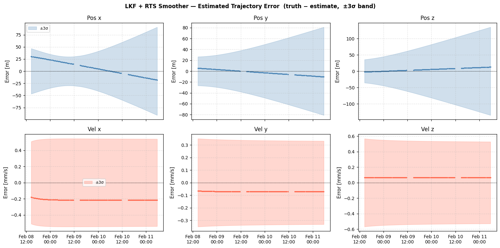

# Sequential Orbit Determination — Complete Demo#
Scarabaeus OD Framework | Last revised 2026
What this notebook covers#
Sequential orbit determination processes measurements one at a time, updating the state estimate and covariance recursively at each epoch. This is operationally efficient, naturally handles process noise, and supports real-time processing.
For the full batch-filter catalogue (LSB, SRIF-Batch, corner plots, covariance propagation, solution saving) see ``advanced_IdealMSR_BatchOD.ipynb``.
Topics#
# |
Topic |
|---|---|
1 |
True trajectory and measurements (DSS-14 + DSS-63) |
2 |
LKF with SNC process noise |
3 |
Process noise theory — SNC vs. DMC |
4 |
SRIF Sequential Filter |
5 |
RTS smoother |
6 |
Multi-leg OD with MissionSequence (two legs + impulsive burn) |
7 |
Consider parameters (η_SRP) |
8 |
Measurement editing — see BatchOD notebook |
9 |
Solution saving and analysis — see BatchOD notebook |
How to run#
Run from the project root directory (scarabaeus/).
0. Imports and Setup#
[1]:
import os, sys
import numpy as np
import numpy.random as rnd
import matplotlib.pyplot as plt
from pathlib import Path
import scarabaeus as scb
import supplementary as supp
# ── tutorial data and output paths ───────────────────────────────
data = supp.load_data()
tut_result_path = Path.cwd() / 'tutorial_results/meas_gen/radiometric'
tut_kernels_path = Path(data.mk.path).parent.parent / 'scenario'
tut_result_path.mkdir(parents=True, exist_ok=True)
tut_kernels_path.mkdir(parents=True, exist_ok=True)
kg, km, sec = scb.Units.get_units(['kg', 'km', 'sec'])
J2000, ITRF93, ECLIPJ2000, IAUEARTH = scb.Frame.generate_common_frames()
frame = J2000
origin = scb.CelestialBody.from_constants('SUN')
scb.SpiceManager.clear_kernels()
scb.SpiceManager.load_kernel_from_mkfile(data.mk.path)
print("Kernels loaded.")
# ── common spacecraft & initial state ────────────────────────────
dry_mass = scb.ArrayWUnits(1500.0, kg)
fuel_mass = scb.ArrayWUnits(500.0, kg)
area = scb.ArrayWUnits(1e-6, km**2)
cr = scb.ArrayWUnits(1.5, None)
Orbiter = scb.Spacecraft('Orbiter_True', -2000,
dry_mass+fuel_mass, area, cr)
time_0 = scb.SpiceManager.jd2et(2461809.72995654 + 1/3)
time_f = scb.SpiceManager.jd2et(2461809.72995654 + 3)
dt_step = 30 * 60
epoch_array = scb.EpochArray(np.arange(time_0, time_f, dt_step), sys='TDB')
epoch_0 = epoch_array[0]
pos_0 = scb.ArrayWFrame(
np.array([-1.1123095885148e+08, 8.9094345479316e+07, 3.8656500948069e+07]),
km, frame)
vel_0 = scb.ArrayWFrame(
np.array([-20.6936999825159, -16.7800270812616, -6.6437327193572]),
km/sec, frame)
SCB supplementary data up to date.
Kernels loaded.
Enhanced Plotting Helpers#
The cells below add calendar-date x-axis versions of the plots above, plus new visualization types: pre/post residual comparisons, state errors with ±3σ covariance bounds, covariance evolution, and corner covariance plots.
Helper functions:
et2dt(et_arr)— converts SPICE ET (seconds) to Pythondatetimeobjectsfmt_cal(ax)— appliesAutoDateLocator + DateFormatterfor a clean calendar x-axisadd_hrs_axis(ax)— adds a secondary top x-axis in hours from t0resid_from_filter(flt, ds)— extracts(t_pre, r_pre, t_post, r_post)arrayscorner_cov(P, labels)— lower-triangle corner plot with RdBu_r correlation colouring
[2]:
from datetime import datetime, timedelta
import matplotlib.dates as mdates
import matplotlib.ticker as mticker
from matplotlib import cm
from matplotlib.colors import Normalize
plt.rcParams.update({
'font.size': 10, 'axes.titlesize': 11, 'axes.labelsize': 10,
'xtick.labelsize': 9, 'ytick.labelsize': 9, 'legend.fontsize': 8,
'figure.dpi': 110, 'axes.grid': True, 'grid.alpha': 0.35, 'grid.linestyle': '--',
})
CMAP = cm.tab10
COLORS = [CMAP(i / 10) for i in range(10)]
# reference epoch for the hours-from-t0 secondary axis
t0_et = epoch_array.times.values[0]
def et2dt(et_arr):
"""Convert SPICE ET seconds (TDB from J2000) to list of datetime objects."""
_J2000 = datetime(2000, 1, 1, 12, 0, 0)
return [_J2000 + timedelta(seconds=float(t)) for t in np.atleast_1d(et_arr)]
def fmt_cal(ax):
"""Apply calendar-date tick formatting to a matplotlib axis."""
ax.xaxis.set_major_locator(mdates.AutoDateLocator(minticks=4, maxticks=9))
ax.xaxis.set_major_formatter(mdates.DateFormatter("%b %d\n%H:%M"))
def add_hrs_axis(ax, t0=None):
"""Add a secondary top x-axis showing hours from t0."""
t0 = t0 if t0 is not None else t0_et
from matplotlib.dates import date2num
t0_num = date2num(et2dt([t0])[0])
ax2 = ax.secondary_xaxis(
"top",
functions=(lambda x: (x - t0_num) * 24, lambda x: x / 24 + t0_num),
)
ax2.set_xlabel("Hours from t0 [TDB]", fontsize=8)
ax2.xaxis.set_major_formatter(mticker.FormatStrFormatter("%.0f h"))
return ax2
def resid_from_filter(flt_obj, ds_name, iteration=-1):
"""Return (t_pre, r_pre, t_post, r_post) numpy arrays for a dataset name.
iteration : int
Which iteration's pre-fit residuals to return.
0 → first iteration (raw O-C against initial reference).
-1 → last iteration (default, same as the converged solution).
Post-fit residuals always come from the final (converged) iteration.
"""
if (iteration == 0
and hasattr(flt_obj, '_solution_history')
and flt_obj._solution_history):
sol0 = flt_obj._solution_history[0]
pre = (sol0.prefits or {}).get(ds_name, [])
else:
pre = flt_obj.prefit_residuals.get(ds_name, [])
post = flt_obj.postfit_residuals.get(ds_name, [])
t_ds = np.array([])
for ds in flt_obj.measurement_data.datasets:
if ds.set_name == ds_name:
t_ds = np.array(ds.data["t2"])
break
t_pre = t_ds[:len(pre)] if len(pre) else np.array([])
r_pre = np.array([d[0] for d in pre]) if pre else np.array([])
t_post = t_ds[:len(post)] if len(post) else np.array([])
r_post = np.array([d[0] for d in post]) if post else np.array([])
return t_pre, r_pre, t_post, r_post
def corner_cov(P, labels, title="Covariance Corner Plot", figsize=(10, 9)):
"""
Corner plot from a covariance matrix.
Diagonal: 1D Gaussian marginal (dark-shaded ±1σ region).
Lower triangle: 2D confidence ellipses at 1σ / 2σ / 3σ (chi2, 2 dof).
Upper triangle: hidden.
"""
from matplotlib.patches import Ellipse
SCALES = [1.5150, 2.4477, 3.4395]
ALPHAS = [0.55, 0.30, 0.15 ]
COL, EDG = 'steelblue', 'navy'
n = P.shape[0]
sig = np.sqrt(np.diag(P))
fig, axes = plt.subplots(n, n, figsize=figsize,
gridspec_kw={'hspace': 0.05, 'wspace': 0.05})
if n == 1:
axes = np.array([[axes]])
fig.suptitle(title, fontsize=11, fontweight='bold')
for i in range(n):
for j in range(n):
ax = axes[i, j]
ax.tick_params(labelsize=5)
if i == j:
s = sig[i]
lim = 3.8 * s
x = np.linspace(-lim, lim, 300)
y = np.exp(-0.5 * (x / s) ** 2)
ax.plot(x, y, color=COL, lw=1.5)
ax.fill_between(x, y, alpha=0.18, color=COL)
ax.fill_between(x[np.abs(x) <= s], y[np.abs(x) <= s],
alpha=0.45, color=COL)
ax.axvline(0, color='k', lw=0.5, ls='--')
ax.set_xlim(-lim, lim)
ax.set_ylim(0, 1.30)
ax.set_yticks([])
ax.set_xticks([-2*s, 0, 2*s])
ax.text(0.97, 0.97, f'1\u03c3={s:.2e}',
transform=ax.transAxes, fontsize=6,
ha='right', va='top', color=EDG, fontweight='bold')
ax.set_title(labels[i], fontsize=7, pad=2)
if i < n - 1:
ax.set_xticklabels([])
elif i > j:
P2 = np.array([[P[j,j], P[j,i]], [P[i,j], P[i,i]]])
ev, evec = np.linalg.eigh(P2)
ev = np.maximum(ev, 0.0)
angle = np.degrees(np.arctan2(evec[1, 1], evec[0, 1]))
ax.axhline(0, color='k', lw=0.4, ls='--', alpha=0.4)
ax.axvline(0, color='k', lw=0.4, ls='--', alpha=0.4)
for scale, alpha in zip(SCALES, ALPHAS):
ax.add_patch(Ellipse(
xy=(0, 0),
width =2 * scale * np.sqrt(ev[1]),
height=2 * scale * np.sqrt(ev[0]),
angle =angle,
facecolor=COL, edgecolor=EDG,
linewidth=0.8, alpha=alpha,
))
rho = P[i, j] / (sig[i] * sig[j])
ax.text(0.05, 0.97, f'\u03c1={rho:+.2f}',
transform=ax.transAxes, fontsize=6.5,
color=EDG, va='top', fontweight='bold')
ax.set_xlim(-3.8*sig[j], 3.8*sig[j])
ax.set_ylim(-3.8*sig[i], 3.8*sig[i])
ax.set_xticks([-2*sig[j], 0, 2*sig[j]])
ax.set_yticks([-2*sig[i], 0, 2*sig[i]])
if i < n - 1:
ax.set_xticklabels([])
if j > 0:
ax.set_yticklabels([])
if j == 0:
ax.set_ylabel(labels[i], fontsize=7, labelpad=2)
if i == n - 1:
ax.set_xlabel(labels[j], fontsize=7, labelpad=2)
else:
ax.set_visible(False)
plt.tight_layout()
return fig
print(f"Plotting helpers ready. t0 = {et2dt([t0_et])[0].strftime('%Y-%m-%d %H:%M:%S')} TDB")
Plotting helpers ready. t0 = 2028-02-08 13:32:17 TDB
1. True Trajectory and Measurements#
We propagate the truth and generate Range + RangeRate measurements on it (DSS-14). These are the “observed” measurements the filter will try to explain.
The measurement generation is identical to the Batch notebook — see that notebook for the full measurement-model catalogue (Doppler, DDOR, optical navigation).
[3]:
# ── propagate truth ──────────────────────────────────────────────
third_bodies = ['MERCURY', 'VENUS', 'EARTH']
state_truth = scb.StateDefinition.from_components([
('position', 3, 'estimated', 'dynamic', Orbiter, pos_0),
('velocity', 3, 'estimated', 'dynamic', Orbiter, vel_0),
])
sv_truth = scb.StateArray(epoch=epoch_0, origin=origin, state=state_truth)
fm_truth = scb.ForceModelTranslation(primary_body=Orbiter,
third_bodies=third_bodies, cannonball_SRP=True)
prop_truth = scb.Propagator(primary_body=Orbiter, state_vector=sv_truth,
tspan=epoch_array, force_models=fm_truth)
prop_truth.propagate()
state_prop_truth = prop_truth.propagated_state_array
true_spk = str(tut_kernels_path / 'seq_orbiter_true.bsp')
if os.path.isfile(true_spk): os.remove(true_spk)
orbiter_traj_true = scb.Trajectory(state_array=state_prop_truth)
orbiter_traj_true.write_to_spk(true_spk)
print("True trajectory saved.")
# ── ground stations ───────────────────────────────────────────────
GS1 = scb.GroundStation('DSS-14')
GS2 = scb.GroundStation('DSS-63')
range_sigma = scb.ArrayWUnits(1e-3, km)
rr_sigma = scb.ArrayWUnits(1e-7, km/sec)
rangerate_sigma = rr_sigma
Range_GS1 = scb.RangeIdeal('GS1 Range', GS1, sigma=range_sigma)
RangeRate_GS1 = scb.RangeRateIdeal('GS1 RRate', GS1, sigma=rr_sigma)
Range_GS2 = scb.RangeIdeal('GS2 Range', GS2, sigma=range_sigma)
RangeRate_GS2 = scb.RangeRateIdeal('GS2 RRate', GS2, sigma=rr_sigma)
for model, stem in [
(Range_GS1, 'seq_range_GS1'),
(RangeRate_GS1, 'seq_rr_GS1'),
(Range_GS2, 'seq_range_GS2'),
(RangeRate_GS2, 'seq_rr_GS2'),
]:
model.write_observed_measurements(
target=Orbiter, epoch_array=epoch_array, noisy=True,
file_name=stem, check_visibility=True, elevation_mask=10.0,
folder_path_override=str(tut_result_path))
obs_range = Range_GS1.observed_measurements(
file_name=str(tut_result_path / 'seq_range_GS1.json'),
meas_name='meas_ideal', units=km)
obs_rr = RangeRate_GS1.observed_measurements(
file_name=str(tut_result_path / 'seq_rr_GS1.json'),
meas_name='meas_ideal', units=km/sec)
obs_range_GS2 = Range_GS2.observed_measurements(
file_name=str(tut_result_path / 'seq_range_GS2.json'),
meas_name='meas_ideal', units=km)
obs_rr_GS2 = RangeRate_GS2.observed_measurements(
file_name=str(tut_result_path / 'seq_rr_GS2.json'),
meas_name='meas_ideal', units=km/sec)
print(f"GS1 Range: {len(obs_range[2].quantity.values)} meas")
print(f"GS1 RRate: {len(obs_rr[2].quantity.values)} meas")
print(f"GS2 Range: {len(obs_range_GS2[2].quantity.values)} meas")
print(f"GS2 RRate: {len(obs_rr_GS2[2].quantity.values)} meas")
================================================================================
Starting propagation...
================================================================================
Integrating: 100%|█████████████████████████████████████████████| 230400.00/230400.00 s [00:00<00:00]
=================== DOP853 integration complete. ==================
Propagation complete.
True trajectory saved.
GS1 Range: 69 meas
GS1 RRate: 69 meas
GS2 Range: 82 meas
GS2 RRate: 82 meas
2. LKF with SNC Process Noise#
Theory#
The Linearized Kalman Filter (LKF) is the core sequential estimator. At each measurement epoch \(t_k\):
Time update (predict): propagate state and covariance forward with the STM
\[\mathbf{P}_{k|k-1} = \mathbf{\Phi}_{k,k-1}\,\mathbf{P}_{k-1|k-1}\,\mathbf{\Phi}_{k,k-1}^T + \mathbf{Q}_k\]Measurement update (correct): incorporate new measurement \(y_k\)
\[\mathbf{K}_k = \mathbf{P}_{k|k-1}\,\mathbf{H}_k^T\,(\mathbf{H}_k\mathbf{P}_{k|k-1}\mathbf{H}_k^T + \mathbf{R}_k)^{-1}\]\[\hat{\mathbf{x}}_{k|k} = \hat{\mathbf{x}}_{k|k-1} + \mathbf{K}_k(y_k - \mathbf{H}_k\hat{\mathbf{x}}_{k|k-1})\]
State Noise Compensation (SNC)#
SNC models uncharacterised accelerations as white noise added continuously to the velocity:
where \(q_c\) [km²/s³] is the continuous-time noise spectral density.
Tuning Q_cont (SNC):
Too large → wide covariance, accepts noise, position sigma grows fast.
Too small → filter stiffens, can’t track maneuvers or unmodelled forces.
Rule of thumb: \(q_c \approx (\text{expected unmodelled accel})^2 / \text{arc length in sec}\)
Q_cont = scb.ProcessNoiseSettings(type='SNC', Q_cont=Q_cont_matrix)
[4]:
# ── reference spacecraft (perturbed IC) ──────────────────────────
delta_pos_km = np.array([1.0, 1.0, 1.0]) # 1 km error per axis
delta_vel_kms = np.array([1e-3, 1e-3, 1e-3]) # 1 m/s error per axis
def make_ref_sc(name, spice_id, d_pos, d_vel):
sc = scb.Spacecraft(name, spice_id, dry_mass+fuel_mass, area, cr)
pos = scb.ArrayWFrame(pos_0.quantity + scb.ArrayWUnits(d_pos, km), frame)
vel = scb.ArrayWFrame(vel_0.quantity + scb.ArrayWUnits(d_vel, km/sec), frame)
return sc, pos, vel
sc_lkf, pos_lkf, vel_lkf = make_ref_sc('Orbiter_LKF', -2001,
delta_pos_km, delta_vel_kms)
state_lkf = scb.StateDefinition.from_components([
('position', 3, 'estimated', 'dynamic', sc_lkf, pos_lkf),
('velocity', 3, 'estimated', 'dynamic', sc_lkf, vel_lkf),
])
sv_lkf = scb.StateArray(epoch=epoch_0, origin=origin, state=state_lkf)
fm_lkf = scb.ForceModelTranslation(
primary_body=sc_lkf, third_bodies=third_bodies, cannonball_SRP=True)
prop_lkf = scb.Propagator(
primary_body=sc_lkf, state_vector=sv_lkf,
tspan=epoch_array, force_models=fm_lkf)
# ── initial covariance ────────────────────────────────────────────
pos_sig = scb.ArrayWUnits(3.0, km)
vel_sig = scb.ArrayWUnits(3e-3, km/sec)
P0 = scb.CovarianceMatrix(
[pos_sig]*3 + [vel_sig]*3, epoch_array[1], from_list=True)
# ── SNC process noise ─────────────────────────────────────────────
Q_diag = scb.ArrayWUnits(1e-9**2, km**2 * sec**-4)
Q_cont = scb.CovarianceMatrix([Q_diag]*3, epoch_array[0], from_list=True)
pn_snc = scb.ProcessNoiseSettings(type='SNC', Q_cont=Q_cont)
# ── measurement list ──────────────────────────────────────────────
meas_lkf = scb.MeasurementSpec.many(
scb.MeasurementSpec(model=Range_GS1, observed_meas=obs_range,
dataset_name='GS1 Range'),
scb.MeasurementSpec(model=RangeRate_GS1, observed_meas=obs_rr,
dataset_name='GS1 RangeRate'),
scb.MeasurementSpec(model=Range_GS2, observed_meas=obs_range_GS2,
dataset_name='GS2 Range'),
scb.MeasurementSpec(model=RangeRate_GS2, observed_meas=obs_rr_GS2,
dataset_name='GS2 RangeRate'),
)
# ── LKF ──────────────────────────────────────────────────────────
ref_spk_lkf = tut_kernels_path / 'seq_orbiter_ref_lkf.bsp'
if ref_spk_lkf.exists(): ref_spk_lkf.unlink()
lkf = scb.LKF(
propagator = prop_lkf,
settings = scb.FilterSettings(
initial_covariance = P0,
process_noise = pn_snc,
output = scb.OutputSettings(metadata={'filter':'LKF-SNC'}),
),
measurements = meas_lkf,
traj_name = 'seq_orbiter_ref_lkf.bsp',
traj_dir = str(tut_kernels_path),
)
print("Running LKF with SNC ...")
sol_lkf, ni_lkf, conv_lkf = lkf.fit(
max_iterations = 10,
convergence_threshold = 1e-6,
verbose = True,
traj_name = 'seq_orbiter_ref_lkf.bsp',
traj_dir = str(tut_kernels_path),
if_sequential_smooth = False,
)
print(f"Converged: {conv_lkf} after {ni_lkf} iterations")
================================================================================
Starting propagation...
================================================================================
Integrating: 100%|█████████████████████████████████████████████| 230400.00/230400.00 s [00:00<00:00]
/Users/zael5647/scarabaeus/src/scarabaeus/environment/Trajectory.py:1580: UserWarning: No STM timestamps provided: falling back to trajectory epochs. Ensure STMs are aligned 1:1 with `self.epoch`.
warnings.warn(
=================== DOP853 integration complete. ==================
Propagation complete.
================================================================================
Generating computed measurements for the dataset "GS1 Range"
================================================================================
================================================================================
Generating _partials for the dataset "GS1 Range"
================================================================================
Generating _partials computed measurements...
Partials: 100%|████████████████████████████████████████████████████████████| 69/69 obs [00:00<00:00]
================================================================================
Generating computed measurements for the dataset "GS1 RangeRate"
================================================================================
================================================================================
Generating _partials for the dataset "GS1 RangeRate"
================================================================================
Generating _partials computed measurements...
Partials: 100%|████████████████████████████████████████████████████████████| 69/69 obs [00:00<00:00]
================================================================================
Generating computed measurements for the dataset "GS2 Range"
================================================================================
================================================================================
Generating _partials for the dataset "GS2 Range"
================================================================================
Generating _partials computed measurements...
Partials: 100%|████████████████████████████████████████████████████████████| 82/82 obs [00:00<00:00]
================================================================================
Generating computed measurements for the dataset "GS2 RangeRate"
================================================================================
================================================================================
Generating _partials for the dataset "GS2 RangeRate"
================================================================================
Generating _partials computed measurements...
Partials: 100%|████████████████████████████████████████████████████████████| 82/82 obs [00:00<00:00]
================================================================================
Initializing Linearized Kalman Filter (LKF)
================================================================================
Process Noise Model: SNC
================================================================================
Running LKF with SNC ...
================================================================================
STARTING ITERATIVE ORBIT DETERMINATION
================================================================================
Max iterations: 10
Convergence threshold: 1.00e-06
================================================================================
============================================================
ITERATION 1
============================================================
[886905137.43 TDB | 0.0%] ‖prefit‖ = 5.8514e+00 ‖postfit‖ = 1.4436e-07 ‖update‖ = 5.8518e+00 tr(P) = 2.5111e+02 √tr(S) = 1.1214e+01 ⟨std⟩ = 5.00e-04
[886906937.43 TDB | 0.8%] ‖prefit‖ = 8.1290e+00 ‖postfit‖ = 2.6338e-05 ‖update‖ = 5.0595e+00 tr(P) = 2.8876e+02 √tr(S) = 8.4645e-03 ⟨std⟩ = 5.00e-04
[886908737.43 TDB | 1.6%] ‖prefit‖ = 1.0407e+01 ‖postfit‖ = 2.3481e-04 ‖update‖ = 3.7443e+00 tr(P) = 6.7219e+01 √tr(S) = 1.7523e-03 ⟨std⟩ = 5.00e-04
[886910537.43 TDB | 2.4%] ‖prefit‖ = 1.2688e+01 ‖postfit‖ = 4.4513e-04 ‖update‖ = 3.9822e-02 tr(P) = 7.5803e+01 √tr(S) = 1.2295e-03 ⟨std⟩ = 5.00e-04
[886912337.43 TDB | 3.2%] ‖prefit‖ = 1.4975e+01 ‖postfit‖ = 1.0263e-03 ‖update‖ = 1.6802e+00 tr(P) = 6.8072e+01 √tr(S) = 1.1792e-03 ⟨std⟩ = 5.00e-04
[886914137.43 TDB | 4.0%] ‖prefit‖ = 1.7274e+01 ‖postfit‖ = 5.6476e-04 ‖update‖ = 1.2174e+00 tr(P) = 4.3870e+01 √tr(S) = 1.1593e-03 ⟨std⟩ = 5.00e-04
[886915937.43 TDB | 4.8%] ‖prefit‖ = 1.9580e+01 ‖postfit‖ = 5.9061e-04 ‖update‖ = 6.4982e+00 tr(P) = 2.6079e+01 √tr(S) = 1.1454e-03 ⟨std⟩ = 5.00e-04
[886917737.43 TDB | 5.6%] ‖prefit‖ = 2.1900e+01 ‖postfit‖ = 7.2659e-04 ‖update‖ = 2.6611e+00 tr(P) = 1.7249e+01 √tr(S) = 1.1339e-03 ⟨std⟩ = 5.00e-04
[886919537.43 TDB | 6.3%] ‖prefit‖ = 2.4230e+01 ‖postfit‖ = 1.0228e-03 ‖update‖ = 3.1080e+00 tr(P) = 1.3020e+01 √tr(S) = 1.1256e-03 ⟨std⟩ = 5.00e-04
[886921337.43 TDB | 7.1%] ‖prefit‖ = 2.6570e+01 ‖postfit‖ = 5.5336e-04 ‖update‖ = 8.6804e-01 tr(P) = 1.0836e+01 √tr(S) = 1.1198e-03 ⟨std⟩ = 5.00e-04
[886923137.43 TDB | 7.9%] ‖prefit‖ = 2.8922e+01 ‖postfit‖ = 1.9785e-04 ‖update‖ = 1.4204e+00 tr(P) = 9.5750e+00 √tr(S) = 1.1157e-03 ⟨std⟩ = 5.00e-04
[886924937.43 TDB | 8.7%] ‖prefit‖ = 3.1285e+01 ‖postfit‖ = 1.1225e-03 ‖update‖ = 1.1456e+00 tr(P) = 8.7512e+00 √tr(S) = 1.1128e-03 ⟨std⟩ = 5.00e-04
[886926737.43 TDB | 9.5%] ‖prefit‖ = 3.3656e+01 ‖postfit‖ = 6.3777e-05 ‖update‖ = 4.5043e-01 tr(P) = 8.1405e+00 √tr(S) = 1.1107e-03 ⟨std⟩ = 5.00e-04
[886928537.43 TDB | 10.3%] ‖prefit‖ = 3.6035e+01 ‖postfit‖ = 6.5341e-04 ‖update‖ = 9.4598e-01 tr(P) = 7.6324e+00 √tr(S) = 1.1091e-03 ⟨std⟩ = 5.00e-04
[886930337.43 TDB | 11.1%] ‖prefit‖ = 3.8420e+01 ‖postfit‖ = 4.3299e-04 ‖update‖ = 1.6871e-01 tr(P) = 7.1680e+00 √tr(S) = 1.1078e-03 ⟨std⟩ = 5.00e-04
[886932137.43 TDB | 11.9%] ‖prefit‖ = 4.0808e+01 ‖postfit‖ = 8.0520e-04 ‖update‖ = 1.4970e-02 tr(P) = 6.7139e+00 √tr(S) = 1.1069e-03 ⟨std⟩ = 5.00e-04
[886933937.43 TDB | 12.7%] ‖prefit‖ = 6.0451e+01 ‖postfit‖ = 6.7698e-05 ‖update‖ = 7.6740e-01 tr(P) = 7.0510e-03 √tr(S) = 3.8987e-02 ⟨std⟩ = 5.00e-04
[886935737.43 TDB | 13.5%] ‖prefit‖ = 6.3770e+01 ‖postfit‖ = 1.3467e-03 ‖update‖ = 6.1272e-02 tr(P) = 4.2795e-03 √tr(S) = 1.7956e-03 ⟨std⟩ = 5.00e-04
[886937537.43 TDB | 14.3%] ‖prefit‖ = 6.7101e+01 ‖postfit‖ = 1.9032e-03 ‖update‖ = 7.8841e-02 tr(P) = 3.3561e-03 √tr(S) = 1.6515e-03 ⟨std⟩ = 5.00e-04
[886939337.43 TDB | 15.1%] ‖prefit‖ = 7.0439e+01 ‖postfit‖ = 4.9980e-04 ‖update‖ = 2.6501e-02 tr(P) = 2.9045e-03 √tr(S) = 1.6007e-03 ⟨std⟩ = 5.00e-04
[886941137.43 TDB | 15.9%] ‖prefit‖ = 7.3785e+01 ‖postfit‖ = 7.3170e-04 ‖update‖ = 1.2590e-02 tr(P) = 2.6456e-03 √tr(S) = 1.5745e-03 ⟨std⟩ = 5.00e-04
[886942937.43 TDB | 16.7%] ‖prefit‖ = 7.7138e+01 ‖postfit‖ = 1.3154e-03 ‖update‖ = 1.3564e-02 tr(P) = 2.4847e-03 √tr(S) = 1.5582e-03 ⟨std⟩ = 5.00e-04
[886944737.43 TDB | 17.5%] ‖prefit‖ = 8.0498e+01 ‖postfit‖ = 1.6811e-03 ‖update‖ = 2.3084e-02 tr(P) = 2.3805e-03 √tr(S) = 1.5467e-03 ⟨std⟩ = 5.00e-04
[886946537.43 TDB | 18.3%] ‖prefit‖ = 8.3857e+01 ‖postfit‖ = 2.0635e-03 ‖update‖ = 1.6551e-02 tr(P) = 2.3116e-03 √tr(S) = 1.5377e-03 ⟨std⟩ = 5.00e-04
[886948337.43 TDB | 19.0%] ‖prefit‖ = 8.7223e+01 ‖postfit‖ = 1.1756e-03 ‖update‖ = 1.4096e-03 tr(P) = 2.2657e-03 √tr(S) = 1.5302e-03 ⟨std⟩ = 5.00e-04
[886950137.43 TDB | 19.8%] ‖prefit‖ = 9.0586e+01 ‖postfit‖ = 1.1675e-03 ‖update‖ = 8.6392e-03 tr(P) = 2.2343e-03 √tr(S) = 1.5237e-03 ⟨std⟩ = 5.00e-04
[886951937.43 TDB | 20.6%] ‖prefit‖ = 9.3948e+01 ‖postfit‖ = 1.7092e-03 ‖update‖ = 1.3260e-02 tr(P) = 2.2112e-03 √tr(S) = 1.5178e-03 ⟨std⟩ = 5.00e-04
[886953737.43 TDB | 21.4%] ‖prefit‖ = 9.7310e+01 ‖postfit‖ = 4.8896e-04 ‖update‖ = 3.5540e-03 tr(P) = 2.1915e-03 √tr(S) = 1.5125e-03 ⟨std⟩ = 5.00e-04
[886955537.43 TDB | 22.2%] ‖prefit‖ = 7.0857e+01 ‖postfit‖ = 1.3842e-03 ‖update‖ = 6.2932e-03 tr(P) = 2.2719e-03 √tr(S) = 1.0571e-03 ⟨std⟩ = 5.00e-04
[886957337.43 TDB | 23.0%] ‖prefit‖ = 7.3304e+01 ‖postfit‖ = 1.1143e-03 ‖update‖ = 5.4861e-03 tr(P) = 2.3711e-03 √tr(S) = 1.0564e-03 ⟨std⟩ = 5.00e-04
[886959137.43 TDB | 23.8%] ‖prefit‖ = 7.5752e+01 ‖postfit‖ = 3.8529e-04 ‖update‖ = 2.7282e-03 tr(P) = 2.4874e-03 √tr(S) = 1.0566e-03 ⟨std⟩ = 5.00e-04
[886960937.43 TDB | 24.6%] ‖prefit‖ = 7.8201e+01 ‖postfit‖ = 1.3328e-04 ‖update‖ = 5.5220e-04 tr(P) = 2.6190e-03 √tr(S) = 1.0575e-03 ⟨std⟩ = 5.00e-04
[886962737.43 TDB | 25.4%] ‖prefit‖ = 8.0646e+01 ‖postfit‖ = 1.5480e-03 ‖update‖ = 4.5390e-03 tr(P) = 2.7638e-03 √tr(S) = 1.0589e-03 ⟨std⟩ = 5.00e-04
[886964537.43 TDB | 26.2%] ‖prefit‖ = 8.3090e+01 ‖postfit‖ = 9.8582e-04 ‖update‖ = 3.5811e-03 tr(P) = 2.9198e-03 √tr(S) = 1.0606e-03 ⟨std⟩ = 5.00e-04
[886966337.43 TDB | 27.0%] ‖prefit‖ = 8.5524e+01 ‖postfit‖ = 1.3768e-04 ‖update‖ = 3.8616e-03 tr(P) = 3.0843e-03 √tr(S) = 1.0624e-03 ⟨std⟩ = 5.00e-04
[886968137.43 TDB | 27.8%] ‖prefit‖ = 8.7949e+01 ‖postfit‖ = 1.8139e-03 ‖update‖ = 4.2770e-03 tr(P) = 3.2538e-03 √tr(S) = 1.0642e-03 ⟨std⟩ = 5.00e-04
[886969937.43 TDB | 28.6%] ‖prefit‖ = 9.0366e+01 ‖postfit‖ = 9.4230e-04 ‖update‖ = 7.6573e-03 tr(P) = 3.4235e-03 √tr(S) = 1.0657e-03 ⟨std⟩ = 5.00e-04
[886971737.43 TDB | 29.4%] ‖prefit‖ = 9.2773e+01 ‖postfit‖ = 7.3794e-04 ‖update‖ = 1.6461e-02 tr(P) = 3.5866e-03 √tr(S) = 1.0670e-03 ⟨std⟩ = 5.00e-04
[886973537.43 TDB | 30.2%] ‖prefit‖ = 9.5164e+01 ‖postfit‖ = 9.3616e-04 ‖update‖ = 2.9866e-03 tr(P) = 3.7346e-03 √tr(S) = 1.0680e-03 ⟨std⟩ = 5.00e-04
[886975337.43 TDB | 31.0%] ‖prefit‖ = 9.7544e+01 ‖postfit‖ = 1.3520e-04 ‖update‖ = 3.3141e-04 tr(P) = 3.8572e-03 √tr(S) = 1.0689e-03 ⟨std⟩ = 5.00e-04
[886977137.43 TDB | 31.7%] ‖prefit‖ = 9.9906e+01 ‖postfit‖ = 1.6591e-03 ‖update‖ = 4.4288e-03 tr(P) = 3.9439e-03 √tr(S) = 1.0696e-03 ⟨std⟩ = 5.00e-04
[886978937.43 TDB | 32.5%] ‖prefit‖ = 1.0226e+02 ‖postfit‖ = 2.8325e-04 ‖update‖ = 1.3786e-02 tr(P) = 3.9859e-03 √tr(S) = 1.0705e-03 ⟨std⟩ = 5.00e-04
[886980737.43 TDB | 33.3%] ‖prefit‖ = 1.0459e+02 ‖postfit‖ = 6.6387e-05 ‖update‖ = 6.0088e-03 tr(P) = 3.9789e-03 √tr(S) = 1.0715e-03 ⟨std⟩ = 5.00e-04
[886993337.43 TDB | 38.9%] ‖prefit‖ = 1.1927e+02 ‖postfit‖ = 6.7625e-04 ‖update‖ = 4.7644e-02 tr(P) = 3.2737e-03 √tr(S) = 1.7146e-03 ⟨std⟩ = 5.00e-04
[886995137.43 TDB | 39.7%] ‖prefit‖ = 1.2165e+02 ‖postfit‖ = 6.2004e-04 ‖update‖ = 1.9071e-02 tr(P) = 2.8690e-03 √tr(S) = 1.2982e-03 ⟨std⟩ = 5.00e-04
[886996937.43 TDB | 40.5%] ‖prefit‖ = 1.2404e+02 ‖postfit‖ = 1.2863e-03 ‖update‖ = 2.3291e-02 tr(P) = 2.7285e-03 √tr(S) = 1.1930e-03 ⟨std⟩ = 5.00e-04
[886998737.43 TDB | 41.3%] ‖prefit‖ = 1.2646e+02 ‖postfit‖ = 2.9639e-04 ‖update‖ = 7.9001e-03 tr(P) = 2.6808e-03 √tr(S) = 1.1439e-03 ⟨std⟩ = 5.00e-04
[887000537.43 TDB | 42.1%] ‖prefit‖ = 1.2889e+02 ‖postfit‖ = 6.6287e-04 ‖update‖ = 5.7559e-03 tr(P) = 2.6782e-03 √tr(S) = 1.1153e-03 ⟨std⟩ = 5.00e-04
[887002337.43 TDB | 42.9%] ‖prefit‖ = 1.3133e+02 ‖postfit‖ = 6.8935e-05 ‖update‖ = 9.9587e-03 tr(P) = 2.7015e-03 √tr(S) = 1.0965e-03 ⟨std⟩ = 5.00e-04
[887004137.43 TDB | 43.7%] ‖prefit‖ = 1.3379e+02 ‖postfit‖ = 1.3899e-03 ‖update‖ = 6.1864e-03 tr(P) = 2.7413e-03 √tr(S) = 1.0834e-03 ⟨std⟩ = 5.00e-04
[887005937.43 TDB | 44.4%] ‖prefit‖ = 1.3627e+02 ‖postfit‖ = 7.9729e-04 ‖update‖ = 4.2923e-03 tr(P) = 2.7917e-03 √tr(S) = 1.0740e-03 ⟨std⟩ = 5.00e-04
[887007737.43 TDB | 45.2%] ‖prefit‖ = 1.3876e+02 ‖postfit‖ = 1.5659e-03 ‖update‖ = 4.8781e-03 tr(P) = 2.8486e-03 √tr(S) = 1.0671e-03 ⟨std⟩ = 5.00e-04
[887009537.43 TDB | 46.0%] ‖prefit‖ = 1.4125e+02 ‖postfit‖ = 1.4158e-04 ‖update‖ = 8.3458e-03 tr(P) = 2.9089e-03 √tr(S) = 1.0622e-03 ⟨std⟩ = 5.00e-04
[887011337.43 TDB | 46.8%] ‖prefit‖ = 1.4376e+02 ‖postfit‖ = 1.3789e-04 ‖update‖ = 1.5884e-03 tr(P) = 2.9701e-03 √tr(S) = 1.0589e-03 ⟨std⟩ = 5.00e-04
[887013137.43 TDB | 47.6%] ‖prefit‖ = 1.4627e+02 ‖postfit‖ = 7.7928e-04 ‖update‖ = 9.2362e-03 tr(P) = 3.0301e-03 √tr(S) = 1.0567e-03 ⟨std⟩ = 5.00e-04
[887014937.43 TDB | 48.4%] ‖prefit‖ = 1.4879e+02 ‖postfit‖ = 3.2159e-04 ‖update‖ = 5.8886e-03 tr(P) = 3.0874e-03 √tr(S) = 1.0555e-03 ⟨std⟩ = 5.00e-04
[887016737.43 TDB | 49.2%] ‖prefit‖ = 1.5130e+02 ‖postfit‖ = 1.0739e-03 ‖update‖ = 3.8351e-03 tr(P) = 3.1412e-03 √tr(S) = 1.0551e-03 ⟨std⟩ = 5.00e-04
[887018537.43 TDB | 50.0%] ‖prefit‖ = 1.5382e+02 ‖postfit‖ = 2.0710e-04 ‖update‖ = 7.7975e-04 tr(P) = 3.1908e-03 √tr(S) = 1.0552e-03 ⟨std⟩ = 5.00e-04
[887020337.43 TDB | 50.8%] ‖prefit‖ = 2.2005e+02 ‖postfit‖ = 1.1433e-03 ‖update‖ = 5.6785e-03 tr(P) = 3.1128e-03 √tr(S) = 1.5129e-03 ⟨std⟩ = 5.00e-04
[887022137.43 TDB | 51.6%] ‖prefit‖ = 2.2352e+02 ‖postfit‖ = 5.0317e-04 ‖update‖ = 6.4941e-03 tr(P) = 3.0498e-03 √tr(S) = 1.5035e-03 ⟨std⟩ = 5.00e-04
[887023937.43 TDB | 52.4%] ‖prefit‖ = 2.2699e+02 ‖postfit‖ = 2.6740e-04 ‖update‖ = 9.6214e-03 tr(P) = 2.9960e-03 √tr(S) = 1.4971e-03 ⟨std⟩ = 5.00e-04
[887025737.43 TDB | 53.2%] ‖prefit‖ = 2.3048e+02 ‖postfit‖ = 1.5733e-03 ‖update‖ = 1.0611e-02 tr(P) = 2.9485e-03 √tr(S) = 1.4923e-03 ⟨std⟩ = 5.00e-04
[887027537.43 TDB | 54.0%] ‖prefit‖ = 2.3397e+02 ‖postfit‖ = 1.7173e-03 ‖update‖ = 9.9129e-03 tr(P) = 2.9056e-03 √tr(S) = 1.4885e-03 ⟨std⟩ = 5.00e-04
[887029337.43 TDB | 54.8%] ‖prefit‖ = 2.3746e+02 ‖postfit‖ = 3.8280e-04 ‖update‖ = 2.0034e-02 tr(P) = 2.8659e-03 √tr(S) = 1.4853e-03 ⟨std⟩ = 5.00e-04
[887031137.43 TDB | 55.6%] ‖prefit‖ = 2.4096e+02 ‖postfit‖ = 4.7000e-04 ‖update‖ = 4.7599e-03 tr(P) = 2.8289e-03 √tr(S) = 1.4823e-03 ⟨std⟩ = 5.00e-04
[887032937.43 TDB | 56.3%] ‖prefit‖ = 2.4445e+02 ‖postfit‖ = 1.2053e-03 ‖update‖ = 8.9314e-03 tr(P) = 2.7939e-03 √tr(S) = 1.4794e-03 ⟨std⟩ = 5.00e-04
[887034737.43 TDB | 57.1%] ‖prefit‖ = 2.4794e+02 ‖postfit‖ = 6.3635e-04 ‖update‖ = 4.0592e-03 tr(P) = 2.7603e-03 √tr(S) = 1.4766e-03 ⟨std⟩ = 5.00e-04
[887036537.43 TDB | 57.9%] ‖prefit‖ = 2.5143e+02 ‖postfit‖ = 1.3994e-03 ‖update‖ = 6.7635e-03 tr(P) = 2.7278e-03 √tr(S) = 1.4739e-03 ⟨std⟩ = 5.00e-04
[887038337.43 TDB | 58.7%] ‖prefit‖ = 2.5491e+02 ‖postfit‖ = 1.4304e-03 ‖update‖ = 1.6860e-02 tr(P) = 2.6959e-03 √tr(S) = 1.4713e-03 ⟨std⟩ = 5.00e-04
[887040137.43 TDB | 59.5%] ‖prefit‖ = 2.5838e+02 ‖postfit‖ = 8.4701e-04 ‖update‖ = 1.0286e-02 tr(P) = 2.6644e-03 √tr(S) = 1.4689e-03 ⟨std⟩ = 5.00e-04
[887041937.43 TDB | 60.3%] ‖prefit‖ = 1.8473e+02 ‖postfit‖ = 1.5520e-03 ‖update‖ = 5.4118e-03 tr(P) = 2.7117e-03 √tr(S) = 1.0273e-03 ⟨std⟩ = 5.00e-04
[887043737.43 TDB | 61.1%] ‖prefit‖ = 1.8727e+02 ‖postfit‖ = 2.7299e-04 ‖update‖ = 1.0206e-03 tr(P) = 2.7609e-03 √tr(S) = 1.0268e-03 ⟨std⟩ = 5.00e-04
[887045537.43 TDB | 61.9%] ‖prefit‖ = 1.8982e+02 ‖postfit‖ = 9.9844e-04 ‖update‖ = 1.1615e-02 tr(P) = 2.8114e-03 √tr(S) = 1.0266e-03 ⟨std⟩ = 5.00e-04
[887047337.43 TDB | 62.7%] ‖prefit‖ = 1.9236e+02 ‖postfit‖ = 1.3454e-03 ‖update‖ = 6.0450e-03 tr(P) = 2.8624e-03 √tr(S) = 1.0268e-03 ⟨std⟩ = 5.00e-04
[887049137.43 TDB | 63.5%] ‖prefit‖ = 1.9490e+02 ‖postfit‖ = 2.1064e-04 ‖update‖ = 9.4349e-03 tr(P) = 2.9132e-03 √tr(S) = 1.0273e-03 ⟨std⟩ = 5.00e-04
[887050937.43 TDB | 64.3%] ‖prefit‖ = 1.9742e+02 ‖postfit‖ = 6.8607e-05 ‖update‖ = 4.1146e-04 tr(P) = 2.9629e-03 √tr(S) = 1.0281e-03 ⟨std⟩ = 5.00e-04
[887052737.43 TDB | 65.1%] ‖prefit‖ = 1.9993e+02 ‖postfit‖ = 3.4466e-04 ‖update‖ = 1.0068e-03 tr(P) = 3.0109e-03 √tr(S) = 1.0290e-03 ⟨std⟩ = 5.00e-04
[887054537.43 TDB | 65.9%] ‖prefit‖ = 2.0243e+02 ‖postfit‖ = 1.8258e-03 ‖update‖ = 5.9133e-03 tr(P) = 3.0562e-03 √tr(S) = 1.0301e-03 ⟨std⟩ = 5.00e-04
[887056337.43 TDB | 66.7%] ‖prefit‖ = 2.0492e+02 ‖postfit‖ = 5.7955e-04 ‖update‖ = 3.3208e-03 tr(P) = 3.0984e-03 √tr(S) = 1.0312e-03 ⟨std⟩ = 5.00e-04
[887058137.43 TDB | 67.5%] ‖prefit‖ = 2.0739e+02 ‖postfit‖ = 3.8465e-04 ‖update‖ = 7.1517e-03 tr(P) = 3.1368e-03 √tr(S) = 1.0323e-03 ⟨std⟩ = 5.00e-04
[887059937.43 TDB | 68.3%] ‖prefit‖ = 2.0984e+02 ‖postfit‖ = 5.2214e-04 ‖update‖ = 1.4208e-02 tr(P) = 3.1710e-03 √tr(S) = 1.0333e-03 ⟨std⟩ = 5.00e-04
[887061737.43 TDB | 69.0%] ‖prefit‖ = 2.1228e+02 ‖postfit‖ = 3.1552e-04 ‖update‖ = 3.7029e-03 tr(P) = 3.2005e-03 √tr(S) = 1.0342e-03 ⟨std⟩ = 5.00e-04
[887063537.43 TDB | 69.8%] ‖prefit‖ = 2.1469e+02 ‖postfit‖ = 2.3421e-04 ‖update‖ = 1.5580e-03 tr(P) = 3.2251e-03 √tr(S) = 1.0350e-03 ⟨std⟩ = 5.00e-04
[887065337.43 TDB | 70.6%] ‖prefit‖ = 2.1709e+02 ‖postfit‖ = 8.1179e-04 ‖update‖ = 3.4270e-03 tr(P) = 3.2445e-03 √tr(S) = 1.0357e-03 ⟨std⟩ = 5.00e-04
[887067137.43 TDB | 71.4%] ‖prefit‖ = 2.1947e+02 ‖postfit‖ = 1.7809e-03 ‖update‖ = 1.0362e-02 tr(P) = 3.2587e-03 √tr(S) = 1.0362e-03 ⟨std⟩ = 5.00e-04
[887079737.43 TDB | 77.0%] ‖prefit‖ = 2.3416e+02 ‖postfit‖ = 6.4814e-04 ‖update‖ = 1.3671e-02 tr(P) = 3.5636e-03 √tr(S) = 1.1116e-03 ⟨std⟩ = 5.00e-04
[887081537.43 TDB | 77.8%] ‖prefit‖ = 2.3659e+02 ‖postfit‖ = 1.1072e-03 ‖update‖ = 1.4268e-02 tr(P) = 3.4740e-03 √tr(S) = 1.0932e-03 ⟨std⟩ = 5.00e-04
[887083337.43 TDB | 78.6%] ‖prefit‖ = 2.3905e+02 ‖postfit‖ = 8.1781e-04 ‖update‖ = 1.0691e-02 tr(P) = 3.4240e-03 √tr(S) = 1.0798e-03 ⟨std⟩ = 5.00e-04
[887085137.43 TDB | 79.4%] ‖prefit‖ = 2.4152e+02 ‖postfit‖ = 1.5557e-03 ‖update‖ = 1.3184e-02 tr(P) = 3.4005e-03 √tr(S) = 1.0694e-03 ⟨std⟩ = 5.00e-04
[887086937.43 TDB | 80.2%] ‖prefit‖ = 2.4400e+02 ‖postfit‖ = 1.4465e-03 ‖update‖ = 1.1347e-02 tr(P) = 3.3960e-03 √tr(S) = 1.0612e-03 ⟨std⟩ = 5.00e-04
[887088737.43 TDB | 81.0%] ‖prefit‖ = 2.4651e+02 ‖postfit‖ = 8.7486e-04 ‖update‖ = 5.3513e-03 tr(P) = 3.4057e-03 √tr(S) = 1.0545e-03 ⟨std⟩ = 5.00e-04
[887090537.43 TDB | 81.7%] ‖prefit‖ = 2.4903e+02 ‖postfit‖ = 5.9133e-04 ‖update‖ = 3.8810e-03 tr(P) = 3.4262e-03 √tr(S) = 1.0490e-03 ⟨std⟩ = 5.00e-04
[887092337.43 TDB | 82.5%] ‖prefit‖ = 2.5157e+02 ‖postfit‖ = 6.7463e-04 ‖update‖ = 6.0053e-03 tr(P) = 3.4553e-03 √tr(S) = 1.0444e-03 ⟨std⟩ = 5.00e-04
[887094137.43 TDB | 83.3%] ‖prefit‖ = 2.5411e+02 ‖postfit‖ = 3.3168e-04 ‖update‖ = 3.2881e-03 tr(P) = 3.4913e-03 √tr(S) = 1.0405e-03 ⟨std⟩ = 5.00e-04
[887095937.43 TDB | 84.1%] ‖prefit‖ = 2.5667e+02 ‖postfit‖ = 2.9755e-03 ‖update‖ = 9.9997e-03 tr(P) = 3.5327e-03 √tr(S) = 1.0373e-03 ⟨std⟩ = 5.00e-04
[887097737.43 TDB | 84.9%] ‖prefit‖ = 2.5923e+02 ‖postfit‖ = 1.1522e-04 ‖update‖ = 2.9709e-03 tr(P) = 3.5784e-03 √tr(S) = 1.0347e-03 ⟨std⟩ = 5.00e-04
[887099537.43 TDB | 85.7%] ‖prefit‖ = 2.6180e+02 ‖postfit‖ = 3.6453e-04 ‖update‖ = 6.6370e-04 tr(P) = 3.6271e-03 √tr(S) = 1.0327e-03 ⟨std⟩ = 5.00e-04
[887101337.43 TDB | 86.5%] ‖prefit‖ = 2.6437e+02 ‖postfit‖ = 1.1881e-03 ‖update‖ = 1.8154e-03 tr(P) = 3.6778e-03 √tr(S) = 1.0311e-03 ⟨std⟩ = 5.00e-04
[887103137.43 TDB | 87.3%] ‖prefit‖ = 2.6694e+02 ‖postfit‖ = 3.9686e-04 ‖update‖ = 3.1286e-03 tr(P) = 3.7294e-03 √tr(S) = 1.0300e-03 ⟨std⟩ = 5.00e-04
[887104937.43 TDB | 88.1%] ‖prefit‖ = 2.6951e+02 ‖postfit‖ = 8.5344e-04 ‖update‖ = 4.1030e-03 tr(P) = 3.7809e-03 √tr(S) = 1.0293e-03 ⟨std⟩ = 5.00e-04
[887106737.43 TDB | 88.9%] ‖prefit‖ = 3.8361e+02 ‖postfit‖ = 1.9655e-03 ‖update‖ = 1.7771e-02 tr(P) = 3.7483e-03 √tr(S) = 1.4703e-03 ⟨std⟩ = 5.00e-04
[887108537.43 TDB | 89.7%] ‖prefit‖ = 3.8714e+02 ‖postfit‖ = 1.2782e-03 ‖update‖ = 5.3095e-03 tr(P) = 3.7259e-03 √tr(S) = 1.4657e-03 ⟨std⟩ = 5.00e-04
[887110337.43 TDB | 90.5%] ‖prefit‖ = 3.9069e+02 ‖postfit‖ = 4.7870e-04 ‖update‖ = 3.7354e-03 tr(P) = 3.7098e-03 √tr(S) = 1.4623e-03 ⟨std⟩ = 5.00e-04
[887112137.43 TDB | 91.3%] ‖prefit‖ = 3.9424e+02 ‖postfit‖ = 1.5735e-03 ‖update‖ = 9.4560e-03 tr(P) = 3.6970e-03 √tr(S) = 1.4598e-03 ⟨std⟩ = 5.00e-04
[887113937.43 TDB | 92.1%] ‖prefit‖ = 3.9779e+02 ‖postfit‖ = 1.5948e-03 ‖update‖ = 7.2306e-03 tr(P) = 3.6855e-03 √tr(S) = 1.4578e-03 ⟨std⟩ = 5.00e-04
[887115737.43 TDB | 92.9%] ‖prefit‖ = 4.0134e+02 ‖postfit‖ = 6.6659e-04 ‖update‖ = 5.5059e-03 tr(P) = 3.6737e-03 √tr(S) = 1.4562e-03 ⟨std⟩ = 5.00e-04
[887117537.43 TDB | 93.7%] ‖prefit‖ = 4.0489e+02 ‖postfit‖ = 8.7678e-04 ‖update‖ = 7.0237e-03 tr(P) = 3.6603e-03 √tr(S) = 1.4548e-03 ⟨std⟩ = 5.00e-04
[887119337.43 TDB | 94.4%] ‖prefit‖ = 4.0845e+02 ‖postfit‖ = 1.2983e-03 ‖update‖ = 5.9821e-03 tr(P) = 3.6445e-03 √tr(S) = 1.4537e-03 ⟨std⟩ = 5.00e-04
[887121137.43 TDB | 95.2%] ‖prefit‖ = 4.1199e+02 ‖postfit‖ = 1.5969e-03 ‖update‖ = 1.3967e-02 tr(P) = 3.6259e-03 √tr(S) = 1.4526e-03 ⟨std⟩ = 5.00e-04
[887122937.43 TDB | 96.0%] ‖prefit‖ = 4.1554e+02 ‖postfit‖ = 1.4133e-03 ‖update‖ = 4.3223e-03 tr(P) = 3.6041e-03 √tr(S) = 1.4517e-03 ⟨std⟩ = 5.00e-04
[887124737.43 TDB | 96.8%] ‖prefit‖ = 4.1907e+02 ‖postfit‖ = 1.7244e-03 ‖update‖ = 1.3577e-02 tr(P) = 3.5791e-03 √tr(S) = 1.4507e-03 ⟨std⟩ = 5.00e-04
[887126537.43 TDB | 97.6%] ‖prefit‖ = 4.2260e+02 ‖postfit‖ = 1.9213e-03 ‖update‖ = 2.4545e-03 tr(P) = 3.5509e-03 √tr(S) = 1.4498e-03 ⟨std⟩ = 5.00e-04
[887128337.43 TDB | 98.4%] ‖prefit‖ = 3.0085e+02 ‖postfit‖ = 4.6235e-04 ‖update‖ = 2.6571e-03 tr(P) = 3.5884e-03 √tr(S) = 1.0191e-03 ⟨std⟩ = 5.00e-04
[887130137.43 TDB | 99.2%] ‖prefit‖ = 3.0344e+02 ‖postfit‖ = 5.0965e-04 ‖update‖ = 1.3883e-03 tr(P) = 3.6272e-03 √tr(S) = 1.0185e-03 ⟨std⟩ = 5.00e-04
[887131937.43 TDB | 100.0%] ‖prefit‖ = 3.0603e+02 ‖postfit‖ = 8.3813e-04 ‖update‖ = 3.4619e-03 tr(P) = 3.6669e-03 √tr(S) = 1.0182e-03 ⟨std⟩ = 5.00e-04
RMS State Deviation: 6.976712e-01
-> Reinitializing for iteration 2...
================================================================================
Starting propagation...
================================================================================
Integrating: 100%|█████████████████████████████████████████████| 230400.00/230400.00 s [00:00<00:00]
=================== DOP853 integration complete. ==================
Propagation complete.
================================================================================
Generating computed measurements for the dataset "GS1 Range"
================================================================================
================================================================================
Generating _partials for the dataset "GS1 Range"
================================================================================
Generating _partials computed measurements...
Partials: 100%|████████████████████████████████████████████████████████████| 69/69 obs [00:00<00:00]
================================================================================
Generating computed measurements for the dataset "GS1 RangeRate"
================================================================================
================================================================================
Generating _partials for the dataset "GS1 RangeRate"
================================================================================
Generating _partials computed measurements...
Partials: 100%|████████████████████████████████████████████████████████████| 69/69 obs [00:00<00:00]
================================================================================
Generating computed measurements for the dataset "GS2 Range"
================================================================================
================================================================================
Generating _partials for the dataset "GS2 Range"
================================================================================
Generating _partials computed measurements...
Partials: 100%|████████████████████████████████████████████████████████████| 82/82 obs [00:00<00:00]
================================================================================
Generating computed measurements for the dataset "GS2 RangeRate"
================================================================================
================================================================================
Generating _partials for the dataset "GS2 RangeRate"
================================================================================
Generating _partials computed measurements...
Partials: 100%|████████████████████████████████████████████████████████████| 82/82 obs [00:00<00:00]
============================================================
ITERATION 2
============================================================
[886905137.43 TDB | 0.0%] ‖prefit‖ = 4.6893e-04 ‖postfit‖ = 6.7352e-11 ‖update‖ = 4.7099e-04 tr(P) = 2.5111e+02 √tr(S) = 1.1214e+01 ⟨std⟩ = 5.00e-04
[886906937.43 TDB | 0.8%] ‖prefit‖ = 2.6088e-04 ‖postfit‖ = 5.0098e-05 ‖update‖ = 2.3028e-01 tr(P) = 2.8869e+02 √tr(S) = 8.5159e-03 ⟨std⟩ = 5.00e-04
[886908737.43 TDB | 1.6%] ‖prefit‖ = 5.2116e-04 ‖postfit‖ = 2.3459e-04 ‖update‖ = 3.6660e-01 tr(P) = 6.6981e+01 √tr(S) = 1.7504e-03 ⟨std⟩ = 5.00e-04
[886910537.43 TDB | 2.4%] ‖prefit‖ = 7.0033e-04 ‖postfit‖ = 4.4992e-04 ‖update‖ = 4.0403e-01 tr(P) = 7.5455e+01 √tr(S) = 1.2295e-03 ⟨std⟩ = 5.00e-04
[886912337.43 TDB | 3.2%] ‖prefit‖ = 1.3463e-03 ‖postfit‖ = 1.0360e-03 ‖update‖ = 5.3271e-01 tr(P) = 6.7827e+01 √tr(S) = 1.1792e-03 ⟨std⟩ = 5.00e-04
[886914137.43 TDB | 4.0%] ‖prefit‖ = 8.0910e-04 ‖postfit‖ = 5.5506e-04 ‖update‖ = 2.6830e+00 tr(P) = 4.3794e+01 √tr(S) = 1.1593e-03 ⟨std⟩ = 5.00e-04
[886915937.43 TDB | 4.8%] ‖prefit‖ = 4.1670e-05 ‖postfit‖ = 5.9763e-04 ‖update‖ = 5.6234e+00 tr(P) = 2.6062e+01 √tr(S) = 1.1454e-03 ⟨std⟩ = 5.00e-04
[886917737.43 TDB | 5.6%] ‖prefit‖ = 1.6421e-03 ‖postfit‖ = 7.2189e-04 ‖update‖ = 2.2854e+00 tr(P) = 1.7244e+01 √tr(S) = 1.1339e-03 ⟨std⟩ = 5.00e-04
[886919537.43 TDB | 6.3%] ‖prefit‖ = 2.3182e-03 ‖postfit‖ = 1.0196e-03 ‖update‖ = 3.2662e+00 tr(P) = 1.3018e+01 √tr(S) = 1.1256e-03 ⟨std⟩ = 5.00e-04
[886921337.43 TDB | 7.1%] ‖prefit‖ = 2.0212e-03 ‖postfit‖ = 5.5117e-04 ‖update‖ = 9.4143e-01 tr(P) = 1.0834e+01 √tr(S) = 1.1198e-03 ⟨std⟩ = 5.00e-04
[886923137.43 TDB | 7.9%] ‖prefit‖ = 1.3017e-03 ‖postfit‖ = 1.9940e-04 ‖update‖ = 1.4578e+00 tr(P) = 9.5735e+00 √tr(S) = 1.1157e-03 ⟨std⟩ = 5.00e-04
[886924937.43 TDB | 8.7%] ‖prefit‖ = 3.0028e-03 ‖postfit‖ = 1.1214e-03 ‖update‖ = 1.1672e+00 tr(P) = 8.7497e+00 √tr(S) = 1.1128e-03 ⟨std⟩ = 5.00e-04
[886926737.43 TDB | 9.5%] ‖prefit‖ = 2.2264e-03 ‖postfit‖ = 6.2843e-05 ‖update‖ = 4.6484e-01 tr(P) = 8.1391e+00 √tr(S) = 1.1107e-03 ⟨std⟩ = 5.00e-04
[886928537.43 TDB | 10.3%] ‖prefit‖ = 3.0295e-03 ‖postfit‖ = 6.5261e-04 ‖update‖ = 9.3467e-01 tr(P) = 7.6310e+00 √tr(S) = 1.1091e-03 ⟨std⟩ = 5.00e-04
[886930337.43 TDB | 11.1%] ‖prefit‖ = 3.0509e-03 ‖postfit‖ = 4.3222e-04 ‖update‖ = 1.5876e-01 tr(P) = 7.1666e+00 √tr(S) = 1.1078e-03 ⟨std⟩ = 5.00e-04
[886932137.43 TDB | 11.9%] ‖prefit‖ = 1.8850e-03 ‖postfit‖ = 8.0597e-04 ‖update‖ = 2.4564e-02 tr(P) = 6.7124e+00 √tr(S) = 1.1069e-03 ⟨std⟩ = 5.00e-04
[886933937.43 TDB | 12.7%] ‖prefit‖ = 4.0439e-03 ‖postfit‖ = 6.5213e-05 ‖update‖ = 5.9405e-01 tr(P) = 7.0527e-03 √tr(S) = 3.9000e-02 ⟨std⟩ = 5.00e-04
[886935737.43 TDB | 13.5%] ‖prefit‖ = 3.0445e-03 ‖postfit‖ = 1.3404e-03 ‖update‖ = 6.0677e-02 tr(P) = 4.2795e-03 √tr(S) = 1.7956e-03 ⟨std⟩ = 5.00e-04
[886937537.43 TDB | 14.3%] ‖prefit‖ = 4.7523e-03 ‖postfit‖ = 1.9110e-03 ‖update‖ = 7.8121e-02 tr(P) = 3.3550e-03 √tr(S) = 1.6515e-03 ⟨std⟩ = 5.00e-04
[886939337.43 TDB | 15.1%] ‖prefit‖ = 4.1735e-03 ‖postfit‖ = 4.8910e-04 ‖update‖ = 2.5438e-02 tr(P) = 2.9026e-03 √tr(S) = 1.6007e-03 ⟨std⟩ = 5.00e-04
[886941137.43 TDB | 15.9%] ‖prefit‖ = 4.2501e-03 ‖postfit‖ = 7.4147e-04 ‖update‖ = 1.3797e-02 tr(P) = 2.6430e-03 √tr(S) = 1.5745e-03 ⟨std⟩ = 5.00e-04
[886942937.43 TDB | 16.7%] ‖prefit‖ = 5.2303e-03 ‖postfit‖ = 1.3376e-03 ‖update‖ = 1.4616e-02 tr(P) = 2.4814e-03 √tr(S) = 1.5582e-03 ⟨std⟩ = 5.00e-04
[886944737.43 TDB | 17.5%] ‖prefit‖ = 7.1759e-03 ‖postfit‖ = 1.6650e-03 ‖update‖ = 2.1776e-02 tr(P) = 2.3765e-03 √tr(S) = 1.5467e-03 ⟨std⟩ = 5.00e-04
[886946537.43 TDB | 18.3%] ‖prefit‖ = 5.3677e-03 ‖postfit‖ = 2.0979e-03 ‖update‖ = 1.7496e-02 tr(P) = 2.3071e-03 √tr(S) = 1.5377e-03 ⟨std⟩ = 5.00e-04
[886948337.43 TDB | 19.0%] ‖prefit‖ = 7.6027e-03 ‖postfit‖ = 1.1799e-03 ‖update‖ = 7.8021e-04 tr(P) = 2.2605e-03 √tr(S) = 1.5302e-03 ⟨std⟩ = 5.00e-04
[886950137.43 TDB | 19.8%] ‖prefit‖ = 7.4408e-03 ‖postfit‖ = 1.2371e-03 ‖update‖ = 9.4843e-03 tr(P) = 2.2286e-03 √tr(S) = 1.5237e-03 ⟨std⟩ = 5.00e-04
[886951937.43 TDB | 20.6%] ‖prefit‖ = 6.6559e-03 ‖postfit‖ = 1.6210e-03 ‖update‖ = 1.2841e-02 tr(P) = 2.2051e-03 √tr(S) = 1.5178e-03 ⟨std⟩ = 5.00e-04
[886953737.43 TDB | 21.4%] ‖prefit‖ = 7.8817e-03 ‖postfit‖ = 5.5797e-04 ‖update‖ = 5.7745e-03 tr(P) = 2.1851e-03 √tr(S) = 1.5125e-03 ⟨std⟩ = 5.00e-04
[886955537.43 TDB | 22.2%] ‖prefit‖ = 7.3428e-03 ‖postfit‖ = 1.4668e-03 ‖update‖ = 6.5507e-03 tr(P) = 2.2648e-03 √tr(S) = 1.0571e-03 ⟨std⟩ = 5.00e-04
[886957337.43 TDB | 23.0%] ‖prefit‖ = 7.4635e-03 ‖postfit‖ = 1.1947e-03 ‖update‖ = 5.8046e-03 tr(P) = 2.3633e-03 √tr(S) = 1.0564e-03 ⟨std⟩ = 5.00e-04
[886959137.43 TDB | 23.8%] ‖prefit‖ = 6.1431e-03 ‖postfit‖ = 3.0960e-04 ‖update‖ = 2.5772e-03 tr(P) = 2.4789e-03 √tr(S) = 1.0566e-03 ⟨std⟩ = 5.00e-04
[886960937.43 TDB | 24.6%] ‖prefit‖ = 6.6168e-03 ‖postfit‖ = 6.4866e-05 ‖update‖ = 3.9372e-04 tr(P) = 2.6095e-03 √tr(S) = 1.0575e-03 ⟨std⟩ = 5.00e-04
[886962737.43 TDB | 25.4%] ‖prefit‖ = 5.2090e-03 ‖postfit‖ = 1.4895e-03 ‖update‖ = 4.5795e-03 tr(P) = 2.7534e-03 √tr(S) = 1.0589e-03 ⟨std⟩ = 5.00e-04
[886964537.43 TDB | 26.2%] ‖prefit‖ = 8.0259e-03 ‖postfit‖ = 1.0322e-03 ‖update‖ = 3.9285e-03 tr(P) = 2.9083e-03 √tr(S) = 1.0606e-03 ⟨std⟩ = 5.00e-04
[886966337.43 TDB | 27.0%] ‖prefit‖ = 7.0385e-03 ‖postfit‖ = 1.0558e-04 ‖update‖ = 4.3749e-03 tr(P) = 3.0716e-03 √tr(S) = 1.0624e-03 ⟨std⟩ = 5.00e-04
[886968137.43 TDB | 27.8%] ‖prefit‖ = 5.3759e-03 ‖postfit‖ = 1.7978e-03 ‖update‖ = 3.7158e-03 tr(P) = 3.2399e-03 √tr(S) = 1.0642e-03 ⟨std⟩ = 5.00e-04
[886969937.43 TDB | 28.6%] ‖prefit‖ = 6.3984e-03 ‖postfit‖ = 9.4396e-04 ‖update‖ = 6.6147e-03 tr(P) = 3.4084e-03 √tr(S) = 1.0657e-03 ⟨std⟩ = 5.00e-04
[886971737.43 TDB | 29.4%] ‖prefit‖ = 8.5135e-03 ‖postfit‖ = 7.1731e-04 ‖update‖ = 1.4928e-02 tr(P) = 3.5705e-03 √tr(S) = 1.0670e-03 ⟨std⟩ = 5.00e-04
[886973537.43 TDB | 30.2%] ‖prefit‖ = 6.9632e-03 ‖postfit‖ = 9.7668e-04 ‖update‖ = 2.1275e-03 tr(P) = 3.7179e-03 √tr(S) = 1.0680e-03 ⟨std⟩ = 5.00e-04
[886975337.43 TDB | 31.0%] ‖prefit‖ = 8.2703e-03 ‖postfit‖ = 7.4421e-05 ‖update‖ = 2.8170e-03 tr(P) = 3.8404e-03 √tr(S) = 1.0689e-03 ⟨std⟩ = 5.00e-04
[886977137.43 TDB | 31.7%] ‖prefit‖ = 6.5017e-03 ‖postfit‖ = 1.7397e-03 ‖update‖ = 5.6042e-03 tr(P) = 3.9276e-03 √tr(S) = 1.0696e-03 ⟨std⟩ = 5.00e-04
[886978937.43 TDB | 32.5%] ‖prefit‖ = 7.9869e-03 ‖postfit‖ = 3.8232e-04 ‖update‖ = 1.8012e-02 tr(P) = 3.9708e-03 √tr(S) = 1.0705e-03 ⟨std⟩ = 5.00e-04
[886980737.43 TDB | 33.3%] ‖prefit‖ = 8.3717e-03 ‖postfit‖ = 1.8139e-04 ‖update‖ = 1.0912e-02 tr(P) = 3.9655e-03 √tr(S) = 1.0715e-03 ⟨std⟩ = 5.00e-04
[886993337.43 TDB | 38.9%] ‖prefit‖ = 1.2426e-02 ‖postfit‖ = 4.1400e-04 ‖update‖ = 2.6612e-02 tr(P) = 3.2689e-03 √tr(S) = 1.7127e-03 ⟨std⟩ = 5.00e-04
[886995137.43 TDB | 39.7%] ‖prefit‖ = 1.0970e-02 ‖postfit‖ = 7.7340e-04 ‖update‖ = 2.3284e-02 tr(P) = 2.8660e-03 √tr(S) = 1.2979e-03 ⟨std⟩ = 5.00e-04
[886996937.43 TDB | 40.5%] ‖prefit‖ = 1.0068e-02 ‖postfit‖ = 1.3858e-03 ‖update‖ = 2.5158e-02 tr(P) = 2.7260e-03 √tr(S) = 1.1929e-03 ⟨std⟩ = 5.00e-04
[886998737.43 TDB | 41.3%] ‖prefit‖ = 1.1273e-02 ‖postfit‖ = 3.6108e-04 ‖update‖ = 9.0074e-03 tr(P) = 2.6786e-03 √tr(S) = 1.1439e-03 ⟨std⟩ = 5.00e-04
[887000537.43 TDB | 42.1%] ‖prefit‖ = 1.2688e-02 ‖postfit‖ = 6.2334e-04 ‖update‖ = 5.7821e-03 tr(P) = 2.6761e-03 √tr(S) = 1.1152e-03 ⟨std⟩ = 5.00e-04
[887002337.43 TDB | 42.9%] ‖prefit‖ = 1.2182e-02 ‖postfit‖ = 8.9324e-05 ‖update‖ = 9.3783e-03 tr(P) = 2.6995e-03 √tr(S) = 1.0965e-03 ⟨std⟩ = 5.00e-04
[887004137.43 TDB | 43.7%] ‖prefit‖ = 1.0862e-02 ‖postfit‖ = 1.3959e-03 ‖update‖ = 6.2881e-03 tr(P) = 2.7393e-03 √tr(S) = 1.0834e-03 ⟨std⟩ = 5.00e-04
[887005937.43 TDB | 44.4%] ‖prefit‖ = 1.3405e-02 ‖postfit‖ = 8.0172e-04 ‖update‖ = 4.0446e-03 tr(P) = 2.7897e-03 √tr(S) = 1.0740e-03 ⟨std⟩ = 5.00e-04
[887007737.43 TDB | 45.2%] ‖prefit‖ = 1.4639e-02 ‖postfit‖ = 1.5770e-03 ‖update‖ = 5.0429e-03 tr(P) = 2.8466e-03 √tr(S) = 1.0671e-03 ⟨std⟩ = 5.00e-04
[887009537.43 TDB | 46.0%] ‖prefit‖ = 1.3176e-02 ‖postfit‖ = 1.2701e-04 ‖update‖ = 8.4524e-03 tr(P) = 2.9069e-03 √tr(S) = 1.0622e-03 ⟨std⟩ = 5.00e-04
[887011337.43 TDB | 46.8%] ‖prefit‖ = 1.3702e-02 ‖postfit‖ = 1.5265e-04 ‖update‖ = 1.5928e-03 tr(P) = 2.9681e-03 √tr(S) = 1.0589e-03 ⟨std⟩ = 5.00e-04
[887013137.43 TDB | 47.6%] ‖prefit‖ = 1.4619e-02 ‖postfit‖ = 7.9129e-04 ‖update‖ = 9.3760e-03 tr(P) = 3.0281e-03 √tr(S) = 1.0567e-03 ⟨std⟩ = 5.00e-04
[887014937.43 TDB | 48.4%] ‖prefit‖ = 1.4434e-02 ‖postfit‖ = 3.2821e-04 ‖update‖ = 5.5883e-03 tr(P) = 3.0855e-03 √tr(S) = 1.0555e-03 ⟨std⟩ = 5.00e-04
[887016737.43 TDB | 49.2%] ‖prefit‖ = 1.3123e-02 ‖postfit‖ = 1.0750e-03 ‖update‖ = 4.2743e-03 tr(P) = 3.1391e-03 √tr(S) = 1.0551e-03 ⟨std⟩ = 5.00e-04
[887018537.43 TDB | 50.0%] ‖prefit‖ = 1.4617e-02 ‖postfit‖ = 1.9641e-04 ‖update‖ = 1.4172e-03 tr(P) = 3.1887e-03 √tr(S) = 1.0552e-03 ⟨std⟩ = 5.00e-04
[887020337.43 TDB | 50.8%] ‖prefit‖ = 2.0179e-02 ‖postfit‖ = 1.0992e-03 ‖update‖ = 4.0391e-03 tr(P) = 3.1110e-03 √tr(S) = 1.5128e-03 ⟨std⟩ = 5.00e-04
[887022137.43 TDB | 51.6%] ‖prefit‖ = 2.0516e-02 ‖postfit‖ = 6.0493e-04 ‖update‖ = 4.8528e-03 tr(P) = 3.0482e-03 √tr(S) = 1.5034e-03 ⟨std⟩ = 5.00e-04
[887023937.43 TDB | 52.4%] ‖prefit‖ = 2.1023e-02 ‖postfit‖ = 3.8547e-04 ‖update‖ = 1.1330e-02 tr(P) = 2.9945e-03 √tr(S) = 1.4970e-03 ⟨std⟩ = 5.00e-04
[887025737.43 TDB | 53.2%] ‖prefit‖ = 2.0445e-02 ‖postfit‖ = 1.7185e-03 ‖update‖ = 1.1324e-02 tr(P) = 2.9470e-03 √tr(S) = 1.4923e-03 ⟨std⟩ = 5.00e-04
[887027537.43 TDB | 54.0%] ‖prefit‖ = 1.9824e-02 ‖postfit‖ = 1.8335e-03 ‖update‖ = 8.3871e-03 tr(P) = 2.9040e-03 √tr(S) = 1.4885e-03 ⟨std⟩ = 5.00e-04
[887029337.43 TDB | 54.8%] ‖prefit‖ = 2.2174e-02 ‖postfit‖ = 3.4470e-04 ‖update‖ = 1.8565e-02 tr(P) = 2.8643e-03 √tr(S) = 1.4853e-03 ⟨std⟩ = 5.00e-04
[887031137.43 TDB | 55.6%] ‖prefit‖ = 2.2252e-02 ‖postfit‖ = 5.0478e-04 ‖update‖ = 3.7915e-03 tr(P) = 2.8271e-03 √tr(S) = 1.4823e-03 ⟨std⟩ = 5.00e-04
[887032937.43 TDB | 56.3%] ‖prefit‖ = 2.3317e-02 ‖postfit‖ = 1.1961e-03 ‖update‖ = 7.3167e-03 tr(P) = 2.7920e-03 √tr(S) = 1.4794e-03 ⟨std⟩ = 5.00e-04
[887034737.43 TDB | 57.1%] ‖prefit‖ = 2.2307e-02 ‖postfit‖ = 7.3899e-04 ‖update‖ = 5.8483e-03 tr(P) = 2.7583e-03 √tr(S) = 1.4767e-03 ⟨std⟩ = 5.00e-04
[887036537.43 TDB | 57.9%] ‖prefit‖ = 2.3675e-02 ‖postfit‖ = 1.4670e-03 ‖update‖ = 7.3437e-03 tr(P) = 2.7256e-03 √tr(S) = 1.4740e-03 ⟨std⟩ = 5.00e-04
[887038337.43 TDB | 58.7%] ‖prefit‖ = 2.3542e-02 ‖postfit‖ = 1.3362e-03 ‖update‖ = 1.4840e-02 tr(P) = 2.6937e-03 √tr(S) = 1.4714e-03 ⟨std⟩ = 5.00e-04
[887040137.43 TDB | 59.5%] ‖prefit‖ = 2.3750e-02 ‖postfit‖ = 7.6458e-04 ‖update‖ = 8.3081e-03 tr(P) = 2.6620e-03 √tr(S) = 1.4689e-03 ⟨std⟩ = 5.00e-04
[887041937.43 TDB | 60.3%] ‖prefit‖ = 1.9020e-02 ‖postfit‖ = 1.5551e-03 ‖update‖ = 5.4478e-03 tr(P) = 2.7092e-03 √tr(S) = 1.0274e-03 ⟨std⟩ = 5.00e-04
[887043737.43 TDB | 61.1%] ‖prefit‖ = 1.7973e-02 ‖postfit‖ = 2.7273e-04 ‖update‖ = 9.4733e-04 tr(P) = 2.7583e-03 √tr(S) = 1.0268e-03 ⟨std⟩ = 5.00e-04
[887045537.43 TDB | 61.9%] ‖prefit‖ = 1.6883e-02 ‖postfit‖ = 1.0053e-03 ‖update‖ = 1.1435e-02 tr(P) = 2.8087e-03 √tr(S) = 1.0266e-03 ⟨std⟩ = 5.00e-04
[887047337.43 TDB | 62.7%] ‖prefit‖ = 1.6668e-02 ‖postfit‖ = 1.3620e-03 ‖update‖ = 6.3124e-03 tr(P) = 2.8597e-03 √tr(S) = 1.0268e-03 ⟨std⟩ = 5.00e-04
[887049137.43 TDB | 63.5%] ‖prefit‖ = 1.8472e-02 ‖postfit‖ = 1.8136e-04 ‖update‖ = 9.0331e-03 tr(P) = 2.9103e-03 √tr(S) = 1.0273e-03 ⟨std⟩ = 5.00e-04
[887050937.43 TDB | 64.3%] ‖prefit‖ = 1.8405e-02 ‖postfit‖ = 1.1307e-04 ‖update‖ = 2.8451e-04 tr(P) = 2.9599e-03 √tr(S) = 1.0281e-03 ⟨std⟩ = 5.00e-04
[887052737.43 TDB | 65.1%] ‖prefit‖ = 1.8326e-02 ‖postfit‖ = 4.0645e-04 ‖update‖ = 8.6001e-04 tr(P) = 3.0077e-03 √tr(S) = 1.0290e-03 ⟨std⟩ = 5.00e-04
[887054537.43 TDB | 65.9%] ‖prefit‖ = 1.6971e-02 ‖postfit‖ = 1.9068e-03 ‖update‖ = 5.4339e-03 tr(P) = 3.0530e-03 √tr(S) = 1.0301e-03 ⟨std⟩ = 5.00e-04
[887056337.43 TDB | 66.7%] ‖prefit‖ = 1.9631e-02 ‖postfit‖ = 4.7806e-04 ‖update‖ = 2.2702e-03 tr(P) = 3.0951e-03 √tr(S) = 1.0312e-03 ⟨std⟩ = 5.00e-04
[887058137.43 TDB | 67.5%] ‖prefit‖ = 1.9698e-02 ‖postfit‖ = 2.6160e-04 ‖update‖ = 5.8643e-03 tr(P) = 3.1334e-03 √tr(S) = 1.0323e-03 ⟨std⟩ = 5.00e-04
[887059937.43 TDB | 68.3%] ‖prefit‖ = 2.0135e-02 ‖postfit‖ = 3.7689e-04 ‖update‖ = 1.2701e-02 tr(P) = 3.1675e-03 √tr(S) = 1.0333e-03 ⟨std⟩ = 5.00e-04
[887061737.43 TDB | 69.0%] ‖prefit‖ = 1.9520e-02 ‖postfit‖ = 4.8320e-04 ‖update‖ = 2.3361e-03 tr(P) = 3.1969e-03 √tr(S) = 1.0342e-03 ⟨std⟩ = 5.00e-04
[887063537.43 TDB | 69.8%] ‖prefit‖ = 2.0310e-02 ‖postfit‖ = 4.4209e-05 ‖update‖ = 3.2886e-03 tr(P) = 3.2214e-03 √tr(S) = 1.0350e-03 ⟨std⟩ = 5.00e-04
[887065337.43 TDB | 70.6%] ‖prefit‖ = 2.1160e-02 ‖postfit‖ = 5.9998e-04 ‖update‖ = 4.6317e-03 tr(P) = 3.2409e-03 √tr(S) = 1.0357e-03 ⟨std⟩ = 5.00e-04
[887067137.43 TDB | 71.4%] ‖prefit‖ = 2.2494e-02 ‖postfit‖ = 1.5482e-03 ‖update‖ = 8.0740e-03 tr(P) = 3.2551e-03 √tr(S) = 1.0362e-03 ⟨std⟩ = 5.00e-04
[887079737.43 TDB | 77.0%] ‖prefit‖ = 2.1705e-02 ‖postfit‖ = 1.0882e-03 ‖update‖ = 2.0058e-02 tr(P) = 3.5604e-03 √tr(S) = 1.1114e-03 ⟨std⟩ = 5.00e-04
[887081537.43 TDB | 77.8%] ‖prefit‖ = 2.3943e-02 ‖postfit‖ = 7.4520e-04 ‖update‖ = 1.0298e-02 tr(P) = 3.4715e-03 √tr(S) = 1.0931e-03 ⟨std⟩ = 5.00e-04
[887083337.43 TDB | 78.6%] ‖prefit‖ = 2.4040e-02 ‖postfit‖ = 5.1532e-04 ‖update‖ = 7.4603e-03 tr(P) = 3.4218e-03 √tr(S) = 1.0797e-03 ⟨std⟩ = 5.00e-04
[887085137.43 TDB | 79.4%] ‖prefit‖ = 2.5258e-02 ‖postfit‖ = 1.2998e-03 ‖update‖ = 1.1036e-02 tr(P) = 3.3986e-03 √tr(S) = 1.0694e-03 ⟨std⟩ = 5.00e-04
[887086937.43 TDB | 80.2%] ‖prefit‖ = 2.2328e-02 ‖postfit‖ = 1.6655e-03 ‖update‖ = 1.3130e-02 tr(P) = 3.3943e-03 √tr(S) = 1.0612e-03 ⟨std⟩ = 5.00e-04
[887088737.43 TDB | 81.0%] ‖prefit‖ = 2.3053e-02 ‖postfit‖ = 1.0642e-03 ‖update‖ = 6.3871e-03 tr(P) = 3.4040e-03 √tr(S) = 1.0545e-03 ⟨std⟩ = 5.00e-04
[887090537.43 TDB | 81.7%] ‖prefit‖ = 2.4824e-02 ‖postfit‖ = 4.2535e-04 ‖update‖ = 3.7531e-03 tr(P) = 3.4245e-03 √tr(S) = 1.0490e-03 ⟨std⟩ = 5.00e-04
[887092337.43 TDB | 82.5%] ‖prefit‖ = 2.3742e-02 ‖postfit‖ = 8.2259e-04 ‖update‖ = 6.7070e-03 tr(P) = 3.4537e-03 √tr(S) = 1.0444e-03 ⟨std⟩ = 5.00e-04
[887094137.43 TDB | 83.3%] ‖prefit‖ = 2.4304e-02 ‖postfit‖ = 4.6638e-04 ‖update‖ = 3.7891e-03 tr(P) = 3.4897e-03 √tr(S) = 1.0405e-03 ⟨std⟩ = 5.00e-04
[887095937.43 TDB | 84.1%] ‖prefit‖ = 2.8083e-02 ‖postfit‖ = 2.8497e-03 ‖update‖ = 9.5789e-03 tr(P) = 3.5311e-03 √tr(S) = 1.0374e-03 ⟨std⟩ = 5.00e-04
[887097737.43 TDB | 84.9%] ‖prefit‖ = 2.5229e-02 ‖postfit‖ = 2.3617e-04 ‖update‖ = 3.1517e-03 tr(P) = 3.5767e-03 √tr(S) = 1.0348e-03 ⟨std⟩ = 5.00e-04
[887099537.43 TDB | 85.7%] ‖prefit‖ = 2.5199e-02 ‖postfit‖ = 4.8424e-04 ‖update‖ = 8.8512e-04 tr(P) = 3.6254e-03 √tr(S) = 1.0327e-03 ⟨std⟩ = 5.00e-04
[887101337.43 TDB | 86.5%] ‖prefit‖ = 2.7068e-02 ‖postfit‖ = 1.0662e-03 ‖update‖ = 1.7051e-03 tr(P) = 3.6760e-03 √tr(S) = 1.0311e-03 ⟨std⟩ = 5.00e-04
[887103137.43 TDB | 87.3%] ‖prefit‖ = 2.6538e-02 ‖postfit‖ = 2.6990e-04 ‖update‖ = 3.2975e-03 tr(P) = 3.7276e-03 √tr(S) = 1.0300e-03 ⟨std⟩ = 5.00e-04
[887104937.43 TDB | 88.1%] ‖prefit‖ = 2.5466e-02 ‖postfit‖ = 9.8811e-04 ‖update‖ = 4.4488e-03 tr(P) = 3.7790e-03 √tr(S) = 1.0293e-03 ⟨std⟩ = 5.00e-04
[887106737.43 TDB | 88.9%] ‖prefit‖ = 3.9489e-02 ‖postfit‖ = 1.6514e-03 ‖update‖ = 1.5428e-02 tr(P) = 3.7466e-03 √tr(S) = 1.4703e-03 ⟨std⟩ = 5.00e-04
[887108537.43 TDB | 89.7%] ‖prefit‖ = 3.9570e-02 ‖postfit‖ = 1.0263e-03 ‖update‖ = 3.5483e-03 tr(P) = 3.7244e-03 √tr(S) = 1.4657e-03 ⟨std⟩ = 5.00e-04
[887110337.43 TDB | 90.5%] ‖prefit‖ = 3.8365e-02 ‖postfit‖ = 6.2132e-04 ‖update‖ = 2.4465e-03 tr(P) = 3.7083e-03 √tr(S) = 1.4623e-03 ⟨std⟩ = 5.00e-04
[887112137.43 TDB | 91.3%] ‖prefit‖ = 4.0078e-02 ‖postfit‖ = 1.4542e-03 ‖update‖ = 1.0627e-02 tr(P) = 3.6956e-03 √tr(S) = 1.4598e-03 ⟨std⟩ = 5.00e-04
[887113937.43 TDB | 92.1%] ‖prefit‖ = 4.1039e-02 ‖postfit‖ = 1.3848e-03 ‖update‖ = 7.0233e-03 tr(P) = 3.6841e-03 √tr(S) = 1.4578e-03 ⟨std⟩ = 5.00e-04
[887115737.43 TDB | 92.9%] ‖prefit‖ = 3.9971e-02 ‖postfit‖ = 7.1242e-04 ‖update‖ = 4.8787e-03 tr(P) = 3.6722e-03 √tr(S) = 1.4562e-03 ⟨std⟩ = 5.00e-04
[887117537.43 TDB | 93.7%] ‖prefit‖ = 3.9354e-02 ‖postfit‖ = 1.0783e-03 ‖update‖ = 5.6704e-03 tr(P) = 3.6588e-03 √tr(S) = 1.4548e-03 ⟨std⟩ = 5.00e-04
[887119337.43 TDB | 94.4%] ‖prefit‖ = 4.1651e-02 ‖postfit‖ = 1.1833e-03 ‖update‖ = 5.8343e-03 tr(P) = 3.6430e-03 √tr(S) = 1.4537e-03 ⟨std⟩ = 5.00e-04
[887121137.43 TDB | 95.2%] ‖prefit‖ = 3.9849e-02 ‖postfit‖ = 1.8145e-03 ‖update‖ = 1.5239e-02 tr(P) = 3.6243e-03 √tr(S) = 1.4526e-03 ⟨std⟩ = 5.00e-04
[887122937.43 TDB | 96.0%] ‖prefit‖ = 3.9971e-02 ‖postfit‖ = 1.5486e-03 ‖update‖ = 3.0148e-03 tr(P) = 3.6025e-03 √tr(S) = 1.4517e-03 ⟨std⟩ = 5.00e-04
[887124737.43 TDB | 96.8%] ‖prefit‖ = 4.0954e-02 ‖postfit‖ = 1.9127e-03 ‖update‖ = 1.5569e-02 tr(P) = 3.5774e-03 √tr(S) = 1.4507e-03 ⟨std⟩ = 5.00e-04
[887126537.43 TDB | 97.6%] ‖prefit‖ = 4.3578e-02 ‖postfit‖ = 1.7763e-03 ‖update‖ = 3.8828e-03 tr(P) = 3.5492e-03 √tr(S) = 1.4498e-03 ⟨std⟩ = 5.00e-04
[887128337.43 TDB | 98.4%] ‖prefit‖ = 2.9541e-02 ‖postfit‖ = 5.4375e-04 ‖update‖ = 2.7361e-03 tr(P) = 3.5866e-03 √tr(S) = 1.0191e-03 ⟨std⟩ = 5.00e-04
[887130137.43 TDB | 99.2%] ‖prefit‖ = 3.0748e-02 ‖postfit‖ = 4.2069e-04 ‖update‖ = 1.1655e-03 tr(P) = 3.6254e-03 √tr(S) = 1.0186e-03 ⟨std⟩ = 5.00e-04
[887131937.43 TDB | 100.0%] ‖prefit‖ = 3.1324e-02 ‖postfit‖ = 7.3913e-04 ‖update‖ = 3.1795e-03 tr(P) = 3.6650e-03 √tr(S) = 1.0182e-03 ⟨std⟩ = 5.00e-04
RMS State Deviation: 7.123110e-03
-> Reinitializing for iteration 3...
================================================================================
Starting propagation...
================================================================================
Integrating: 100%|█████████████████████████████████████████████| 230400.00/230400.00 s [00:00<00:00]
=================== DOP853 integration complete. ==================
Propagation complete.
================================================================================
Generating computed measurements for the dataset "GS1 Range"
================================================================================
================================================================================
Generating _partials for the dataset "GS1 Range"
================================================================================
Generating _partials computed measurements...
Partials: 100%|████████████████████████████████████████████████████████████| 69/69 obs [00:00<00:00]
================================================================================
Generating computed measurements for the dataset "GS1 RangeRate"
================================================================================
================================================================================
Generating _partials for the dataset "GS1 RangeRate"
================================================================================
Generating _partials computed measurements...
Partials: 100%|████████████████████████████████████████████████████████████| 69/69 obs [00:00<00:00]
================================================================================
Generating computed measurements for the dataset "GS2 Range"
================================================================================
================================================================================
Generating _partials for the dataset "GS2 Range"
================================================================================
Generating _partials computed measurements...
Partials: 100%|████████████████████████████████████████████████████████████| 82/82 obs [00:00<00:00]
================================================================================
Generating computed measurements for the dataset "GS2 RangeRate"
================================================================================
================================================================================
Generating _partials for the dataset "GS2 RangeRate"
================================================================================
Generating _partials computed measurements...
Partials: 100%|████████████████████████████████████████████████████████████| 82/82 obs [00:00<00:00]
============================================================
ITERATION 3
============================================================
[886905137.43 TDB | 0.0%] ‖prefit‖ = 1.4604e-05 ‖postfit‖ = 2.6386e-11 ‖update‖ = 2.3399e-05 tr(P) = 2.5111e+02 √tr(S) = 1.1214e+01 ⟨std⟩ = 5.00e-04
[886906937.43 TDB | 0.8%] ‖prefit‖ = 3.1022e-06 ‖postfit‖ = 5.0138e-05 ‖update‖ = 2.2859e-01 tr(P) = 2.8869e+02 √tr(S) = 8.5159e-03 ⟨std⟩ = 5.00e-04
[886908737.43 TDB | 1.6%] ‖prefit‖ = 4.6391e-04 ‖postfit‖ = 2.3458e-04 ‖update‖ = 3.6128e-01 tr(P) = 6.6982e+01 √tr(S) = 1.7504e-03 ⟨std⟩ = 5.00e-04
[886910537.43 TDB | 2.4%] ‖prefit‖ = 8.4597e-04 ‖postfit‖ = 4.4993e-04 ‖update‖ = 4.0504e-01 tr(P) = 7.5455e+01 √tr(S) = 1.2295e-03 ⟨std⟩ = 5.00e-04
[886912337.43 TDB | 3.2%] ‖prefit‖ = 1.6959e-03 ‖postfit‖ = 1.0360e-03 ‖update‖ = 5.2978e-01 tr(P) = 6.7828e+01 √tr(S) = 1.1792e-03 ⟨std⟩ = 5.00e-04
[886914137.43 TDB | 4.0%] ‖prefit‖ = 2.5566e-04 ‖postfit‖ = 5.5503e-04 ‖update‖ = 2.6869e+00 tr(P) = 4.3794e+01 √tr(S) = 1.1593e-03 ⟨std⟩ = 5.00e-04
[886915937.43 TDB | 4.8%] ‖prefit‖ = 7.9812e-04 ‖postfit‖ = 5.9764e-04 ‖update‖ = 5.6211e+00 tr(P) = 2.6062e+01 √tr(S) = 1.1454e-03 ⟨std⟩ = 5.00e-04
[886917737.43 TDB | 5.6%] ‖prefit‖ = 6.8411e-04 ‖postfit‖ = 7.2187e-04 ‖update‖ = 2.2844e+00 tr(P) = 1.7244e+01 √tr(S) = 1.1339e-03 ⟨std⟩ = 5.00e-04
[886919537.43 TDB | 6.3%] ‖prefit‖ = 1.1605e-03 ‖postfit‖ = 1.0197e-03 ‖update‖ = 3.2668e+00 tr(P) = 1.3018e+01 √tr(S) = 1.1256e-03 ⟨std⟩ = 5.00e-04
[886921337.43 TDB | 7.1%] ‖prefit‖ = 6.6571e-04 ‖postfit‖ = 5.5117e-04 ‖update‖ = 9.4183e-01 tr(P) = 1.0834e+01 √tr(S) = 1.1198e-03 ⟨std⟩ = 5.00e-04
[886923137.43 TDB | 7.9%] ‖prefit‖ = 2.4953e-04 ‖postfit‖ = 1.9941e-04 ‖update‖ = 1.4581e+00 tr(P) = 9.5735e+00 √tr(S) = 1.1157e-03 ⟨std⟩ = 5.00e-04
[886924937.43 TDB | 8.7%] ‖prefit‖ = 1.2579e-03 ‖postfit‖ = 1.1214e-03 ‖update‖ = 1.1675e+00 tr(P) = 8.7497e+00 √tr(S) = 1.1128e-03 ⟨std⟩ = 5.00e-04
[886926737.43 TDB | 9.5%] ‖prefit‖ = 2.8940e-04 ‖postfit‖ = 6.2832e-05 ‖update‖ = 4.6517e-01 tr(P) = 8.1390e+00 √tr(S) = 1.1107e-03 ⟨std⟩ = 5.00e-04
[886928537.43 TDB | 10.3%] ‖prefit‖ = 9.0176e-04 ‖postfit‖ = 6.5256e-04 ‖update‖ = 9.3429e-01 tr(P) = 7.6309e+00 √tr(S) = 1.1091e-03 ⟨std⟩ = 5.00e-04
[886930337.43 TDB | 11.1%] ‖prefit‖ = 7.3327e-04 ‖postfit‖ = 4.3218e-04 ‖update‖ = 1.5832e-01 tr(P) = 7.1665e+00 √tr(S) = 1.1078e-03 ⟨std⟩ = 5.00e-04
[886932137.43 TDB | 11.9%] ‖prefit‖ = 6.2212e-04 ‖postfit‖ = 8.0603e-04 ‖update‖ = 2.5067e-02 tr(P) = 6.7124e+00 √tr(S) = 1.1069e-03 ⟨std⟩ = 5.00e-04
[886933937.43 TDB | 12.7%] ‖prefit‖ = 2.9347e-04 ‖postfit‖ = 6.5188e-05 ‖update‖ = 5.8062e-01 tr(P) = 7.0526e-03 √tr(S) = 3.9000e-02 ⟨std⟩ = 5.00e-04
[886935737.43 TDB | 13.5%] ‖prefit‖ = 2.2917e-03 ‖postfit‖ = 1.3404e-03 ‖update‖ = 6.0676e-02 tr(P) = 4.2794e-03 √tr(S) = 1.7956e-03 ⟨std⟩ = 5.00e-04
[886937537.43 TDB | 14.3%] ‖prefit‖ = 1.8638e-03 ‖postfit‖ = 1.9110e-03 ‖update‖ = 7.8124e-02 tr(P) = 3.3550e-03 √tr(S) = 1.6515e-03 ⟨std⟩ = 5.00e-04
[886939337.43 TDB | 15.1%] ‖prefit‖ = 8.9452e-04 ‖postfit‖ = 4.8909e-04 ‖update‖ = 2.5439e-02 tr(P) = 2.9026e-03 √tr(S) = 1.6007e-03 ⟨std⟩ = 5.00e-04
[886941137.43 TDB | 15.9%] ‖prefit‖ = 9.6143e-04 ‖postfit‖ = 7.4147e-04 ‖update‖ = 1.3797e-02 tr(P) = 2.6429e-03 √tr(S) = 1.5745e-03 ⟨std⟩ = 5.00e-04
[886942937.43 TDB | 16.7%] ‖prefit‖ = 1.4655e-03 ‖postfit‖ = 1.3376e-03 ‖update‖ = 1.4616e-02 tr(P) = 2.4814e-03 √tr(S) = 1.5582e-03 ⟨std⟩ = 5.00e-04
[886944737.43 TDB | 17.5%] ‖prefit‖ = 1.8361e-03 ‖postfit‖ = 1.6650e-03 ‖update‖ = 2.1776e-02 tr(P) = 2.3765e-03 √tr(S) = 1.5467e-03 ⟨std⟩ = 5.00e-04
[886946537.43 TDB | 18.3%] ‖prefit‖ = 2.2556e-03 ‖postfit‖ = 2.0979e-03 ‖update‖ = 1.7496e-02 tr(P) = 2.3070e-03 √tr(S) = 1.5377e-03 ⟨std⟩ = 5.00e-04
[886948337.43 TDB | 19.0%] ‖prefit‖ = 1.3080e-03 ‖postfit‖ = 1.1799e-03 ‖update‖ = 7.8023e-04 tr(P) = 2.2605e-03 √tr(S) = 1.5302e-03 ⟨std⟩ = 5.00e-04
[886950137.43 TDB | 19.8%] ‖prefit‖ = 1.5925e-03 ‖postfit‖ = 1.2371e-03 ‖update‖ = 9.4843e-03 tr(P) = 2.2285e-03 √tr(S) = 1.5237e-03 ⟨std⟩ = 5.00e-04
[886951937.43 TDB | 20.6%] ‖prefit‖ = 1.4571e-03 ‖postfit‖ = 1.6210e-03 ‖update‖ = 1.2841e-02 tr(P) = 2.2051e-03 √tr(S) = 1.5178e-03 ⟨std⟩ = 5.00e-04
[886953737.43 TDB | 21.4%] ‖prefit‖ = 8.1034e-04 ‖postfit‖ = 5.5797e-04 ‖update‖ = 5.7744e-03 tr(P) = 2.1850e-03 √tr(S) = 1.5125e-03 ⟨std⟩ = 5.00e-04
[886955537.43 TDB | 22.2%] ‖prefit‖ = 1.8917e-03 ‖postfit‖ = 1.4668e-03 ‖update‖ = 6.5507e-03 tr(P) = 2.2648e-03 √tr(S) = 1.0571e-03 ⟨std⟩ = 5.00e-04
[886957337.43 TDB | 23.0%] ‖prefit‖ = 1.8047e-03 ‖postfit‖ = 1.1947e-03 ‖update‖ = 5.8044e-03 tr(P) = 2.3633e-03 √tr(S) = 1.0564e-03 ⟨std⟩ = 5.00e-04
[886959137.43 TDB | 23.8%] ‖prefit‖ = 2.7674e-04 ‖postfit‖ = 3.0961e-04 ‖update‖ = 2.5772e-03 tr(P) = 2.4788e-03 √tr(S) = 1.0566e-03 ⟨std⟩ = 5.00e-04
[886960937.43 TDB | 24.6%] ‖prefit‖ = 5.4258e-04 ‖postfit‖ = 6.4881e-05 ‖update‖ = 3.9367e-04 tr(P) = 2.6095e-03 √tr(S) = 1.0575e-03 ⟨std⟩ = 5.00e-04
[886962737.43 TDB | 25.4%] ‖prefit‖ = 1.0743e-03 ‖postfit‖ = 1.4895e-03 ‖update‖ = 4.5794e-03 tr(P) = 2.7533e-03 √tr(S) = 1.0589e-03 ⟨std⟩ = 5.00e-04
[886964537.43 TDB | 26.2%] ‖prefit‖ = 1.5319e-03 ‖postfit‖ = 1.0322e-03 ‖update‖ = 3.9285e-03 tr(P) = 2.9082e-03 √tr(S) = 1.0606e-03 ⟨std⟩ = 5.00e-04
[886966337.43 TDB | 27.0%] ‖prefit‖ = 3.3143e-04 ‖postfit‖ = 1.0559e-04 ‖update‖ = 4.3750e-03 tr(P) = 3.0715e-03 √tr(S) = 1.0624e-03 ⟨std⟩ = 5.00e-04
[886968137.43 TDB | 27.8%] ‖prefit‖ = 1.5472e-03 ‖postfit‖ = 1.7978e-03 ‖update‖ = 3.7156e-03 tr(P) = 3.2398e-03 √tr(S) = 1.0642e-03 ⟨std⟩ = 5.00e-04
[886969937.43 TDB | 28.6%] ‖prefit‖ = 7.4422e-04 ‖postfit‖ = 9.4396e-04 ‖update‖ = 6.6145e-03 tr(P) = 3.4083e-03 √tr(S) = 1.0657e-03 ⟨std⟩ = 5.00e-04
[886971737.43 TDB | 29.4%] ‖prefit‖ = 1.1475e-03 ‖postfit‖ = 7.1729e-04 ‖update‖ = 1.4927e-02 tr(P) = 3.5705e-03 √tr(S) = 1.0670e-03 ⟨std⟩ = 5.00e-04
[886973537.43 TDB | 30.2%] ‖prefit‖ = 6.3061e-04 ‖postfit‖ = 9.7669e-04 ‖update‖ = 2.1274e-03 tr(P) = 3.7178e-03 √tr(S) = 1.0680e-03 ⟨std⟩ = 5.00e-04
[886975337.43 TDB | 31.0%] ‖prefit‖ = 4.4399e-04 ‖postfit‖ = 7.4405e-05 ‖update‖ = 2.8171e-03 tr(P) = 3.8403e-03 √tr(S) = 1.0689e-03 ⟨std⟩ = 5.00e-04
[886977137.43 TDB | 31.7%] ‖prefit‖ = 1.5619e-03 ‖postfit‖ = 1.7397e-03 ‖update‖ = 5.6043e-03 tr(P) = 3.9275e-03 √tr(S) = 1.0696e-03 ⟨std⟩ = 5.00e-04
[886978937.43 TDB | 32.5%] ‖prefit‖ = 3.1920e-04 ‖postfit‖ = 3.8234e-04 ‖update‖ = 1.8011e-02 tr(P) = 3.9707e-03 √tr(S) = 1.0705e-03 ⟨std⟩ = 5.00e-04
[886980737.43 TDB | 33.3%] ‖prefit‖ = 1.8207e-04 ‖postfit‖ = 1.8141e-04 ‖update‖ = 1.0912e-02 tr(P) = 3.9655e-03 √tr(S) = 1.0715e-03 ⟨std⟩ = 5.00e-04
[886993337.43 TDB | 38.9%] ‖prefit‖ = 1.6748e-03 ‖postfit‖ = 4.1399e-04 ‖update‖ = 2.6610e-02 tr(P) = 3.2689e-03 √tr(S) = 1.7127e-03 ⟨std⟩ = 5.00e-04
[886995137.43 TDB | 39.7%] ‖prefit‖ = 3.4695e-05 ‖postfit‖ = 7.7342e-04 ‖update‖ = 2.3284e-02 tr(P) = 2.8660e-03 √tr(S) = 1.2979e-03 ⟨std⟩ = 5.00e-04
[886996937.43 TDB | 40.5%] ‖prefit‖ = 1.1869e-03 ‖postfit‖ = 1.3858e-03 ‖update‖ = 2.5158e-02 tr(P) = 2.7260e-03 √tr(S) = 1.1929e-03 ⟨std⟩ = 5.00e-04
[886998737.43 TDB | 41.3%] ‖prefit‖ = 2.2745e-04 ‖postfit‖ = 3.6107e-04 ‖update‖ = 9.0072e-03 tr(P) = 2.6786e-03 √tr(S) = 1.1439e-03 ⟨std⟩ = 5.00e-04
[887000537.43 TDB | 42.1%] ‖prefit‖ = 9.4513e-04 ‖postfit‖ = 6.2333e-04 ‖update‖ = 5.7820e-03 tr(P) = 2.6761e-03 √tr(S) = 1.1152e-03 ⟨std⟩ = 5.00e-04
[887002337.43 TDB | 42.9%] ‖prefit‖ = 2.0143e-04 ‖postfit‖ = 8.9360e-05 ‖update‖ = 9.3781e-03 tr(P) = 2.6995e-03 √tr(S) = 1.0965e-03 ⟨std⟩ = 5.00e-04
[887004137.43 TDB | 43.7%] ‖prefit‖ = 1.3540e-03 ‖postfit‖ = 1.3959e-03 ‖update‖ = 6.2882e-03 tr(P) = 2.7393e-03 √tr(S) = 1.0834e-03 ⟨std⟩ = 5.00e-04
[887005937.43 TDB | 44.4%] ‖prefit‖ = 9.5750e-04 ‖postfit‖ = 8.0170e-04 ‖update‖ = 4.0445e-03 tr(P) = 2.7897e-03 √tr(S) = 1.0740e-03 ⟨std⟩ = 5.00e-04
[887007737.43 TDB | 45.2%] ‖prefit‖ = 1.9623e-03 ‖postfit‖ = 1.5770e-03 ‖update‖ = 5.0429e-03 tr(P) = 2.8466e-03 √tr(S) = 1.0671e-03 ⟨std⟩ = 5.00e-04
[887009537.43 TDB | 46.0%] ‖prefit‖ = 2.7174e-04 ‖postfit‖ = 1.2699e-04 ‖update‖ = 8.4522e-03 tr(P) = 2.9069e-03 √tr(S) = 1.0622e-03 ⟨std⟩ = 5.00e-04
[887011337.43 TDB | 46.8%] ‖prefit‖ = 5.7194e-04 ‖postfit‖ = 1.5263e-04 ‖update‖ = 1.5928e-03 tr(P) = 2.9681e-03 √tr(S) = 1.0589e-03 ⟨std⟩ = 5.00e-04
[887013137.43 TDB | 47.6%] ‖prefit‖ = 1.2651e-03 ‖postfit‖ = 7.9125e-04 ‖update‖ = 9.3760e-03 tr(P) = 3.0281e-03 √tr(S) = 1.0567e-03 ⟨std⟩ = 5.00e-04
[887014937.43 TDB | 48.4%] ‖prefit‖ = 8.5643e-04 ‖postfit‖ = 3.2818e-04 ‖update‖ = 5.5882e-03 tr(P) = 3.0855e-03 √tr(S) = 1.0555e-03 ⟨std⟩ = 5.00e-04
[887016737.43 TDB | 49.2%] ‖prefit‖ = 6.7816e-04 ‖postfit‖ = 1.0750e-03 ‖update‖ = 4.2744e-03 tr(P) = 3.1391e-03 √tr(S) = 1.0551e-03 ⟨std⟩ = 5.00e-04
[887018537.43 TDB | 50.0%] ‖prefit‖ = 5.9150e-04 ‖postfit‖ = 1.9641e-04 ‖update‖ = 1.4173e-03 tr(P) = 3.1886e-03 √tr(S) = 1.0552e-03 ⟨std⟩ = 5.00e-04
[887020337.43 TDB | 50.8%] ‖prefit‖ = 8.9467e-04 ‖postfit‖ = 1.0992e-03 ‖update‖ = 4.0390e-03 tr(P) = 3.1110e-03 √tr(S) = 1.5128e-03 ⟨std⟩ = 5.00e-04
[887022137.43 TDB | 51.6%] ‖prefit‖ = 2.8808e-04 ‖postfit‖ = 6.0494e-04 ‖update‖ = 4.8527e-03 tr(P) = 3.0482e-03 √tr(S) = 1.5034e-03 ⟨std⟩ = 5.00e-04
[887023937.43 TDB | 52.4%] ‖prefit‖ = 1.0093e-04 ‖postfit‖ = 3.8548e-04 ‖update‖ = 1.1330e-02 tr(P) = 2.9945e-03 √tr(S) = 1.4970e-03 ⟨std⟩ = 5.00e-04
[887025737.43 TDB | 53.2%] ‖prefit‖ = 1.6131e-03 ‖postfit‖ = 1.7186e-03 ‖update‖ = 1.1324e-02 tr(P) = 2.9470e-03 √tr(S) = 1.4923e-03 ⟨std⟩ = 5.00e-04
[887027537.43 TDB | 54.0%] ‖prefit‖ = 1.9477e-03 ‖postfit‖ = 1.8336e-03 ‖update‖ = 8.3871e-03 tr(P) = 2.9039e-03 √tr(S) = 1.4885e-03 ⟨std⟩ = 5.00e-04
[887029337.43 TDB | 54.8%] ‖prefit‖ = 3.8680e-04 ‖postfit‖ = 3.4469e-04 ‖update‖ = 1.8565e-02 tr(P) = 2.8642e-03 √tr(S) = 1.4853e-03 ⟨std⟩ = 5.00e-04
[887031137.43 TDB | 55.6%] ‖prefit‖ = 5.0650e-04 ‖postfit‖ = 5.0478e-04 ‖update‖ = 3.7915e-03 tr(P) = 2.8271e-03 √tr(S) = 1.4823e-03 ⟨std⟩ = 5.00e-04
[887032937.43 TDB | 56.3%] ‖prefit‖ = 1.2083e-03 ‖postfit‖ = 1.1961e-03 ‖update‖ = 7.3166e-03 tr(P) = 2.7920e-03 √tr(S) = 1.4794e-03 ⟨std⟩ = 5.00e-04
[887034737.43 TDB | 57.1%] ‖prefit‖ = 8.1815e-04 ‖postfit‖ = 7.3899e-04 ‖update‖ = 5.8484e-03 tr(P) = 2.7583e-03 √tr(S) = 1.4767e-03 ⟨std⟩ = 5.00e-04
[887036537.43 TDB | 57.9%] ‖prefit‖ = 1.5704e-03 ‖postfit‖ = 1.4670e-03 ‖update‖ = 7.3438e-03 tr(P) = 2.7256e-03 √tr(S) = 1.4740e-03 ⟨std⟩ = 5.00e-04
[887038337.43 TDB | 58.7%] ‖prefit‖ = 1.3264e-03 ‖postfit‖ = 1.3362e-03 ‖update‖ = 1.4840e-02 tr(P) = 2.6937e-03 √tr(S) = 1.4714e-03 ⟨std⟩ = 5.00e-04
[887040137.43 TDB | 59.5%] ‖prefit‖ = 7.9235e-04 ‖postfit‖ = 7.6459e-04 ‖update‖ = 8.3081e-03 tr(P) = 2.6620e-03 √tr(S) = 1.4689e-03 ⟨std⟩ = 5.00e-04
[887041937.43 TDB | 60.3%] ‖prefit‖ = 1.5846e-03 ‖postfit‖ = 1.5551e-03 ‖update‖ = 5.4479e-03 tr(P) = 2.7092e-03 √tr(S) = 1.0274e-03 ⟨std⟩ = 5.00e-04
[887043737.43 TDB | 61.1%] ‖prefit‖ = 3.1343e-04 ‖postfit‖ = 2.7274e-04 ‖update‖ = 9.4735e-04 tr(P) = 2.7583e-03 √tr(S) = 1.0268e-03 ⟨std⟩ = 5.00e-04
[887045537.43 TDB | 61.9%] ‖prefit‖ = 1.0008e-03 ‖postfit‖ = 1.0053e-03 ‖update‖ = 1.1435e-02 tr(P) = 2.8087e-03 √tr(S) = 1.0266e-03 ⟨std⟩ = 5.00e-04
[887047337.43 TDB | 62.7%] ‖prefit‖ = 1.4428e-03 ‖postfit‖ = 1.3620e-03 ‖update‖ = 6.3124e-03 tr(P) = 2.8597e-03 √tr(S) = 1.0268e-03 ⟨std⟩ = 5.00e-04
[887049137.43 TDB | 63.5%] ‖prefit‖ = 1.3244e-04 ‖postfit‖ = 1.8133e-04 ‖update‖ = 9.0331e-03 tr(P) = 2.9103e-03 √tr(S) = 1.0273e-03 ⟨std⟩ = 5.00e-04
[887050937.43 TDB | 64.3%] ‖prefit‖ = 1.6584e-04 ‖postfit‖ = 1.1309e-04 ‖update‖ = 2.8453e-04 tr(P) = 2.9599e-03 √tr(S) = 1.0281e-03 ⟨std⟩ = 5.00e-04
[887052737.43 TDB | 65.1%] ‖prefit‖ = 4.7981e-04 ‖postfit‖ = 4.0646e-04 ‖update‖ = 8.6003e-04 tr(P) = 3.0077e-03 √tr(S) = 1.0290e-03 ⟨std⟩ = 5.00e-04
[887054537.43 TDB | 65.9%] ‖prefit‖ = 2.0737e-03 ‖postfit‖ = 1.9068e-03 ‖update‖ = 5.4339e-03 tr(P) = 3.0530e-03 √tr(S) = 1.0301e-03 ⟨std⟩ = 5.00e-04
[887056337.43 TDB | 66.7%] ‖prefit‖ = 3.4343e-04 ‖postfit‖ = 4.7806e-04 ‖update‖ = 2.2702e-03 tr(P) = 3.0951e-03 √tr(S) = 1.0312e-03 ⟨std⟩ = 5.00e-04
[887058137.43 TDB | 67.5%] ‖prefit‖ = 1.6245e-04 ‖postfit‖ = 2.6160e-04 ‖update‖ = 5.8644e-03 tr(P) = 3.1334e-03 √tr(S) = 1.0323e-03 ⟨std⟩ = 5.00e-04
[887059937.43 TDB | 68.3%] ‖prefit‖ = 3.4692e-04 ‖postfit‖ = 3.7688e-04 ‖update‖ = 1.2701e-02 tr(P) = 3.1674e-03 √tr(S) = 1.0333e-03 ⟨std⟩ = 5.00e-04
[887061737.43 TDB | 69.0%] ‖prefit‖ = 5.2605e-04 ‖postfit‖ = 4.8320e-04 ‖update‖ = 2.3361e-03 tr(P) = 3.1969e-03 √tr(S) = 1.0342e-03 ⟨std⟩ = 5.00e-04
[887063537.43 TDB | 69.8%] ‖prefit‖ = 1.5029e-07 ‖postfit‖ = 4.4200e-05 ‖update‖ = 3.2886e-03 tr(P) = 3.2214e-03 √tr(S) = 1.0350e-03 ⟨std⟩ = 5.00e-04
[887065337.43 TDB | 70.6%] ‖prefit‖ = 5.8180e-04 ‖postfit‖ = 5.9998e-04 ‖update‖ = 4.6317e-03 tr(P) = 3.2408e-03 √tr(S) = 1.0357e-03 ⟨std⟩ = 5.00e-04
[887067137.43 TDB | 71.4%] ‖prefit‖ = 1.6422e-03 ‖postfit‖ = 1.5482e-03 ‖update‖ = 8.0741e-03 tr(P) = 3.2551e-03 √tr(S) = 1.0362e-03 ⟨std⟩ = 5.00e-04
[887079737.43 TDB | 77.0%] ‖prefit‖ = 1.5433e-03 ‖postfit‖ = 1.0882e-03 ‖update‖ = 2.0058e-02 tr(P) = 3.5604e-03 √tr(S) = 1.1114e-03 ⟨std⟩ = 5.00e-04
[887081537.43 TDB | 77.8%] ‖prefit‖ = 4.3512e-04 ‖postfit‖ = 7.4520e-04 ‖update‖ = 1.0298e-02 tr(P) = 3.4715e-03 √tr(S) = 1.0931e-03 ⟨std⟩ = 5.00e-04
[887083337.43 TDB | 78.6%] ‖prefit‖ = 2.7744e-04 ‖postfit‖ = 5.1532e-04 ‖update‖ = 7.4603e-03 tr(P) = 3.4218e-03 √tr(S) = 1.0797e-03 ⟨std⟩ = 5.00e-04
[887085137.43 TDB | 79.4%] ‖prefit‖ = 1.2454e-03 ‖postfit‖ = 1.2998e-03 ‖update‖ = 1.1036e-02 tr(P) = 3.3986e-03 √tr(S) = 1.0694e-03 ⟨std⟩ = 5.00e-04
[887086937.43 TDB | 80.2%] ‖prefit‖ = 1.9318e-03 ‖postfit‖ = 1.6655e-03 ‖update‖ = 1.3130e-02 tr(P) = 3.3943e-03 √tr(S) = 1.0612e-03 ⟨std⟩ = 5.00e-04
[887088737.43 TDB | 81.0%] ‖prefit‖ = 1.4491e-03 ‖postfit‖ = 1.0642e-03 ‖update‖ = 6.3871e-03 tr(P) = 3.4040e-03 √tr(S) = 1.0545e-03 ⟨std⟩ = 5.00e-04
[887090537.43 TDB | 81.7%] ‖prefit‖ = 8.3094e-05 ‖postfit‖ = 4.2534e-04 ‖update‖ = 3.7531e-03 tr(P) = 3.4245e-03 √tr(S) = 1.0490e-03 ⟨std⟩ = 5.00e-04
[887092337.43 TDB | 82.5%] ‖prefit‖ = 1.2348e-03 ‖postfit‖ = 8.2258e-04 ‖update‖ = 6.7069e-03 tr(P) = 3.4537e-03 √tr(S) = 1.0444e-03 ⟨std⟩ = 5.00e-04
[887094137.43 TDB | 83.3%] ‖prefit‖ = 9.0701e-04 ‖postfit‖ = 4.6640e-04 ‖update‖ = 3.7891e-03 tr(P) = 3.4897e-03 √tr(S) = 1.0405e-03 ⟨std⟩ = 5.00e-04
[887095937.43 TDB | 84.1%] ‖prefit‖ = 2.6407e-03 ‖postfit‖ = 2.8497e-03 ‖update‖ = 9.5788e-03 tr(P) = 3.5311e-03 √tr(S) = 1.0374e-03 ⟨std⟩ = 5.00e-04
[887097737.43 TDB | 84.9%] ‖prefit‖ = 4.4366e-04 ‖postfit‖ = 2.3617e-04 ‖update‖ = 3.1516e-03 tr(P) = 3.5767e-03 √tr(S) = 1.0348e-03 ⟨std⟩ = 5.00e-04
[887099537.43 TDB | 85.7%] ‖prefit‖ = 7.0333e-04 ‖postfit‖ = 4.8425e-04 ‖update‖ = 8.8512e-04 tr(P) = 3.6254e-03 √tr(S) = 1.0327e-03 ⟨std⟩ = 5.00e-04
[887101337.43 TDB | 86.5%] ‖prefit‖ = 9.3662e-04 ‖postfit‖ = 1.0662e-03 ‖update‖ = 1.7051e-03 tr(P) = 3.6760e-03 √tr(S) = 1.0311e-03 ⟨std⟩ = 5.00e-04
[887103137.43 TDB | 87.3%] ‖prefit‖ = 1.7576e-04 ‖postfit‖ = 2.6989e-04 ‖update‖ = 3.2975e-03 tr(P) = 3.7276e-03 √tr(S) = 1.0300e-03 ⟨std⟩ = 5.00e-04
[887104937.43 TDB | 88.1%] ‖prefit‖ = 1.1276e-03 ‖postfit‖ = 9.8812e-04 ‖update‖ = 4.4488e-03 tr(P) = 3.7790e-03 √tr(S) = 1.0293e-03 ⟨std⟩ = 5.00e-04
[887106737.43 TDB | 88.9%] ‖prefit‖ = 1.4766e-03 ‖postfit‖ = 1.6514e-03 ‖update‖ = 1.5428e-02 tr(P) = 3.7466e-03 √tr(S) = 1.4703e-03 ⟨std⟩ = 5.00e-04
[887108537.43 TDB | 89.7%] ‖prefit‖ = 1.0440e-03 ‖postfit‖ = 1.0263e-03 ‖update‖ = 3.5483e-03 tr(P) = 3.7244e-03 √tr(S) = 1.4657e-03 ⟨std⟩ = 5.00e-04
[887110337.43 TDB | 90.5%] ‖prefit‖ = 6.2268e-04 ‖postfit‖ = 6.2134e-04 ‖update‖ = 2.4464e-03 tr(P) = 3.7083e-03 √tr(S) = 1.4623e-03 ⟨std⟩ = 5.00e-04
[887112137.43 TDB | 91.3%] ‖prefit‖ = 1.5995e-03 ‖postfit‖ = 1.4542e-03 ‖update‖ = 1.0627e-02 tr(P) = 3.6956e-03 √tr(S) = 1.4598e-03 ⟨std⟩ = 5.00e-04
[887113937.43 TDB | 92.1%] ‖prefit‖ = 1.4666e-03 ‖postfit‖ = 1.3848e-03 ‖update‖ = 7.0233e-03 tr(P) = 3.6841e-03 √tr(S) = 1.4578e-03 ⟨std⟩ = 5.00e-04
[887115737.43 TDB | 92.9%] ‖prefit‖ = 5.7679e-04 ‖postfit‖ = 7.1243e-04 ‖update‖ = 4.8787e-03 tr(P) = 3.6722e-03 √tr(S) = 1.4562e-03 ⟨std⟩ = 5.00e-04
[887117537.43 TDB | 93.7%] ‖prefit‖ = 1.0462e-03 ‖postfit‖ = 1.0783e-03 ‖update‖ = 5.6703e-03 tr(P) = 3.6588e-03 √tr(S) = 1.4548e-03 ⟨std⟩ = 5.00e-04
[887119337.43 TDB | 94.4%] ‖prefit‖ = 1.2115e-03 ‖postfit‖ = 1.1833e-03 ‖update‖ = 5.8343e-03 tr(P) = 3.6430e-03 √tr(S) = 1.4537e-03 ⟨std⟩ = 5.00e-04
[887121137.43 TDB | 95.2%] ‖prefit‖ = 1.7607e-03 ‖postfit‖ = 1.8145e-03 ‖update‖ = 1.5239e-02 tr(P) = 3.6243e-03 √tr(S) = 1.4526e-03 ⟨std⟩ = 5.00e-04
[887122937.43 TDB | 96.0%] ‖prefit‖ = 1.6319e-03 ‖postfit‖ = 1.5486e-03 ‖update‖ = 3.0148e-03 tr(P) = 3.6025e-03 √tr(S) = 1.4517e-03 ⟨std⟩ = 5.00e-04
[887124737.43 TDB | 96.8%] ‖prefit‖ = 1.9693e-03 ‖postfit‖ = 1.9127e-03 ‖update‖ = 1.5569e-02 tr(P) = 3.5774e-03 √tr(S) = 1.4507e-03 ⟨std⟩ = 5.00e-04
[887126537.43 TDB | 97.6%] ‖prefit‖ = 1.7521e-03 ‖postfit‖ = 1.7763e-03 ‖update‖ = 3.8828e-03 tr(P) = 3.5492e-03 √tr(S) = 1.4498e-03 ⟨std⟩ = 5.00e-04
[887128337.43 TDB | 98.4%] ‖prefit‖ = 5.8388e-04 ‖postfit‖ = 5.4374e-04 ‖update‖ = 2.7361e-03 tr(P) = 3.5866e-03 √tr(S) = 1.0191e-03 ⟨std⟩ = 5.00e-04
[887130137.43 TDB | 99.2%] ‖prefit‖ = 3.9383e-04 ‖postfit‖ = 4.2070e-04 ‖update‖ = 1.1655e-03 tr(P) = 3.6254e-03 √tr(S) = 1.0186e-03 ⟨std⟩ = 5.00e-04
[887131937.43 TDB | 100.0%] ‖prefit‖ = 7.3971e-04 ‖postfit‖ = 7.3913e-04 ‖update‖ = 3.1795e-03 tr(P) = 3.6650e-03 √tr(S) = 1.0182e-03 ⟨std⟩ = 5.00e-04
RMS State Deviation: 4.256181e-07
============================================================
✓ CONVERGED after 3 iteration(s)!
============================================================
Converged: True after 3 iterations
Enhanced: LKF (SNC) — Pre-fit vs Post-fit Residuals (Calendar Date)#
[5]:
fig, axes = plt.subplots(2, 2, figsize=(14, 8))
fig.suptitle("LKF (SNC) — Pre-fit (iter 1) vs Post-fit (converged) Residuals",
fontsize=12, fontweight="bold")
for row, (ds_name, sigma_val, ylabel) in enumerate([
("GS1 Range", float(range_sigma.values) * 1e3, "Range residual [m]"),
("GS1 RangeRate",float(rr_sigma.values) * 1e6, "RangeRate residual [mm/s]"),
]):
scale = 1e3 if row == 0 else 1e6
t_pre, r_pre, _, _ = resid_from_filter(lkf, ds_name, iteration=0)
_, _, t_post, r_post = resid_from_filter(lkf, ds_name)
for col, (t_r, r_r, label) in enumerate(
[(t_pre, r_pre, "Pre-fit (iter 1)"), (t_post, r_post, "Post-fit (converged)")]
):
ax = axes[row, col]
if len(t_r):
ax.plot(et2dt(t_r), r_r * scale, ".", ms=8, color=COLORS[row*2+col], alpha=0.7)
ax.axhline(0, color="k", lw=0.6, ls="--")
ax.axhline( 3 * sigma_val, color="r", lw=0.9, ls="--", alpha=0.7, label="±3σ")
ax.axhline(-3 * sigma_val, color="r", lw=0.9, ls="--", alpha=0.7)
ax.set_title(f"{ds_name} — {label}")
ax.set_ylabel(ylabel); ax.set_xlabel("Calendar Date [UTC]")
fmt_cal(ax); ax.legend()
plt.tight_layout(); plt.show()

3. Process Noise Theory — SNC vs. DMC#
Sequential filters use process noise to account for unmodelled accelerations.
Model |
State size |
Best for |
|---|---|---|
SNC — white noise on velocity |
unchanged (6) |
short arcs, well-modelled dynamics |
DMC — FOGM stochastic acceleration |
+3 (augmented) |
long arcs with slow-varying unmodelled forces |
# SNC — no state augmentation
pn = scb.ProcessNoiseSettings(type='SNC', Q_cont=Q_matrix)
# DMC — augmented state with FOGM acceleration
pn = scb.ProcessNoiseSettings(type='DMC', Q_cont=Q_matrix,
beta=force_model.fogm_beta)
The FOGM+DMC implementation (with first_order_gauss_markov=True and stochastic acceleration time-series plots) is demonstrated in advanced_IdealMSR_BatchOD.ipynb. This notebook uses SNC throughout.
4. SRIF Sequential Filter#
The Square-Root Information Filter (SRIF) is the numerically most stable sequential algorithm. Instead of propagating the covariance P, it propagates the square root of the information matrix R = P⁻¹, avoiding the numerical issues associated with covariance inversion.
SRIF is preferred when:
The state dimension is large (many parameters)
Long arcs with many measurements accumulate numerical error in P
Near-singular covariance matrices arise (highly correlated parameters)
API is identical to LKF — just swap scb.LKF for scb.SRIF.
[6]:
# ── SRIF — reuse the same reference setup as LKF ────────────────
sc_srif, pos_srif, vel_srif = make_ref_sc('Orbiter_SRIF', -2003,
delta_pos_km, delta_vel_kms)
state_srif = scb.StateDefinition.from_components([
('position', 3, 'estimated', 'dynamic', sc_srif, pos_srif),
('velocity', 3, 'estimated', 'dynamic', sc_srif, vel_srif),
])
sv_srif = scb.StateArray(epoch=epoch_0, origin=origin, state=state_srif)
fm_srif = scb.ForceModelTranslation(primary_body=sc_srif,
third_bodies=third_bodies, cannonball_SRP=True)
prop_srif = scb.Propagator(primary_body=sc_srif, state_vector=sv_srif,
tspan=epoch_array, force_models=fm_srif)
meas_srif = scb.MeasurementSpec.many(
scb.MeasurementSpec(model=Range_GS1, observed_meas=obs_range,
dataset_name='GS1 Range'),
scb.MeasurementSpec(model=RangeRate_GS1, observed_meas=obs_rr,
dataset_name='GS1 RangeRate'),
scb.MeasurementSpec(model=Range_GS2, observed_meas=obs_range_GS2,
dataset_name='GS2 Range'),
scb.MeasurementSpec(model=RangeRate_GS2, observed_meas=obs_rr_GS2,
dataset_name='GS2 RangeRate'),
)
ref_spk_srif = tut_kernels_path / 'seq_orbiter_ref_srif.bsp'
if ref_spk_srif.exists(): ref_spk_srif.unlink()
srif = scb.SRIF(
propagator = prop_srif,
settings = scb.FilterSettings(
initial_covariance = P0,
process_noise = pn_snc,
output = scb.OutputSettings(metadata={'filter':'SRIF-SNC'}),
),
measurements = meas_srif,
traj_name = 'seq_orbiter_ref_srif.bsp',
traj_dir = str(tut_kernels_path),
)
print("Running SRIF ...")
sol_srif, ni_srif, conv_srif = srif.fit(
max_iterations=5, convergence_threshold=1e-6, verbose=True,
traj_name='seq_orbiter_ref_srif.bsp',
traj_dir=str(tut_kernels_path),
)
print(f"SRIF converged: {conv_srif} after {ni_srif} iterations")
================================================================================
Starting propagation...
================================================================================
Integrating: 100%|█████████████████████████████████████████████| 230400.00/230400.00 s [00:00<00:00]
=================== DOP853 integration complete. ==================
Propagation complete.
================================================================================
Generating computed measurements for the dataset "GS1 Range"
================================================================================
================================================================================
Generating _partials for the dataset "GS1 Range"
================================================================================
Generating _partials computed measurements...
Partials: 100%|████████████████████████████████████████████████████████████| 69/69 obs [00:00<00:00]
================================================================================
Generating computed measurements for the dataset "GS1 RangeRate"
================================================================================
================================================================================
Generating _partials for the dataset "GS1 RangeRate"
================================================================================
Generating _partials computed measurements...
Partials: 100%|████████████████████████████████████████████████████████████| 69/69 obs [00:00<00:00]
================================================================================
Generating computed measurements for the dataset "GS2 Range"
================================================================================
================================================================================
Generating _partials for the dataset "GS2 Range"
================================================================================
Generating _partials computed measurements...
Partials: 100%|████████████████████████████████████████████████████████████| 82/82 obs [00:00<00:00]
================================================================================
Generating computed measurements for the dataset "GS2 RangeRate"
================================================================================
================================================================================
Generating _partials for the dataset "GS2 RangeRate"
================================================================================
Generating _partials computed measurements...
Partials: 100%|████████████████████████████████████████████████████████████| 82/82 obs [00:00<00:00]
================================================================================
Initializing Sequence Square Root Information Filter (SRIF)
================================================================================
Process Noise Model: SNC
================================================================================
Running SRIF ...
================================================================================
STARTING ITERATIVE ORBIT DETERMINATION
================================================================================
Max iterations: 5
Convergence threshold: 1.00e-06
================================================================================
============================================================
ITERATION 1
============================================================
[886905137.43 TDB | 0.0%] ‖prefit‖=5.8514e+00 ‖postfit‖=1.4436e-07 tr(P)=2.5111e+02 ⟨σ⟩=5.00e-04
[886906937.43 TDB | 0.8%] ‖prefit‖=8.1290e+00 ‖postfit‖=2.6338e-05 tr(P)=2.8876e+02 ⟨σ⟩=5.00e-04
[886908737.43 TDB | 1.6%] ‖prefit‖=1.0407e+01 ‖postfit‖=2.3481e-04 tr(P)=6.7219e+01 ⟨σ⟩=5.00e-04
[886910537.43 TDB | 2.4%] ‖prefit‖=1.2688e+01 ‖postfit‖=4.4513e-04 tr(P)=7.5803e+01 ⟨σ⟩=5.00e-04
[886912337.43 TDB | 3.2%] ‖prefit‖=1.4975e+01 ‖postfit‖=1.0263e-03 tr(P)=6.8072e+01 ⟨σ⟩=5.00e-04
[886914137.43 TDB | 4.0%] ‖prefit‖=1.7274e+01 ‖postfit‖=5.6476e-04 tr(P)=4.3870e+01 ⟨σ⟩=5.00e-04
[886915937.43 TDB | 4.8%] ‖prefit‖=1.9580e+01 ‖postfit‖=5.9061e-04 tr(P)=2.6079e+01 ⟨σ⟩=5.00e-04
[886917737.43 TDB | 5.6%] ‖prefit‖=2.1900e+01 ‖postfit‖=7.2659e-04 tr(P)=1.7249e+01 ⟨σ⟩=5.00e-04
[886919537.43 TDB | 6.3%] ‖prefit‖=2.4230e+01 ‖postfit‖=1.0228e-03 tr(P)=1.3020e+01 ⟨σ⟩=5.00e-04
[886921337.43 TDB | 7.1%] ‖prefit‖=2.6570e+01 ‖postfit‖=5.5336e-04 tr(P)=1.0836e+01 ⟨σ⟩=5.00e-04
[886923137.43 TDB | 7.9%] ‖prefit‖=2.8922e+01 ‖postfit‖=1.9785e-04 tr(P)=9.5750e+00 ⟨σ⟩=5.00e-04
[886924937.43 TDB | 8.7%] ‖prefit‖=3.1285e+01 ‖postfit‖=1.1225e-03 tr(P)=8.7512e+00 ⟨σ⟩=5.00e-04
[886926737.43 TDB | 9.5%] ‖prefit‖=3.3656e+01 ‖postfit‖=6.3777e-05 tr(P)=8.1405e+00 ⟨σ⟩=5.00e-04
[886928537.43 TDB | 10.3%] ‖prefit‖=3.6035e+01 ‖postfit‖=6.5341e-04 tr(P)=7.6324e+00 ⟨σ⟩=5.00e-04
[886930337.43 TDB | 11.1%] ‖prefit‖=3.8420e+01 ‖postfit‖=4.3299e-04 tr(P)=7.1680e+00 ⟨σ⟩=5.00e-04
[886932137.43 TDB | 11.9%] ‖prefit‖=4.0808e+01 ‖postfit‖=8.0520e-04 tr(P)=6.7139e+00 ⟨σ⟩=5.00e-04
[886933937.43 TDB | 12.7%] ‖prefit‖=6.0451e+01 ‖postfit‖=6.7698e-05 tr(P)=7.0510e-03 ⟨σ⟩=5.00e-04
[886935737.43 TDB | 13.5%] ‖prefit‖=6.3770e+01 ‖postfit‖=1.3467e-03 tr(P)=4.2795e-03 ⟨σ⟩=5.00e-04
[886937537.43 TDB | 14.3%] ‖prefit‖=6.7101e+01 ‖postfit‖=1.9032e-03 tr(P)=3.3561e-03 ⟨σ⟩=5.00e-04
[886939337.43 TDB | 15.1%] ‖prefit‖=7.0439e+01 ‖postfit‖=4.9980e-04 tr(P)=2.9045e-03 ⟨σ⟩=5.00e-04
[886941137.43 TDB | 15.9%] ‖prefit‖=7.3785e+01 ‖postfit‖=7.3169e-04 tr(P)=2.6456e-03 ⟨σ⟩=5.00e-04
[886942937.43 TDB | 16.7%] ‖prefit‖=7.7138e+01 ‖postfit‖=1.3154e-03 tr(P)=2.4847e-03 ⟨σ⟩=5.00e-04
[886944737.43 TDB | 17.5%] ‖prefit‖=8.0498e+01 ‖postfit‖=1.6811e-03 tr(P)=2.3805e-03 ⟨σ⟩=5.00e-04
[886946537.43 TDB | 18.3%] ‖prefit‖=8.3857e+01 ‖postfit‖=2.0635e-03 tr(P)=2.3116e-03 ⟨σ⟩=5.00e-04
[886948337.43 TDB | 19.0%] ‖prefit‖=8.7223e+01 ‖postfit‖=1.1756e-03 tr(P)=2.2656e-03 ⟨σ⟩=5.00e-04
[886950137.43 TDB | 19.8%] ‖prefit‖=9.0586e+01 ‖postfit‖=1.1675e-03 tr(P)=2.2342e-03 ⟨σ⟩=5.00e-04
[886951937.43 TDB | 20.6%] ‖prefit‖=9.3948e+01 ‖postfit‖=1.7092e-03 tr(P)=2.2112e-03 ⟨σ⟩=5.00e-04
[886953737.43 TDB | 21.4%] ‖prefit‖=9.7310e+01 ‖postfit‖=4.8896e-04 tr(P)=2.1914e-03 ⟨σ⟩=5.00e-04
[886955537.43 TDB | 22.2%] ‖prefit‖=7.0857e+01 ‖postfit‖=1.3842e-03 tr(P)=2.2719e-03 ⟨σ⟩=5.00e-04
[886957337.43 TDB | 23.0%] ‖prefit‖=7.3304e+01 ‖postfit‖=1.1143e-03 tr(P)=2.3711e-03 ⟨σ⟩=5.00e-04
[886959137.43 TDB | 23.8%] ‖prefit‖=7.5752e+01 ‖postfit‖=3.8529e-04 tr(P)=2.4874e-03 ⟨σ⟩=5.00e-04
[886960937.43 TDB | 24.6%] ‖prefit‖=7.8201e+01 ‖postfit‖=1.3327e-04 tr(P)=2.6189e-03 ⟨σ⟩=5.00e-04
[886962737.43 TDB | 25.4%] ‖prefit‖=8.0646e+01 ‖postfit‖=1.5480e-03 tr(P)=2.7638e-03 ⟨σ⟩=5.00e-04
[886964537.43 TDB | 26.2%] ‖prefit‖=8.3090e+01 ‖postfit‖=9.8582e-04 tr(P)=2.9198e-03 ⟨σ⟩=5.00e-04
[886966337.43 TDB | 27.0%] ‖prefit‖=8.5524e+01 ‖postfit‖=1.3768e-04 tr(P)=3.0842e-03 ⟨σ⟩=5.00e-04
[886968137.43 TDB | 27.8%] ‖prefit‖=8.7949e+01 ‖postfit‖=1.8139e-03 tr(P)=3.2537e-03 ⟨σ⟩=5.00e-04
[886969937.43 TDB | 28.6%] ‖prefit‖=9.0366e+01 ‖postfit‖=9.4230e-04 tr(P)=3.4234e-03 ⟨σ⟩=5.00e-04
[886971737.43 TDB | 29.4%] ‖prefit‖=9.2773e+01 ‖postfit‖=7.3794e-04 tr(P)=3.5865e-03 ⟨σ⟩=5.00e-04
[886973537.43 TDB | 30.2%] ‖prefit‖=9.5164e+01 ‖postfit‖=9.3616e-04 tr(P)=3.7345e-03 ⟨σ⟩=5.00e-04
[886975337.43 TDB | 31.0%] ‖prefit‖=9.7544e+01 ‖postfit‖=1.3520e-04 tr(P)=3.8571e-03 ⟨σ⟩=5.00e-04
[886977137.43 TDB | 31.7%] ‖prefit‖=9.9906e+01 ‖postfit‖=1.6591e-03 tr(P)=3.9438e-03 ⟨σ⟩=5.00e-04
[886978937.43 TDB | 32.5%] ‖prefit‖=1.0226e+02 ‖postfit‖=2.8325e-04 tr(P)=3.9858e-03 ⟨σ⟩=5.00e-04
[886980737.43 TDB | 33.3%] ‖prefit‖=1.0459e+02 ‖postfit‖=6.6390e-05 tr(P)=3.9788e-03 ⟨σ⟩=5.00e-04
[886993337.43 TDB | 38.9%] ‖prefit‖=1.1927e+02 ‖postfit‖=6.7624e-04 tr(P)=3.2737e-03 ⟨σ⟩=5.00e-04
[886995137.43 TDB | 39.7%] ‖prefit‖=1.2165e+02 ‖postfit‖=6.2005e-04 tr(P)=2.8690e-03 ⟨σ⟩=5.00e-04
[886996937.43 TDB | 40.5%] ‖prefit‖=1.2404e+02 ‖postfit‖=1.2863e-03 tr(P)=2.7285e-03 ⟨σ⟩=5.00e-04
[886998737.43 TDB | 41.3%] ‖prefit‖=1.2646e+02 ‖postfit‖=2.9640e-04 tr(P)=2.6808e-03 ⟨σ⟩=5.00e-04
[887000537.43 TDB | 42.1%] ‖prefit‖=1.2889e+02 ‖postfit‖=6.6287e-04 tr(P)=2.6782e-03 ⟨σ⟩=5.00e-04
[887002337.43 TDB | 42.9%] ‖prefit‖=1.3133e+02 ‖postfit‖=6.8938e-05 tr(P)=2.7015e-03 ⟨σ⟩=5.00e-04
[887004137.43 TDB | 43.7%] ‖prefit‖=1.3379e+02 ‖postfit‖=1.3899e-03 tr(P)=2.7413e-03 ⟨σ⟩=5.00e-04
[887005937.43 TDB | 44.4%] ‖prefit‖=1.3627e+02 ‖postfit‖=7.9729e-04 tr(P)=2.7917e-03 ⟨σ⟩=5.00e-04
[887007737.43 TDB | 45.2%] ‖prefit‖=1.3876e+02 ‖postfit‖=1.5659e-03 tr(P)=2.8486e-03 ⟨σ⟩=5.00e-04
[887009537.43 TDB | 46.0%] ‖prefit‖=1.4125e+02 ‖postfit‖=1.4158e-04 tr(P)=2.9089e-03 ⟨σ⟩=5.00e-04
[887011337.43 TDB | 46.8%] ‖prefit‖=1.4376e+02 ‖postfit‖=1.3788e-04 tr(P)=2.9700e-03 ⟨σ⟩=5.00e-04
[887013137.43 TDB | 47.6%] ‖prefit‖=1.4627e+02 ‖postfit‖=7.7928e-04 tr(P)=3.0301e-03 ⟨σ⟩=5.00e-04
[887014937.43 TDB | 48.4%] ‖prefit‖=1.4879e+02 ‖postfit‖=3.2159e-04 tr(P)=3.0874e-03 ⟨σ⟩=5.00e-04
[887016737.43 TDB | 49.2%] ‖prefit‖=1.5130e+02 ‖postfit‖=1.0739e-03 tr(P)=3.1412e-03 ⟨σ⟩=5.00e-04
[887018537.43 TDB | 50.0%] ‖prefit‖=1.5382e+02 ‖postfit‖=2.0710e-04 tr(P)=3.1908e-03 ⟨σ⟩=5.00e-04
[887020337.43 TDB | 50.8%] ‖prefit‖=2.2005e+02 ‖postfit‖=1.1433e-03 tr(P)=3.1128e-03 ⟨σ⟩=5.00e-04
[887022137.43 TDB | 51.6%] ‖prefit‖=2.2352e+02 ‖postfit‖=5.0317e-04 tr(P)=3.0498e-03 ⟨σ⟩=5.00e-04
[887023937.43 TDB | 52.4%] ‖prefit‖=2.2699e+02 ‖postfit‖=2.6740e-04 tr(P)=2.9960e-03 ⟨σ⟩=5.00e-04
[887025737.43 TDB | 53.2%] ‖prefit‖=2.3048e+02 ‖postfit‖=1.5733e-03 tr(P)=2.9485e-03 ⟨σ⟩=5.00e-04
[887027537.43 TDB | 54.0%] ‖prefit‖=2.3397e+02 ‖postfit‖=1.7173e-03 tr(P)=2.9055e-03 ⟨σ⟩=5.00e-04
[887029337.43 TDB | 54.8%] ‖prefit‖=2.3746e+02 ‖postfit‖=3.8280e-04 tr(P)=2.8659e-03 ⟨σ⟩=5.00e-04
[887031137.43 TDB | 55.6%] ‖prefit‖=2.4096e+02 ‖postfit‖=4.6999e-04 tr(P)=2.8289e-03 ⟨σ⟩=5.00e-04
[887032937.43 TDB | 56.3%] ‖prefit‖=2.4445e+02 ‖postfit‖=1.2053e-03 tr(P)=2.7939e-03 ⟨σ⟩=5.00e-04
[887034737.43 TDB | 57.1%] ‖prefit‖=2.4794e+02 ‖postfit‖=6.3635e-04 tr(P)=2.7603e-03 ⟨σ⟩=5.00e-04
[887036537.43 TDB | 57.9%] ‖prefit‖=2.5143e+02 ‖postfit‖=1.3994e-03 tr(P)=2.7278e-03 ⟨σ⟩=5.00e-04
[887038337.43 TDB | 58.7%] ‖prefit‖=2.5491e+02 ‖postfit‖=1.4304e-03 tr(P)=2.6959e-03 ⟨σ⟩=5.00e-04
[887040137.43 TDB | 59.5%] ‖prefit‖=2.5838e+02 ‖postfit‖=8.4701e-04 tr(P)=2.6644e-03 ⟨σ⟩=5.00e-04
[887041937.43 TDB | 60.3%] ‖prefit‖=1.8473e+02 ‖postfit‖=1.5520e-03 tr(P)=2.7117e-03 ⟨σ⟩=5.00e-04
[887043737.43 TDB | 61.1%] ‖prefit‖=1.8727e+02 ‖postfit‖=2.7299e-04 tr(P)=2.7609e-03 ⟨σ⟩=5.00e-04
[887045537.43 TDB | 61.9%] ‖prefit‖=1.8982e+02 ‖postfit‖=9.9844e-04 tr(P)=2.8114e-03 ⟨σ⟩=5.00e-04
[887047337.43 TDB | 62.7%] ‖prefit‖=1.9236e+02 ‖postfit‖=1.3454e-03 tr(P)=2.8624e-03 ⟨σ⟩=5.00e-04
[887049137.43 TDB | 63.5%] ‖prefit‖=1.9490e+02 ‖postfit‖=2.1064e-04 tr(P)=2.9132e-03 ⟨σ⟩=5.00e-04
[887050937.43 TDB | 64.3%] ‖prefit‖=1.9742e+02 ‖postfit‖=6.8607e-05 tr(P)=2.9629e-03 ⟨σ⟩=5.00e-04
[887052737.43 TDB | 65.1%] ‖prefit‖=1.9993e+02 ‖postfit‖=3.4466e-04 tr(P)=3.0108e-03 ⟨σ⟩=5.00e-04
[887054537.43 TDB | 65.9%] ‖prefit‖=2.0243e+02 ‖postfit‖=1.8258e-03 tr(P)=3.0562e-03 ⟨σ⟩=5.00e-04
[887056337.43 TDB | 66.7%] ‖prefit‖=2.0492e+02 ‖postfit‖=5.7955e-04 tr(P)=3.0984e-03 ⟨σ⟩=5.00e-04
[887058137.43 TDB | 67.5%] ‖prefit‖=2.0739e+02 ‖postfit‖=3.8464e-04 tr(P)=3.1368e-03 ⟨σ⟩=5.00e-04
[887059937.43 TDB | 68.3%] ‖prefit‖=2.0984e+02 ‖postfit‖=5.2214e-04 tr(P)=3.1710e-03 ⟨σ⟩=5.00e-04
[887061737.43 TDB | 69.0%] ‖prefit‖=2.1228e+02 ‖postfit‖=3.1552e-04 tr(P)=3.2005e-03 ⟨σ⟩=5.00e-04
[887063537.43 TDB | 69.8%] ‖prefit‖=2.1469e+02 ‖postfit‖=2.3421e-04 tr(P)=3.2251e-03 ⟨σ⟩=5.00e-04
[887065337.43 TDB | 70.6%] ‖prefit‖=2.1709e+02 ‖postfit‖=8.1179e-04 tr(P)=3.2445e-03 ⟨σ⟩=5.00e-04
[887067137.43 TDB | 71.4%] ‖prefit‖=2.1947e+02 ‖postfit‖=1.7809e-03 tr(P)=3.2587e-03 ⟨σ⟩=5.00e-04
[887079737.43 TDB | 77.0%] ‖prefit‖=2.3416e+02 ‖postfit‖=6.4815e-04 tr(P)=3.5636e-03 ⟨σ⟩=5.00e-04
[887081537.43 TDB | 77.8%] ‖prefit‖=2.3659e+02 ‖postfit‖=1.1072e-03 tr(P)=3.4740e-03 ⟨σ⟩=5.00e-04
[887083337.43 TDB | 78.6%] ‖prefit‖=2.3905e+02 ‖postfit‖=8.1780e-04 tr(P)=3.4240e-03 ⟨σ⟩=5.00e-04
[887085137.43 TDB | 79.4%] ‖prefit‖=2.4152e+02 ‖postfit‖=1.5557e-03 tr(P)=3.4005e-03 ⟨σ⟩=5.00e-04
[887086937.43 TDB | 80.2%] ‖prefit‖=2.4400e+02 ‖postfit‖=1.4465e-03 tr(P)=3.3960e-03 ⟨σ⟩=5.00e-04
[887088737.43 TDB | 81.0%] ‖prefit‖=2.4651e+02 ‖postfit‖=8.7486e-04 tr(P)=3.4057e-03 ⟨σ⟩=5.00e-04
[887090537.43 TDB | 81.7%] ‖prefit‖=2.4903e+02 ‖postfit‖=5.9132e-04 tr(P)=3.4262e-03 ⟨σ⟩=5.00e-04
[887092337.43 TDB | 82.5%] ‖prefit‖=2.5157e+02 ‖postfit‖=6.7463e-04 tr(P)=3.4553e-03 ⟨σ⟩=5.00e-04
[887094137.43 TDB | 83.3%] ‖prefit‖=2.5411e+02 ‖postfit‖=3.3168e-04 tr(P)=3.4913e-03 ⟨σ⟩=5.00e-04
[887095937.43 TDB | 84.1%] ‖prefit‖=2.5667e+02 ‖postfit‖=2.9755e-03 tr(P)=3.5327e-03 ⟨σ⟩=5.00e-04
[887097737.43 TDB | 84.9%] ‖prefit‖=2.5923e+02 ‖postfit‖=1.1522e-04 tr(P)=3.5784e-03 ⟨σ⟩=5.00e-04
[887099537.43 TDB | 85.7%] ‖prefit‖=2.6180e+02 ‖postfit‖=3.6453e-04 tr(P)=3.6271e-03 ⟨σ⟩=5.00e-04
[887101337.43 TDB | 86.5%] ‖prefit‖=2.6437e+02 ‖postfit‖=1.1881e-03 tr(P)=3.6778e-03 ⟨σ⟩=5.00e-04
[887103137.43 TDB | 87.3%] ‖prefit‖=2.6694e+02 ‖postfit‖=3.9686e-04 tr(P)=3.7294e-03 ⟨σ⟩=5.00e-04
[887104937.43 TDB | 88.1%] ‖prefit‖=2.6951e+02 ‖postfit‖=8.5344e-04 tr(P)=3.7809e-03 ⟨σ⟩=5.00e-04
[887106737.43 TDB | 88.9%] ‖prefit‖=3.8361e+02 ‖postfit‖=1.9655e-03 tr(P)=3.7483e-03 ⟨σ⟩=5.00e-04
[887108537.43 TDB | 89.7%] ‖prefit‖=3.8714e+02 ‖postfit‖=1.2782e-03 tr(P)=3.7259e-03 ⟨σ⟩=5.00e-04
[887110337.43 TDB | 90.5%] ‖prefit‖=3.9069e+02 ‖postfit‖=4.7870e-04 tr(P)=3.7098e-03 ⟨σ⟩=5.00e-04
[887112137.43 TDB | 91.3%] ‖prefit‖=3.9424e+02 ‖postfit‖=1.5735e-03 tr(P)=3.6970e-03 ⟨σ⟩=5.00e-04
[887113937.43 TDB | 92.1%] ‖prefit‖=3.9779e+02 ‖postfit‖=1.5948e-03 tr(P)=3.6855e-03 ⟨σ⟩=5.00e-04
[887115737.43 TDB | 92.9%] ‖prefit‖=4.0134e+02 ‖postfit‖=6.6659e-04 tr(P)=3.6736e-03 ⟨σ⟩=5.00e-04
[887117537.43 TDB | 93.7%] ‖prefit‖=4.0489e+02 ‖postfit‖=8.7679e-04 tr(P)=3.6603e-03 ⟨σ⟩=5.00e-04
[887119337.43 TDB | 94.4%] ‖prefit‖=4.0845e+02 ‖postfit‖=1.2983e-03 tr(P)=3.6445e-03 ⟨σ⟩=5.00e-04
[887121137.43 TDB | 95.2%] ‖prefit‖=4.1199e+02 ‖postfit‖=1.5969e-03 tr(P)=3.6259e-03 ⟨σ⟩=5.00e-04
[887122937.43 TDB | 96.0%] ‖prefit‖=4.1554e+02 ‖postfit‖=1.4133e-03 tr(P)=3.6041e-03 ⟨σ⟩=5.00e-04
[887124737.43 TDB | 96.8%] ‖prefit‖=4.1907e+02 ‖postfit‖=1.7244e-03 tr(P)=3.5791e-03 ⟨σ⟩=5.00e-04
[887126537.43 TDB | 97.6%] ‖prefit‖=4.2260e+02 ‖postfit‖=1.9213e-03 tr(P)=3.5509e-03 ⟨σ⟩=5.00e-04
[887128337.43 TDB | 98.4%] ‖prefit‖=3.0085e+02 ‖postfit‖=4.6235e-04 tr(P)=3.5884e-03 ⟨σ⟩=5.00e-04
[887130137.43 TDB | 99.2%] ‖prefit‖=3.0344e+02 ‖postfit‖=5.0965e-04 tr(P)=3.6272e-03 ⟨σ⟩=5.00e-04
[887131937.43 TDB | 100.0%] ‖prefit‖=3.0603e+02 ‖postfit‖=8.3813e-04 tr(P)=3.6669e-03 ⟨σ⟩=5.00e-04
RMS State Deviation: 6.976712e-01
-> Reinitializing for iteration 2...
================================================================================
Starting propagation...
================================================================================
Integrating: 100%|█████████████████████████████████████████████| 230400.00/230400.00 s [00:00<00:00]
=================== DOP853 integration complete. ==================
Propagation complete.
================================================================================
Generating computed measurements for the dataset "GS1 Range"
================================================================================
================================================================================
Generating _partials for the dataset "GS1 Range"
================================================================================
Generating _partials computed measurements...
Partials: 100%|████████████████████████████████████████████████████████████| 69/69 obs [00:00<00:00]
================================================================================
Generating computed measurements for the dataset "GS1 RangeRate"
================================================================================
================================================================================
Generating _partials for the dataset "GS1 RangeRate"
================================================================================
Generating _partials computed measurements...
Partials: 100%|████████████████████████████████████████████████████████████| 69/69 obs [00:00<00:00]
================================================================================
Generating computed measurements for the dataset "GS2 Range"
================================================================================
================================================================================
Generating _partials for the dataset "GS2 Range"
================================================================================
Generating _partials computed measurements...
Partials: 100%|████████████████████████████████████████████████████████████| 82/82 obs [00:00<00:00]
================================================================================
Generating computed measurements for the dataset "GS2 RangeRate"
================================================================================
================================================================================
Generating _partials for the dataset "GS2 RangeRate"
================================================================================
Generating _partials computed measurements...
Partials: 100%|████████████████████████████████████████████████████████████| 82/82 obs [00:00<00:00]
============================================================
ITERATION 2
============================================================
[886905137.43 TDB | 0.0%] ‖prefit‖=4.6891e-04 ‖postfit‖=6.7350e-11 tr(P)=2.5111e+02 ⟨σ⟩=5.00e-04
[886906937.43 TDB | 0.8%] ‖prefit‖=2.6084e-04 ‖postfit‖=5.0103e-05 tr(P)=2.8869e+02 ⟨σ⟩=5.00e-04
[886908737.43 TDB | 1.6%] ‖prefit‖=5.2112e-04 ‖postfit‖=2.3458e-04 tr(P)=6.6981e+01 ⟨σ⟩=5.00e-04
[886910537.43 TDB | 2.4%] ‖prefit‖=7.0028e-04 ‖postfit‖=4.4991e-04 tr(P)=7.5455e+01 ⟨σ⟩=5.00e-04
[886912337.43 TDB | 3.2%] ‖prefit‖=1.3463e-03 ‖postfit‖=1.0360e-03 tr(P)=6.7827e+01 ⟨σ⟩=5.00e-04
[886914137.43 TDB | 4.0%] ‖prefit‖=8.0914e-04 ‖postfit‖=5.5507e-04 tr(P)=4.3794e+01 ⟨σ⟩=5.00e-04
[886915937.43 TDB | 4.8%] ‖prefit‖=4.1632e-05 ‖postfit‖=5.9762e-04 tr(P)=2.6062e+01 ⟨σ⟩=5.00e-04
[886917737.43 TDB | 5.6%] ‖prefit‖=1.6422e-03 ‖postfit‖=7.2189e-04 tr(P)=1.7244e+01 ⟨σ⟩=5.00e-04
[886919537.43 TDB | 6.3%] ‖prefit‖=2.3183e-03 ‖postfit‖=1.0197e-03 tr(P)=1.3018e+01 ⟨σ⟩=5.00e-04
[886921337.43 TDB | 7.1%] ‖prefit‖=2.0212e-03 ‖postfit‖=5.5118e-04 tr(P)=1.0834e+01 ⟨σ⟩=5.00e-04
[886923137.43 TDB | 7.9%] ‖prefit‖=1.3017e-03 ‖postfit‖=1.9939e-04 tr(P)=9.5735e+00 ⟨σ⟩=5.00e-04
[886924937.43 TDB | 8.7%] ‖prefit‖=3.0028e-03 ‖postfit‖=1.1214e-03 tr(P)=8.7497e+00 ⟨σ⟩=5.00e-04
[886926737.43 TDB | 9.5%] ‖prefit‖=2.2264e-03 ‖postfit‖=6.2852e-05 tr(P)=8.1391e+00 ⟨σ⟩=5.00e-04
[886928537.43 TDB | 10.3%] ‖prefit‖=3.0295e-03 ‖postfit‖=6.5260e-04 tr(P)=7.6310e+00 ⟨σ⟩=5.00e-04
[886930337.43 TDB | 11.1%] ‖prefit‖=3.0509e-03 ‖postfit‖=4.3222e-04 tr(P)=7.1666e+00 ⟨σ⟩=5.00e-04
[886932137.43 TDB | 11.9%] ‖prefit‖=1.8850e-03 ‖postfit‖=8.0598e-04 tr(P)=6.7124e+00 ⟨σ⟩=5.00e-04
[886933937.43 TDB | 12.7%] ‖prefit‖=4.0440e-03 ‖postfit‖=6.5217e-05 tr(P)=7.0527e-03 ⟨σ⟩=5.00e-04
[886935737.43 TDB | 13.5%] ‖prefit‖=3.0445e-03 ‖postfit‖=1.3404e-03 tr(P)=4.2794e-03 ⟨σ⟩=5.00e-04
[886937537.43 TDB | 14.3%] ‖prefit‖=4.7523e-03 ‖postfit‖=1.9110e-03 tr(P)=3.3550e-03 ⟨σ⟩=5.00e-04
[886939337.43 TDB | 15.1%] ‖prefit‖=4.1734e-03 ‖postfit‖=4.8910e-04 tr(P)=2.9026e-03 ⟨σ⟩=5.00e-04
[886941137.43 TDB | 15.9%] ‖prefit‖=4.2501e-03 ‖postfit‖=7.4148e-04 tr(P)=2.6430e-03 ⟨σ⟩=5.00e-04
[886942937.43 TDB | 16.7%] ‖prefit‖=5.2303e-03 ‖postfit‖=1.3376e-03 tr(P)=2.4814e-03 ⟨σ⟩=5.00e-04
[886944737.43 TDB | 17.5%] ‖prefit‖=7.1758e-03 ‖postfit‖=1.6650e-03 tr(P)=2.3765e-03 ⟨σ⟩=5.00e-04
[886946537.43 TDB | 18.3%] ‖prefit‖=5.3677e-03 ‖postfit‖=2.0979e-03 tr(P)=2.3070e-03 ⟨σ⟩=5.00e-04
[886948337.43 TDB | 19.0%] ‖prefit‖=7.6027e-03 ‖postfit‖=1.1800e-03 tr(P)=2.2605e-03 ⟨σ⟩=5.00e-04
[886950137.43 TDB | 19.8%] ‖prefit‖=7.4408e-03 ‖postfit‖=1.2371e-03 tr(P)=2.2285e-03 ⟨σ⟩=5.00e-04
[886951937.43 TDB | 20.6%] ‖prefit‖=6.6559e-03 ‖postfit‖=1.6210e-03 tr(P)=2.2051e-03 ⟨σ⟩=5.00e-04
[886953737.43 TDB | 21.4%] ‖prefit‖=7.8817e-03 ‖postfit‖=5.5797e-04 tr(P)=2.1850e-03 ⟨σ⟩=5.00e-04
[886955537.43 TDB | 22.2%] ‖prefit‖=7.3428e-03 ‖postfit‖=1.4668e-03 tr(P)=2.2648e-03 ⟨σ⟩=5.00e-04
[886957337.43 TDB | 23.0%] ‖prefit‖=7.4635e-03 ‖postfit‖=1.1947e-03 tr(P)=2.3633e-03 ⟨σ⟩=5.00e-04
[886959137.43 TDB | 23.8%] ‖prefit‖=6.1431e-03 ‖postfit‖=3.0959e-04 tr(P)=2.4788e-03 ⟨σ⟩=5.00e-04
[886960937.43 TDB | 24.6%] ‖prefit‖=6.6168e-03 ‖postfit‖=6.4870e-05 tr(P)=2.6095e-03 ⟨σ⟩=5.00e-04
[886962737.43 TDB | 25.4%] ‖prefit‖=5.2090e-03 ‖postfit‖=1.4895e-03 tr(P)=2.7534e-03 ⟨σ⟩=5.00e-04
[886964537.43 TDB | 26.2%] ‖prefit‖=8.0259e-03 ‖postfit‖=1.0322e-03 tr(P)=2.9082e-03 ⟨σ⟩=5.00e-04
[886966337.43 TDB | 27.0%] ‖prefit‖=7.0385e-03 ‖postfit‖=1.0558e-04 tr(P)=3.0715e-03 ⟨σ⟩=5.00e-04
[886968137.43 TDB | 27.8%] ‖prefit‖=5.3759e-03 ‖postfit‖=1.7978e-03 tr(P)=3.2398e-03 ⟨σ⟩=5.00e-04
[886969937.43 TDB | 28.6%] ‖prefit‖=6.3984e-03 ‖postfit‖=9.4393e-04 tr(P)=3.4083e-03 ⟨σ⟩=5.00e-04
[886971737.43 TDB | 29.4%] ‖prefit‖=8.5135e-03 ‖postfit‖=7.1730e-04 tr(P)=3.5705e-03 ⟨σ⟩=5.00e-04
[886973537.43 TDB | 30.2%] ‖prefit‖=6.9632e-03 ‖postfit‖=9.7666e-04 tr(P)=3.7178e-03 ⟨σ⟩=5.00e-04
[886975337.43 TDB | 31.0%] ‖prefit‖=8.2703e-03 ‖postfit‖=7.4429e-05 tr(P)=3.8403e-03 ⟨σ⟩=5.00e-04
[886977137.43 TDB | 31.7%] ‖prefit‖=6.5017e-03 ‖postfit‖=1.7397e-03 tr(P)=3.9275e-03 ⟨σ⟩=5.00e-04
[886978937.43 TDB | 32.5%] ‖prefit‖=7.9869e-03 ‖postfit‖=3.8233e-04 tr(P)=3.9707e-03 ⟨σ⟩=5.00e-04
[886980737.43 TDB | 33.3%] ‖prefit‖=8.3717e-03 ‖postfit‖=1.8139e-04 tr(P)=3.9655e-03 ⟨σ⟩=5.00e-04
[886993337.43 TDB | 38.9%] ‖prefit‖=1.2426e-02 ‖postfit‖=4.1402e-04 tr(P)=3.2689e-03 ⟨σ⟩=5.00e-04
[886995137.43 TDB | 39.7%] ‖prefit‖=1.0970e-02 ‖postfit‖=7.7341e-04 tr(P)=2.8660e-03 ⟨σ⟩=5.00e-04
[886996937.43 TDB | 40.5%] ‖prefit‖=1.0068e-02 ‖postfit‖=1.3858e-03 tr(P)=2.7260e-03 ⟨σ⟩=5.00e-04
[886998737.43 TDB | 41.3%] ‖prefit‖=1.1273e-02 ‖postfit‖=3.6108e-04 tr(P)=2.6786e-03 ⟨σ⟩=5.00e-04
[887000537.43 TDB | 42.1%] ‖prefit‖=1.2688e-02 ‖postfit‖=6.2336e-04 tr(P)=2.6761e-03 ⟨σ⟩=5.00e-04
[887002337.43 TDB | 42.9%] ‖prefit‖=1.2182e-02 ‖postfit‖=8.9354e-05 tr(P)=2.6995e-03 ⟨σ⟩=5.00e-04
[887004137.43 TDB | 43.7%] ‖prefit‖=1.0862e-02 ‖postfit‖=1.3959e-03 tr(P)=2.7393e-03 ⟨σ⟩=5.00e-04
[887005937.43 TDB | 44.4%] ‖prefit‖=1.3405e-02 ‖postfit‖=8.0171e-04 tr(P)=2.7897e-03 ⟨σ⟩=5.00e-04
[887007737.43 TDB | 45.2%] ‖prefit‖=1.4639e-02 ‖postfit‖=1.5770e-03 tr(P)=2.8466e-03 ⟨σ⟩=5.00e-04
[887009537.43 TDB | 46.0%] ‖prefit‖=1.3176e-02 ‖postfit‖=1.2700e-04 tr(P)=2.9069e-03 ⟨σ⟩=5.00e-04
[887011337.43 TDB | 46.8%] ‖prefit‖=1.3702e-02 ‖postfit‖=1.5265e-04 tr(P)=2.9681e-03 ⟨σ⟩=5.00e-04
[887013137.43 TDB | 47.6%] ‖prefit‖=1.4619e-02 ‖postfit‖=7.9127e-04 tr(P)=3.0281e-03 ⟨σ⟩=5.00e-04
[887014937.43 TDB | 48.4%] ‖prefit‖=1.4434e-02 ‖postfit‖=3.2819e-04 tr(P)=3.0855e-03 ⟨σ⟩=5.00e-04
[887016737.43 TDB | 49.2%] ‖prefit‖=1.3123e-02 ‖postfit‖=1.0750e-03 tr(P)=3.1391e-03 ⟨σ⟩=5.00e-04
[887018537.43 TDB | 50.0%] ‖prefit‖=1.4617e-02 ‖postfit‖=1.9640e-04 tr(P)=3.1887e-03 ⟨σ⟩=5.00e-04
[887020337.43 TDB | 50.8%] ‖prefit‖=2.0179e-02 ‖postfit‖=1.0992e-03 tr(P)=3.1110e-03 ⟨σ⟩=5.00e-04
[887022137.43 TDB | 51.6%] ‖prefit‖=2.0516e-02 ‖postfit‖=6.0492e-04 tr(P)=3.0482e-03 ⟨σ⟩=5.00e-04
[887023937.43 TDB | 52.4%] ‖prefit‖=2.1023e-02 ‖postfit‖=3.8546e-04 tr(P)=2.9945e-03 ⟨σ⟩=5.00e-04
[887025737.43 TDB | 53.2%] ‖prefit‖=2.0445e-02 ‖postfit‖=1.7186e-03 tr(P)=2.9470e-03 ⟨σ⟩=5.00e-04
[887027537.43 TDB | 54.0%] ‖prefit‖=1.9824e-02 ‖postfit‖=1.8335e-03 tr(P)=2.9040e-03 ⟨σ⟩=5.00e-04
[887029337.43 TDB | 54.8%] ‖prefit‖=2.2174e-02 ‖postfit‖=3.4469e-04 tr(P)=2.8643e-03 ⟨σ⟩=5.00e-04
[887031137.43 TDB | 55.6%] ‖prefit‖=2.2252e-02 ‖postfit‖=5.0478e-04 tr(P)=2.8271e-03 ⟨σ⟩=5.00e-04
[887032937.43 TDB | 56.3%] ‖prefit‖=2.3317e-02 ‖postfit‖=1.1961e-03 tr(P)=2.7920e-03 ⟨σ⟩=5.00e-04
[887034737.43 TDB | 57.1%] ‖prefit‖=2.2307e-02 ‖postfit‖=7.3898e-04 tr(P)=2.7583e-03 ⟨σ⟩=5.00e-04
[887036537.43 TDB | 57.9%] ‖prefit‖=2.3675e-02 ‖postfit‖=1.4670e-03 tr(P)=2.7256e-03 ⟨σ⟩=5.00e-04
[887038337.43 TDB | 58.7%] ‖prefit‖=2.3541e-02 ‖postfit‖=1.3362e-03 tr(P)=2.6937e-03 ⟨σ⟩=5.00e-04
[887040137.43 TDB | 59.5%] ‖prefit‖=2.3750e-02 ‖postfit‖=7.6458e-04 tr(P)=2.6620e-03 ⟨σ⟩=5.00e-04
[887041937.43 TDB | 60.3%] ‖prefit‖=1.9020e-02 ‖postfit‖=1.5551e-03 tr(P)=2.7092e-03 ⟨σ⟩=5.00e-04
[887043737.43 TDB | 61.1%] ‖prefit‖=1.7972e-02 ‖postfit‖=2.7272e-04 tr(P)=2.7583e-03 ⟨σ⟩=5.00e-04
[887045537.43 TDB | 61.9%] ‖prefit‖=1.6883e-02 ‖postfit‖=1.0053e-03 tr(P)=2.8087e-03 ⟨σ⟩=5.00e-04
[887047337.43 TDB | 62.7%] ‖prefit‖=1.6668e-02 ‖postfit‖=1.3620e-03 tr(P)=2.8597e-03 ⟨σ⟩=5.00e-04
[887049137.43 TDB | 63.5%] ‖prefit‖=1.8472e-02 ‖postfit‖=1.8133e-04 tr(P)=2.9103e-03 ⟨σ⟩=5.00e-04
[887050937.43 TDB | 64.3%] ‖prefit‖=1.8405e-02 ‖postfit‖=1.1309e-04 tr(P)=2.9599e-03 ⟨σ⟩=5.00e-04
[887052737.43 TDB | 65.1%] ‖prefit‖=1.8326e-02 ‖postfit‖=4.0647e-04 tr(P)=3.0077e-03 ⟨σ⟩=5.00e-04
[887054537.43 TDB | 65.9%] ‖prefit‖=1.6971e-02 ‖postfit‖=1.9068e-03 tr(P)=3.0530e-03 ⟨σ⟩=5.00e-04
[887056337.43 TDB | 66.7%] ‖prefit‖=1.9631e-02 ‖postfit‖=4.7806e-04 tr(P)=3.0951e-03 ⟨σ⟩=5.00e-04
[887058137.43 TDB | 67.5%] ‖prefit‖=1.9698e-02 ‖postfit‖=2.6159e-04 tr(P)=3.1334e-03 ⟨σ⟩=5.00e-04
[887059937.43 TDB | 68.3%] ‖prefit‖=2.0135e-02 ‖postfit‖=3.7689e-04 tr(P)=3.1675e-03 ⟨σ⟩=5.00e-04
[887061737.43 TDB | 69.0%] ‖prefit‖=1.9520e-02 ‖postfit‖=4.8323e-04 tr(P)=3.1969e-03 ⟨σ⟩=5.00e-04
[887063537.43 TDB | 69.8%] ‖prefit‖=2.0310e-02 ‖postfit‖=4.4205e-05 tr(P)=3.2214e-03 ⟨σ⟩=5.00e-04
[887065337.43 TDB | 70.6%] ‖prefit‖=2.1160e-02 ‖postfit‖=5.9997e-04 tr(P)=3.2409e-03 ⟨σ⟩=5.00e-04
[887067137.43 TDB | 71.4%] ‖prefit‖=2.2494e-02 ‖postfit‖=1.5482e-03 tr(P)=3.2551e-03 ⟨σ⟩=5.00e-04
[887079737.43 TDB | 77.0%] ‖prefit‖=2.1705e-02 ‖postfit‖=1.0883e-03 tr(P)=3.5604e-03 ⟨σ⟩=5.00e-04
[887081537.43 TDB | 77.8%] ‖prefit‖=2.3943e-02 ‖postfit‖=7.4518e-04 tr(P)=3.4715e-03 ⟨σ⟩=5.00e-04
[887083337.43 TDB | 78.6%] ‖prefit‖=2.4040e-02 ‖postfit‖=5.1529e-04 tr(P)=3.4218e-03 ⟨σ⟩=5.00e-04
[887085137.43 TDB | 79.4%] ‖prefit‖=2.5258e-02 ‖postfit‖=1.2998e-03 tr(P)=3.3986e-03 ⟨σ⟩=5.00e-04
[887086937.43 TDB | 80.2%] ‖prefit‖=2.2327e-02 ‖postfit‖=1.6655e-03 tr(P)=3.3943e-03 ⟨σ⟩=5.00e-04
[887088737.43 TDB | 81.0%] ‖prefit‖=2.3053e-02 ‖postfit‖=1.0642e-03 tr(P)=3.4040e-03 ⟨σ⟩=5.00e-04
[887090537.43 TDB | 81.7%] ‖prefit‖=2.4824e-02 ‖postfit‖=4.2532e-04 tr(P)=3.4245e-03 ⟨σ⟩=5.00e-04
[887092337.43 TDB | 82.5%] ‖prefit‖=2.3742e-02 ‖postfit‖=8.2260e-04 tr(P)=3.4537e-03 ⟨σ⟩=5.00e-04
[887094137.43 TDB | 83.3%] ‖prefit‖=2.4303e-02 ‖postfit‖=4.6640e-04 tr(P)=3.4897e-03 ⟨σ⟩=5.00e-04
[887095937.43 TDB | 84.1%] ‖prefit‖=2.8083e-02 ‖postfit‖=2.8497e-03 tr(P)=3.5311e-03 ⟨σ⟩=5.00e-04
[887097737.43 TDB | 84.9%] ‖prefit‖=2.5229e-02 ‖postfit‖=2.3618e-04 tr(P)=3.5767e-03 ⟨σ⟩=5.00e-04
[887099537.43 TDB | 85.7%] ‖prefit‖=2.5199e-02 ‖postfit‖=4.8426e-04 tr(P)=3.6254e-03 ⟨σ⟩=5.00e-04
[887101337.43 TDB | 86.5%] ‖prefit‖=2.7068e-02 ‖postfit‖=1.0662e-03 tr(P)=3.6761e-03 ⟨σ⟩=5.00e-04
[887103137.43 TDB | 87.3%] ‖prefit‖=2.6538e-02 ‖postfit‖=2.6989e-04 tr(P)=3.7276e-03 ⟨σ⟩=5.00e-04
[887104937.43 TDB | 88.1%] ‖prefit‖=2.5466e-02 ‖postfit‖=9.8815e-04 tr(P)=3.7790e-03 ⟨σ⟩=5.00e-04
[887106737.43 TDB | 88.9%] ‖prefit‖=3.9488e-02 ‖postfit‖=1.6514e-03 tr(P)=3.7466e-03 ⟨σ⟩=5.00e-04
[887108537.43 TDB | 89.7%] ‖prefit‖=3.9569e-02 ‖postfit‖=1.0263e-03 tr(P)=3.7244e-03 ⟨σ⟩=5.00e-04
[887110337.43 TDB | 90.5%] ‖prefit‖=3.8365e-02 ‖postfit‖=6.2135e-04 tr(P)=3.7083e-03 ⟨σ⟩=5.00e-04
[887112137.43 TDB | 91.3%] ‖prefit‖=4.0078e-02 ‖postfit‖=1.4542e-03 tr(P)=3.6956e-03 ⟨σ⟩=5.00e-04
[887113937.43 TDB | 92.1%] ‖prefit‖=4.1039e-02 ‖postfit‖=1.3848e-03 tr(P)=3.6841e-03 ⟨σ⟩=5.00e-04
[887115737.43 TDB | 92.9%] ‖prefit‖=3.9971e-02 ‖postfit‖=7.1244e-04 tr(P)=3.6722e-03 ⟨σ⟩=5.00e-04
[887117537.43 TDB | 93.7%] ‖prefit‖=3.9354e-02 ‖postfit‖=1.0783e-03 tr(P)=3.6588e-03 ⟨σ⟩=5.00e-04
[887119337.43 TDB | 94.4%] ‖prefit‖=4.1651e-02 ‖postfit‖=1.1833e-03 tr(P)=3.6430e-03 ⟨σ⟩=5.00e-04
[887121137.43 TDB | 95.2%] ‖prefit‖=3.9848e-02 ‖postfit‖=1.8145e-03 tr(P)=3.6243e-03 ⟨σ⟩=5.00e-04
[887122937.43 TDB | 96.0%] ‖prefit‖=3.9971e-02 ‖postfit‖=1.5486e-03 tr(P)=3.6025e-03 ⟨σ⟩=5.00e-04
[887124737.43 TDB | 96.8%] ‖prefit‖=4.0954e-02 ‖postfit‖=1.9127e-03 tr(P)=3.5774e-03 ⟨σ⟩=5.00e-04
[887126537.43 TDB | 97.6%] ‖prefit‖=4.3577e-02 ‖postfit‖=1.7763e-03 tr(P)=3.5492e-03 ⟨σ⟩=5.00e-04
[887128337.43 TDB | 98.4%] ‖prefit‖=2.9541e-02 ‖postfit‖=5.4375e-04 tr(P)=3.5866e-03 ⟨σ⟩=5.00e-04
[887130137.43 TDB | 99.2%] ‖prefit‖=3.0747e-02 ‖postfit‖=4.2070e-04 tr(P)=3.6254e-03 ⟨σ⟩=5.00e-04
[887131937.43 TDB | 100.0%] ‖prefit‖=3.1324e-02 ‖postfit‖=7.3913e-04 tr(P)=3.6650e-03 ⟨σ⟩=5.00e-04
RMS State Deviation: 7.123143e-03
-> Reinitializing for iteration 3...
================================================================================
Starting propagation...
================================================================================
Integrating: 100%|█████████████████████████████████████████████| 230400.00/230400.00 s [00:00<00:00]
=================== DOP853 integration complete. ==================
Propagation complete.
================================================================================
Generating computed measurements for the dataset "GS1 Range"
================================================================================
================================================================================
Generating _partials for the dataset "GS1 Range"
================================================================================
Generating _partials computed measurements...
Partials: 100%|████████████████████████████████████████████████████████████| 69/69 obs [00:00<00:00]
================================================================================
Generating computed measurements for the dataset "GS1 RangeRate"
================================================================================
================================================================================
Generating _partials for the dataset "GS1 RangeRate"
================================================================================
Generating _partials computed measurements...
Partials: 100%|████████████████████████████████████████████████████████████| 69/69 obs [00:00<00:00]
================================================================================
Generating computed measurements for the dataset "GS2 Range"
================================================================================
================================================================================
Generating _partials for the dataset "GS2 Range"
================================================================================
Generating _partials computed measurements...
Partials: 100%|████████████████████████████████████████████████████████████| 82/82 obs [00:00<00:00]
================================================================================
Generating computed measurements for the dataset "GS2 RangeRate"
================================================================================
================================================================================
Generating _partials for the dataset "GS2 RangeRate"
================================================================================
Generating _partials computed measurements...
Partials: 100%|████████████████████████████████████████████████████████████| 82/82 obs [00:00<00:00]
============================================================
ITERATION 3
============================================================
[886905137.43 TDB | 0.0%] ‖prefit‖=1.4663e-05 ‖postfit‖=2.6381e-11 tr(P)=2.5111e+02 ⟨σ⟩=5.00e-04
[886906937.43 TDB | 0.8%] ‖prefit‖=3.1632e-06 ‖postfit‖=5.0139e-05 tr(P)=2.8869e+02 ⟨σ⟩=5.00e-04
[886908737.43 TDB | 1.6%] ‖prefit‖=4.6399e-04 ‖postfit‖=2.3459e-04 tr(P)=6.6982e+01 ⟨σ⟩=5.00e-04
[886910537.43 TDB | 2.4%] ‖prefit‖=8.4605e-04 ‖postfit‖=4.4993e-04 tr(P)=7.5455e+01 ⟨σ⟩=5.00e-04
[886912337.43 TDB | 3.2%] ‖prefit‖=1.6960e-03 ‖postfit‖=1.0360e-03 tr(P)=6.7828e+01 ⟨σ⟩=5.00e-04
[886914137.43 TDB | 4.0%] ‖prefit‖=2.5561e-04 ‖postfit‖=5.5505e-04 tr(P)=4.3794e+01 ⟨σ⟩=5.00e-04
[886915937.43 TDB | 4.8%] ‖prefit‖=7.9820e-04 ‖postfit‖=5.9764e-04 tr(P)=2.6062e+01 ⟨σ⟩=5.00e-04
[886917737.43 TDB | 5.6%] ‖prefit‖=6.8401e-04 ‖postfit‖=7.2187e-04 tr(P)=1.7244e+01 ⟨σ⟩=5.00e-04
[886919537.43 TDB | 6.3%] ‖prefit‖=1.1604e-03 ‖postfit‖=1.0196e-03 tr(P)=1.3018e+01 ⟨σ⟩=5.00e-04
[886921337.43 TDB | 7.1%] ‖prefit‖=6.6557e-04 ‖postfit‖=5.5115e-04 tr(P)=1.0834e+01 ⟨σ⟩=5.00e-04
[886923137.43 TDB | 7.9%] ‖prefit‖=2.4968e-04 ‖postfit‖=1.9943e-04 tr(P)=9.5735e+00 ⟨σ⟩=5.00e-04
[886924937.43 TDB | 8.7%] ‖prefit‖=1.2578e-03 ‖postfit‖=1.1213e-03 tr(P)=8.7497e+00 ⟨σ⟩=5.00e-04
[886926737.43 TDB | 9.5%] ‖prefit‖=2.8924e-04 ‖postfit‖=6.2815e-05 tr(P)=8.1390e+00 ⟨σ⟩=5.00e-04
[886928537.43 TDB | 10.3%] ‖prefit‖=9.0163e-04 ‖postfit‖=6.5257e-04 tr(P)=7.6309e+00 ⟨σ⟩=5.00e-04
[886930337.43 TDB | 11.1%] ‖prefit‖=7.3314e-04 ‖postfit‖=4.3218e-04 tr(P)=7.1665e+00 ⟨σ⟩=5.00e-04
[886932137.43 TDB | 11.9%] ‖prefit‖=6.2225e-04 ‖postfit‖=8.0601e-04 tr(P)=6.7124e+00 ⟨σ⟩=5.00e-04
[886933937.43 TDB | 12.7%] ‖prefit‖=2.9335e-04 ‖postfit‖=6.5182e-05 tr(P)=7.0527e-03 ⟨σ⟩=5.00e-04
[886935737.43 TDB | 13.5%] ‖prefit‖=2.2919e-03 ‖postfit‖=1.3404e-03 tr(P)=4.2794e-03 ⟨σ⟩=5.00e-04
[886937537.43 TDB | 14.3%] ‖prefit‖=1.8638e-03 ‖postfit‖=1.9110e-03 tr(P)=3.3550e-03 ⟨σ⟩=5.00e-04
[886939337.43 TDB | 15.1%] ‖prefit‖=8.9470e-04 ‖postfit‖=4.8909e-04 tr(P)=2.9026e-03 ⟨σ⟩=5.00e-04
[886941137.43 TDB | 15.9%] ‖prefit‖=9.6166e-04 ‖postfit‖=7.4148e-04 tr(P)=2.6430e-03 ⟨σ⟩=5.00e-04
[886942937.43 TDB | 16.7%] ‖prefit‖=1.4656e-03 ‖postfit‖=1.3376e-03 tr(P)=2.4814e-03 ⟨σ⟩=5.00e-04
[886944737.43 TDB | 17.5%] ‖prefit‖=1.8359e-03 ‖postfit‖=1.6650e-03 tr(P)=2.3765e-03 ⟨σ⟩=5.00e-04
[886946537.43 TDB | 18.3%] ‖prefit‖=2.2558e-03 ‖postfit‖=2.0979e-03 tr(P)=2.3070e-03 ⟨σ⟩=5.00e-04
[886948337.43 TDB | 19.0%] ‖prefit‖=1.3077e-03 ‖postfit‖=1.1799e-03 tr(P)=2.2605e-03 ⟨σ⟩=5.00e-04
[886950137.43 TDB | 19.8%] ‖prefit‖=1.5924e-03 ‖postfit‖=1.2371e-03 tr(P)=2.2285e-03 ⟨σ⟩=5.00e-04
[886951937.43 TDB | 20.6%] ‖prefit‖=1.4571e-03 ‖postfit‖=1.6210e-03 tr(P)=2.2051e-03 ⟨σ⟩=5.00e-04
[886953737.43 TDB | 21.4%] ‖prefit‖=8.1011e-04 ‖postfit‖=5.5798e-04 tr(P)=2.1850e-03 ⟨σ⟩=5.00e-04
[886955537.43 TDB | 22.2%] ‖prefit‖=1.8915e-03 ‖postfit‖=1.4668e-03 tr(P)=2.2648e-03 ⟨σ⟩=5.00e-04
[886957337.43 TDB | 23.0%] ‖prefit‖=1.8045e-03 ‖postfit‖=1.1947e-03 tr(P)=2.3633e-03 ⟨σ⟩=5.00e-04
[886959137.43 TDB | 23.8%] ‖prefit‖=2.7650e-04 ‖postfit‖=3.0962e-04 tr(P)=2.4788e-03 ⟨σ⟩=5.00e-04
[886960937.43 TDB | 24.6%] ‖prefit‖=5.4234e-04 ‖postfit‖=6.4882e-05 tr(P)=2.6095e-03 ⟨σ⟩=5.00e-04
[886962737.43 TDB | 25.4%] ‖prefit‖=1.0745e-03 ‖postfit‖=1.4895e-03 tr(P)=2.7534e-03 ⟨σ⟩=5.00e-04
[886964537.43 TDB | 26.2%] ‖prefit‖=1.5316e-03 ‖postfit‖=1.0322e-03 tr(P)=2.9082e-03 ⟨σ⟩=5.00e-04
[886966337.43 TDB | 27.0%] ‖prefit‖=3.3118e-04 ‖postfit‖=1.0559e-04 tr(P)=3.0715e-03 ⟨σ⟩=5.00e-04
[886968137.43 TDB | 27.8%] ‖prefit‖=1.5475e-03 ‖postfit‖=1.7978e-03 tr(P)=3.2398e-03 ⟨σ⟩=5.00e-04
[886969937.43 TDB | 28.6%] ‖prefit‖=7.4448e-04 ‖postfit‖=9.4395e-04 tr(P)=3.4083e-03 ⟨σ⟩=5.00e-04
[886971737.43 TDB | 29.4%] ‖prefit‖=1.1472e-03 ‖postfit‖=7.1729e-04 tr(P)=3.5705e-03 ⟨σ⟩=5.00e-04
[886973537.43 TDB | 30.2%] ‖prefit‖=6.3089e-04 ‖postfit‖=9.7669e-04 tr(P)=3.7178e-03 ⟨σ⟩=5.00e-04
[886975337.43 TDB | 31.0%] ‖prefit‖=4.4371e-04 ‖postfit‖=7.4409e-05 tr(P)=3.8403e-03 ⟨σ⟩=5.00e-04
[886977137.43 TDB | 31.7%] ‖prefit‖=1.5622e-03 ‖postfit‖=1.7397e-03 tr(P)=3.9275e-03 ⟨σ⟩=5.00e-04
[886978937.43 TDB | 32.5%] ‖prefit‖=3.1950e-04 ‖postfit‖=3.8234e-04 tr(P)=3.9707e-03 ⟨σ⟩=5.00e-04
[886980737.43 TDB | 33.3%] ‖prefit‖=1.8237e-04 ‖postfit‖=1.8140e-04 tr(P)=3.9655e-03 ⟨σ⟩=5.00e-04
[886993337.43 TDB | 38.9%] ‖prefit‖=1.6745e-03 ‖postfit‖=4.1399e-04 tr(P)=3.2689e-03 ⟨σ⟩=5.00e-04
[886995137.43 TDB | 39.7%] ‖prefit‖=3.5052e-05 ‖postfit‖=7.7340e-04 tr(P)=2.8660e-03 ⟨σ⟩=5.00e-04
[886996937.43 TDB | 40.5%] ‖prefit‖=1.1873e-03 ‖postfit‖=1.3858e-03 tr(P)=2.7260e-03 ⟨σ⟩=5.00e-04
[886998737.43 TDB | 41.3%] ‖prefit‖=2.2784e-04 ‖postfit‖=3.6107e-04 tr(P)=2.6786e-03 ⟨σ⟩=5.00e-04
[887000537.43 TDB | 42.1%] ‖prefit‖=9.4473e-04 ‖postfit‖=6.2333e-04 tr(P)=2.6761e-03 ⟨σ⟩=5.00e-04
[887002337.43 TDB | 42.9%] ‖prefit‖=2.0102e-04 ‖postfit‖=8.9365e-05 tr(P)=2.6995e-03 ⟨σ⟩=5.00e-04
[887004137.43 TDB | 43.7%] ‖prefit‖=1.3544e-03 ‖postfit‖=1.3959e-03 tr(P)=2.7393e-03 ⟨σ⟩=5.00e-04
[887005937.43 TDB | 44.4%] ‖prefit‖=9.5710e-04 ‖postfit‖=8.0171e-04 tr(P)=2.7897e-03 ⟨σ⟩=5.00e-04
[887007737.43 TDB | 45.2%] ‖prefit‖=1.9619e-03 ‖postfit‖=1.5770e-03 tr(P)=2.8466e-03 ⟨σ⟩=5.00e-04
[887009537.43 TDB | 46.0%] ‖prefit‖=2.7129e-04 ‖postfit‖=1.2701e-04 tr(P)=2.9069e-03 ⟨σ⟩=5.00e-04
[887011337.43 TDB | 46.8%] ‖prefit‖=5.7149e-04 ‖postfit‖=1.5262e-04 tr(P)=2.9681e-03 ⟨σ⟩=5.00e-04
[887013137.43 TDB | 47.6%] ‖prefit‖=1.2647e-03 ‖postfit‖=7.9125e-04 tr(P)=3.0281e-03 ⟨σ⟩=5.00e-04
[887014937.43 TDB | 48.4%] ‖prefit‖=8.5597e-04 ‖postfit‖=3.2817e-04 tr(P)=3.0855e-03 ⟨σ⟩=5.00e-04
[887016737.43 TDB | 49.2%] ‖prefit‖=6.7862e-04 ‖postfit‖=1.0750e-03 tr(P)=3.1391e-03 ⟨σ⟩=5.00e-04
[887018537.43 TDB | 50.0%] ‖prefit‖=5.9103e-04 ‖postfit‖=1.9640e-04 tr(P)=3.1887e-03 ⟨σ⟩=5.00e-04
[887020337.43 TDB | 50.8%] ‖prefit‖=8.9487e-04 ‖postfit‖=1.0992e-03 tr(P)=3.1110e-03 ⟨σ⟩=5.00e-04
[887022137.43 TDB | 51.6%] ‖prefit‖=2.8866e-04 ‖postfit‖=6.0495e-04 tr(P)=3.0482e-03 ⟨σ⟩=5.00e-04
[887023937.43 TDB | 52.4%] ‖prefit‖=1.0140e-04 ‖postfit‖=3.8549e-04 tr(P)=2.9945e-03 ⟨σ⟩=5.00e-04
[887025737.43 TDB | 53.2%] ‖prefit‖=1.6136e-03 ‖postfit‖=1.7186e-03 tr(P)=2.9470e-03 ⟨σ⟩=5.00e-04
[887027537.43 TDB | 54.0%] ‖prefit‖=1.9485e-03 ‖postfit‖=1.8336e-03 tr(P)=2.9040e-03 ⟨σ⟩=5.00e-04
[887029337.43 TDB | 54.8%] ‖prefit‖=3.8668e-04 ‖postfit‖=3.4470e-04 tr(P)=2.8643e-03 ⟨σ⟩=5.00e-04
[887031137.43 TDB | 55.6%] ‖prefit‖=5.0681e-04 ‖postfit‖=5.0479e-04 tr(P)=2.8271e-03 ⟨σ⟩=5.00e-04
[887032937.43 TDB | 56.3%] ‖prefit‖=1.2079e-03 ‖postfit‖=1.1961e-03 tr(P)=2.7920e-03 ⟨σ⟩=5.00e-04
[887034737.43 TDB | 57.1%] ‖prefit‖=8.1894e-04 ‖postfit‖=7.3901e-04 tr(P)=2.7583e-03 ⟨σ⟩=5.00e-04
[887036537.43 TDB | 57.9%] ‖prefit‖=1.5703e-03 ‖postfit‖=1.4670e-03 tr(P)=2.7256e-03 ⟨σ⟩=5.00e-04
[887038337.43 TDB | 58.7%] ‖prefit‖=1.3265e-03 ‖postfit‖=1.3362e-03 tr(P)=2.6937e-03 ⟨σ⟩=5.00e-04
[887040137.43 TDB | 59.5%] ‖prefit‖=7.9278e-04 ‖postfit‖=7.6459e-04 tr(P)=2.6620e-03 ⟨σ⟩=5.00e-04
[887041937.43 TDB | 60.3%] ‖prefit‖=1.5840e-03 ‖postfit‖=1.5551e-03 tr(P)=2.7092e-03 ⟨σ⟩=5.00e-04
[887043737.43 TDB | 61.1%] ‖prefit‖=3.1281e-04 ‖postfit‖=2.7272e-04 tr(P)=2.7584e-03 ⟨σ⟩=5.00e-04
[887045537.43 TDB | 61.9%] ‖prefit‖=1.0014e-03 ‖postfit‖=1.0053e-03 tr(P)=2.8087e-03 ⟨σ⟩=5.00e-04
[887047337.43 TDB | 62.7%] ‖prefit‖=1.4434e-03 ‖postfit‖=1.3620e-03 tr(P)=2.8597e-03 ⟨σ⟩=5.00e-04
[887049137.43 TDB | 63.5%] ‖prefit‖=1.3183e-04 ‖postfit‖=1.8134e-04 tr(P)=2.9103e-03 ⟨σ⟩=5.00e-04
[887050937.43 TDB | 64.3%] ‖prefit‖=1.6647e-04 ‖postfit‖=1.1310e-04 tr(P)=2.9599e-03 ⟨σ⟩=5.00e-04
[887052737.43 TDB | 65.1%] ‖prefit‖=4.8045e-04 ‖postfit‖=4.0646e-04 tr(P)=3.0077e-03 ⟨σ⟩=5.00e-04
[887054537.43 TDB | 65.9%] ‖prefit‖=2.0743e-03 ‖postfit‖=1.9068e-03 tr(P)=3.0530e-03 ⟨σ⟩=5.00e-04
[887056337.43 TDB | 66.7%] ‖prefit‖=3.4277e-04 ‖postfit‖=4.7806e-04 tr(P)=3.0951e-03 ⟨σ⟩=5.00e-04
[887058137.43 TDB | 67.5%] ‖prefit‖=1.6179e-04 ‖postfit‖=2.6160e-04 tr(P)=3.1334e-03 ⟨σ⟩=5.00e-04
[887059937.43 TDB | 68.3%] ‖prefit‖=3.4626e-04 ‖postfit‖=3.7688e-04 tr(P)=3.1675e-03 ⟨σ⟩=5.00e-04
[887061737.43 TDB | 69.0%] ‖prefit‖=5.2676e-04 ‖postfit‖=4.8322e-04 tr(P)=3.1969e-03 ⟨σ⟩=5.00e-04
[887063537.43 TDB | 69.8%] ‖prefit‖=5.5670e-07 ‖postfit‖=4.4195e-05 tr(P)=3.2214e-03 ⟨σ⟩=5.00e-04
[887065337.43 TDB | 70.6%] ‖prefit‖=5.8110e-04 ‖postfit‖=5.9997e-04 tr(P)=3.2409e-03 ⟨σ⟩=5.00e-04
[887067137.43 TDB | 71.4%] ‖prefit‖=1.6414e-03 ‖postfit‖=1.5482e-03 tr(P)=3.2551e-03 ⟨σ⟩=5.00e-04
[887079737.43 TDB | 77.0%] ‖prefit‖=1.5441e-03 ‖postfit‖=1.0883e-03 tr(P)=3.5604e-03 ⟨σ⟩=5.00e-04
[887081537.43 TDB | 77.8%] ‖prefit‖=4.3434e-04 ‖postfit‖=7.4520e-04 tr(P)=3.4715e-03 ⟨σ⟩=5.00e-04
[887083337.43 TDB | 78.6%] ‖prefit‖=2.7664e-04 ‖postfit‖=5.1530e-04 tr(P)=3.4218e-03 ⟨σ⟩=5.00e-04
[887085137.43 TDB | 79.4%] ‖prefit‖=1.2446e-03 ‖postfit‖=1.2998e-03 tr(P)=3.3986e-03 ⟨σ⟩=5.00e-04
[887086937.43 TDB | 80.2%] ‖prefit‖=1.9326e-03 ‖postfit‖=1.6655e-03 tr(P)=3.3943e-03 ⟨σ⟩=5.00e-04
[887088737.43 TDB | 81.0%] ‖prefit‖=1.4499e-03 ‖postfit‖=1.0642e-03 tr(P)=3.4040e-03 ⟨σ⟩=5.00e-04
[887090537.43 TDB | 81.7%] ‖prefit‖=8.2265e-05 ‖postfit‖=4.2533e-04 tr(P)=3.4245e-03 ⟨σ⟩=5.00e-04
[887092337.43 TDB | 82.5%] ‖prefit‖=1.2356e-03 ‖postfit‖=8.2261e-04 tr(P)=3.4537e-03 ⟨σ⟩=5.00e-04
[887094137.43 TDB | 83.3%] ‖prefit‖=9.0783e-04 ‖postfit‖=4.6639e-04 tr(P)=3.4897e-03 ⟨σ⟩=5.00e-04
[887095937.43 TDB | 84.1%] ‖prefit‖=2.6399e-03 ‖postfit‖=2.8497e-03 tr(P)=3.5311e-03 ⟨σ⟩=5.00e-04
[887097737.43 TDB | 84.9%] ‖prefit‖=4.4452e-04 ‖postfit‖=2.3617e-04 tr(P)=3.5767e-03 ⟨σ⟩=5.00e-04
[887099537.43 TDB | 85.7%] ‖prefit‖=7.0420e-04 ‖postfit‖=4.8425e-04 tr(P)=3.6254e-03 ⟨σ⟩=5.00e-04
[887101337.43 TDB | 86.5%] ‖prefit‖=9.3574e-04 ‖postfit‖=1.0662e-03 tr(P)=3.6761e-03 ⟨σ⟩=5.00e-04
[887103137.43 TDB | 87.3%] ‖prefit‖=1.7488e-04 ‖postfit‖=2.6989e-04 tr(P)=3.7276e-03 ⟨σ⟩=5.00e-04
[887104937.43 TDB | 88.1%] ‖prefit‖=1.1285e-03 ‖postfit‖=9.8814e-04 tr(P)=3.7790e-03 ⟨σ⟩=5.00e-04
[887106737.43 TDB | 88.9%] ‖prefit‖=1.4755e-03 ‖postfit‖=1.6514e-03 tr(P)=3.7466e-03 ⟨σ⟩=5.00e-04
[887108537.43 TDB | 89.7%] ‖prefit‖=1.0428e-03 ‖postfit‖=1.0263e-03 tr(P)=3.7244e-03 ⟨σ⟩=5.00e-04
[887110337.43 TDB | 90.5%] ‖prefit‖=6.2388e-04 ‖postfit‖=6.2133e-04 tr(P)=3.7083e-03 ⟨σ⟩=5.00e-04
[887112137.43 TDB | 91.3%] ‖prefit‖=1.5988e-03 ‖postfit‖=1.4542e-03 tr(P)=3.6956e-03 ⟨σ⟩=5.00e-04
[887113937.43 TDB | 92.1%] ‖prefit‖=1.4653e-03 ‖postfit‖=1.3849e-03 tr(P)=3.6841e-03 ⟨σ⟩=5.00e-04
[887115737.43 TDB | 92.9%] ‖prefit‖=5.7685e-04 ‖postfit‖=7.1244e-04 tr(P)=3.6722e-03 ⟨σ⟩=5.00e-04
[887117537.43 TDB | 93.7%] ‖prefit‖=1.0475e-03 ‖postfit‖=1.0783e-03 tr(P)=3.6588e-03 ⟨σ⟩=5.00e-04
[887119337.43 TDB | 94.4%] ‖prefit‖=1.2105e-03 ‖postfit‖=1.1833e-03 tr(P)=3.6430e-03 ⟨σ⟩=5.00e-04
[887121137.43 TDB | 95.2%] ‖prefit‖=1.7616e-03 ‖postfit‖=1.8145e-03 tr(P)=3.6243e-03 ⟨σ⟩=5.00e-04
[887122937.43 TDB | 96.0%] ‖prefit‖=1.6331e-03 ‖postfit‖=1.5486e-03 tr(P)=3.6025e-03 ⟨σ⟩=5.00e-04
[887124737.43 TDB | 96.8%] ‖prefit‖=1.9699e-03 ‖postfit‖=1.9127e-03 tr(P)=3.5774e-03 ⟨σ⟩=5.00e-04
[887126537.43 TDB | 97.6%] ‖prefit‖=1.7509e-03 ‖postfit‖=1.7763e-03 tr(P)=3.5492e-03 ⟨σ⟩=5.00e-04
[887128337.43 TDB | 98.4%] ‖prefit‖=5.8488e-04 ‖postfit‖=5.4374e-04 tr(P)=3.5866e-03 ⟨σ⟩=5.00e-04
[887130137.43 TDB | 99.2%] ‖prefit‖=3.9282e-04 ‖postfit‖=4.2069e-04 tr(P)=3.6254e-03 ⟨σ⟩=5.00e-04
[887131937.43 TDB | 100.0%] ‖prefit‖=7.3869e-04 ‖postfit‖=7.3913e-04 tr(P)=3.6650e-03 ⟨σ⟩=5.00e-04
RMS State Deviation: 4.767771e-07
============================================================
✓ CONVERGED after 3 iteration(s)!
============================================================
SRIF converged: True after 3 iterations
5. RTS Smoother#
The Rauch-Tung-Striebel (RTS) smoother runs a backward pass after the forward Kalman filter to refine estimates at earlier epochs using measurements from later epochs.
The forward filter is causal: at \(t_k\) it uses only measurements \(t \leq t_k\).
The smoother is acausal: at \(t_k\) it uses all measurements in the arc.
Enable it by passing if_sequential_smooth=True to filter.fit(). The smoothed solution is stored in solution.deviation_smooth and solution.covariance_smooth.
When to use: post-processing after all data are collected. Not applicable for: real-time navigation (forward-only).
[7]:
# ── LKF + RTS smoother ───────────────────────────────────────────
sc_sm, pos_sm, vel_sm = make_ref_sc('Orbiter_Smooth', -2004,
delta_pos_km, delta_vel_kms)
state_sm = scb.StateDefinition.from_components([
('position', 3, 'estimated', 'dynamic', sc_sm, pos_sm),
('velocity', 3, 'estimated', 'dynamic', sc_sm, vel_sm),
])
sv_sm = scb.StateArray(epoch=epoch_0, origin=origin, state=state_sm)
fm_sm = scb.ForceModelTranslation(primary_body=sc_sm,
third_bodies=third_bodies, cannonball_SRP=True)
prop_sm = scb.Propagator(primary_body=sc_sm, state_vector=sv_sm,
tspan=epoch_array, force_models=fm_sm)
meas_sm = scb.MeasurementSpec.many(
scb.MeasurementSpec(model=Range_GS1, observed_meas=obs_range,
dataset_name='GS1 Range'),
scb.MeasurementSpec(model=RangeRate_GS1, observed_meas=obs_rr,
dataset_name='GS1 RangeRate'),
scb.MeasurementSpec(model=Range_GS2, observed_meas=obs_range_GS2,
dataset_name='GS2 Range'),
scb.MeasurementSpec(model=RangeRate_GS2, observed_meas=obs_rr_GS2,
dataset_name='GS2 RangeRate'),
)
ref_spk_sm = tut_kernels_path / 'seq_orbiter_ref_smooth.bsp'
if ref_spk_sm.exists(): ref_spk_sm.unlink()
lkf_sm = scb.LKF(
propagator = prop_sm,
settings = scb.FilterSettings(
initial_covariance = P0,
process_noise = pn_snc,
output = scb.OutputSettings(metadata={'filter':'LKF-SNC-Smooth'}),
),
measurements = meas_sm,
traj_name = 'seq_orbiter_ref_smooth.bsp',
traj_dir = str(tut_kernels_path),
)
print("Running LKF + RTS smoother ...")
sol_sm, ni_sm, conv_sm = lkf_sm.fit(
max_iterations = 5,
convergence_threshold= 1e-6,
verbose = True,
traj_name = 'seq_orbiter_ref_smooth.bsp',
traj_dir = str(tut_kernels_path),
if_sequential_smooth = True, # ← enable RTS smoother
)
print(f"LKF+Smoother converged: {conv_sm} after {ni_sm} iterations")
# ── LKF + RTS Smoother — state errors vs truth (custom 2×3 plot) ─
et_sm_arr = sol_sm.timestamps
meas_ep_sm_plot = scb.EpochArray(et_sm_arr, sys='TDB')
est_pos_sm, est_vel_sm, _ = sol_sm.estimated_trajectory(meas_ep_sm_plot)
true_pos_sm = np.array([
np.asarray(orbiter_traj_true.get_state(meas_ep_sm_plot[k])['position'].values)
for k in range(len(et_sm_arr))
])
true_vel_sm = np.array([
np.asarray(orbiter_traj_true.get_state(meas_ep_sm_plot[k])['velocity'].values)
for k in range(len(et_sm_arr))
])
err_pos_sm_m = (est_pos_sm - true_pos_sm) * 1e3 # km → m
err_vel_sm_mm = (est_vel_sm - true_vel_sm) * 1e6 # km/s → mm/s
P_sm_plot = sol_sm.propagate_covariance(meas_ep_sm_plot)
sig_pos_sm = np.array([np.sqrt(np.diag(P)[:3]) for P in P_sm_plot]) * 1e3
sig_vel_sm = np.array([np.sqrt(np.diag(P)[3:6]) for P in P_sm_plot]) * 1e6
dts_sm_plot = et2dt(et_sm_arr)
comp = ['x', 'y', 'z']
fig, axes = plt.subplots(2, 3, figsize=(14, 7), sharex=True)
fig.suptitle('LKF + RTS Smoother — Estimated Trajectory Error (truth − estimate, ±3σ band)',
fontweight='bold', fontsize=11)
for j in range(3):
for row, (err, sig, unit, col) in enumerate([
(err_pos_sm_m[:, j], sig_pos_sm[:, j], 'm', 'steelblue'),
(err_vel_sm_mm[:, j], sig_vel_sm[:, j], 'mm/s', 'tomato'),
]):
ax = axes[row, j]
ax.plot(dts_sm_plot, err, '.', color=col, ms=3, lw=0.8)
ax.fill_between(dts_sm_plot, -3*sig, 3*sig, alpha=0.25, color=col, label='±3σ')
ax.axhline(0, color='k', lw=0.5, ls='--')
lbl = f'Pos {comp[j]}' if row == 0 else f'Vel {comp[j]}'
ax.set_title(lbl); ax.set_ylabel(f'Error [{unit}]')
fmt_cal(ax)
if j == 0: ax.legend(fontsize=8)
plt.tight_layout(); plt.show()
rms_pos_sm = np.sqrt(np.mean(err_pos_sm_m**2))
rms_vel_sm = np.sqrt(np.mean(err_vel_sm_mm**2))
print(f"RTS Smoother — RMS position error : {rms_pos_sm:.2f} m")
print(f"RTS Smoother — RMS velocity error : {rms_vel_sm:.4f} mm/s")
================================================================================
Starting propagation...
================================================================================
Integrating: 100%|█████████████████████████████████████████████| 230400.00/230400.00 s [00:00<00:00]
=================== DOP853 integration complete. ==================
Propagation complete.
================================================================================
Generating computed measurements for the dataset "GS1 Range"
================================================================================
================================================================================
Generating _partials for the dataset "GS1 Range"
================================================================================
Generating _partials computed measurements...
Partials: 100%|████████████████████████████████████████████████████████████| 69/69 obs [00:00<00:00]
================================================================================
Generating computed measurements for the dataset "GS1 RangeRate"
================================================================================
================================================================================
Generating _partials for the dataset "GS1 RangeRate"
================================================================================
Generating _partials computed measurements...
Partials: 100%|████████████████████████████████████████████████████████████| 69/69 obs [00:00<00:00]
================================================================================
Generating computed measurements for the dataset "GS2 Range"
================================================================================
================================================================================
Generating _partials for the dataset "GS2 Range"
================================================================================
Generating _partials computed measurements...
Partials: 100%|████████████████████████████████████████████████████████████| 82/82 obs [00:00<00:00]
================================================================================
Generating computed measurements for the dataset "GS2 RangeRate"
================================================================================
================================================================================
Generating _partials for the dataset "GS2 RangeRate"
================================================================================
Generating _partials computed measurements...
Partials: 100%|████████████████████████████████████████████████████████████| 82/82 obs [00:00<00:00]
================================================================================
Initializing Linearized Kalman Filter (LKF)
================================================================================
Process Noise Model: SNC
================================================================================
Running LKF + RTS smoother ...
================================================================================
STARTING ITERATIVE ORBIT DETERMINATION
================================================================================
Max iterations: 5
Convergence threshold: 1.00e-06
================================================================================
============================================================
ITERATION 1
============================================================
[886905137.43 TDB | 0.0%] ‖prefit‖ = 5.8514e+00 ‖postfit‖ = 1.4436e-07 ‖update‖ = 5.8518e+00 tr(P) = 2.5111e+02 √tr(S) = 1.1214e+01 ⟨std⟩ = 5.00e-04
[886906937.43 TDB | 0.8%] ‖prefit‖ = 8.1290e+00 ‖postfit‖ = 2.6338e-05 ‖update‖ = 5.0595e+00 tr(P) = 2.8876e+02 √tr(S) = 8.4645e-03 ⟨std⟩ = 5.00e-04
[886908737.43 TDB | 1.6%] ‖prefit‖ = 1.0407e+01 ‖postfit‖ = 2.3481e-04 ‖update‖ = 3.7443e+00 tr(P) = 6.7219e+01 √tr(S) = 1.7523e-03 ⟨std⟩ = 5.00e-04
[886910537.43 TDB | 2.4%] ‖prefit‖ = 1.2688e+01 ‖postfit‖ = 4.4513e-04 ‖update‖ = 3.9822e-02 tr(P) = 7.5803e+01 √tr(S) = 1.2295e-03 ⟨std⟩ = 5.00e-04
[886912337.43 TDB | 3.2%] ‖prefit‖ = 1.4975e+01 ‖postfit‖ = 1.0263e-03 ‖update‖ = 1.6802e+00 tr(P) = 6.8072e+01 √tr(S) = 1.1792e-03 ⟨std⟩ = 5.00e-04
[886914137.43 TDB | 4.0%] ‖prefit‖ = 1.7274e+01 ‖postfit‖ = 5.6476e-04 ‖update‖ = 1.2174e+00 tr(P) = 4.3870e+01 √tr(S) = 1.1593e-03 ⟨std⟩ = 5.00e-04
[886915937.43 TDB | 4.8%] ‖prefit‖ = 1.9580e+01 ‖postfit‖ = 5.9061e-04 ‖update‖ = 6.4982e+00 tr(P) = 2.6079e+01 √tr(S) = 1.1454e-03 ⟨std⟩ = 5.00e-04
[886917737.43 TDB | 5.6%] ‖prefit‖ = 2.1900e+01 ‖postfit‖ = 7.2659e-04 ‖update‖ = 2.6611e+00 tr(P) = 1.7249e+01 √tr(S) = 1.1339e-03 ⟨std⟩ = 5.00e-04
[886919537.43 TDB | 6.3%] ‖prefit‖ = 2.4230e+01 ‖postfit‖ = 1.0228e-03 ‖update‖ = 3.1080e+00 tr(P) = 1.3020e+01 √tr(S) = 1.1256e-03 ⟨std⟩ = 5.00e-04
[886921337.43 TDB | 7.1%] ‖prefit‖ = 2.6570e+01 ‖postfit‖ = 5.5336e-04 ‖update‖ = 8.6804e-01 tr(P) = 1.0836e+01 √tr(S) = 1.1198e-03 ⟨std⟩ = 5.00e-04
[886923137.43 TDB | 7.9%] ‖prefit‖ = 2.8922e+01 ‖postfit‖ = 1.9785e-04 ‖update‖ = 1.4204e+00 tr(P) = 9.5750e+00 √tr(S) = 1.1157e-03 ⟨std⟩ = 5.00e-04
[886924937.43 TDB | 8.7%] ‖prefit‖ = 3.1285e+01 ‖postfit‖ = 1.1225e-03 ‖update‖ = 1.1456e+00 tr(P) = 8.7512e+00 √tr(S) = 1.1128e-03 ⟨std⟩ = 5.00e-04
[886926737.43 TDB | 9.5%] ‖prefit‖ = 3.3656e+01 ‖postfit‖ = 6.3777e-05 ‖update‖ = 4.5043e-01 tr(P) = 8.1405e+00 √tr(S) = 1.1107e-03 ⟨std⟩ = 5.00e-04
[886928537.43 TDB | 10.3%] ‖prefit‖ = 3.6035e+01 ‖postfit‖ = 6.5341e-04 ‖update‖ = 9.4598e-01 tr(P) = 7.6324e+00 √tr(S) = 1.1091e-03 ⟨std⟩ = 5.00e-04
[886930337.43 TDB | 11.1%] ‖prefit‖ = 3.8420e+01 ‖postfit‖ = 4.3299e-04 ‖update‖ = 1.6871e-01 tr(P) = 7.1680e+00 √tr(S) = 1.1078e-03 ⟨std⟩ = 5.00e-04
[886932137.43 TDB | 11.9%] ‖prefit‖ = 4.0808e+01 ‖postfit‖ = 8.0520e-04 ‖update‖ = 1.4970e-02 tr(P) = 6.7139e+00 √tr(S) = 1.1069e-03 ⟨std⟩ = 5.00e-04
[886933937.43 TDB | 12.7%] ‖prefit‖ = 6.0451e+01 ‖postfit‖ = 6.7698e-05 ‖update‖ = 7.6740e-01 tr(P) = 7.0510e-03 √tr(S) = 3.8987e-02 ⟨std⟩ = 5.00e-04
[886935737.43 TDB | 13.5%] ‖prefit‖ = 6.3770e+01 ‖postfit‖ = 1.3467e-03 ‖update‖ = 6.1272e-02 tr(P) = 4.2795e-03 √tr(S) = 1.7956e-03 ⟨std⟩ = 5.00e-04
[886937537.43 TDB | 14.3%] ‖prefit‖ = 6.7101e+01 ‖postfit‖ = 1.9032e-03 ‖update‖ = 7.8841e-02 tr(P) = 3.3561e-03 √tr(S) = 1.6515e-03 ⟨std⟩ = 5.00e-04
[886939337.43 TDB | 15.1%] ‖prefit‖ = 7.0439e+01 ‖postfit‖ = 4.9980e-04 ‖update‖ = 2.6501e-02 tr(P) = 2.9045e-03 √tr(S) = 1.6007e-03 ⟨std⟩ = 5.00e-04
[886941137.43 TDB | 15.9%] ‖prefit‖ = 7.3785e+01 ‖postfit‖ = 7.3170e-04 ‖update‖ = 1.2590e-02 tr(P) = 2.6456e-03 √tr(S) = 1.5745e-03 ⟨std⟩ = 5.00e-04
[886942937.43 TDB | 16.7%] ‖prefit‖ = 7.7138e+01 ‖postfit‖ = 1.3154e-03 ‖update‖ = 1.3564e-02 tr(P) = 2.4847e-03 √tr(S) = 1.5582e-03 ⟨std⟩ = 5.00e-04
[886944737.43 TDB | 17.5%] ‖prefit‖ = 8.0498e+01 ‖postfit‖ = 1.6811e-03 ‖update‖ = 2.3084e-02 tr(P) = 2.3805e-03 √tr(S) = 1.5467e-03 ⟨std⟩ = 5.00e-04
[886946537.43 TDB | 18.3%] ‖prefit‖ = 8.3857e+01 ‖postfit‖ = 2.0635e-03 ‖update‖ = 1.6551e-02 tr(P) = 2.3116e-03 √tr(S) = 1.5377e-03 ⟨std⟩ = 5.00e-04
[886948337.43 TDB | 19.0%] ‖prefit‖ = 8.7223e+01 ‖postfit‖ = 1.1756e-03 ‖update‖ = 1.4096e-03 tr(P) = 2.2657e-03 √tr(S) = 1.5302e-03 ⟨std⟩ = 5.00e-04
[886950137.43 TDB | 19.8%] ‖prefit‖ = 9.0586e+01 ‖postfit‖ = 1.1675e-03 ‖update‖ = 8.6392e-03 tr(P) = 2.2343e-03 √tr(S) = 1.5237e-03 ⟨std⟩ = 5.00e-04
[886951937.43 TDB | 20.6%] ‖prefit‖ = 9.3948e+01 ‖postfit‖ = 1.7092e-03 ‖update‖ = 1.3260e-02 tr(P) = 2.2112e-03 √tr(S) = 1.5178e-03 ⟨std⟩ = 5.00e-04
[886953737.43 TDB | 21.4%] ‖prefit‖ = 9.7310e+01 ‖postfit‖ = 4.8896e-04 ‖update‖ = 3.5540e-03 tr(P) = 2.1915e-03 √tr(S) = 1.5125e-03 ⟨std⟩ = 5.00e-04
[886955537.43 TDB | 22.2%] ‖prefit‖ = 7.0857e+01 ‖postfit‖ = 1.3842e-03 ‖update‖ = 6.2932e-03 tr(P) = 2.2719e-03 √tr(S) = 1.0571e-03 ⟨std⟩ = 5.00e-04
[886957337.43 TDB | 23.0%] ‖prefit‖ = 7.3304e+01 ‖postfit‖ = 1.1143e-03 ‖update‖ = 5.4861e-03 tr(P) = 2.3711e-03 √tr(S) = 1.0564e-03 ⟨std⟩ = 5.00e-04
[886959137.43 TDB | 23.8%] ‖prefit‖ = 7.5752e+01 ‖postfit‖ = 3.8529e-04 ‖update‖ = 2.7282e-03 tr(P) = 2.4874e-03 √tr(S) = 1.0566e-03 ⟨std⟩ = 5.00e-04
[886960937.43 TDB | 24.6%] ‖prefit‖ = 7.8201e+01 ‖postfit‖ = 1.3328e-04 ‖update‖ = 5.5220e-04 tr(P) = 2.6190e-03 √tr(S) = 1.0575e-03 ⟨std⟩ = 5.00e-04
[886962737.43 TDB | 25.4%] ‖prefit‖ = 8.0646e+01 ‖postfit‖ = 1.5480e-03 ‖update‖ = 4.5390e-03 tr(P) = 2.7638e-03 √tr(S) = 1.0589e-03 ⟨std⟩ = 5.00e-04
[886964537.43 TDB | 26.2%] ‖prefit‖ = 8.3090e+01 ‖postfit‖ = 9.8582e-04 ‖update‖ = 3.5811e-03 tr(P) = 2.9198e-03 √tr(S) = 1.0606e-03 ⟨std⟩ = 5.00e-04
[886966337.43 TDB | 27.0%] ‖prefit‖ = 8.5524e+01 ‖postfit‖ = 1.3768e-04 ‖update‖ = 3.8616e-03 tr(P) = 3.0843e-03 √tr(S) = 1.0624e-03 ⟨std⟩ = 5.00e-04
[886968137.43 TDB | 27.8%] ‖prefit‖ = 8.7949e+01 ‖postfit‖ = 1.8139e-03 ‖update‖ = 4.2770e-03 tr(P) = 3.2538e-03 √tr(S) = 1.0642e-03 ⟨std⟩ = 5.00e-04
[886969937.43 TDB | 28.6%] ‖prefit‖ = 9.0366e+01 ‖postfit‖ = 9.4230e-04 ‖update‖ = 7.6573e-03 tr(P) = 3.4235e-03 √tr(S) = 1.0657e-03 ⟨std⟩ = 5.00e-04
[886971737.43 TDB | 29.4%] ‖prefit‖ = 9.2773e+01 ‖postfit‖ = 7.3794e-04 ‖update‖ = 1.6461e-02 tr(P) = 3.5866e-03 √tr(S) = 1.0670e-03 ⟨std⟩ = 5.00e-04
[886973537.43 TDB | 30.2%] ‖prefit‖ = 9.5164e+01 ‖postfit‖ = 9.3616e-04 ‖update‖ = 2.9866e-03 tr(P) = 3.7346e-03 √tr(S) = 1.0680e-03 ⟨std⟩ = 5.00e-04
[886975337.43 TDB | 31.0%] ‖prefit‖ = 9.7544e+01 ‖postfit‖ = 1.3520e-04 ‖update‖ = 3.3141e-04 tr(P) = 3.8572e-03 √tr(S) = 1.0689e-03 ⟨std⟩ = 5.00e-04
[886977137.43 TDB | 31.7%] ‖prefit‖ = 9.9906e+01 ‖postfit‖ = 1.6591e-03 ‖update‖ = 4.4288e-03 tr(P) = 3.9439e-03 √tr(S) = 1.0696e-03 ⟨std⟩ = 5.00e-04
[886978937.43 TDB | 32.5%] ‖prefit‖ = 1.0226e+02 ‖postfit‖ = 2.8325e-04 ‖update‖ = 1.3786e-02 tr(P) = 3.9859e-03 √tr(S) = 1.0705e-03 ⟨std⟩ = 5.00e-04
[886980737.43 TDB | 33.3%] ‖prefit‖ = 1.0459e+02 ‖postfit‖ = 6.6387e-05 ‖update‖ = 6.0088e-03 tr(P) = 3.9789e-03 √tr(S) = 1.0715e-03 ⟨std⟩ = 5.00e-04
[886993337.43 TDB | 38.9%] ‖prefit‖ = 1.1927e+02 ‖postfit‖ = 6.7625e-04 ‖update‖ = 4.7644e-02 tr(P) = 3.2737e-03 √tr(S) = 1.7146e-03 ⟨std⟩ = 5.00e-04
[886995137.43 TDB | 39.7%] ‖prefit‖ = 1.2165e+02 ‖postfit‖ = 6.2004e-04 ‖update‖ = 1.9071e-02 tr(P) = 2.8690e-03 √tr(S) = 1.2982e-03 ⟨std⟩ = 5.00e-04
[886996937.43 TDB | 40.5%] ‖prefit‖ = 1.2404e+02 ‖postfit‖ = 1.2863e-03 ‖update‖ = 2.3291e-02 tr(P) = 2.7285e-03 √tr(S) = 1.1930e-03 ⟨std⟩ = 5.00e-04
[886998737.43 TDB | 41.3%] ‖prefit‖ = 1.2646e+02 ‖postfit‖ = 2.9639e-04 ‖update‖ = 7.9001e-03 tr(P) = 2.6808e-03 √tr(S) = 1.1439e-03 ⟨std⟩ = 5.00e-04
[887000537.43 TDB | 42.1%] ‖prefit‖ = 1.2889e+02 ‖postfit‖ = 6.6287e-04 ‖update‖ = 5.7559e-03 tr(P) = 2.6782e-03 √tr(S) = 1.1153e-03 ⟨std⟩ = 5.00e-04
[887002337.43 TDB | 42.9%] ‖prefit‖ = 1.3133e+02 ‖postfit‖ = 6.8935e-05 ‖update‖ = 9.9587e-03 tr(P) = 2.7015e-03 √tr(S) = 1.0965e-03 ⟨std⟩ = 5.00e-04
[887004137.43 TDB | 43.7%] ‖prefit‖ = 1.3379e+02 ‖postfit‖ = 1.3899e-03 ‖update‖ = 6.1864e-03 tr(P) = 2.7413e-03 √tr(S) = 1.0834e-03 ⟨std⟩ = 5.00e-04
[887005937.43 TDB | 44.4%] ‖prefit‖ = 1.3627e+02 ‖postfit‖ = 7.9729e-04 ‖update‖ = 4.2923e-03 tr(P) = 2.7917e-03 √tr(S) = 1.0740e-03 ⟨std⟩ = 5.00e-04
[887007737.43 TDB | 45.2%] ‖prefit‖ = 1.3876e+02 ‖postfit‖ = 1.5659e-03 ‖update‖ = 4.8781e-03 tr(P) = 2.8486e-03 √tr(S) = 1.0671e-03 ⟨std⟩ = 5.00e-04
[887009537.43 TDB | 46.0%] ‖prefit‖ = 1.4125e+02 ‖postfit‖ = 1.4158e-04 ‖update‖ = 8.3458e-03 tr(P) = 2.9089e-03 √tr(S) = 1.0622e-03 ⟨std⟩ = 5.00e-04
[887011337.43 TDB | 46.8%] ‖prefit‖ = 1.4376e+02 ‖postfit‖ = 1.3789e-04 ‖update‖ = 1.5884e-03 tr(P) = 2.9701e-03 √tr(S) = 1.0589e-03 ⟨std⟩ = 5.00e-04
[887013137.43 TDB | 47.6%] ‖prefit‖ = 1.4627e+02 ‖postfit‖ = 7.7928e-04 ‖update‖ = 9.2362e-03 tr(P) = 3.0301e-03 √tr(S) = 1.0567e-03 ⟨std⟩ = 5.00e-04
[887014937.43 TDB | 48.4%] ‖prefit‖ = 1.4879e+02 ‖postfit‖ = 3.2159e-04 ‖update‖ = 5.8886e-03 tr(P) = 3.0874e-03 √tr(S) = 1.0555e-03 ⟨std⟩ = 5.00e-04
[887016737.43 TDB | 49.2%] ‖prefit‖ = 1.5130e+02 ‖postfit‖ = 1.0739e-03 ‖update‖ = 3.8351e-03 tr(P) = 3.1412e-03 √tr(S) = 1.0551e-03 ⟨std⟩ = 5.00e-04
[887018537.43 TDB | 50.0%] ‖prefit‖ = 1.5382e+02 ‖postfit‖ = 2.0710e-04 ‖update‖ = 7.7975e-04 tr(P) = 3.1908e-03 √tr(S) = 1.0552e-03 ⟨std⟩ = 5.00e-04
[887020337.43 TDB | 50.8%] ‖prefit‖ = 2.2005e+02 ‖postfit‖ = 1.1433e-03 ‖update‖ = 5.6785e-03 tr(P) = 3.1128e-03 √tr(S) = 1.5129e-03 ⟨std⟩ = 5.00e-04
[887022137.43 TDB | 51.6%] ‖prefit‖ = 2.2352e+02 ‖postfit‖ = 5.0317e-04 ‖update‖ = 6.4941e-03 tr(P) = 3.0498e-03 √tr(S) = 1.5035e-03 ⟨std⟩ = 5.00e-04
[887023937.43 TDB | 52.4%] ‖prefit‖ = 2.2699e+02 ‖postfit‖ = 2.6740e-04 ‖update‖ = 9.6214e-03 tr(P) = 2.9960e-03 √tr(S) = 1.4971e-03 ⟨std⟩ = 5.00e-04
[887025737.43 TDB | 53.2%] ‖prefit‖ = 2.3048e+02 ‖postfit‖ = 1.5733e-03 ‖update‖ = 1.0611e-02 tr(P) = 2.9485e-03 √tr(S) = 1.4923e-03 ⟨std⟩ = 5.00e-04
[887027537.43 TDB | 54.0%] ‖prefit‖ = 2.3397e+02 ‖postfit‖ = 1.7173e-03 ‖update‖ = 9.9129e-03 tr(P) = 2.9056e-03 √tr(S) = 1.4885e-03 ⟨std⟩ = 5.00e-04
[887029337.43 TDB | 54.8%] ‖prefit‖ = 2.3746e+02 ‖postfit‖ = 3.8280e-04 ‖update‖ = 2.0034e-02 tr(P) = 2.8659e-03 √tr(S) = 1.4853e-03 ⟨std⟩ = 5.00e-04
[887031137.43 TDB | 55.6%] ‖prefit‖ = 2.4096e+02 ‖postfit‖ = 4.7000e-04 ‖update‖ = 4.7599e-03 tr(P) = 2.8289e-03 √tr(S) = 1.4823e-03 ⟨std⟩ = 5.00e-04
[887032937.43 TDB | 56.3%] ‖prefit‖ = 2.4445e+02 ‖postfit‖ = 1.2053e-03 ‖update‖ = 8.9314e-03 tr(P) = 2.7939e-03 √tr(S) = 1.4794e-03 ⟨std⟩ = 5.00e-04
[887034737.43 TDB | 57.1%] ‖prefit‖ = 2.4794e+02 ‖postfit‖ = 6.3635e-04 ‖update‖ = 4.0592e-03 tr(P) = 2.7603e-03 √tr(S) = 1.4766e-03 ⟨std⟩ = 5.00e-04
[887036537.43 TDB | 57.9%] ‖prefit‖ = 2.5143e+02 ‖postfit‖ = 1.3994e-03 ‖update‖ = 6.7635e-03 tr(P) = 2.7278e-03 √tr(S) = 1.4739e-03 ⟨std⟩ = 5.00e-04
[887038337.43 TDB | 58.7%] ‖prefit‖ = 2.5491e+02 ‖postfit‖ = 1.4304e-03 ‖update‖ = 1.6860e-02 tr(P) = 2.6959e-03 √tr(S) = 1.4713e-03 ⟨std⟩ = 5.00e-04
[887040137.43 TDB | 59.5%] ‖prefit‖ = 2.5838e+02 ‖postfit‖ = 8.4701e-04 ‖update‖ = 1.0286e-02 tr(P) = 2.6644e-03 √tr(S) = 1.4689e-03 ⟨std⟩ = 5.00e-04
[887041937.43 TDB | 60.3%] ‖prefit‖ = 1.8473e+02 ‖postfit‖ = 1.5520e-03 ‖update‖ = 5.4118e-03 tr(P) = 2.7117e-03 √tr(S) = 1.0273e-03 ⟨std⟩ = 5.00e-04
[887043737.43 TDB | 61.1%] ‖prefit‖ = 1.8727e+02 ‖postfit‖ = 2.7299e-04 ‖update‖ = 1.0206e-03 tr(P) = 2.7609e-03 √tr(S) = 1.0268e-03 ⟨std⟩ = 5.00e-04
[887045537.43 TDB | 61.9%] ‖prefit‖ = 1.8982e+02 ‖postfit‖ = 9.9844e-04 ‖update‖ = 1.1615e-02 tr(P) = 2.8114e-03 √tr(S) = 1.0266e-03 ⟨std⟩ = 5.00e-04
[887047337.43 TDB | 62.7%] ‖prefit‖ = 1.9236e+02 ‖postfit‖ = 1.3454e-03 ‖update‖ = 6.0450e-03 tr(P) = 2.8624e-03 √tr(S) = 1.0268e-03 ⟨std⟩ = 5.00e-04
[887049137.43 TDB | 63.5%] ‖prefit‖ = 1.9490e+02 ‖postfit‖ = 2.1064e-04 ‖update‖ = 9.4349e-03 tr(P) = 2.9132e-03 √tr(S) = 1.0273e-03 ⟨std⟩ = 5.00e-04
[887050937.43 TDB | 64.3%] ‖prefit‖ = 1.9742e+02 ‖postfit‖ = 6.8607e-05 ‖update‖ = 4.1146e-04 tr(P) = 2.9629e-03 √tr(S) = 1.0281e-03 ⟨std⟩ = 5.00e-04
[887052737.43 TDB | 65.1%] ‖prefit‖ = 1.9993e+02 ‖postfit‖ = 3.4466e-04 ‖update‖ = 1.0068e-03 tr(P) = 3.0109e-03 √tr(S) = 1.0290e-03 ⟨std⟩ = 5.00e-04
[887054537.43 TDB | 65.9%] ‖prefit‖ = 2.0243e+02 ‖postfit‖ = 1.8258e-03 ‖update‖ = 5.9133e-03 tr(P) = 3.0562e-03 √tr(S) = 1.0301e-03 ⟨std⟩ = 5.00e-04
[887056337.43 TDB | 66.7%] ‖prefit‖ = 2.0492e+02 ‖postfit‖ = 5.7955e-04 ‖update‖ = 3.3208e-03 tr(P) = 3.0984e-03 √tr(S) = 1.0312e-03 ⟨std⟩ = 5.00e-04
[887058137.43 TDB | 67.5%] ‖prefit‖ = 2.0739e+02 ‖postfit‖ = 3.8465e-04 ‖update‖ = 7.1517e-03 tr(P) = 3.1368e-03 √tr(S) = 1.0323e-03 ⟨std⟩ = 5.00e-04
[887059937.43 TDB | 68.3%] ‖prefit‖ = 2.0984e+02 ‖postfit‖ = 5.2214e-04 ‖update‖ = 1.4208e-02 tr(P) = 3.1710e-03 √tr(S) = 1.0333e-03 ⟨std⟩ = 5.00e-04
[887061737.43 TDB | 69.0%] ‖prefit‖ = 2.1228e+02 ‖postfit‖ = 3.1552e-04 ‖update‖ = 3.7029e-03 tr(P) = 3.2005e-03 √tr(S) = 1.0342e-03 ⟨std⟩ = 5.00e-04
[887063537.43 TDB | 69.8%] ‖prefit‖ = 2.1469e+02 ‖postfit‖ = 2.3421e-04 ‖update‖ = 1.5580e-03 tr(P) = 3.2251e-03 √tr(S) = 1.0350e-03 ⟨std⟩ = 5.00e-04
[887065337.43 TDB | 70.6%] ‖prefit‖ = 2.1709e+02 ‖postfit‖ = 8.1179e-04 ‖update‖ = 3.4270e-03 tr(P) = 3.2445e-03 √tr(S) = 1.0357e-03 ⟨std⟩ = 5.00e-04
[887067137.43 TDB | 71.4%] ‖prefit‖ = 2.1947e+02 ‖postfit‖ = 1.7809e-03 ‖update‖ = 1.0362e-02 tr(P) = 3.2587e-03 √tr(S) = 1.0362e-03 ⟨std⟩ = 5.00e-04
[887079737.43 TDB | 77.0%] ‖prefit‖ = 2.3416e+02 ‖postfit‖ = 6.4814e-04 ‖update‖ = 1.3671e-02 tr(P) = 3.5636e-03 √tr(S) = 1.1116e-03 ⟨std⟩ = 5.00e-04
[887081537.43 TDB | 77.8%] ‖prefit‖ = 2.3659e+02 ‖postfit‖ = 1.1072e-03 ‖update‖ = 1.4268e-02 tr(P) = 3.4740e-03 √tr(S) = 1.0932e-03 ⟨std⟩ = 5.00e-04
[887083337.43 TDB | 78.6%] ‖prefit‖ = 2.3905e+02 ‖postfit‖ = 8.1781e-04 ‖update‖ = 1.0691e-02 tr(P) = 3.4240e-03 √tr(S) = 1.0798e-03 ⟨std⟩ = 5.00e-04
[887085137.43 TDB | 79.4%] ‖prefit‖ = 2.4152e+02 ‖postfit‖ = 1.5557e-03 ‖update‖ = 1.3184e-02 tr(P) = 3.4005e-03 √tr(S) = 1.0694e-03 ⟨std⟩ = 5.00e-04
[887086937.43 TDB | 80.2%] ‖prefit‖ = 2.4400e+02 ‖postfit‖ = 1.4465e-03 ‖update‖ = 1.1347e-02 tr(P) = 3.3960e-03 √tr(S) = 1.0612e-03 ⟨std⟩ = 5.00e-04
[887088737.43 TDB | 81.0%] ‖prefit‖ = 2.4651e+02 ‖postfit‖ = 8.7486e-04 ‖update‖ = 5.3513e-03 tr(P) = 3.4057e-03 √tr(S) = 1.0545e-03 ⟨std⟩ = 5.00e-04
[887090537.43 TDB | 81.7%] ‖prefit‖ = 2.4903e+02 ‖postfit‖ = 5.9133e-04 ‖update‖ = 3.8810e-03 tr(P) = 3.4262e-03 √tr(S) = 1.0490e-03 ⟨std⟩ = 5.00e-04
[887092337.43 TDB | 82.5%] ‖prefit‖ = 2.5157e+02 ‖postfit‖ = 6.7463e-04 ‖update‖ = 6.0053e-03 tr(P) = 3.4553e-03 √tr(S) = 1.0444e-03 ⟨std⟩ = 5.00e-04
[887094137.43 TDB | 83.3%] ‖prefit‖ = 2.5411e+02 ‖postfit‖ = 3.3168e-04 ‖update‖ = 3.2881e-03 tr(P) = 3.4913e-03 √tr(S) = 1.0405e-03 ⟨std⟩ = 5.00e-04
[887095937.43 TDB | 84.1%] ‖prefit‖ = 2.5667e+02 ‖postfit‖ = 2.9755e-03 ‖update‖ = 9.9997e-03 tr(P) = 3.5327e-03 √tr(S) = 1.0373e-03 ⟨std⟩ = 5.00e-04
[887097737.43 TDB | 84.9%] ‖prefit‖ = 2.5923e+02 ‖postfit‖ = 1.1522e-04 ‖update‖ = 2.9709e-03 tr(P) = 3.5784e-03 √tr(S) = 1.0347e-03 ⟨std⟩ = 5.00e-04
[887099537.43 TDB | 85.7%] ‖prefit‖ = 2.6180e+02 ‖postfit‖ = 3.6453e-04 ‖update‖ = 6.6370e-04 tr(P) = 3.6271e-03 √tr(S) = 1.0327e-03 ⟨std⟩ = 5.00e-04
[887101337.43 TDB | 86.5%] ‖prefit‖ = 2.6437e+02 ‖postfit‖ = 1.1881e-03 ‖update‖ = 1.8154e-03 tr(P) = 3.6778e-03 √tr(S) = 1.0311e-03 ⟨std⟩ = 5.00e-04
[887103137.43 TDB | 87.3%] ‖prefit‖ = 2.6694e+02 ‖postfit‖ = 3.9686e-04 ‖update‖ = 3.1286e-03 tr(P) = 3.7294e-03 √tr(S) = 1.0300e-03 ⟨std⟩ = 5.00e-04
[887104937.43 TDB | 88.1%] ‖prefit‖ = 2.6951e+02 ‖postfit‖ = 8.5344e-04 ‖update‖ = 4.1030e-03 tr(P) = 3.7809e-03 √tr(S) = 1.0293e-03 ⟨std⟩ = 5.00e-04
[887106737.43 TDB | 88.9%] ‖prefit‖ = 3.8361e+02 ‖postfit‖ = 1.9655e-03 ‖update‖ = 1.7771e-02 tr(P) = 3.7483e-03 √tr(S) = 1.4703e-03 ⟨std⟩ = 5.00e-04
[887108537.43 TDB | 89.7%] ‖prefit‖ = 3.8714e+02 ‖postfit‖ = 1.2782e-03 ‖update‖ = 5.3095e-03 tr(P) = 3.7259e-03 √tr(S) = 1.4657e-03 ⟨std⟩ = 5.00e-04
[887110337.43 TDB | 90.5%] ‖prefit‖ = 3.9069e+02 ‖postfit‖ = 4.7870e-04 ‖update‖ = 3.7354e-03 tr(P) = 3.7098e-03 √tr(S) = 1.4623e-03 ⟨std⟩ = 5.00e-04
[887112137.43 TDB | 91.3%] ‖prefit‖ = 3.9424e+02 ‖postfit‖ = 1.5735e-03 ‖update‖ = 9.4560e-03 tr(P) = 3.6970e-03 √tr(S) = 1.4598e-03 ⟨std⟩ = 5.00e-04
[887113937.43 TDB | 92.1%] ‖prefit‖ = 3.9779e+02 ‖postfit‖ = 1.5948e-03 ‖update‖ = 7.2306e-03 tr(P) = 3.6855e-03 √tr(S) = 1.4578e-03 ⟨std⟩ = 5.00e-04
[887115737.43 TDB | 92.9%] ‖prefit‖ = 4.0134e+02 ‖postfit‖ = 6.6659e-04 ‖update‖ = 5.5059e-03 tr(P) = 3.6737e-03 √tr(S) = 1.4562e-03 ⟨std⟩ = 5.00e-04
[887117537.43 TDB | 93.7%] ‖prefit‖ = 4.0489e+02 ‖postfit‖ = 8.7678e-04 ‖update‖ = 7.0237e-03 tr(P) = 3.6603e-03 √tr(S) = 1.4548e-03 ⟨std⟩ = 5.00e-04
[887119337.43 TDB | 94.4%] ‖prefit‖ = 4.0845e+02 ‖postfit‖ = 1.2983e-03 ‖update‖ = 5.9821e-03 tr(P) = 3.6445e-03 √tr(S) = 1.4537e-03 ⟨std⟩ = 5.00e-04
[887121137.43 TDB | 95.2%] ‖prefit‖ = 4.1199e+02 ‖postfit‖ = 1.5969e-03 ‖update‖ = 1.3967e-02 tr(P) = 3.6259e-03 √tr(S) = 1.4526e-03 ⟨std⟩ = 5.00e-04
[887122937.43 TDB | 96.0%] ‖prefit‖ = 4.1554e+02 ‖postfit‖ = 1.4133e-03 ‖update‖ = 4.3223e-03 tr(P) = 3.6041e-03 √tr(S) = 1.4517e-03 ⟨std⟩ = 5.00e-04
[887124737.43 TDB | 96.8%] ‖prefit‖ = 4.1907e+02 ‖postfit‖ = 1.7244e-03 ‖update‖ = 1.3577e-02 tr(P) = 3.5791e-03 √tr(S) = 1.4507e-03 ⟨std⟩ = 5.00e-04
[887126537.43 TDB | 97.6%] ‖prefit‖ = 4.2260e+02 ‖postfit‖ = 1.9213e-03 ‖update‖ = 2.4545e-03 tr(P) = 3.5509e-03 √tr(S) = 1.4498e-03 ⟨std⟩ = 5.00e-04
[887128337.43 TDB | 98.4%] ‖prefit‖ = 3.0085e+02 ‖postfit‖ = 4.6235e-04 ‖update‖ = 2.6571e-03 tr(P) = 3.5884e-03 √tr(S) = 1.0191e-03 ⟨std⟩ = 5.00e-04
[887130137.43 TDB | 99.2%] ‖prefit‖ = 3.0344e+02 ‖postfit‖ = 5.0965e-04 ‖update‖ = 1.3883e-03 tr(P) = 3.6272e-03 √tr(S) = 1.0185e-03 ⟨std⟩ = 5.00e-04
[887131937.43 TDB | 100.0%] ‖prefit‖ = 3.0603e+02 ‖postfit‖ = 8.3813e-04 ‖update‖ = 3.4619e-03 tr(P) = 3.6669e-03 √tr(S) = 1.0182e-03 ⟨std⟩ = 5.00e-04
================================================================================
Performing LKF Backward Smoothing
================================================================================
================================================================================
Starting RTS smoother
================================================================================
[887130137.43 TDB | 99.2%] ‖prefit‖=3.0344e+02 ‖postfit‖=5.0965e-04 ‖postfit_s‖=4.7858e-04 tr(P_s)=3.6111e-03
[887128337.43 TDB | 98.4%] ‖prefit‖=3.0085e+02 ‖postfit‖=4.6235e-04 ‖postfit_s‖=5.0975e-04 tr(P_s)=3.5557e-03
[887126537.43 TDB | 97.6%] ‖prefit‖=4.2260e+02 ‖postfit‖=1.9213e-03 ‖postfit_s‖=1.8797e-03 tr(P_s)=3.5009e-03
[887124737.43 TDB | 96.8%] ‖prefit‖=4.1907e+02 ‖postfit‖=1.7244e-03 ‖postfit_s‖=1.7890e-03 tr(P_s)=3.4465e-03
[887122937.43 TDB | 96.0%] ‖prefit‖=4.1554e+02 ‖postfit‖=1.4133e-03 ‖postfit_s‖=1.5316e-03 tr(P_s)=3.3926e-03
[887121137.43 TDB | 95.2%] ‖prefit‖=4.1199e+02 ‖postfit‖=1.5969e-03 ‖postfit_s‖=1.6038e-03 tr(P_s)=3.3392e-03
[887119337.43 TDB | 94.4%] ‖prefit‖=4.0845e+02 ‖postfit‖=1.2983e-03 ‖postfit_s‖=1.2970e-03 tr(P_s)=3.2863e-03
[887117537.43 TDB | 93.7%] ‖prefit‖=4.0489e+02 ‖postfit‖=8.7678e-04 ‖postfit_s‖=9.4168e-04 tr(P_s)=3.2338e-03
[887115737.43 TDB | 92.9%] ‖prefit‖=4.0134e+02 ‖postfit‖=6.6659e-04 ‖postfit_s‖=5.8251e-04 tr(P_s)=3.1819e-03
[887113937.43 TDB | 92.1%] ‖prefit‖=3.9779e+02 ‖postfit‖=1.5948e-03 ‖postfit_s‖=1.5681e-03 tr(P_s)=3.1304e-03
[887112137.43 TDB | 91.3%] ‖prefit‖=3.9424e+02 ‖postfit‖=1.5735e-03 ‖postfit_s‖=1.6058e-03 tr(P_s)=3.0794e-03
[887110337.43 TDB | 90.5%] ‖prefit‖=3.9069e+02 ‖postfit‖=4.7870e-04 ‖postfit_s‖=5.7684e-04 tr(P_s)=3.0289e-03
[887108537.43 TDB | 89.7%] ‖prefit‖=3.8714e+02 ‖postfit‖=1.2782e-03 ‖postfit_s‖=1.0937e-03 tr(P_s)=2.9789e-03
[887106737.43 TDB | 88.9%] ‖prefit‖=3.8361e+02 ‖postfit‖=1.9655e-03 ‖postfit_s‖=1.6023e-03 tr(P_s)=2.9294e-03
[887104937.43 TDB | 88.1%] ‖prefit‖=2.6951e+02 ‖postfit‖=8.5344e-04 ‖postfit_s‖=1.1614e-03 tr(P_s)=2.8803e-03
[887103137.43 TDB | 87.3%] ‖prefit‖=2.6694e+02 ‖postfit‖=3.9686e-04 ‖postfit_s‖=1.3235e-04 tr(P_s)=2.8318e-03
[887101337.43 TDB | 86.5%] ‖prefit‖=2.6437e+02 ‖postfit‖=1.1881e-03 ‖postfit_s‖=8.8631e-04 tr(P_s)=2.7837e-03
[887099537.43 TDB | 85.7%] ‖prefit‖=2.6180e+02 ‖postfit‖=3.6453e-04 ‖postfit_s‖=7.5784e-04 tr(P_s)=2.7361e-03
[887097737.43 TDB | 84.9%] ‖prefit‖=2.5923e+02 ‖postfit‖=1.1522e-04 ‖postfit_s‖=4.9973e-04 tr(P_s)=2.6890e-03
[887095937.43 TDB | 84.1%] ‖prefit‖=2.5667e+02 ‖postfit‖=2.9755e-03 ‖postfit_s‖=2.5856e-03 tr(P_s)=2.6423e-03
[887094137.43 TDB | 83.3%] ‖prefit‖=2.5411e+02 ‖postfit‖=3.3168e-04 ‖postfit_s‖=9.5886e-04 tr(P_s)=2.5962e-03
[887092337.43 TDB | 82.5%] ‖prefit‖=2.5157e+02 ‖postfit‖=6.7463e-04 ‖postfit_s‖=1.2812e-03 tr(P_s)=2.5505e-03
[887090537.43 TDB | 81.7%] ‖prefit‖=2.4903e+02 ‖postfit‖=5.9133e-04 ‖postfit_s‖=4.3911e-05 tr(P_s)=2.5054e-03
[887088737.43 TDB | 81.0%] ‖prefit‖=2.4651e+02 ‖postfit‖=8.7486e-04 ‖postfit_s‖=1.4794e-03 tr(P_s)=2.4607e-03
[887086937.43 TDB | 80.2%] ‖prefit‖=2.4400e+02 ‖postfit‖=1.4465e-03 ‖postfit_s‖=1.9519e-03 tr(P_s)=2.4165e-03
[887085137.43 TDB | 79.4%] ‖prefit‖=2.4152e+02 ‖postfit‖=1.5557e-03 ‖postfit_s‖=1.2365e-03 tr(P_s)=2.3727e-03
[887083337.43 TDB | 78.6%] ‖prefit‖=2.3905e+02 ‖postfit‖=8.1781e-04 ‖postfit_s‖=2.8042e-04 tr(P_s)=2.3295e-03
[887081537.43 TDB | 77.8%] ‖prefit‖=2.3659e+02 ‖postfit‖=1.1072e-03 ‖postfit_s‖=4.5030e-04 tr(P_s)=2.2868e-03
[887079737.43 TDB | 77.0%] ‖prefit‖=2.3416e+02 ‖postfit‖=6.4814e-04 ‖postfit_s‖=1.5159e-03 tr(P_s)=2.2445e-03
[887067137.43 TDB | 71.4%] ‖prefit‖=2.1947e+02 ‖postfit‖=1.7809e-03 ‖postfit_s‖=1.6351e-03 tr(P_s)=1.9623e-03
[887065337.43 TDB | 70.6%] ‖prefit‖=2.1709e+02 ‖postfit‖=8.1179e-04 ‖postfit_s‖=5.5342e-04 tr(P_s)=1.9239e-03
[887063537.43 TDB | 69.8%] ‖prefit‖=2.1469e+02 ‖postfit‖=2.3421e-04 ‖postfit_s‖=4.9055e-05 tr(P_s)=1.8860e-03
[887061737.43 TDB | 69.0%] ‖prefit‖=2.1228e+02 ‖postfit‖=3.1552e-04 ‖postfit_s‖=5.9521e-04 tr(P_s)=1.8486e-03
[887059937.43 TDB | 68.3%] ‖prefit‖=2.0984e+02 ‖postfit‖=5.2214e-04 ‖postfit_s‖=2.5902e-04 tr(P_s)=1.8117e-03
[887058137.43 TDB | 67.5%] ‖prefit‖=2.0739e+02 ‖postfit‖=3.8465e-04 ‖postfit_s‖=5.7216e-05 tr(P_s)=1.7753e-03
[887056337.43 TDB | 66.7%] ‖prefit‖=2.0492e+02 ‖postfit‖=5.7955e-04 ‖postfit_s‖=2.2258e-04 tr(P_s)=1.7393e-03
[887054537.43 TDB | 65.9%] ‖prefit‖=2.0243e+02 ‖postfit‖=1.8258e-03 ‖postfit_s‖=2.2082e-03 tr(P_s)=1.7039e-03
[887052737.43 TDB | 65.1%] ‖prefit‖=1.9993e+02 ‖postfit‖=3.4466e-04 ‖postfit_s‖=6.2596e-04 tr(P_s)=1.6689e-03
[887050937.43 TDB | 64.3%] ‖prefit‖=1.9742e+02 ‖postfit‖=6.8607e-05 ‖postfit_s‖=3.2127e-04 tr(P_s)=1.6344e-03
[887049137.43 TDB | 63.5%] ‖prefit‖=1.9490e+02 ‖postfit‖=2.1064e-04 ‖postfit_s‖=2.9918e-05 tr(P_s)=1.6005e-03
[887047337.43 TDB | 62.7%] ‖prefit‖=1.9236e+02 ‖postfit‖=1.3454e-03 ‖postfit_s‖=1.6097e-03 tr(P_s)=1.5670e-03
[887045537.43 TDB | 61.9%] ‖prefit‖=1.8982e+02 ‖postfit‖=9.9844e-04 ‖postfit_s‖=1.1696e-03 tr(P_s)=1.5339e-03
[887043737.43 TDB | 61.1%] ‖prefit‖=1.8727e+02 ‖postfit‖=2.7299e-04 ‖postfit_s‖=1.4514e-04 tr(P_s)=1.5014e-03
[887041937.43 TDB | 60.3%] ‖prefit‖=1.8473e+02 ‖postfit‖=1.5520e-03 ‖postfit_s‖=1.4192e-03 tr(P_s)=1.4694e-03
[887040137.43 TDB | 59.5%] ‖prefit‖=2.5838e+02 ‖postfit‖=8.4701e-04 ‖postfit_s‖=9.3967e-04 tr(P_s)=1.4378e-03
[887038337.43 TDB | 58.7%] ‖prefit‖=2.5491e+02 ‖postfit‖=1.4304e-03 ‖postfit_s‖=1.4254e-03 tr(P_s)=1.4068e-03
[887036537.43 TDB | 57.9%] ‖prefit‖=2.5143e+02 ‖postfit‖=1.3994e-03 ‖postfit_s‖=1.5224e-03 tr(P_s)=1.3762e-03
[887034737.43 TDB | 57.1%] ‖prefit‖=2.4794e+02 ‖postfit‖=6.3635e-04 ‖postfit_s‖=9.8020e-04 tr(P_s)=1.3461e-03
[887032937.43 TDB | 56.3%] ‖prefit‖=2.4445e+02 ‖postfit‖=1.2053e-03 ‖postfit_s‖=1.1453e-03 tr(P_s)=1.3165e-03
[887031137.43 TDB | 55.6%] ‖prefit‖=2.4096e+02 ‖postfit‖=4.7000e-04 ‖postfit_s‖=5.9640e-04 tr(P_s)=1.2874e-03
[887029337.43 TDB | 54.8%] ‖prefit‖=2.3746e+02 ‖postfit‖=3.8280e-04 ‖postfit_s‖=3.6235e-04 tr(P_s)=1.2588e-03
[887027537.43 TDB | 54.0%] ‖prefit‖=2.3397e+02 ‖postfit‖=1.7173e-03 ‖postfit_s‖=2.0976e-03 tr(P_s)=1.2307e-03
[887025737.43 TDB | 53.2%] ‖prefit‖=2.3048e+02 ‖postfit‖=1.5733e-03 ‖postfit_s‖=1.6601e-03 tr(P_s)=1.2030e-03
[887023937.43 TDB | 52.4%] ‖prefit‖=2.2699e+02 ‖postfit‖=2.6740e-04 ‖postfit_s‖=2.4603e-04 tr(P_s)=1.1759e-03
[887022137.43 TDB | 51.6%] ‖prefit‖=2.2352e+02 ‖postfit‖=5.0317e-04 ‖postfit_s‖=4.3413e-04 tr(P_s)=1.1492e-03
[887020337.43 TDB | 50.8%] ‖prefit‖=2.2005e+02 ‖postfit‖=1.1433e-03 ‖postfit_s‖=1.0187e-03 tr(P_s)=1.1231e-03
[887018537.43 TDB | 50.0%] ‖prefit‖=1.5382e+02 ‖postfit‖=2.0710e-04 ‖postfit_s‖=4.5208e-04 tr(P_s)=1.0974e-03
[887016737.43 TDB | 49.2%] ‖prefit‖=1.5130e+02 ‖postfit‖=1.0739e-03 ‖postfit_s‖=8.1220e-04 tr(P_s)=1.0722e-03
[887014937.43 TDB | 48.4%] ‖prefit‖=1.4879e+02 ‖postfit‖=3.2159e-04 ‖postfit_s‖=7.2973e-04 tr(P_s)=1.0475e-03
[887013137.43 TDB | 47.6%] ‖prefit‖=1.4627e+02 ‖postfit‖=7.7928e-04 ‖postfit_s‖=1.1475e-03 tr(P_s)=1.0233e-03
[887011337.43 TDB | 46.8%] ‖prefit‖=1.4376e+02 ‖postfit‖=1.3789e-04 ‖postfit_s‖=4.6514e-04 tr(P_s)=9.9958e-04
[887009537.43 TDB | 46.0%] ‖prefit‖=1.4125e+02 ‖postfit‖=1.4158e-04 ‖postfit_s‖=1.7714e-04 tr(P_s)=9.7636e-04
[887007737.43 TDB | 45.2%] ‖prefit‖=1.3876e+02 ‖postfit‖=1.5659e-03 ‖postfit_s‖=1.8812e-03 tr(P_s)=9.5362e-04
[887005937.43 TDB | 44.4%] ‖prefit‖=1.3627e+02 ‖postfit‖=7.9729e-04 ‖postfit_s‖=8.9084e-04 tr(P_s)=9.3138e-04
[887004137.43 TDB | 43.7%] ‖prefit‖=1.3379e+02 ‖postfit‖=1.3899e-03 ‖postfit_s‖=1.4055e-03 tr(P_s)=9.0962e-04
[887002337.43 TDB | 42.9%] ‖prefit‖=1.3133e+02 ‖postfit‖=6.8935e-05 ‖postfit_s‖=1.6548e-04 tr(P_s)=8.8836e-04
[887000537.43 TDB | 42.1%] ‖prefit‖=1.2889e+02 ‖postfit‖=6.6287e-04 ‖postfit_s‖=9.2485e-04 tr(P_s)=8.6759e-04
[886998737.43 TDB | 41.3%] ‖prefit‖=1.2646e+02 ‖postfit‖=2.9639e-04 ‖postfit_s‖=2.3217e-04 tr(P_s)=8.4731e-04
[886996937.43 TDB | 40.5%] ‖prefit‖=1.2404e+02 ‖postfit‖=1.2863e-03 ‖postfit_s‖=1.1765e-03 tr(P_s)=8.2752e-04
[886995137.43 TDB | 39.7%] ‖prefit‖=1.2165e+02 ‖postfit‖=6.2004e-04 ‖postfit_s‖=9.7765e-06 tr(P_s)=8.0822e-04
[886993337.43 TDB | 38.9%] ‖prefit‖=1.1927e+02 ‖postfit‖=6.7625e-04 ‖postfit_s‖=1.7133e-03 tr(P_s)=7.8942e-04
[886980737.43 TDB | 33.3%] ‖prefit‖=1.0459e+02 ‖postfit‖=6.6387e-05 ‖postfit_s‖=1.6857e-04 tr(P_s)=6.7155e-04
[886978937.43 TDB | 32.5%] ‖prefit‖=1.0226e+02 ‖postfit‖=2.8325e-04 ‖postfit_s‖=3.0784e-04 tr(P_s)=6.5668e-04
[886977137.43 TDB | 31.7%] ‖prefit‖=9.9906e+01 ‖postfit‖=1.6591e-03 ‖postfit_s‖=1.5512e-03 tr(P_s)=6.4230e-04
[886975337.43 TDB | 31.0%] ‖prefit‖=9.7544e+01 ‖postfit‖=1.3520e-04 ‖postfit_s‖=4.5559e-04 tr(P_s)=6.2841e-04
[886973537.43 TDB | 30.2%] ‖prefit‖=9.5164e+01 ‖postfit‖=9.3616e-04 ‖postfit_s‖=6.1645e-04 tr(P_s)=6.1502e-04
[886971737.43 TDB | 29.4%] ‖prefit‖=9.2773e+01 ‖postfit‖=7.3794e-04 ‖postfit_s‖=1.1660e-03 tr(P_s)=6.0211e-04
[886969937.43 TDB | 28.6%] ‖prefit‖=9.0366e+01 ‖postfit‖=9.4230e-04 ‖postfit_s‖=7.1977e-04 tr(P_s)=5.8970e-04
[886968137.43 TDB | 27.8%] ‖prefit‖=8.7949e+01 ‖postfit‖=1.8139e-03 ‖postfit_s‖=1.5151e-03 tr(P_s)=5.7778e-04
[886966337.43 TDB | 27.0%] ‖prefit‖=8.5524e+01 ‖postfit‖=1.3768e-04 ‖postfit_s‖=3.7279e-04 tr(P_s)=5.6635e-04
[886964537.43 TDB | 26.2%] ‖prefit‖=8.3090e+01 ‖postfit‖=9.8582e-04 ‖postfit_s‖=1.5839e-03 tr(P_s)=5.5542e-04
[886962737.43 TDB | 25.4%] ‖prefit‖=8.0646e+01 ‖postfit‖=1.5480e-03 ‖postfit_s‖=1.0103e-03 tr(P_s)=5.4497e-04
[886960937.43 TDB | 24.6%] ‖prefit‖=7.8201e+01 ‖postfit‖=1.3328e-04 ‖postfit_s‖=6.1943e-04 tr(P_s)=5.3501e-04
[886959137.43 TDB | 23.8%] ‖prefit‖=7.5752e+01 ‖postfit‖=3.8529e-04 ‖postfit_s‖=3.6723e-04 tr(P_s)=5.2555e-04
[886957337.43 TDB | 23.0%] ‖prefit‖=7.3304e+01 ‖postfit‖=1.1143e-03 ‖postfit_s‖=1.9092e-03 tr(P_s)=5.1657e-04
[886955537.43 TDB | 22.2%] ‖prefit‖=7.0857e+01 ‖postfit‖=1.3842e-03 ‖postfit_s‖=2.0103e-03 tr(P_s)=5.0809e-04
[886953737.43 TDB | 21.4%] ‖prefit‖=9.7310e+01 ‖postfit‖=4.8896e-04 ‖postfit_s‖=9.4902e-04 tr(P_s)=5.0009e-04
[886951937.43 TDB | 20.6%] ‖prefit‖=9.3948e+01 ‖postfit‖=1.7092e-03 ‖postfit_s‖=1.3682e-03 tr(P_s)=4.9258e-04
[886950137.43 TDB | 19.8%] ‖prefit‖=9.0586e+01 ‖postfit‖=1.1675e-03 ‖postfit_s‖=1.7204e-03 tr(P_s)=4.8556e-04
[886948337.43 TDB | 19.0%] ‖prefit‖=8.7223e+01 ‖postfit‖=1.1756e-03 ‖postfit_s‖=1.4826e-03 tr(P_s)=4.7902e-04
[886946537.43 TDB | 18.3%] ‖prefit‖=8.3857e+01 ‖postfit‖=2.0635e-03 ‖postfit_s‖=2.2398e-03 tr(P_s)=4.7297e-04
[886944737.43 TDB | 17.5%] ‖prefit‖=8.0498e+01 ‖postfit‖=1.6811e-03 ‖postfit_s‖=1.9448e-03 tr(P_s)=4.6741e-04
[886942937.43 TDB | 16.7%] ‖prefit‖=7.7138e+01 ‖postfit‖=1.3154e-03 ‖postfit_s‖=1.4874e-03 tr(P_s)=4.6233e-04
[886941137.43 TDB | 15.9%] ‖prefit‖=7.3785e+01 ‖postfit‖=7.3170e-04 ‖postfit_s‖=8.1386e-04 tr(P_s)=4.5773e-04
[886939337.43 TDB | 15.1%] ‖prefit‖=7.0439e+01 ‖postfit‖=4.9980e-04 ‖postfit_s‖=7.2409e-04 tr(P_s)=4.5361e-04
[886937537.43 TDB | 14.3%] ‖prefit‖=6.7101e+01 ‖postfit‖=1.9032e-03 ‖postfit_s‖=1.8911e-03 tr(P_s)=4.4997e-04
[886935737.43 TDB | 13.5%] ‖prefit‖=6.3770e+01 ‖postfit‖=1.3467e-03 ‖postfit_s‖=2.1426e-03 tr(P_s)=4.4681e-04
[886933937.43 TDB | 12.7%] ‖prefit‖=6.0451e+01 ‖postfit‖=6.7698e-05 ‖postfit_s‖=4.3234e-04 tr(P_s)=4.4412e-04
[886932137.43 TDB | 11.9%] ‖prefit‖=4.0808e+01 ‖postfit‖=8.0520e-04 ‖postfit_s‖=4.7644e-04 tr(P_s)=4.4191e-04
[886930337.43 TDB | 11.1%] ‖prefit‖=3.8420e+01 ‖postfit‖=4.3299e-04 ‖postfit_s‖=8.8284e-04 tr(P_s)=4.4010e-04
[886928537.43 TDB | 10.3%] ‖prefit‖=3.6035e+01 ‖postfit‖=6.5341e-04 ‖postfit_s‖=1.0519e-03 tr(P_s)=4.3883e-04
[886926737.43 TDB | 9.5%] ‖prefit‖=3.3656e+01 ‖postfit‖=6.3777e-05 ‖postfit_s‖=4.3609e-04 tr(P_s)=4.3796e-04
[886924937.43 TDB | 8.7%] ‖prefit‖=3.1285e+01 ‖postfit‖=1.1225e-03 ‖postfit_s‖=1.3962e-03 tr(P_s)=4.3760e-04
[886923137.43 TDB | 7.9%] ‖prefit‖=2.8922e+01 ‖postfit‖=1.9785e-04 ‖postfit_s‖=1.2549e-04 tr(P_s)=4.3771e-04
[886921337.43 TDB | 7.1%] ‖prefit‖=2.6570e+01 ‖postfit‖=5.5336e-04 ‖postfit_s‖=7.6877e-04 tr(P_s)=4.3818e-04
[886919537.43 TDB | 6.3%] ‖prefit‖=2.4230e+01 ‖postfit‖=1.0228e-03 ‖postfit_s‖=1.2349e-03 tr(P_s)=4.3917e-04
[886917737.43 TDB | 5.6%] ‖prefit‖=2.1900e+01 ‖postfit‖=7.2659e-04 ‖postfit_s‖=7.2128e-04 tr(P_s)=4.4045e-04
[886915937.43 TDB | 4.8%] ‖prefit‖=1.9580e+01 ‖postfit‖=5.9061e-04 ‖postfit_s‖=8.0778e-04 tr(P_s)=4.4254e-04
[886914137.43 TDB | 4.0%] ‖prefit‖=1.7274e+01 ‖postfit‖=5.6476e-04 ‖postfit_s‖=1.8872e-04 tr(P_s)=4.4446e-04
[886912337.43 TDB | 3.2%] ‖prefit‖=1.4975e+01 ‖postfit‖=1.0263e-03 ‖postfit_s‖=1.8315e-03 tr(P_s)=4.4808e-04
[886910537.43 TDB | 2.4%] ‖prefit‖=1.2688e+01 ‖postfit‖=4.4513e-04 ‖postfit_s‖=1.0626e-03 tr(P_s)=4.5073e-04
[886908737.43 TDB | 1.6%] ‖prefit‖=1.0407e+01 ‖postfit‖=2.3481e-04 ‖postfit_s‖=7.7443e-04 tr(P_s)=4.5282e-04
[886906937.43 TDB | 0.8%] ‖prefit‖=8.1290e+00 ‖postfit‖=2.6338e-05 ‖postfit_s‖=4.2147e-04 tr(P_s)=4.5931e-04
[886905137.43 TDB | 0.0%] ‖prefit‖=5.8514e+00 ‖postfit‖=1.4436e-07 ‖postfit_s‖=5.5546e-04 tr(P_s)=4.5575e-04
RMS State Deviation: 3.244269e+00
-> Reinitializing for iteration 2...
================================================================================
Starting propagation...
================================================================================
Integrating: 100%|█████████████████████████████████████████████| 230400.00/230400.00 s [00:00<00:00]
=================== DOP853 integration complete. ==================
Propagation complete.
================================================================================
Generating computed measurements for the dataset "GS1 Range"
================================================================================
================================================================================
Generating _partials for the dataset "GS1 Range"
================================================================================
Generating _partials computed measurements...
Partials: 100%|████████████████████████████████████████████████████████████| 69/69 obs [00:00<00:00]
================================================================================
Generating computed measurements for the dataset "GS1 RangeRate"
================================================================================
================================================================================
Generating _partials for the dataset "GS1 RangeRate"
================================================================================
Generating _partials computed measurements...
Partials: 100%|████████████████████████████████████████████████████████████| 69/69 obs [00:00<00:00]
================================================================================
Generating computed measurements for the dataset "GS2 Range"
================================================================================
================================================================================
Generating _partials for the dataset "GS2 Range"
================================================================================
Generating _partials computed measurements...
Partials: 100%|████████████████████████████████████████████████████████████| 82/82 obs [00:00<00:00]
================================================================================
Generating computed measurements for the dataset "GS2 RangeRate"
================================================================================
================================================================================
Generating _partials for the dataset "GS2 RangeRate"
================================================================================
Generating _partials computed measurements...
Partials: 100%|████████████████████████████████████████████████████████████| 82/82 obs [00:00<00:00]
============================================================
ITERATION 2
============================================================
[886905137.43 TDB | 0.0%] ‖prefit‖ = 4.5951e+00 ‖postfit‖ = 5.1170e-07 ‖update‖ = 4.6068e+00 tr(P) = 2.5111e+02 √tr(S) = 1.1214e+01 ⟨std⟩ = 5.00e-04
[886906937.43 TDB | 0.8%] ‖prefit‖ = 4.5969e+00 ‖postfit‖ = 1.0343e-04 ‖update‖ = 3.3245e+00 tr(P) = 2.8869e+02 √tr(S) = 8.5108e-03 ⟨std⟩ = 5.00e-04
[886908737.43 TDB | 1.6%] ‖prefit‖ = 4.6041e+00 ‖postfit‖ = 2.3683e-04 ‖update‖ = 6.9118e+00 tr(P) = 6.7006e+01 √tr(S) = 1.7506e-03 ⟨std⟩ = 5.00e-04
[886910537.43 TDB | 2.4%] ‖prefit‖ = 4.6154e+00 ‖postfit‖ = 4.6783e-04 ‖update‖ = 1.8073e+00 tr(P) = 7.5490e+01 √tr(S) = 1.2295e-03 ⟨std⟩ = 5.00e-04
[886912337.43 TDB | 3.2%] ‖prefit‖ = 4.6308e+00 ‖postfit‖ = 1.0698e-03 ‖update‖ = 3.4500e+00 tr(P) = 6.7852e+01 √tr(S) = 1.1792e-03 ⟨std⟩ = 5.00e-04
[886914137.43 TDB | 4.0%] ‖prefit‖ = 4.6466e+00 ‖postfit‖ = 5.2173e-04 ‖update‖ = 7.7110e+00 tr(P) = 4.3801e+01 √tr(S) = 1.1593e-03 ⟨std⟩ = 5.00e-04
[886915937.43 TDB | 4.8%] ‖prefit‖ = 4.6682e+00 ‖postfit‖ = 6.2169e-04 ‖update‖ = 2.6899e+00 tr(P) = 2.6064e+01 √tr(S) = 1.1454e-03 ⟨std⟩ = 5.00e-04
[886917737.43 TDB | 5.6%] ‖prefit‖ = 4.6895e+00 ‖postfit‖ = 7.0586e-04 ‖update‖ = 1.0228e+00 tr(P) = 1.7245e+01 √tr(S) = 1.1339e-03 ⟨std⟩ = 5.00e-04
[886919537.43 TDB | 6.3%] ‖prefit‖ = 4.7139e+00 ‖postfit‖ = 1.0090e-03 ‖update‖ = 3.7986e+00 tr(P) = 1.3019e+01 √tr(S) = 1.1256e-03 ⟨std⟩ = 5.00e-04
[886921337.43 TDB | 7.1%] ‖prefit‖ = 4.7408e+00 ‖postfit‖ = 5.4395e-04 ‖update‖ = 1.1823e+00 tr(P) = 1.0834e+01 √tr(S) = 1.1198e-03 ⟨std⟩ = 5.00e-04
[886923137.43 TDB | 7.9%] ‖prefit‖ = 4.7695e+00 ‖postfit‖ = 2.0444e-04 ‖update‖ = 1.5782e+00 tr(P) = 9.5738e+00 √tr(S) = 1.1157e-03 ⟨std⟩ = 5.00e-04
[886924937.43 TDB | 8.7%] ‖prefit‖ = 4.7967e+00 ‖postfit‖ = 1.1177e-03 ‖update‖ = 1.2348e+00 tr(P) = 8.7501e+00 √tr(S) = 1.1128e-03 ⟨std⟩ = 5.00e-04
[886926737.43 TDB | 9.5%] ‖prefit‖ = 4.8272e+00 ‖postfit‖ = 5.9991e-05 ‖update‖ = 5.0841e-01 tr(P) = 8.1394e+00 √tr(S) = 1.1107e-03 ⟨std⟩ = 5.00e-04
[886928537.43 TDB | 10.3%] ‖prefit‖ = 4.8567e+00 ‖postfit‖ = 6.5019e-04 ‖update‖ = 9.0214e-01 tr(P) = 7.6313e+00 √tr(S) = 1.1091e-03 ⟨std⟩ = 5.00e-04
[886930337.43 TDB | 11.1%] ‖prefit‖ = 4.8872e+00 ‖postfit‖ = 4.3003e-04 ‖update‖ = 1.3070e-01 tr(P) = 7.1669e+00 √tr(S) = 1.1078e-03 ⟨std⟩ = 5.00e-04
[886932137.43 TDB | 11.9%] ‖prefit‖ = 4.9191e+00 ‖postfit‖ = 8.0811e-04 ‖update‖ = 5.1569e-02 tr(P) = 6.7128e+00 √tr(S) = 1.1069e-03 ⟨std⟩ = 5.00e-04
[886933937.43 TDB | 12.7%] ‖prefit‖ = 6.9310e+00 ‖postfit‖ = 6.4186e-05 ‖update‖ = 1.9753e-01 tr(P) = 7.0523e-03 √tr(S) = 3.8999e-02 ⟨std⟩ = 5.00e-04
[886935737.43 TDB | 13.5%] ‖prefit‖ = 6.9729e+00 ‖postfit‖ = 1.3395e-03 ‖update‖ = 6.0699e-02 tr(P) = 4.2793e-03 √tr(S) = 1.7956e-03 ⟨std⟩ = 5.00e-04
[886937537.43 TDB | 14.3%] ‖prefit‖ = 7.0127e+00 ‖postfit‖ = 1.9108e-03 ‖update‖ = 7.8257e-02 tr(P) = 3.3550e-03 √tr(S) = 1.6515e-03 ⟨std⟩ = 5.00e-04
[886939337.43 TDB | 15.1%] ‖prefit‖ = 7.0552e+00 ‖postfit‖ = 4.8980e-04 ‖update‖ = 2.5533e-02 tr(P) = 2.9027e-03 √tr(S) = 1.6007e-03 ⟨std⟩ = 5.00e-04
[886941137.43 TDB | 15.9%] ‖prefit‖ = 7.0982e+00 ‖postfit‖ = 7.4067e-04 ‖update‖ = 1.3717e-02 tr(P) = 2.6431e-03 √tr(S) = 1.5745e-03 ⟨std⟩ = 5.00e-04
[886942937.43 TDB | 16.7%] ‖prefit‖ = 7.1410e+00 ‖postfit‖ = 1.3360e-03 ‖update‖ = 1.4562e-02 tr(P) = 2.4816e-03 √tr(S) = 1.5582e-03 ⟨std⟩ = 5.00e-04
[886944737.43 TDB | 17.5%] ‖prefit‖ = 7.1829e+00 ‖postfit‖ = 1.6659e-03 ‖update‖ = 2.1823e-02 tr(P) = 2.3768e-03 √tr(S) = 1.5467e-03 ⟨std⟩ = 5.00e-04
[886946537.43 TDB | 18.3%] ‖prefit‖ = 7.2294e+00 ‖postfit‖ = 2.0962e-03 ‖update‖ = 1.7461e-02 tr(P) = 2.3074e-03 √tr(S) = 1.5377e-03 ⟨std⟩ = 5.00e-04
[886948337.43 TDB | 19.0%] ‖prefit‖ = 7.2712e+00 ‖postfit‖ = 1.1796e-03 ‖update‖ = 7.5593e-04 tr(P) = 2.2609e-03 √tr(S) = 1.5302e-03 ⟨std⟩ = 5.00e-04
[886950137.43 TDB | 19.8%] ‖prefit‖ = 7.3162e+00 ‖postfit‖ = 1.2347e-03 ‖update‖ = 9.4593e-03 tr(P) = 2.2291e-03 √tr(S) = 1.5237e-03 ⟨std⟩ = 5.00e-04
[886951937.43 TDB | 20.6%] ‖prefit‖ = 7.3615e+00 ‖postfit‖ = 1.6235e-03 ‖update‖ = 1.2854e-02 tr(P) = 2.2057e-03 √tr(S) = 1.5178e-03 ⟨std⟩ = 5.00e-04
[886953737.43 TDB | 21.4%] ‖prefit‖ = 7.4048e+00 ‖postfit‖ = 5.5620e-04 ‖update‖ = 5.7541e-03 tr(P) = 2.1856e-03 √tr(S) = 1.5125e-03 ⟨std⟩ = 5.00e-04
[886955537.43 TDB | 22.2%] ‖prefit‖ = 5.2456e+00 ‖postfit‖ = 1.4651e-03 ‖update‖ = 6.5421e-03 tr(P) = 2.2655e-03 √tr(S) = 1.0571e-03 ⟨std⟩ = 5.00e-04
[886957337.43 TDB | 23.0%] ‖prefit‖ = 5.2821e+00 ‖postfit‖ = 1.1932e-03 ‖update‖ = 5.8045e-03 tr(P) = 2.3640e-03 √tr(S) = 1.0564e-03 ⟨std⟩ = 5.00e-04
[886959137.43 TDB | 23.8%] ‖prefit‖ = 5.3200e+00 ‖postfit‖ = 3.1082e-04 ‖update‖ = 2.5747e-03 tr(P) = 2.4796e-03 √tr(S) = 1.0566e-03 ⟨std⟩ = 5.00e-04
[886960937.43 TDB | 24.6%] ‖prefit‖ = 5.3558e+00 ‖postfit‖ = 6.5826e-05 ‖update‖ = 4.0059e-04 tr(P) = 2.6104e-03 √tr(S) = 1.0575e-03 ⟨std⟩ = 5.00e-04
[886962737.43 TDB | 25.4%] ‖prefit‖ = 5.3932e+00 ‖postfit‖ = 1.4902e-03 ‖update‖ = 4.5774e-03 tr(P) = 2.7543e-03 √tr(S) = 1.0589e-03 ⟨std⟩ = 5.00e-04
[886964537.43 TDB | 26.2%] ‖prefit‖ = 5.4260e+00 ‖postfit‖ = 1.0317e-03 ‖update‖ = 3.9210e-03 tr(P) = 2.9093e-03 √tr(S) = 1.0606e-03 ⟨std⟩ = 5.00e-04
[886966337.43 TDB | 27.0%] ‖prefit‖ = 5.4622e+00 ‖postfit‖ = 1.0581e-04 ‖update‖ = 4.3667e-03 tr(P) = 3.0727e-03 √tr(S) = 1.0624e-03 ⟨std⟩ = 5.00e-04
[886968137.43 TDB | 27.8%] ‖prefit‖ = 5.4986e+00 ‖postfit‖ = 1.7979e-03 ‖update‖ = 3.7230e-03 tr(P) = 3.2411e-03 √tr(S) = 1.0642e-03 ⟨std⟩ = 5.00e-04
[886969937.43 TDB | 28.6%] ‖prefit‖ = 5.5317e+00 ‖postfit‖ = 9.4383e-04 ‖update‖ = 6.6242e-03 tr(P) = 3.4097e-03 √tr(S) = 1.0657e-03 ⟨std⟩ = 5.00e-04
[886971737.43 TDB | 29.4%] ‖prefit‖ = 5.5633e+00 ‖postfit‖ = 7.1752e-04 ‖update‖ = 1.4939e-02 tr(P) = 3.5720e-03 √tr(S) = 1.0670e-03 ⟨std⟩ = 5.00e-04
[886973537.43 TDB | 30.2%] ‖prefit‖ = 5.5980e+00 ‖postfit‖ = 9.7640e-04 ‖update‖ = 2.1273e-03 tr(P) = 3.7194e-03 √tr(S) = 1.0680e-03 ⟨std⟩ = 5.00e-04
[886975337.43 TDB | 31.0%] ‖prefit‖ = 5.6294e+00 ‖postfit‖ = 7.4704e-05 ‖update‖ = 2.8182e-03 tr(P) = 3.8419e-03 √tr(S) = 1.0689e-03 ⟨std⟩ = 5.00e-04
[886977137.43 TDB | 31.7%] ‖prefit‖ = 5.6633e+00 ‖postfit‖ = 1.7394e-03 ‖update‖ = 5.6065e-03 tr(P) = 3.9290e-03 √tr(S) = 1.0696e-03 ⟨std⟩ = 5.00e-04
[886978937.43 TDB | 32.5%] ‖prefit‖ = 5.6936e+00 ‖postfit‖ = 3.8215e-04 ‖update‖ = 1.8036e-02 tr(P) = 3.9721e-03 √tr(S) = 1.0705e-03 ⟨std⟩ = 5.00e-04
[886980737.43 TDB | 33.3%] ‖prefit‖ = 5.7245e+00 ‖postfit‖ = 1.8135e-04 ‖update‖ = 1.0940e-02 tr(P) = 3.9667e-03 √tr(S) = 1.0715e-03 ⟨std⟩ = 5.00e-04
[886993337.43 TDB | 38.9%] ‖prefit‖ = 5.8879e+00 ‖postfit‖ = 4.0886e-04 ‖update‖ = 2.6165e-02 tr(P) = 3.2692e-03 √tr(S) = 1.7129e-03 ⟨std⟩ = 5.00e-04
[886995137.43 TDB | 39.7%] ‖prefit‖ = 5.9249e+00 ‖postfit‖ = 7.7660e-04 ‖update‖ = 2.3386e-02 tr(P) = 2.8662e-03 √tr(S) = 1.2979e-03 ⟨std⟩ = 5.00e-04
[886996937.43 TDB | 40.5%] ‖prefit‖ = 5.9620e+00 ‖postfit‖ = 1.3883e-03 ‖update‖ = 2.5203e-02 tr(P) = 2.7262e-03 √tr(S) = 1.1929e-03 ⟨std⟩ = 5.00e-04
[886998737.43 TDB | 41.3%] ‖prefit‖ = 5.9976e+00 ‖postfit‖ = 3.6319e-04 ‖update‖ = 9.0198e-03 tr(P) = 2.6787e-03 √tr(S) = 1.1439e-03 ⟨std⟩ = 5.00e-04
[887000537.43 TDB | 42.1%] ‖prefit‖ = 6.0335e+00 ‖postfit‖ = 6.2142e-04 ‖update‖ = 5.7663e-03 tr(P) = 2.6762e-03 √tr(S) = 1.1152e-03 ⟨std⟩ = 5.00e-04
[887002337.43 TDB | 42.9%] ‖prefit‖ = 6.0719e+00 ‖postfit‖ = 9.1155e-05 ‖update‖ = 9.3802e-03 tr(P) = 2.6996e-03 √tr(S) = 1.0965e-03 ⟨std⟩ = 5.00e-04
[887004137.43 TDB | 43.7%] ‖prefit‖ = 6.1114e+00 ‖postfit‖ = 1.3976e-03 ‖update‖ = 6.2940e-03 tr(P) = 2.7394e-03 √tr(S) = 1.0834e-03 ⟨std⟩ = 5.00e-04
[887005937.43 TDB | 44.4%] ‖prefit‖ = 6.1475e+00 ‖postfit‖ = 8.0006e-04 ‖update‖ = 4.0410e-03 tr(P) = 2.7897e-03 √tr(S) = 1.0740e-03 ⟨std⟩ = 5.00e-04
[887007737.43 TDB | 45.2%] ‖prefit‖ = 6.1851e+00 ‖postfit‖ = 1.5755e-03 ‖update‖ = 5.0387e-03 tr(P) = 2.8467e-03 √tr(S) = 1.0671e-03 ⟨std⟩ = 5.00e-04
[887009537.43 TDB | 46.0%] ‖prefit‖ = 6.2257e+00 ‖postfit‖ = 1.2844e-04 ‖update‖ = 8.4538e-03 tr(P) = 2.9070e-03 √tr(S) = 1.0622e-03 ⟨std⟩ = 5.00e-04
[887011337.43 TDB | 46.8%] ‖prefit‖ = 6.2644e+00 ‖postfit‖ = 1.5139e-04 ‖update‖ = 1.5914e-03 tr(P) = 2.9682e-03 √tr(S) = 1.0589e-03 ⟨std⟩ = 5.00e-04
[887013137.43 TDB | 47.6%] ‖prefit‖ = 6.3028e+00 ‖postfit‖ = 7.9019e-04 ‖update‖ = 9.3734e-03 tr(P) = 3.0282e-03 √tr(S) = 1.0567e-03 ⟨std⟩ = 5.00e-04
[887014937.43 TDB | 48.4%] ‖prefit‖ = 6.3423e+00 ‖postfit‖ = 3.2727e-04 ‖update‖ = 5.5919e-03 tr(P) = 3.0855e-03 √tr(S) = 1.0555e-03 ⟨std⟩ = 5.00e-04
[887016737.43 TDB | 49.2%] ‖prefit‖ = 6.3829e+00 ‖postfit‖ = 1.0757e-03 ‖update‖ = 4.2700e-03 tr(P) = 3.1392e-03 √tr(S) = 1.0551e-03 ⟨std⟩ = 5.00e-04
[887018537.43 TDB | 50.0%] ‖prefit‖ = 6.4206e+00 ‖postfit‖ = 1.9589e-04 ‖update‖ = 1.4099e-03 tr(P) = 3.1887e-03 √tr(S) = 1.0552e-03 ⟨std⟩ = 5.00e-04
[887020337.43 TDB | 50.8%] ‖prefit‖ = 9.1092e+00 ‖postfit‖ = 1.0994e-03 ‖update‖ = 4.0579e-03 tr(P) = 3.1110e-03 √tr(S) = 1.5128e-03 ⟨std⟩ = 5.00e-04
[887022137.43 TDB | 51.6%] ‖prefit‖ = 9.1624e+00 ‖postfit‖ = 6.0521e-04 ‖update‖ = 4.8705e-03 tr(P) = 3.0482e-03 √tr(S) = 1.5034e-03 ⟨std⟩ = 5.00e-04
[887023937.43 TDB | 52.4%] ‖prefit‖ = 9.2157e+00 ‖postfit‖ = 3.8579e-04 ‖update‖ = 1.1313e-02 tr(P) = 2.9945e-03 √tr(S) = 1.4970e-03 ⟨std⟩ = 5.00e-04
[887025737.43 TDB | 53.2%] ‖prefit‖ = 9.2702e+00 ‖postfit‖ = 1.7195e-03 ‖update‖ = 1.1333e-02 tr(P) = 2.9470e-03 √tr(S) = 1.4923e-03 ⟨std⟩ = 5.00e-04
[887027537.43 TDB | 54.0%] ‖prefit‖ = 9.3248e+00 ‖postfit‖ = 1.8338e-03 ‖update‖ = 8.4048e-03 tr(P) = 2.9040e-03 √tr(S) = 1.4885e-03 ⟨std⟩ = 5.00e-04
[887029337.43 TDB | 54.8%] ‖prefit‖ = 9.3765e+00 ‖postfit‖ = 3.4612e-04 ‖update‖ = 1.8585e-02 tr(P) = 2.8643e-03 √tr(S) = 1.4853e-03 ⟨std⟩ = 5.00e-04
[887031137.43 TDB | 55.6%] ‖prefit‖ = 9.4305e+00 ‖postfit‖ = 5.0311e-04 ‖update‖ = 3.7936e-03 tr(P) = 2.8272e-03 √tr(S) = 1.4823e-03 ⟨std⟩ = 5.00e-04
[887032937.43 TDB | 56.3%] ‖prefit‖ = 9.4835e+00 ‖postfit‖ = 1.1942e-03 ‖update‖ = 7.3341e-03 tr(P) = 2.7920e-03 √tr(S) = 1.4794e-03 ⟨std⟩ = 5.00e-04
[887034737.43 TDB | 57.1%] ‖prefit‖ = 9.5384e+00 ‖postfit‖ = 7.3925e-04 ‖update‖ = 5.8239e-03 tr(P) = 2.7584e-03 √tr(S) = 1.4766e-03 ⟨std⟩ = 5.00e-04
[887036537.43 TDB | 57.9%] ‖prefit‖ = 9.5910e+00 ‖postfit‖ = 1.4647e-03 ‖update‖ = 7.3300e-03 tr(P) = 2.7257e-03 √tr(S) = 1.4740e-03 ⟨std⟩ = 5.00e-04
[887038337.43 TDB | 58.7%] ‖prefit‖ = 9.6448e+00 ‖postfit‖ = 1.3386e-03 ‖update‖ = 1.4861e-02 tr(P) = 2.6938e-03 √tr(S) = 1.4714e-03 ⟨std⟩ = 5.00e-04
[887040137.43 TDB | 59.5%] ‖prefit‖ = 9.6981e+00 ‖postfit‖ = 7.6677e-04 ‖update‖ = 8.3261e-03 tr(P) = 2.6622e-03 √tr(S) = 1.4689e-03 ⟨std⟩ = 5.00e-04
[887041937.43 TDB | 60.3%] ‖prefit‖ = 6.8847e+00 ‖postfit‖ = 1.5535e-03 ‖update‖ = 5.4414e-03 tr(P) = 2.7093e-03 √tr(S) = 1.0274e-03 ⟨std⟩ = 5.00e-04
[887043737.43 TDB | 61.1%] ‖prefit‖ = 6.9257e+00 ‖postfit‖ = 2.7127e-04 ‖update‖ = 9.4561e-04 tr(P) = 2.7585e-03 √tr(S) = 1.0268e-03 ⟨std⟩ = 5.00e-04
[887045537.43 TDB | 61.9%] ‖prefit‖ = 6.9665e+00 ‖postfit‖ = 1.0066e-03 ‖update‖ = 1.1438e-02 tr(P) = 2.8089e-03 √tr(S) = 1.0266e-03 ⟨std⟩ = 5.00e-04
[887047337.43 TDB | 62.7%] ‖prefit‖ = 7.0064e+00 ‖postfit‖ = 1.3632e-03 ‖update‖ = 6.3111e-03 tr(P) = 2.8598e-03 √tr(S) = 1.0268e-03 ⟨std⟩ = 5.00e-04
[887049137.43 TDB | 63.5%] ‖prefit‖ = 7.0441e+00 ‖postfit‖ = 1.8039e-04 ‖update‖ = 9.0358e-03 tr(P) = 2.9105e-03 √tr(S) = 1.0273e-03 ⟨std⟩ = 5.00e-04
[887050937.43 TDB | 64.3%] ‖prefit‖ = 7.0834e+00 ‖postfit‖ = 1.1382e-04 ‖update‖ = 2.8349e-04 tr(P) = 2.9601e-03 √tr(S) = 1.0281e-03 ⟨std⟩ = 5.00e-04
[887052737.43 TDB | 65.1%] ‖prefit‖ = 7.1224e+00 ‖postfit‖ = 4.0696e-04 ‖update‖ = 8.6118e-04 tr(P) = 3.0079e-03 √tr(S) = 1.0290e-03 ⟨std⟩ = 5.00e-04
[887054537.43 TDB | 65.9%] ‖prefit‖ = 7.1625e+00 ‖postfit‖ = 1.9071e-03 ‖update‖ = 5.4384e-03 tr(P) = 3.0532e-03 √tr(S) = 1.0301e-03 ⟨std⟩ = 5.00e-04
[887056337.43 TDB | 66.7%] ‖prefit‖ = 7.1983e+00 ‖postfit‖ = 4.7800e-04 ‖update‖ = 2.2760e-03 tr(P) = 3.0953e-03 √tr(S) = 1.0312e-03 ⟨std⟩ = 5.00e-04
[887058137.43 TDB | 67.5%] ‖prefit‖ = 7.2363e+00 ‖postfit‖ = 2.6177e-04 ‖update‖ = 5.8720e-03 tr(P) = 3.1336e-03 √tr(S) = 1.0323e-03 ⟨std⟩ = 5.00e-04
[887059937.43 TDB | 68.3%] ‖prefit‖ = 7.2737e+00 ‖postfit‖ = 3.7728e-04 ‖update‖ = 1.2710e-02 tr(P) = 3.1677e-03 √tr(S) = 1.0333e-03 ⟨std⟩ = 5.00e-04
[887061737.43 TDB | 69.0%] ‖prefit‖ = 7.3118e+00 ‖postfit‖ = 4.8261e-04 ‖update‖ = 2.3435e-03 tr(P) = 3.1971e-03 √tr(S) = 1.0342e-03 ⟨std⟩ = 5.00e-04
[887063537.43 TDB | 69.8%] ‖prefit‖ = 7.3483e+00 ‖postfit‖ = 4.5001e-05 ‖update‖ = 3.2786e-03 tr(P) = 3.2217e-03 √tr(S) = 1.0350e-03 ⟨std⟩ = 5.00e-04
[887065337.43 TDB | 70.6%] ‖prefit‖ = 7.3844e+00 ‖postfit‖ = 6.0092e-04 ‖update‖ = 4.6244e-03 tr(P) = 3.2411e-03 √tr(S) = 1.0357e-03 ⟨std⟩ = 5.00e-04
[887067137.43 TDB | 71.4%] ‖prefit‖ = 7.4197e+00 ‖postfit‖ = 1.5492e-03 ‖update‖ = 8.0845e-03 tr(P) = 3.2553e-03 √tr(S) = 1.0362e-03 ⟨std⟩ = 5.00e-04
[887079737.43 TDB | 77.0%] ‖prefit‖ = 7.6502e+00 ‖postfit‖ = 1.0889e-03 ‖update‖ = 2.0069e-02 tr(P) = 3.5606e-03 √tr(S) = 1.1114e-03 ⟨std⟩ = 5.00e-04
[887081537.43 TDB | 77.8%] ‖prefit‖ = 7.6865e+00 ‖postfit‖ = 7.4443e-04 ‖update‖ = 1.0287e-02 tr(P) = 3.4716e-03 √tr(S) = 1.0931e-03 ⟨std⟩ = 5.00e-04
[887083337.43 TDB | 78.6%] ‖prefit‖ = 7.7251e+00 ‖postfit‖ = 5.1438e-04 ‖update‖ = 7.4582e-03 tr(P) = 3.4219e-03 √tr(S) = 1.0797e-03 ⟨std⟩ = 5.00e-04
[887085137.43 TDB | 79.4%] ‖prefit‖ = 7.7629e+00 ‖postfit‖ = 1.2987e-03 ‖update‖ = 1.1027e-02 tr(P) = 3.3987e-03 √tr(S) = 1.0694e-03 ⟨std⟩ = 5.00e-04
[887086937.43 TDB | 80.2%] ‖prefit‖ = 7.8051e+00 ‖postfit‖ = 1.6667e-03 ‖update‖ = 1.3139e-02 tr(P) = 3.3943e-03 √tr(S) = 1.0612e-03 ⟨std⟩ = 5.00e-04
[887088737.43 TDB | 81.0%] ‖prefit‖ = 7.8439e+00 ‖postfit‖ = 1.0655e-03 ‖update‖ = 6.3937e-03 tr(P) = 3.4040e-03 √tr(S) = 1.0545e-03 ⟨std⟩ = 5.00e-04
[887090537.43 TDB | 81.7%] ‖prefit‖ = 7.8818e+00 ‖postfit‖ = 4.2400e-04 ‖update‖ = 3.7483e-03 tr(P) = 3.4245e-03 √tr(S) = 1.0490e-03 ⟨std⟩ = 5.00e-04
[887092337.43 TDB | 82.5%] ‖prefit‖ = 7.9228e+00 ‖postfit‖ = 8.2397e-04 ‖update‖ = 6.7114e-03 tr(P) = 3.4537e-03 √tr(S) = 1.0444e-03 ⟨std⟩ = 5.00e-04
[887094137.43 TDB | 83.3%] ‖prefit‖ = 7.9622e+00 ‖postfit‖ = 4.6780e-04 ‖update‖ = 3.7926e-03 tr(P) = 3.4897e-03 √tr(S) = 1.0405e-03 ⟨std⟩ = 5.00e-04
[887095937.43 TDB | 84.1%] ‖prefit‖ = 7.9985e+00 ‖postfit‖ = 2.8483e-03 ‖update‖ = 9.5727e-03 tr(P) = 3.5311e-03 √tr(S) = 1.0374e-03 ⟨std⟩ = 5.00e-04
[887097737.43 TDB | 84.9%] ‖prefit‖ = 8.0415e+00 ‖postfit‖ = 2.3756e-04 ‖update‖ = 3.1542e-03 tr(P) = 3.5767e-03 √tr(S) = 1.0348e-03 ⟨std⟩ = 5.00e-04
[887099537.43 TDB | 85.7%] ‖prefit‖ = 8.0817e+00 ‖postfit‖ = 4.8559e-04 ‖update‖ = 8.8749e-04 tr(P) = 3.6254e-03 √tr(S) = 1.0327e-03 ⟨std⟩ = 5.00e-04
[887101337.43 TDB | 86.5%] ‖prefit‖ = 8.1200e+00 ‖postfit‖ = 1.0650e-03 ‖update‖ = 1.7017e-03 tr(P) = 3.6761e-03 √tr(S) = 1.0311e-03 ⟨std⟩ = 5.00e-04
[887103137.43 TDB | 87.3%] ‖prefit‖ = 8.1607e+00 ‖postfit‖ = 2.6875e-04 ‖update‖ = 3.2950e-03 tr(P) = 3.7276e-03 √tr(S) = 1.0300e-03 ⟨std⟩ = 5.00e-04
[887104937.43 TDB | 88.1%] ‖prefit‖ = 8.2018e+00 ‖postfit‖ = 9.8915e-04 ‖update‖ = 4.4465e-03 tr(P) = 3.7790e-03 √tr(S) = 1.0293e-03 ⟨std⟩ = 5.00e-04
[887106737.43 TDB | 88.9%] ‖prefit‖ = 1.1638e+01 ‖postfit‖ = 1.6515e-03 ‖update‖ = 1.5441e-02 tr(P) = 3.7466e-03 √tr(S) = 1.4703e-03 ⟨std⟩ = 5.00e-04
[887108537.43 TDB | 89.7%] ‖prefit‖ = 1.1693e+01 ‖postfit‖ = 1.0257e-03 ‖update‖ = 3.5562e-03 tr(P) = 3.7244e-03 √tr(S) = 1.4657e-03 ⟨std⟩ = 5.00e-04
[887110337.43 TDB | 90.5%] ‖prefit‖ = 1.1750e+01 ‖postfit‖ = 6.2184e-04 ‖update‖ = 2.4505e-03 tr(P) = 3.7083e-03 √tr(S) = 1.4623e-03 ⟨std⟩ = 5.00e-04
[887112137.43 TDB | 91.3%] ‖prefit‖ = 1.1804e+01 ‖postfit‖ = 1.4541e-03 ‖update‖ = 1.0620e-02 tr(P) = 3.6955e-03 √tr(S) = 1.4598e-03 ⟨std⟩ = 5.00e-04
[887113937.43 TDB | 92.1%] ‖prefit‖ = 1.1859e+01 ‖postfit‖ = 1.3842e-03 ‖update‖ = 7.0208e-03 tr(P) = 3.6840e-03 √tr(S) = 1.4578e-03 ⟨std⟩ = 5.00e-04
[887115737.43 TDB | 92.9%] ‖prefit‖ = 1.1916e+01 ‖postfit‖ = 7.1178e-04 ‖update‖ = 4.8816e-03 tr(P) = 3.6722e-03 √tr(S) = 1.4562e-03 ⟨std⟩ = 5.00e-04
[887117537.43 TDB | 93.7%] ‖prefit‖ = 1.1972e+01 ‖postfit‖ = 1.0789e-03 ‖update‖ = 5.6826e-03 tr(P) = 3.6588e-03 √tr(S) = 1.4548e-03 ⟨std⟩ = 5.00e-04
[887119337.43 TDB | 94.4%] ‖prefit‖ = 1.2026e+01 ‖postfit‖ = 1.1821e-03 ‖update‖ = 5.8338e-03 tr(P) = 3.6430e-03 √tr(S) = 1.4537e-03 ⟨std⟩ = 5.00e-04
[887121137.43 TDB | 95.2%] ‖prefit‖ = 1.2083e+01 ‖postfit‖ = 1.8135e-03 ‖update‖ = 1.5226e-02 tr(P) = 3.6243e-03 √tr(S) = 1.4526e-03 ⟨std⟩ = 5.00e-04
[887122937.43 TDB | 96.0%] ‖prefit‖ = 1.2139e+01 ‖postfit‖ = 1.5496e-03 ‖update‖ = 3.0235e-03 tr(P) = 3.6025e-03 √tr(S) = 1.4517e-03 ⟨std⟩ = 5.00e-04
[887124737.43 TDB | 96.8%] ‖prefit‖ = 1.2193e+01 ‖postfit‖ = 1.9110e-03 ‖update‖ = 1.5550e-02 tr(P) = 3.5774e-03 √tr(S) = 1.4507e-03 ⟨std⟩ = 5.00e-04
[887126537.43 TDB | 97.6%] ‖prefit‖ = 1.2246e+01 ‖postfit‖ = 1.7752e-03 ‖update‖ = 3.8668e-03 tr(P) = 3.5492e-03 √tr(S) = 1.4498e-03 ⟨std⟩ = 5.00e-04
[887128337.43 TDB | 98.4%] ‖prefit‖ = 8.6956e+00 ‖postfit‖ = 5.4513e-04 ‖update‖ = 2.7393e-03 tr(P) = 3.5866e-03 √tr(S) = 1.0191e-03 ⟨std⟩ = 5.00e-04
[887130137.43 TDB | 99.2%] ‖prefit‖ = 8.7347e+00 ‖postfit‖ = 4.1939e-04 ‖update‖ = 1.1615e-03 tr(P) = 3.6254e-03 √tr(S) = 1.0186e-03 ⟨std⟩ = 5.00e-04
[887131937.43 TDB | 100.0%] ‖prefit‖ = 8.7744e+00 ‖postfit‖ = 7.3791e-04 ‖update‖ = 3.1799e-03 tr(P) = 3.6650e-03 √tr(S) = 1.0182e-03 ⟨std⟩ = 5.00e-04
================================================================================
Performing LKF Backward Smoothing
================================================================================
================================================================================
Starting RTS smoother
================================================================================
[887130137.43 TDB | 99.2%] ‖prefit‖=8.7347e+00 ‖postfit‖=4.1939e-04 ‖postfit_s‖=3.9199e-04 tr(P_s)=3.6092e-03
[887128337.43 TDB | 98.4%] ‖prefit‖=8.6956e+00 ‖postfit‖=5.4513e-04 ‖postfit_s‖=5.8574e-04 tr(P_s)=3.5539e-03
[887126537.43 TDB | 97.6%] ‖prefit‖=1.2246e+01 ‖postfit‖=1.7752e-03 ‖postfit_s‖=1.7504e-03 tr(P_s)=3.4991e-03
[887124737.43 TDB | 96.8%] ‖prefit‖=1.2193e+01 ‖postfit‖=1.9110e-03 ‖postfit_s‖=1.9680e-03 tr(P_s)=3.4447e-03
[887122937.43 TDB | 96.0%] ‖prefit‖=1.2139e+01 ‖postfit‖=1.5496e-03 ‖postfit_s‖=1.6334e-03 tr(P_s)=3.3909e-03
[887121137.43 TDB | 95.2%] ‖prefit‖=1.2083e+01 ‖postfit‖=1.8135e-03 ‖postfit_s‖=1.7603e-03 tr(P_s)=3.3375e-03
[887119337.43 TDB | 94.4%] ‖prefit‖=1.2026e+01 ‖postfit‖=1.1821e-03 ‖postfit_s‖=1.2101e-03 tr(P_s)=3.2846e-03
[887117537.43 TDB | 93.7%] ‖prefit‖=1.1972e+01 ‖postfit‖=1.0789e-03 ‖postfit_s‖=1.0475e-03 tr(P_s)=3.2322e-03
[887115737.43 TDB | 92.9%] ‖prefit‖=1.1916e+01 ‖postfit‖=7.1178e-04 ‖postfit_s‖=5.7632e-04 tr(P_s)=3.1803e-03
[887113937.43 TDB | 92.1%] ‖prefit‖=1.1859e+01 ‖postfit‖=1.3842e-03 ‖postfit_s‖=1.4656e-03 tr(P_s)=3.1288e-03
[887112137.43 TDB | 91.3%] ‖prefit‖=1.1804e+01 ‖postfit‖=1.4541e-03 ‖postfit_s‖=1.5990e-03 tr(P_s)=3.0779e-03
[887110337.43 TDB | 90.5%] ‖prefit‖=1.1750e+01 ‖postfit‖=6.2184e-04 ‖postfit_s‖=6.2358e-04 tr(P_s)=3.0274e-03
[887108537.43 TDB | 89.7%] ‖prefit‖=1.1693e+01 ‖postfit‖=1.0257e-03 ‖postfit_s‖=1.0431e-03 tr(P_s)=2.9774e-03
[887106737.43 TDB | 88.9%] ‖prefit‖=1.1638e+01 ‖postfit‖=1.6515e-03 ‖postfit_s‖=1.4765e-03 tr(P_s)=2.9279e-03
[887104937.43 TDB | 88.1%] ‖prefit‖=8.2018e+00 ‖postfit‖=9.8915e-04 ‖postfit_s‖=1.1287e-03 tr(P_s)=2.8789e-03
[887103137.43 TDB | 87.3%] ‖prefit‖=8.1607e+00 ‖postfit‖=2.6875e-04 ‖postfit_s‖=1.7463e-04 tr(P_s)=2.8303e-03
[887101337.43 TDB | 86.5%] ‖prefit‖=8.1200e+00 ‖postfit‖=1.0650e-03 ‖postfit_s‖=9.3547e-04 tr(P_s)=2.7823e-03
[887099537.43 TDB | 85.7%] ‖prefit‖=8.0817e+00 ‖postfit‖=4.8559e-04 ‖postfit_s‖=7.0446e-04 tr(P_s)=2.7347e-03
[887097737.43 TDB | 84.9%] ‖prefit‖=8.0415e+00 ‖postfit‖=2.3756e-04 ‖postfit_s‖=4.4473e-04 tr(P_s)=2.6876e-03
[887095937.43 TDB | 84.1%] ‖prefit‖=7.9985e+00 ‖postfit‖=2.8483e-03 ‖postfit_s‖=2.6397e-03 tr(P_s)=2.6410e-03
[887094137.43 TDB | 83.3%] ‖prefit‖=7.9622e+00 ‖postfit‖=4.6780e-04 ‖postfit_s‖=9.0787e-04 tr(P_s)=2.5949e-03
[887092337.43 TDB | 82.5%] ‖prefit‖=7.9228e+00 ‖postfit‖=8.2397e-04 ‖postfit_s‖=1.2355e-03 tr(P_s)=2.5492e-03
[887090537.43 TDB | 81.7%] ‖prefit‖=7.8818e+00 ‖postfit‖=4.2400e-04 ‖postfit_s‖=8.2483e-05 tr(P_s)=2.5041e-03
[887088737.43 TDB | 81.0%] ‖prefit‖=7.8439e+00 ‖postfit‖=1.0655e-03 ‖postfit_s‖=1.4496e-03 tr(P_s)=2.4594e-03
[887086937.43 TDB | 80.2%] ‖prefit‖=7.8051e+00 ‖postfit‖=1.6667e-03 ‖postfit_s‖=1.9321e-03 tr(P_s)=2.4152e-03
[887085137.43 TDB | 79.4%] ‖prefit‖=7.7629e+00 ‖postfit‖=1.2987e-03 ‖postfit_s‖=1.2453e-03 tr(P_s)=2.3716e-03
[887083337.43 TDB | 78.6%] ‖prefit‖=7.7251e+00 ‖postfit‖=5.1438e-04 ‖postfit_s‖=2.7756e-04 tr(P_s)=2.3283e-03
[887081537.43 TDB | 77.8%] ‖prefit‖=7.6865e+00 ‖postfit‖=7.4443e-04 ‖postfit_s‖=4.3545e-04 tr(P_s)=2.2856e-03
[887079737.43 TDB | 77.0%] ‖prefit‖=7.6502e+00 ‖postfit‖=1.0889e-03 ‖postfit_s‖=1.5427e-03 tr(P_s)=2.2434e-03
[887067137.43 TDB | 71.4%] ‖prefit‖=7.4197e+00 ‖postfit‖=1.5492e-03 ‖postfit_s‖=1.6429e-03 tr(P_s)=1.9613e-03
[887065337.43 TDB | 70.6%] ‖prefit‖=7.3844e+00 ‖postfit‖=6.0092e-04 ‖postfit_s‖=5.8237e-04 tr(P_s)=1.9230e-03
[887063537.43 TDB | 69.8%] ‖prefit‖=7.3483e+00 ‖postfit‖=4.5001e-05 ‖postfit_s‖=5.4129e-07 tr(P_s)=1.8851e-03
[887061737.43 TDB | 69.0%] ‖prefit‖=7.3118e+00 ‖postfit‖=4.8261e-04 ‖postfit_s‖=5.2587e-04 tr(P_s)=1.8477e-03
[887059937.43 TDB | 68.3%] ‖prefit‖=7.2737e+00 ‖postfit‖=3.7728e-04 ‖postfit_s‖=3.4694e-04 tr(P_s)=1.8108e-03
[887058137.43 TDB | 67.5%] ‖prefit‖=7.2363e+00 ‖postfit‖=2.6177e-04 ‖postfit_s‖=1.6229e-04 tr(P_s)=1.7744e-03
[887056337.43 TDB | 66.7%] ‖prefit‖=7.1983e+00 ‖postfit‖=4.7800e-04 ‖postfit_s‖=3.4310e-04 tr(P_s)=1.7385e-03
[887054537.43 TDB | 65.9%] ‖prefit‖=7.1625e+00 ‖postfit‖=1.9071e-03 ‖postfit_s‖=2.0741e-03 tr(P_s)=1.7031e-03
[887052737.43 TDB | 65.1%] ‖prefit‖=7.1224e+00 ‖postfit‖=4.0696e-04 ‖postfit_s‖=4.8036e-04 tr(P_s)=1.6681e-03
[887050937.43 TDB | 64.3%] ‖prefit‖=7.0834e+00 ‖postfit‖=1.1382e-04 ‖postfit_s‖=1.6648e-04 tr(P_s)=1.6337e-03
[887049137.43 TDB | 63.5%] ‖prefit‖=7.0441e+00 ‖postfit‖=1.8039e-04 ‖postfit_s‖=1.3174e-04 tr(P_s)=1.5997e-03
[887047337.43 TDB | 62.7%] ‖prefit‖=7.0064e+00 ‖postfit‖=1.3632e-03 ‖postfit_s‖=1.4436e-03 tr(P_s)=1.5662e-03
[887045537.43 TDB | 61.9%] ‖prefit‖=6.9665e+00 ‖postfit‖=1.0066e-03 ‖postfit_s‖=1.0016e-03 tr(P_s)=1.5332e-03
[887043737.43 TDB | 61.1%] ‖prefit‖=6.9257e+00 ‖postfit‖=2.7127e-04 ‖postfit_s‖=3.1263e-04 tr(P_s)=1.5007e-03
[887041937.43 TDB | 60.3%] ‖prefit‖=6.8847e+00 ‖postfit‖=1.5535e-03 ‖postfit_s‖=1.5838e-03 tr(P_s)=1.4687e-03
[887040137.43 TDB | 59.5%] ‖prefit‖=9.6981e+00 ‖postfit‖=7.6677e-04 ‖postfit_s‖=7.9322e-04 tr(P_s)=1.4372e-03
[887038337.43 TDB | 58.7%] ‖prefit‖=9.6448e+00 ‖postfit‖=1.3386e-03 ‖postfit_s‖=1.3272e-03 tr(P_s)=1.4061e-03
[887036537.43 TDB | 57.9%] ‖prefit‖=9.5910e+00 ‖postfit‖=1.4647e-03 ‖postfit_s‖=1.5697e-03 tr(P_s)=1.3756e-03
[887034737.43 TDB | 57.1%] ‖prefit‖=9.5384e+00 ‖postfit‖=7.3925e-04 ‖postfit_s‖=8.1832e-04 tr(P_s)=1.3455e-03
[887032937.43 TDB | 56.3%] ‖prefit‖=9.4835e+00 ‖postfit‖=1.1942e-03 ‖postfit_s‖=1.2079e-03 tr(P_s)=1.3159e-03
[887031137.43 TDB | 55.6%] ‖prefit‖=9.4305e+00 ‖postfit‖=5.0311e-04 ‖postfit_s‖=5.0642e-04 tr(P_s)=1.2868e-03
[887029337.43 TDB | 54.8%] ‖prefit‖=9.3765e+00 ‖postfit‖=3.4612e-04 ‖postfit_s‖=3.8679e-04 tr(P_s)=1.2582e-03
[887027537.43 TDB | 54.0%] ‖prefit‖=9.3248e+00 ‖postfit‖=1.8338e-03 ‖postfit_s‖=1.9479e-03 tr(P_s)=1.2301e-03
[887025737.43 TDB | 53.2%] ‖prefit‖=9.2702e+00 ‖postfit‖=1.7195e-03 ‖postfit_s‖=1.6130e-03 tr(P_s)=1.2025e-03
[887023937.43 TDB | 52.4%] ‖prefit‖=9.2157e+00 ‖postfit‖=3.8579e-04 ‖postfit_s‖=1.0126e-04 tr(P_s)=1.1754e-03
[887022137.43 TDB | 51.6%] ‖prefit‖=9.1624e+00 ‖postfit‖=6.0521e-04 ‖postfit_s‖=2.8840e-04 tr(P_s)=1.1487e-03
[887020337.43 TDB | 50.8%] ‖prefit‖=9.1092e+00 ‖postfit‖=1.0994e-03 ‖postfit_s‖=8.9523e-04 tr(P_s)=1.1226e-03
[887018537.43 TDB | 50.0%] ‖prefit‖=6.4206e+00 ‖postfit‖=1.9589e-04 ‖postfit_s‖=5.9111e-04 tr(P_s)=1.0969e-03
[887016737.43 TDB | 49.2%] ‖prefit‖=6.3829e+00 ‖postfit‖=1.0757e-03 ‖postfit_s‖=6.7852e-04 tr(P_s)=1.0718e-03
[887014937.43 TDB | 48.4%] ‖prefit‖=6.3423e+00 ‖postfit‖=3.2727e-04 ‖postfit_s‖=8.5610e-04 tr(P_s)=1.0471e-03
[887013137.43 TDB | 47.6%] ‖prefit‖=6.3028e+00 ‖postfit‖=7.9019e-04 ‖postfit_s‖=1.2648e-03 tr(P_s)=1.0229e-03
[887011337.43 TDB | 46.8%] ‖prefit‖=6.2644e+00 ‖postfit‖=1.5139e-04 ‖postfit_s‖=5.7173e-04 tr(P_s)=9.9918e-04
[887009537.43 TDB | 46.0%] ‖prefit‖=6.2257e+00 ‖postfit‖=1.2844e-04 ‖postfit_s‖=2.7154e-04 tr(P_s)=9.7597e-04
[887007737.43 TDB | 45.2%] ‖prefit‖=6.1851e+00 ‖postfit‖=1.5755e-03 ‖postfit_s‖=1.9622e-03 tr(P_s)=9.5325e-04
[887005937.43 TDB | 44.4%] ‖prefit‖=6.1475e+00 ‖postfit‖=8.0006e-04 ‖postfit_s‖=9.5749e-04 tr(P_s)=9.3102e-04
[887004137.43 TDB | 43.7%] ‖prefit‖=6.1114e+00 ‖postfit‖=1.3976e-03 ‖postfit_s‖=1.3540e-03 tr(P_s)=9.0928e-04
[887002337.43 TDB | 42.9%] ‖prefit‖=6.0719e+00 ‖postfit‖=9.1155e-05 ‖postfit_s‖=2.0158e-04 tr(P_s)=8.8803e-04
[887000537.43 TDB | 42.1%] ‖prefit‖=6.0335e+00 ‖postfit‖=6.2142e-04 ‖postfit_s‖=9.4532e-04 tr(P_s)=8.6727e-04
[886998737.43 TDB | 41.3%] ‖prefit‖=5.9976e+00 ‖postfit‖=3.6319e-04 ‖postfit_s‖=2.2724e-04 tr(P_s)=8.4700e-04
[886996937.43 TDB | 40.5%] ‖prefit‖=5.9620e+00 ‖postfit‖=1.3883e-03 ‖postfit_s‖=1.1867e-03 tr(P_s)=8.2723e-04
[886995137.43 TDB | 39.7%] ‖prefit‖=5.9249e+00 ‖postfit‖=7.7660e-04 ‖postfit_s‖=3.4376e-05 tr(P_s)=8.0794e-04
[886993337.43 TDB | 38.9%] ‖prefit‖=5.8879e+00 ‖postfit‖=4.0886e-04 ‖postfit_s‖=1.6752e-03 tr(P_s)=7.8915e-04
[886980737.43 TDB | 33.3%] ‖prefit‖=5.7245e+00 ‖postfit‖=1.8135e-04 ‖postfit_s‖=1.8267e-04 tr(P_s)=6.7136e-04
[886978937.43 TDB | 32.5%] ‖prefit‖=5.6936e+00 ‖postfit‖=3.8215e-04 ‖postfit_s‖=3.1984e-04 tr(P_s)=6.5651e-04
[886977137.43 TDB | 31.7%] ‖prefit‖=5.6633e+00 ‖postfit‖=1.7394e-03 ‖postfit_s‖=1.5626e-03 tr(P_s)=6.4214e-04
[886975337.43 TDB | 31.0%] ‖prefit‖=5.6294e+00 ‖postfit‖=7.4704e-05 ‖postfit_s‖=4.4332e-04 tr(P_s)=6.2826e-04
[886973537.43 TDB | 30.2%] ‖prefit‖=5.5980e+00 ‖postfit‖=9.7640e-04 ‖postfit_s‖=6.3127e-04 tr(P_s)=6.1488e-04
[886971737.43 TDB | 29.4%] ‖prefit‖=5.5633e+00 ‖postfit‖=7.1752e-04 ‖postfit_s‖=1.1469e-03 tr(P_s)=6.0198e-04
[886969937.43 TDB | 28.6%] ‖prefit‖=5.5317e+00 ‖postfit‖=9.4383e-04 ‖postfit_s‖=7.4477e-04 tr(P_s)=5.8958e-04
[886968137.43 TDB | 27.8%] ‖prefit‖=5.4986e+00 ‖postfit‖=1.7979e-03 ‖postfit_s‖=1.5477e-03 tr(P_s)=5.7767e-04
[886966337.43 TDB | 27.0%] ‖prefit‖=5.4622e+00 ‖postfit‖=1.0581e-04 ‖postfit_s‖=3.3105e-04 tr(P_s)=5.6625e-04
[886964537.43 TDB | 26.2%] ‖prefit‖=5.4260e+00 ‖postfit‖=1.0317e-03 ‖postfit_s‖=1.5316e-03 tr(P_s)=5.5532e-04
[886962737.43 TDB | 25.4%] ‖prefit‖=5.3932e+00 ‖postfit‖=1.4902e-03 ‖postfit_s‖=1.0744e-03 tr(P_s)=5.4489e-04
[886960937.43 TDB | 24.6%] ‖prefit‖=5.3558e+00 ‖postfit‖=6.5826e-05 ‖postfit_s‖=5.4255e-04 tr(P_s)=5.3494e-04
[886959137.43 TDB | 23.8%] ‖prefit‖=5.3200e+00 ‖postfit‖=3.1082e-04 ‖postfit_s‖=2.7684e-04 tr(P_s)=5.2548e-04
[886957337.43 TDB | 23.0%] ‖prefit‖=5.2821e+00 ‖postfit‖=1.1932e-03 ‖postfit_s‖=1.8049e-03 tr(P_s)=5.1652e-04
[886955537.43 TDB | 22.2%] ‖prefit‖=5.2456e+00 ‖postfit‖=1.4651e-03 ‖postfit_s‖=1.8921e-03 tr(P_s)=5.0804e-04
[886953737.43 TDB | 21.4%] ‖prefit‖=7.4048e+00 ‖postfit‖=5.5620e-04 ‖postfit_s‖=8.1057e-04 tr(P_s)=5.0005e-04
[886951937.43 TDB | 20.6%] ‖prefit‖=7.3615e+00 ‖postfit‖=1.6235e-03 ‖postfit_s‖=1.4557e-03 tr(P_s)=4.9255e-04
[886950137.43 TDB | 19.8%] ‖prefit‖=7.3162e+00 ‖postfit‖=1.2347e-03 ‖postfit_s‖=1.5937e-03 tr(P_s)=4.8553e-04
[886948337.43 TDB | 19.0%] ‖prefit‖=7.2712e+00 ‖postfit‖=1.1796e-03 ‖postfit_s‖=1.3074e-03 tr(P_s)=4.7901e-04
[886946537.43 TDB | 18.3%] ‖prefit‖=7.2294e+00 ‖postfit‖=2.0962e-03 ‖postfit_s‖=2.2573e-03 tr(P_s)=4.7296e-04
[886944737.43 TDB | 17.5%] ‖prefit‖=7.1829e+00 ‖postfit‖=1.6659e-03 ‖postfit_s‖=1.8348e-03 tr(P_s)=4.6741e-04
[886942937.43 TDB | 16.7%] ‖prefit‖=7.1410e+00 ‖postfit‖=1.3360e-03 ‖postfit_s‖=1.4667e-03 tr(P_s)=4.6233e-04
[886941137.43 TDB | 15.9%] ‖prefit‖=7.0982e+00 ‖postfit‖=7.4067e-04 ‖postfit_s‖=9.6230e-04 tr(P_s)=4.5774e-04
[886939337.43 TDB | 15.1%] ‖prefit‖=7.0552e+00 ‖postfit‖=4.8980e-04 ‖postfit_s‖=8.9453e-04 tr(P_s)=4.5363e-04
[886937537.43 TDB | 14.3%] ‖prefit‖=7.0127e+00 ‖postfit‖=1.9108e-03 ‖postfit_s‖=1.8640e-03 tr(P_s)=4.4999e-04
[886935737.43 TDB | 13.5%] ‖prefit‖=6.9729e+00 ‖postfit‖=1.3395e-03 ‖postfit_s‖=2.2923e-03 tr(P_s)=4.4684e-04
[886933937.43 TDB | 12.7%] ‖prefit‖=6.9310e+00 ‖postfit‖=6.4186e-05 ‖postfit_s‖=2.9253e-04 tr(P_s)=4.4415e-04
[886932137.43 TDB | 11.9%] ‖prefit‖=4.9191e+00 ‖postfit‖=8.0811e-04 ‖postfit_s‖=6.2193e-04 tr(P_s)=4.4194e-04
[886930337.43 TDB | 11.1%] ‖prefit‖=4.8872e+00 ‖postfit‖=4.3003e-04 ‖postfit_s‖=7.3368e-04 tr(P_s)=4.4023e-04
[886928537.43 TDB | 10.3%] ‖prefit‖=4.8567e+00 ‖postfit‖=6.5019e-04 ‖postfit_s‖=9.0234e-04 tr(P_s)=4.3900e-04
[886926737.43 TDB | 9.5%] ‖prefit‖=4.8272e+00 ‖postfit‖=5.9991e-05 ‖postfit_s‖=2.9011e-04 tr(P_s)=4.3820e-04
[886924937.43 TDB | 8.7%] ‖prefit‖=4.7967e+00 ‖postfit‖=1.1177e-03 ‖postfit_s‖=1.2587e-03 tr(P_s)=4.3783e-04
[886923137.43 TDB | 7.9%] ‖prefit‖=4.7695e+00 ‖postfit‖=2.0444e-04 ‖postfit_s‖=2.4871e-04 tr(P_s)=4.3787e-04
[886921337.43 TDB | 7.1%] ‖prefit‖=4.7408e+00 ‖postfit‖=5.4395e-04 ‖postfit_s‖=6.6647e-04 tr(P_s)=4.3847e-04
[886919537.43 TDB | 6.3%] ‖prefit‖=4.7139e+00 ‖postfit‖=1.0090e-03 ‖postfit_s‖=1.1611e-03 tr(P_s)=4.3939e-04
[886917737.43 TDB | 5.6%] ‖prefit‖=4.6895e+00 ‖postfit‖=7.0586e-04 ‖postfit_s‖=6.8459e-04 tr(P_s)=4.4065e-04
[886915937.43 TDB | 4.8%] ‖prefit‖=4.6682e+00 ‖postfit‖=6.2169e-04 ‖postfit_s‖=7.9795e-04 tr(P_s)=4.4240e-04
[886914137.43 TDB | 4.0%] ‖prefit‖=4.6466e+00 ‖postfit‖=5.2173e-04 ‖postfit_s‖=2.5546e-04 tr(P_s)=4.4547e-04
[886912337.43 TDB | 3.2%] ‖prefit‖=4.6308e+00 ‖postfit‖=1.0698e-03 ‖postfit_s‖=1.6966e-03 tr(P_s)=4.4793e-04
[886910537.43 TDB | 2.4%] ‖prefit‖=4.6154e+00 ‖postfit‖=4.6783e-04 ‖postfit_s‖=8.4728e-04 tr(P_s)=4.5121e-04
[886908737.43 TDB | 1.6%] ‖prefit‖=4.6041e+00 ‖postfit‖=2.3683e-04 ‖postfit_s‖=4.6592e-04 tr(P_s)=4.5514e-04
[886906937.43 TDB | 0.8%] ‖prefit‖=4.5969e+00 ‖postfit‖=1.0343e-04 ‖postfit_s‖=5.7680e-06 tr(P_s)=4.4863e-04
[886905137.43 TDB | 0.0%] ‖prefit‖=4.5951e+00 ‖postfit‖=5.1170e-07 ‖postfit_s‖=1.8087e-05 tr(P_s)=4.6045e-04
RMS State Deviation: 2.548307e+00
-> Reinitializing for iteration 3...
================================================================================
Starting propagation...
================================================================================
Integrating: 100%|█████████████████████████████████████████████| 230400.00/230400.00 s [00:00<00:00]
=================== DOP853 integration complete. ==================
Propagation complete.
================================================================================
Generating computed measurements for the dataset "GS1 Range"
================================================================================
================================================================================
Generating _partials for the dataset "GS1 Range"
================================================================================
Generating _partials computed measurements...
Partials: 100%|████████████████████████████████████████████████████████████| 69/69 obs [00:00<00:00]
================================================================================
Generating computed measurements for the dataset "GS1 RangeRate"
================================================================================
================================================================================
Generating _partials for the dataset "GS1 RangeRate"
================================================================================
Generating _partials computed measurements...
Partials: 100%|████████████████████████████████████████████████████████████| 69/69 obs [00:00<00:00]
================================================================================
Generating computed measurements for the dataset "GS2 Range"
================================================================================
================================================================================
Generating _partials for the dataset "GS2 Range"
================================================================================
Generating _partials computed measurements...
Partials: 100%|████████████████████████████████████████████████████████████| 82/82 obs [00:00<00:00]
================================================================================
Generating computed measurements for the dataset "GS2 RangeRate"
================================================================================
================================================================================
Generating _partials for the dataset "GS2 RangeRate"
================================================================================
Generating _partials computed measurements...
Partials: 100%|████████████████████████████████████████████████████████████| 82/82 obs [00:00<00:00]
============================================================
ITERATION 3
============================================================
[886905137.43 TDB | 0.0%] ‖prefit‖ = 2.6492e-02 ‖postfit‖ = 1.6543e-09 ‖update‖ = 2.6511e-02 tr(P) = 2.5111e+02 √tr(S) = 1.1214e+01 ⟨std⟩ = 5.00e-04
[886906937.43 TDB | 0.8%] ‖prefit‖ = 3.2458e-02 ‖postfit‖ = 5.0223e-05 ‖update‖ = 2.3049e-01 tr(P) = 2.8869e+02 √tr(S) = 8.5160e-03 ⟨std⟩ = 5.00e-04
[886908737.43 TDB | 1.6%] ‖prefit‖ = 3.7967e-02 ‖postfit‖ = 2.3458e-04 ‖update‖ = 3.5040e-01 tr(P) = 6.6982e+01 √tr(S) = 1.7504e-03 ⟨std⟩ = 5.00e-04
[886910537.43 TDB | 2.4%] ‖prefit‖ = 4.3569e-02 ‖postfit‖ = 4.4994e-04 ‖update‖ = 4.0667e-01 tr(P) = 7.5455e+01 √tr(S) = 1.2295e-03 ⟨std⟩ = 5.00e-04
[886912337.43 TDB | 3.2%] ‖prefit‖ = 4.8714e-02 ‖postfit‖ = 1.0360e-03 ‖update‖ = 5.2510e-01 tr(P) = 6.7828e+01 √tr(S) = 1.1792e-03 ⟨std⟩ = 5.00e-04
[886914137.43 TDB | 4.0%] ‖prefit‖ = 5.6671e-02 ‖postfit‖ = 5.5498e-04 ‖update‖ = 2.6928e+00 tr(P) = 4.3794e+01 √tr(S) = 1.1593e-03 ⟨std⟩ = 5.00e-04
[886915937.43 TDB | 4.8%] ‖prefit‖ = 6.1630e-02 ‖postfit‖ = 5.9767e-04 ‖update‖ = 5.6176e+00 tr(P) = 2.6062e+01 √tr(S) = 1.1454e-03 ⟨std⟩ = 5.00e-04
[886917737.43 TDB | 5.6%] ‖prefit‖ = 6.9133e-02 ‖postfit‖ = 7.2186e-04 ‖update‖ = 2.2829e+00 tr(P) = 1.7244e+01 √tr(S) = 1.1339e-03 ⟨std⟩ = 5.00e-04
[886919537.43 TDB | 6.3%] ‖prefit‖ = 7.5637e-02 ‖postfit‖ = 1.0196e-03 ‖update‖ = 3.2675e+00 tr(P) = 1.3018e+01 √tr(S) = 1.1256e-03 ⟨std⟩ = 5.00e-04
[886921337.43 TDB | 7.1%] ‖prefit‖ = 8.1176e-02 ‖postfit‖ = 5.5116e-04 ‖update‖ = 9.4210e-01 tr(P) = 1.0834e+01 √tr(S) = 1.1198e-03 ⟨std⟩ = 5.00e-04
[886923137.43 TDB | 7.9%] ‖prefit‖ = 8.6302e-02 ‖postfit‖ = 1.9941e-04 ‖update‖ = 1.4583e+00 tr(P) = 9.5735e+00 √tr(S) = 1.1157e-03 ⟨std⟩ = 5.00e-04
[886924937.43 TDB | 8.7%] ‖prefit‖ = 9.3857e-02 ‖postfit‖ = 1.1213e-03 ‖update‖ = 1.1675e+00 tr(P) = 8.7497e+00 √tr(S) = 1.1128e-03 ⟨std⟩ = 5.00e-04
[886926737.43 TDB | 9.5%] ‖prefit‖ = 9.8943e-02 ‖postfit‖ = 6.2820e-05 ‖update‖ = 4.6520e-01 tr(P) = 8.1390e+00 √tr(S) = 1.1107e-03 ⟨std⟩ = 5.00e-04
[886928537.43 TDB | 10.3%] ‖prefit‖ = 1.0562e-01 ‖postfit‖ = 6.5257e-04 ‖update‖ = 9.3428e-01 tr(P) = 7.6309e+00 √tr(S) = 1.1091e-03 ⟨std⟩ = 5.00e-04
[886930337.43 TDB | 11.1%] ‖prefit‖ = 1.1153e-01 ‖postfit‖ = 4.3219e-04 ‖update‖ = 1.5832e-01 tr(P) = 7.1665e+00 √tr(S) = 1.1078e-03 ⟨std⟩ = 5.00e-04
[886932137.43 TDB | 11.9%] ‖prefit‖ = 1.1626e-01 ‖postfit‖ = 8.0601e-04 ‖update‖ = 2.5063e-02 tr(P) = 6.7124e+00 √tr(S) = 1.1069e-03 ⟨std⟩ = 5.00e-04
[886933937.43 TDB | 12.7%] ‖prefit‖ = 1.7478e-01 ‖postfit‖ = 6.5199e-05 ‖update‖ = 5.8097e-01 tr(P) = 7.0527e-03 √tr(S) = 3.9000e-02 ⟨std⟩ = 5.00e-04
[886935737.43 TDB | 13.5%] ‖prefit‖ = 1.8178e-01 ‖postfit‖ = 1.3404e-03 ‖update‖ = 6.0676e-02 tr(P) = 4.2794e-03 √tr(S) = 1.7956e-03 ⟨std⟩ = 5.00e-04
[886937537.43 TDB | 14.3%] ‖prefit‖ = 1.9194e-01 ‖postfit‖ = 1.9110e-03 ‖update‖ = 7.8124e-02 tr(P) = 3.3550e-03 √tr(S) = 1.6515e-03 ⟨std⟩ = 5.00e-04
[886939337.43 TDB | 15.1%] ‖prefit‖ = 2.0019e-01 ‖postfit‖ = 4.8910e-04 ‖update‖ = 2.5439e-02 tr(P) = 2.9026e-03 √tr(S) = 1.6007e-03 ⟨std⟩ = 5.00e-04
[886941137.43 TDB | 15.9%] ‖prefit‖ = 2.0872e-01 ‖postfit‖ = 7.4149e-04 ‖update‖ = 1.3797e-02 tr(P) = 2.6430e-03 √tr(S) = 1.5745e-03 ⟨std⟩ = 5.00e-04
[886942937.43 TDB | 16.7%] ‖prefit‖ = 2.1797e-01 ‖postfit‖ = 1.3376e-03 ‖update‖ = 1.4616e-02 tr(P) = 2.4814e-03 √tr(S) = 1.5582e-03 ⟨std⟩ = 5.00e-04
[886944737.43 TDB | 17.5%] ‖prefit‖ = 2.2858e-01 ‖postfit‖ = 1.6650e-03 ‖update‖ = 2.1777e-02 tr(P) = 2.3765e-03 √tr(S) = 1.5467e-03 ⟨std⟩ = 5.00e-04
[886946537.43 TDB | 18.3%] ‖prefit‖ = 2.3488e-01 ‖postfit‖ = 2.0979e-03 ‖update‖ = 1.7496e-02 tr(P) = 2.3070e-03 √tr(S) = 1.5377e-03 ⟨std⟩ = 5.00e-04
[886948337.43 TDB | 19.0%] ‖prefit‖ = 2.4607e-01 ‖postfit‖ = 1.1800e-03 ‖update‖ = 7.8017e-04 tr(P) = 2.2605e-03 √tr(S) = 1.5302e-03 ⟨std⟩ = 5.00e-04
[886950137.43 TDB | 19.8%] ‖prefit‖ = 2.5427e-01 ‖postfit‖ = 1.2371e-03 ‖update‖ = 9.4843e-03 tr(P) = 2.2285e-03 √tr(S) = 1.5237e-03 ⟨std⟩ = 5.00e-04
[886951937.43 TDB | 20.6%] ‖prefit‖ = 2.6210e-01 ‖postfit‖ = 1.6210e-03 ‖update‖ = 1.2841e-02 tr(P) = 2.2051e-03 √tr(S) = 1.5178e-03 ⟨std⟩ = 5.00e-04
[886953737.43 TDB | 21.4%] ‖prefit‖ = 2.7197e-01 ‖postfit‖ = 5.5797e-04 ‖update‖ = 5.7745e-03 tr(P) = 2.1850e-03 √tr(S) = 1.5125e-03 ⟨std⟩ = 5.00e-04
[886955537.43 TDB | 22.2%] ‖prefit‖ = 2.0049e-01 ‖postfit‖ = 1.4668e-03 ‖update‖ = 6.5507e-03 tr(P) = 2.2648e-03 √tr(S) = 1.0571e-03 ⟨std⟩ = 5.00e-04
[886957337.43 TDB | 23.0%] ‖prefit‖ = 2.0663e-01 ‖postfit‖ = 1.1946e-03 ‖update‖ = 5.8044e-03 tr(P) = 2.3633e-03 √tr(S) = 1.0564e-03 ⟨std⟩ = 5.00e-04
[886959137.43 TDB | 23.8%] ‖prefit‖ = 2.1133e-01 ‖postfit‖ = 3.0962e-04 ‖update‖ = 2.5772e-03 tr(P) = 2.4788e-03 √tr(S) = 1.0566e-03 ⟨std⟩ = 5.00e-04
[886960937.43 TDB | 24.6%] ‖prefit‖ = 2.1784e-01 ‖postfit‖ = 6.4883e-05 ‖update‖ = 3.9368e-04 tr(P) = 2.6095e-03 √tr(S) = 1.0575e-03 ⟨std⟩ = 5.00e-04
[886962737.43 TDB | 25.4%] ‖prefit‖ = 2.2248e-01 ‖postfit‖ = 1.4895e-03 ‖update‖ = 4.5793e-03 tr(P) = 2.7534e-03 √tr(S) = 1.0589e-03 ⟨std⟩ = 5.00e-04
[886964537.43 TDB | 26.2%] ‖prefit‖ = 2.3135e-01 ‖postfit‖ = 1.0322e-03 ‖update‖ = 3.9285e-03 tr(P) = 2.9082e-03 √tr(S) = 1.0606e-03 ⟨std⟩ = 5.00e-04
[886966337.43 TDB | 27.0%] ‖prefit‖ = 2.3643e-01 ‖postfit‖ = 1.0560e-04 ‖update‖ = 4.3749e-03 tr(P) = 3.0715e-03 √tr(S) = 1.0624e-03 ⟨std⟩ = 5.00e-04
[886968137.43 TDB | 27.8%] ‖prefit‖ = 2.4085e-01 ‖postfit‖ = 1.7978e-03 ‖update‖ = 3.7156e-03 tr(P) = 3.2398e-03 √tr(S) = 1.0642e-03 ⟨std⟩ = 5.00e-04
[886969937.43 TDB | 28.6%] ‖prefit‖ = 2.4798e-01 ‖postfit‖ = 9.4396e-04 ‖update‖ = 6.6146e-03 tr(P) = 3.4083e-03 √tr(S) = 1.0657e-03 ⟨std⟩ = 5.00e-04
[886971737.43 TDB | 29.4%] ‖prefit‖ = 2.5621e-01 ‖postfit‖ = 7.1729e-04 ‖update‖ = 1.4928e-02 tr(P) = 3.5705e-03 √tr(S) = 1.0670e-03 ⟨std⟩ = 5.00e-04
[886973537.43 TDB | 30.2%] ‖prefit‖ = 2.6080e-01 ‖postfit‖ = 9.7668e-04 ‖update‖ = 2.1274e-03 tr(P) = 3.7178e-03 √tr(S) = 1.0680e-03 ⟨std⟩ = 5.00e-04
[886975337.43 TDB | 31.0%] ‖prefit‖ = 2.6826e-01 ‖postfit‖ = 7.4419e-05 ‖update‖ = 2.8171e-03 tr(P) = 3.8403e-03 √tr(S) = 1.0689e-03 ⟨std⟩ = 5.00e-04
[886977137.43 TDB | 31.7%] ‖prefit‖ = 2.7266e-01 ‖postfit‖ = 1.7397e-03 ‖update‖ = 5.6043e-03 tr(P) = 3.9275e-03 √tr(S) = 1.0696e-03 ⟨std⟩ = 5.00e-04
[886978937.43 TDB | 32.5%] ‖prefit‖ = 2.8034e-01 ‖postfit‖ = 3.8233e-04 ‖update‖ = 1.8011e-02 tr(P) = 3.9707e-03 √tr(S) = 1.0705e-03 ⟨std⟩ = 5.00e-04
[886980737.43 TDB | 33.3%] ‖prefit‖ = 2.8694e-01 ‖postfit‖ = 1.8140e-04 ‖update‖ = 1.0912e-02 tr(P) = 3.9655e-03 √tr(S) = 1.0715e-03 ⟨std⟩ = 5.00e-04
[886993337.43 TDB | 38.9%] ‖prefit‖ = 3.3610e-01 ‖postfit‖ = 4.1399e-04 ‖update‖ = 2.6610e-02 tr(P) = 3.2689e-03 √tr(S) = 1.7127e-03 ⟨std⟩ = 5.00e-04
[886995137.43 TDB | 39.7%] ‖prefit‖ = 3.4090e-01 ‖postfit‖ = 7.7341e-04 ‖update‖ = 2.3284e-02 tr(P) = 2.8660e-03 √tr(S) = 1.2979e-03 ⟨std⟩ = 5.00e-04
[886996937.43 TDB | 40.5%] ‖prefit‖ = 3.4624e-01 ‖postfit‖ = 1.3858e-03 ‖update‖ = 2.5158e-02 tr(P) = 2.7260e-03 √tr(S) = 1.1929e-03 ⟨std⟩ = 5.00e-04
[886998737.43 TDB | 41.3%] ‖prefit‖ = 3.5368e-01 ‖postfit‖ = 3.6108e-04 ‖update‖ = 9.0072e-03 tr(P) = 2.6786e-03 √tr(S) = 1.1439e-03 ⟨std⟩ = 5.00e-04
[887000537.43 TDB | 42.1%] ‖prefit‖ = 3.6132e-01 ‖postfit‖ = 6.2336e-04 ‖update‖ = 5.7822e-03 tr(P) = 2.6761e-03 √tr(S) = 1.1152e-03 ⟨std⟩ = 5.00e-04
[887002337.43 TDB | 42.9%] ‖prefit‖ = 3.6704e-01 ‖postfit‖ = 8.9352e-05 ‖update‖ = 9.3782e-03 tr(P) = 2.6995e-03 √tr(S) = 1.0965e-03 ⟨std⟩ = 5.00e-04
[887004137.43 TDB | 43.7%] ‖prefit‖ = 3.7193e-01 ‖postfit‖ = 1.3959e-03 ‖update‖ = 6.2882e-03 tr(P) = 2.7393e-03 √tr(S) = 1.0834e-03 ⟨std⟩ = 5.00e-04
[887005937.43 TDB | 44.4%] ‖prefit‖ = 3.8068e-01 ‖postfit‖ = 8.0169e-04 ‖update‖ = 4.0445e-03 tr(P) = 2.7897e-03 √tr(S) = 1.0740e-03 ⟨std⟩ = 5.00e-04
[887007737.43 TDB | 45.2%] ‖prefit‖ = 3.8812e-01 ‖postfit‖ = 1.5770e-03 ‖update‖ = 5.0429e-03 tr(P) = 2.8466e-03 √tr(S) = 1.0671e-03 ⟨std⟩ = 5.00e-04
[887009537.43 TDB | 46.0%] ‖prefit‖ = 3.9286e-01 ‖postfit‖ = 1.2702e-04 ‖update‖ = 8.4523e-03 tr(P) = 2.9069e-03 √tr(S) = 1.0622e-03 ⟨std⟩ = 5.00e-04
[887011337.43 TDB | 46.8%] ‖prefit‖ = 3.9958e-01 ‖postfit‖ = 1.5265e-04 ‖update‖ = 1.5928e-03 tr(P) = 2.9681e-03 √tr(S) = 1.0589e-03 ⟨std⟩ = 5.00e-04
[887013137.43 TDB | 47.6%] ‖prefit‖ = 4.0669e-01 ‖postfit‖ = 7.9126e-04 ‖update‖ = 9.3760e-03 tr(P) = 3.0281e-03 √tr(S) = 1.0567e-03 ⟨std⟩ = 5.00e-04
[887014937.43 TDB | 48.4%] ‖prefit‖ = 4.1270e-01 ‖postfit‖ = 3.2819e-04 ‖update‖ = 5.5882e-03 tr(P) = 3.0855e-03 √tr(S) = 1.0555e-03 ⟨std⟩ = 5.00e-04
[887016737.43 TDB | 49.2%] ‖prefit‖ = 4.1759e-01 ‖postfit‖ = 1.0750e-03 ‖update‖ = 4.2743e-03 tr(P) = 3.1391e-03 √tr(S) = 1.0551e-03 ⟨std⟩ = 5.00e-04
[887018537.43 TDB | 50.0%] ‖prefit‖ = 4.2528e-01 ‖postfit‖ = 1.9640e-04 ‖update‖ = 1.4173e-03 tr(P) = 3.1887e-03 √tr(S) = 1.0552e-03 ⟨std⟩ = 5.00e-04
[887020337.43 TDB | 50.8%] ‖prefit‖ = 6.1043e-01 ‖postfit‖ = 1.0992e-03 ‖update‖ = 4.0391e-03 tr(P) = 3.1110e-03 √tr(S) = 1.5128e-03 ⟨std⟩ = 5.00e-04
[887022137.43 TDB | 51.6%] ‖prefit‖ = 6.1965e-01 ‖postfit‖ = 6.0492e-04 ‖update‖ = 4.8528e-03 tr(P) = 3.0482e-03 √tr(S) = 1.5034e-03 ⟨std⟩ = 5.00e-04
[887023937.43 TDB | 52.4%] ‖prefit‖ = 6.2902e-01 ‖postfit‖ = 3.8547e-04 ‖update‖ = 1.1330e-02 tr(P) = 2.9945e-03 √tr(S) = 1.4970e-03 ⟨std⟩ = 5.00e-04
[887025737.43 TDB | 53.2%] ‖prefit‖ = 6.3728e-01 ‖postfit‖ = 1.7186e-03 ‖update‖ = 1.1324e-02 tr(P) = 2.9470e-03 √tr(S) = 1.4923e-03 ⟨std⟩ = 5.00e-04
[887027537.43 TDB | 54.0%] ‖prefit‖ = 6.4554e-01 ‖postfit‖ = 1.8335e-03 ‖update‖ = 8.3872e-03 tr(P) = 2.9040e-03 √tr(S) = 1.4885e-03 ⟨std⟩ = 5.00e-04
[887029337.43 TDB | 54.8%] ‖prefit‖ = 6.5676e-01 ‖postfit‖ = 3.4470e-04 ‖update‖ = 1.8565e-02 tr(P) = 2.8643e-03 √tr(S) = 1.4853e-03 ⟨std⟩ = 5.00e-04
[887031137.43 TDB | 55.6%] ‖prefit‖ = 6.6569e-01 ‖postfit‖ = 5.0479e-04 ‖update‖ = 3.7915e-03 tr(P) = 2.8271e-03 √tr(S) = 1.4823e-03 ⟨std⟩ = 5.00e-04
[887032937.43 TDB | 56.3%] ‖prefit‖ = 6.7560e-01 ‖postfit‖ = 1.1961e-03 ‖update‖ = 7.3167e-03 tr(P) = 2.7920e-03 √tr(S) = 1.4794e-03 ⟨std⟩ = 5.00e-04
[887034737.43 TDB | 57.1%] ‖prefit‖ = 6.8350e-01 ‖postfit‖ = 7.3897e-04 ‖update‖ = 5.8484e-03 tr(P) = 2.7583e-03 √tr(S) = 1.4767e-03 ⟨std⟩ = 5.00e-04
[887036537.43 TDB | 57.9%] ‖prefit‖ = 6.9369e-01 ‖postfit‖ = 1.4670e-03 ‖update‖ = 7.3438e-03 tr(P) = 2.7256e-03 √tr(S) = 1.4740e-03 ⟨std⟩ = 5.00e-04
[887038337.43 TDB | 58.7%] ‖prefit‖ = 7.0249e-01 ‖postfit‖ = 1.3362e-03 ‖update‖ = 1.4840e-02 tr(P) = 2.6937e-03 √tr(S) = 1.4714e-03 ⟨std⟩ = 5.00e-04
[887040137.43 TDB | 59.5%] ‖prefit‖ = 7.1162e-01 ‖postfit‖ = 7.6458e-04 ‖update‖ = 8.3081e-03 tr(P) = 2.6620e-03 √tr(S) = 1.4689e-03 ⟨std⟩ = 5.00e-04
[887041937.43 TDB | 60.3%] ‖prefit‖ = 5.1217e-01 ‖postfit‖ = 1.5551e-03 ‖update‖ = 5.4479e-03 tr(P) = 2.7092e-03 √tr(S) = 1.0274e-03 ⟨std⟩ = 5.00e-04
[887043737.43 TDB | 61.1%] ‖prefit‖ = 5.1737e-01 ‖postfit‖ = 2.7272e-04 ‖update‖ = 9.4730e-04 tr(P) = 2.7584e-03 √tr(S) = 1.0268e-03 ⟨std⟩ = 5.00e-04
[887045537.43 TDB | 61.9%] ‖prefit‖ = 5.2252e-01 ‖postfit‖ = 1.0053e-03 ‖update‖ = 1.1435e-02 tr(P) = 2.8087e-03 √tr(S) = 1.0266e-03 ⟨std⟩ = 5.00e-04
[887047337.43 TDB | 62.7%] ‖prefit‖ = 5.2855e-01 ‖postfit‖ = 1.3620e-03 ‖update‖ = 6.3124e-03 tr(P) = 2.8597e-03 √tr(S) = 1.0268e-03 ⟨std⟩ = 5.00e-04
[887049137.43 TDB | 63.5%] ‖prefit‖ = 5.3660e-01 ‖postfit‖ = 1.8134e-04 ‖update‖ = 9.0331e-03 tr(P) = 2.9103e-03 √tr(S) = 1.0273e-03 ⟨std⟩ = 5.00e-04
[887050937.43 TDB | 64.3%] ‖prefit‖ = 5.4280e-01 ‖postfit‖ = 1.1307e-04 ‖update‖ = 2.8451e-04 tr(P) = 2.9599e-03 √tr(S) = 1.0281e-03 ⟨std⟩ = 5.00e-04
[887052737.43 TDB | 65.1%] ‖prefit‖ = 5.4899e-01 ‖postfit‖ = 4.0646e-04 ‖update‖ = 8.6004e-04 tr(P) = 3.0077e-03 √tr(S) = 1.0290e-03 ⟨std⟩ = 5.00e-04
[887054537.43 TDB | 65.9%] ‖prefit‖ = 5.5391e-01 ‖postfit‖ = 1.9068e-03 ‖update‖ = 5.4339e-03 tr(P) = 3.0530e-03 √tr(S) = 1.0301e-03 ⟨std⟩ = 5.00e-04
[887056337.43 TDB | 66.7%] ‖prefit‖ = 5.6287e-01 ‖postfit‖ = 4.7805e-04 ‖update‖ = 2.2701e-03 tr(P) = 3.0951e-03 √tr(S) = 1.0312e-03 ⟨std⟩ = 5.00e-04
[887058137.43 TDB | 67.5%] ‖prefit‖ = 5.6924e-01 ‖postfit‖ = 2.6159e-04 ‖update‖ = 5.8643e-03 tr(P) = 3.1334e-03 √tr(S) = 1.0323e-03 ⟨std⟩ = 5.00e-04
[887059937.43 TDB | 68.3%] ‖prefit‖ = 5.7601e-01 ‖postfit‖ = 3.7688e-04 ‖update‖ = 1.2701e-02 tr(P) = 3.1675e-03 √tr(S) = 1.0333e-03 ⟨std⟩ = 5.00e-04
[887061737.43 TDB | 69.0%] ‖prefit‖ = 5.8173e-01 ‖postfit‖ = 4.8322e-04 ‖update‖ = 2.3360e-03 tr(P) = 3.1969e-03 √tr(S) = 1.0342e-03 ⟨std⟩ = 5.00e-04
[887063537.43 TDB | 69.8%] ‖prefit‖ = 5.8888e-01 ‖postfit‖ = 4.4203e-05 ‖update‖ = 3.2886e-03 tr(P) = 3.2214e-03 √tr(S) = 1.0350e-03 ⟨std⟩ = 5.00e-04
[887065337.43 TDB | 70.6%] ‖prefit‖ = 5.9610e-01 ‖postfit‖ = 5.9999e-04 ‖update‖ = 4.6317e-03 tr(P) = 3.2409e-03 √tr(S) = 1.0357e-03 ⟨std⟩ = 5.00e-04
[887067137.43 TDB | 71.4%] ‖prefit‖ = 6.0383e-01 ‖postfit‖ = 1.5482e-03 ‖update‖ = 8.0741e-03 tr(P) = 3.2551e-03 √tr(S) = 1.0362e-03 ⟨std⟩ = 5.00e-04
[887079737.43 TDB | 77.0%] ‖prefit‖ = 6.4949e-01 ‖postfit‖ = 1.0883e-03 ‖update‖ = 2.0058e-02 tr(P) = 3.5604e-03 √tr(S) = 1.1114e-03 ⟨std⟩ = 5.00e-04
[887081537.43 TDB | 77.8%] ‖prefit‖ = 6.5815e-01 ‖postfit‖ = 7.4519e-04 ‖update‖ = 1.0298e-02 tr(P) = 3.4715e-03 √tr(S) = 1.0931e-03 ⟨std⟩ = 5.00e-04
[887083337.43 TDB | 78.6%] ‖prefit‖ = 6.6465e-01 ‖postfit‖ = 5.1529e-04 ‖update‖ = 7.4600e-03 tr(P) = 3.4218e-03 √tr(S) = 1.0797e-03 ⟨std⟩ = 5.00e-04
[887085137.43 TDB | 79.4%] ‖prefit‖ = 6.7226e-01 ‖postfit‖ = 1.2998e-03 ‖update‖ = 1.1036e-02 tr(P) = 3.3986e-03 √tr(S) = 1.0694e-03 ⟨std⟩ = 5.00e-04
[887086937.43 TDB | 80.2%] ‖prefit‖ = 6.7571e-01 ‖postfit‖ = 1.6655e-03 ‖update‖ = 1.3130e-02 tr(P) = 3.3943e-03 √tr(S) = 1.0612e-03 ⟨std⟩ = 5.00e-04
[887088737.43 TDB | 81.0%] ‖prefit‖ = 6.8281e-01 ‖postfit‖ = 1.0642e-03 ‖update‖ = 6.3872e-03 tr(P) = 3.4040e-03 √tr(S) = 1.0545e-03 ⟨std⟩ = 5.00e-04
[887090537.43 TDB | 81.7%] ‖prefit‖ = 6.9094e-01 ‖postfit‖ = 4.2533e-04 ‖update‖ = 3.7531e-03 tr(P) = 3.4246e-03 √tr(S) = 1.0490e-03 ⟨std⟩ = 5.00e-04
[887092337.43 TDB | 82.5%] ‖prefit‖ = 6.9621e-01 ‖postfit‖ = 8.2260e-04 ‖update‖ = 6.7070e-03 tr(P) = 3.4537e-03 √tr(S) = 1.0444e-03 ⟨std⟩ = 5.00e-04
[887094137.43 TDB | 83.3%] ‖prefit‖ = 7.0311e-01 ‖postfit‖ = 4.6640e-04 ‖update‖ = 3.7891e-03 tr(P) = 3.4897e-03 √tr(S) = 1.0405e-03 ⟨std⟩ = 5.00e-04
[887095937.43 TDB | 84.1%] ‖prefit‖ = 7.1322e-01 ‖postfit‖ = 2.8497e-03 ‖update‖ = 9.5788e-03 tr(P) = 3.5311e-03 √tr(S) = 1.0374e-03 ⟨std⟩ = 5.00e-04
[887097737.43 TDB | 84.9%] ‖prefit‖ = 7.1670e-01 ‖postfit‖ = 2.3618e-04 ‖update‖ = 3.1516e-03 tr(P) = 3.5767e-03 √tr(S) = 1.0348e-03 ⟨std⟩ = 5.00e-04
[887099537.43 TDB | 85.7%] ‖prefit‖ = 7.2300e-01 ‖postfit‖ = 4.8426e-04 ‖update‖ = 8.8516e-04 tr(P) = 3.6254e-03 √tr(S) = 1.0327e-03 ⟨std⟩ = 5.00e-04
[887101337.43 TDB | 86.5%] ‖prefit‖ = 7.3119e-01 ‖postfit‖ = 1.0662e-03 ‖update‖ = 1.7051e-03 tr(P) = 3.6761e-03 √tr(S) = 1.0311e-03 ⟨std⟩ = 5.00e-04
[887103137.43 TDB | 87.3%] ‖prefit‖ = 7.3698e-01 ‖postfit‖ = 2.6988e-04 ‖update‖ = 3.2975e-03 tr(P) = 3.7276e-03 √tr(S) = 1.0300e-03 ⟨std⟩ = 5.00e-04
[887104937.43 TDB | 88.1%] ‖prefit‖ = 7.4223e-01 ‖postfit‖ = 9.8815e-04 ‖update‖ = 4.4488e-03 tr(P) = 3.7790e-03 √tr(S) = 1.0293e-03 ⟨std⟩ = 5.00e-04
[887106737.43 TDB | 88.9%] ‖prefit‖ = 1.0628e+00 ‖postfit‖ = 1.6514e-03 ‖update‖ = 1.5428e-02 tr(P) = 3.7466e-03 √tr(S) = 1.4703e-03 ⟨std⟩ = 5.00e-04
[887108537.43 TDB | 89.7%] ‖prefit‖ = 1.0720e+00 ‖postfit‖ = 1.0263e-03 ‖update‖ = 3.5483e-03 tr(P) = 3.7244e-03 √tr(S) = 1.4657e-03 ⟨std⟩ = 5.00e-04
[887110337.43 TDB | 90.5%] ‖prefit‖ = 1.0798e+00 ‖postfit‖ = 6.2134e-04 ‖update‖ = 2.4464e-03 tr(P) = 3.7083e-03 √tr(S) = 1.4623e-03 ⟨std⟩ = 5.00e-04
[887112137.43 TDB | 91.3%] ‖prefit‖ = 1.0905e+00 ‖postfit‖ = 1.4542e-03 ‖update‖ = 1.0627e-02 tr(P) = 3.6956e-03 √tr(S) = 1.4598e-03 ⟨std⟩ = 5.00e-04
[887113937.43 TDB | 92.1%] ‖prefit‖ = 1.1005e+00 ‖postfit‖ = 1.3848e-03 ‖update‖ = 7.0233e-03 tr(P) = 3.6841e-03 √tr(S) = 1.4578e-03 ⟨std⟩ = 5.00e-04
[887115737.43 TDB | 92.9%] ‖prefit‖ = 1.1085e+00 ‖postfit‖ = 7.1244e-04 ‖update‖ = 4.8787e-03 tr(P) = 3.6722e-03 √tr(S) = 1.4562e-03 ⟨std⟩ = 5.00e-04
[887117537.43 TDB | 93.7%] ‖prefit‖ = 1.1169e+00 ‖postfit‖ = 1.0783e-03 ‖update‖ = 5.6703e-03 tr(P) = 3.6588e-03 √tr(S) = 1.4548e-03 ⟨std⟩ = 5.00e-04
[887119337.43 TDB | 94.4%] ‖prefit‖ = 1.1282e+00 ‖postfit‖ = 1.1833e-03 ‖update‖ = 5.8343e-03 tr(P) = 3.6430e-03 √tr(S) = 1.4537e-03 ⟨std⟩ = 5.00e-04
[887121137.43 TDB | 95.2%] ‖prefit‖ = 1.1354e+00 ‖postfit‖ = 1.8145e-03 ‖update‖ = 1.5239e-02 tr(P) = 3.6243e-03 √tr(S) = 1.4526e-03 ⟨std⟩ = 5.00e-04
[887122937.43 TDB | 96.0%] ‖prefit‖ = 1.1446e+00 ‖postfit‖ = 1.5486e-03 ‖update‖ = 3.0147e-03 tr(P) = 3.6025e-03 √tr(S) = 1.4517e-03 ⟨std⟩ = 5.00e-04
[887124737.43 TDB | 96.8%] ‖prefit‖ = 1.1546e+00 ‖postfit‖ = 1.9127e-03 ‖update‖ = 1.5569e-02 tr(P) = 3.5774e-03 √tr(S) = 1.4507e-03 ⟨std⟩ = 5.00e-04
[887126537.43 TDB | 97.6%] ‖prefit‖ = 1.1663e+00 ‖postfit‖ = 1.7762e-03 ‖update‖ = 3.8829e-03 tr(P) = 3.5492e-03 √tr(S) = 1.4498e-03 ⟨std⟩ = 5.00e-04
[887128337.43 TDB | 98.4%] ‖prefit‖ = 8.3033e-01 ‖postfit‖ = 5.4375e-04 ‖update‖ = 2.7361e-03 tr(P) = 3.5866e-03 √tr(S) = 1.0191e-03 ⟨std⟩ = 5.00e-04
[887130137.43 TDB | 99.2%] ‖prefit‖ = 8.3788e-01 ‖postfit‖ = 4.2069e-04 ‖update‖ = 1.1655e-03 tr(P) = 3.6254e-03 √tr(S) = 1.0186e-03 ⟨std⟩ = 5.00e-04
[887131937.43 TDB | 100.0%] ‖prefit‖ = 8.4479e-01 ‖postfit‖ = 7.3913e-04 ‖update‖ = 3.1795e-03 tr(P) = 3.6650e-03 √tr(S) = 1.0182e-03 ⟨std⟩ = 5.00e-04
================================================================================
Performing LKF Backward Smoothing
================================================================================
================================================================================
Starting RTS smoother
================================================================================
[887130137.43 TDB | 99.2%] ‖prefit‖=8.3788e-01 ‖postfit‖=4.2069e-04 ‖postfit_s‖=3.9325e-04 tr(P_s)=3.6092e-03
[887128337.43 TDB | 98.4%] ‖prefit‖=8.3033e-01 ‖postfit‖=5.4375e-04 ‖postfit_s‖=5.8445e-04 tr(P_s)=3.5539e-03
[887126537.43 TDB | 97.6%] ‖prefit‖=1.1663e+00 ‖postfit‖=1.7762e-03 ‖postfit_s‖=1.7514e-03 tr(P_s)=3.4991e-03
[887124737.43 TDB | 96.8%] ‖prefit‖=1.1546e+00 ‖postfit‖=1.9127e-03 ‖postfit_s‖=1.9697e-03 tr(P_s)=3.4447e-03
[887122937.43 TDB | 96.0%] ‖prefit‖=1.1446e+00 ‖postfit‖=1.5486e-03 ‖postfit_s‖=1.6326e-03 tr(P_s)=3.3909e-03
[887121137.43 TDB | 95.2%] ‖prefit‖=1.1354e+00 ‖postfit‖=1.8145e-03 ‖postfit_s‖=1.7612e-03 tr(P_s)=3.3375e-03
[887119337.43 TDB | 94.4%] ‖prefit‖=1.1282e+00 ‖postfit‖=1.1833e-03 ‖postfit_s‖=1.2109e-03 tr(P_s)=3.2846e-03
[887117537.43 TDB | 93.7%] ‖prefit‖=1.1169e+00 ‖postfit‖=1.0783e-03 ‖postfit_s‖=1.0470e-03 tr(P_s)=3.2322e-03
[887115737.43 TDB | 92.9%] ‖prefit‖=1.1085e+00 ‖postfit‖=7.1244e-04 ‖postfit_s‖=5.7682e-04 tr(P_s)=3.1803e-03
[887113937.43 TDB | 92.1%] ‖prefit‖=1.1005e+00 ‖postfit‖=1.3848e-03 ‖postfit_s‖=1.4658e-03 tr(P_s)=3.1288e-03
[887112137.43 TDB | 91.3%] ‖prefit‖=1.0905e+00 ‖postfit‖=1.4542e-03 ‖postfit_s‖=1.5991e-03 tr(P_s)=3.0779e-03
[887110337.43 TDB | 90.5%] ‖prefit‖=1.0798e+00 ‖postfit‖=6.2134e-04 ‖postfit_s‖=6.2336e-04 tr(P_s)=3.0274e-03
[887108537.43 TDB | 89.7%] ‖prefit‖=1.0720e+00 ‖postfit‖=1.0263e-03 ‖postfit_s‖=1.0433e-03 tr(P_s)=2.9774e-03
[887106737.43 TDB | 88.9%] ‖prefit‖=1.0628e+00 ‖postfit‖=1.6514e-03 ‖postfit_s‖=1.4760e-03 tr(P_s)=2.9279e-03
[887104937.43 TDB | 88.1%] ‖prefit‖=7.4223e-01 ‖postfit‖=9.8815e-04 ‖postfit_s‖=1.1281e-03 tr(P_s)=2.8788e-03
[887103137.43 TDB | 87.3%] ‖prefit‖=7.3698e-01 ‖postfit‖=2.6988e-04 ‖postfit_s‖=1.7526e-04 tr(P_s)=2.8303e-03
[887101337.43 TDB | 86.5%] ‖prefit‖=7.3119e-01 ‖postfit‖=1.0662e-03 ‖postfit_s‖=9.3613e-04 tr(P_s)=2.7822e-03
[887099537.43 TDB | 85.7%] ‖prefit‖=7.2300e-01 ‖postfit‖=4.8426e-04 ‖postfit_s‖=7.0383e-04 tr(P_s)=2.7347e-03
[887097737.43 TDB | 84.9%] ‖prefit‖=7.1670e-01 ‖postfit‖=2.3618e-04 ‖postfit_s‖=4.4414e-04 tr(P_s)=2.6876e-03
[887095937.43 TDB | 84.1%] ‖prefit‖=7.1322e-01 ‖postfit‖=2.8497e-03 ‖postfit_s‖=2.6402e-03 tr(P_s)=2.6410e-03
[887094137.43 TDB | 83.3%] ‖prefit‖=7.0311e-01 ‖postfit‖=4.6640e-04 ‖postfit_s‖=9.0747e-04 tr(P_s)=2.5949e-03
[887092337.43 TDB | 82.5%] ‖prefit‖=6.9621e-01 ‖postfit‖=8.2260e-04 ‖postfit_s‖=1.2352e-03 tr(P_s)=2.5492e-03
[887090537.43 TDB | 81.7%] ‖prefit‖=6.9094e-01 ‖postfit‖=4.2533e-04 ‖postfit_s‖=8.2637e-05 tr(P_s)=2.5041e-03
[887088737.43 TDB | 81.0%] ‖prefit‖=6.8281e-01 ‖postfit‖=1.0642e-03 ‖postfit_s‖=1.4496e-03 tr(P_s)=2.4594e-03
[887086937.43 TDB | 80.2%] ‖prefit‖=6.7571e-01 ‖postfit‖=1.6655e-03 ‖postfit_s‖=1.9323e-03 tr(P_s)=2.4152e-03
[887085137.43 TDB | 79.4%] ‖prefit‖=6.7226e-01 ‖postfit‖=1.2998e-03 ‖postfit_s‖=1.2449e-03 tr(P_s)=2.3715e-03
[887083337.43 TDB | 78.6%] ‖prefit‖=6.6465e-01 ‖postfit‖=5.1529e-04 ‖postfit_s‖=2.7698e-04 tr(P_s)=2.3283e-03
[887081537.43 TDB | 77.8%] ‖prefit‖=6.5815e-01 ‖postfit‖=7.4519e-04 ‖postfit_s‖=4.3469e-04 tr(P_s)=2.2856e-03
[887079737.43 TDB | 77.0%] ‖prefit‖=6.4949e-01 ‖postfit‖=1.0883e-03 ‖postfit_s‖=1.5437e-03 tr(P_s)=2.2434e-03
[887067137.43 TDB | 71.4%] ‖prefit‖=6.0383e-01 ‖postfit‖=1.5482e-03 ‖postfit_s‖=1.6418e-03 tr(P_s)=1.9613e-03
[887065337.43 TDB | 70.6%] ‖prefit‖=5.9610e-01 ‖postfit‖=5.9999e-04 ‖postfit_s‖=5.8142e-04 tr(P_s)=1.9229e-03
[887063537.43 TDB | 69.8%] ‖prefit‖=5.8888e-01 ‖postfit‖=4.4203e-05 ‖postfit_s‖=2.5452e-07 tr(P_s)=1.8851e-03
[887061737.43 TDB | 69.0%] ‖prefit‖=5.8173e-01 ‖postfit‖=4.8322e-04 ‖postfit_s‖=5.2647e-04 tr(P_s)=1.8477e-03
[887059937.43 TDB | 68.3%] ‖prefit‖=5.7601e-01 ‖postfit‖=3.7688e-04 ‖postfit_s‖=3.4654e-04 tr(P_s)=1.8108e-03
[887058137.43 TDB | 67.5%] ‖prefit‖=5.6924e-01 ‖postfit‖=2.6159e-04 ‖postfit_s‖=1.6206e-04 tr(P_s)=1.7744e-03
[887056337.43 TDB | 66.7%] ‖prefit‖=5.6287e-01 ‖postfit‖=4.7805e-04 ‖postfit_s‖=3.4303e-04 tr(P_s)=1.7385e-03
[887054537.43 TDB | 65.9%] ‖prefit‖=5.5391e-01 ‖postfit‖=1.9068e-03 ‖postfit_s‖=2.0740e-03 tr(P_s)=1.7031e-03
[887052737.43 TDB | 65.1%] ‖prefit‖=5.4899e-01 ‖postfit‖=4.0646e-04 ‖postfit_s‖=4.8019e-04 tr(P_s)=1.6681e-03
[887050937.43 TDB | 64.3%] ‖prefit‖=5.4280e-01 ‖postfit‖=1.1307e-04 ‖postfit_s‖=1.6620e-04 tr(P_s)=1.6337e-03
[887049137.43 TDB | 63.5%] ‖prefit‖=5.3660e-01 ‖postfit‖=1.8134e-04 ‖postfit_s‖=1.3208e-04 tr(P_s)=1.5997e-03
[887047337.43 TDB | 62.7%] ‖prefit‖=5.2855e-01 ‖postfit‖=1.3620e-03 ‖postfit_s‖=1.4432e-03 tr(P_s)=1.5662e-03
[887045537.43 TDB | 61.9%] ‖prefit‖=5.2252e-01 ‖postfit‖=1.0053e-03 ‖postfit_s‖=1.0012e-03 tr(P_s)=1.5332e-03
[887043737.43 TDB | 61.1%] ‖prefit‖=5.1737e-01 ‖postfit‖=2.7272e-04 ‖postfit_s‖=3.1304e-04 tr(P_s)=1.5007e-03
[887041937.43 TDB | 60.3%] ‖prefit‖=5.1217e-01 ‖postfit‖=1.5551e-03 ‖postfit_s‖=1.5842e-03 tr(P_s)=1.4687e-03
[887040137.43 TDB | 59.5%] ‖prefit‖=7.1162e-01 ‖postfit‖=7.6458e-04 ‖postfit_s‖=7.9261e-04 tr(P_s)=1.4372e-03
[887038337.43 TDB | 58.7%] ‖prefit‖=7.0249e-01 ‖postfit‖=1.3362e-03 ‖postfit_s‖=1.3265e-03 tr(P_s)=1.4061e-03
[887036537.43 TDB | 57.9%] ‖prefit‖=6.9369e-01 ‖postfit‖=1.4670e-03 ‖postfit_s‖=1.5703e-03 tr(P_s)=1.3756e-03
[887034737.43 TDB | 57.1%] ‖prefit‖=6.8350e-01 ‖postfit‖=7.3897e-04 ‖postfit_s‖=8.1863e-04 tr(P_s)=1.3455e-03
[887032937.43 TDB | 56.3%] ‖prefit‖=6.7560e-01 ‖postfit‖=1.1961e-03 ‖postfit_s‖=1.2081e-03 tr(P_s)=1.3159e-03
[887031137.43 TDB | 55.6%] ‖prefit‖=6.6569e-01 ‖postfit‖=5.0479e-04 ‖postfit_s‖=5.0672e-04 tr(P_s)=1.2868e-03
[887029337.43 TDB | 54.8%] ‖prefit‖=6.5676e-01 ‖postfit‖=3.4470e-04 ‖postfit_s‖=3.8671e-04 tr(P_s)=1.2582e-03
[887027537.43 TDB | 54.0%] ‖prefit‖=6.4554e-01 ‖postfit‖=1.8335e-03 ‖postfit_s‖=1.9482e-03 tr(P_s)=1.2301e-03
[887025737.43 TDB | 53.2%] ‖prefit‖=6.3728e-01 ‖postfit‖=1.7186e-03 ‖postfit_s‖=1.6134e-03 tr(P_s)=1.2025e-03
[887023937.43 TDB | 52.4%] ‖prefit‖=6.2902e-01 ‖postfit‖=3.8547e-04 ‖postfit_s‖=1.0124e-04 tr(P_s)=1.1754e-03
[887022137.43 TDB | 51.6%] ‖prefit‖=6.1965e-01 ‖postfit‖=6.0492e-04 ‖postfit_s‖=2.8847e-04 tr(P_s)=1.1487e-03
[887020337.43 TDB | 50.8%] ‖prefit‖=6.1043e-01 ‖postfit‖=1.0992e-03 ‖postfit_s‖=8.9482e-04 tr(P_s)=1.1226e-03
[887018537.43 TDB | 50.0%] ‖prefit‖=4.2528e-01 ‖postfit‖=1.9640e-04 ‖postfit_s‖=5.9115e-04 tr(P_s)=1.0969e-03
[887016737.43 TDB | 49.2%] ‖prefit‖=4.1759e-01 ‖postfit‖=1.0750e-03 ‖postfit_s‖=6.7850e-04 tr(P_s)=1.0718e-03
[887014937.43 TDB | 48.4%] ‖prefit‖=4.1270e-01 ‖postfit‖=3.2819e-04 ‖postfit_s‖=8.5610e-04 tr(P_s)=1.0471e-03
[887013137.43 TDB | 47.6%] ‖prefit‖=4.0669e-01 ‖postfit‖=7.9126e-04 ‖postfit_s‖=1.2648e-03 tr(P_s)=1.0229e-03
[887011337.43 TDB | 46.8%] ‖prefit‖=3.9958e-01 ‖postfit‖=1.5265e-04 ‖postfit_s‖=5.7163e-04 tr(P_s)=9.9918e-04
[887009537.43 TDB | 46.0%] ‖prefit‖=3.9286e-01 ‖postfit‖=1.2702e-04 ‖postfit_s‖=2.7138e-04 tr(P_s)=9.7597e-04
[887007737.43 TDB | 45.2%] ‖prefit‖=3.8812e-01 ‖postfit‖=1.5770e-03 ‖postfit_s‖=1.9619e-03 tr(P_s)=9.5325e-04
[887005937.43 TDB | 44.4%] ‖prefit‖=3.8068e-01 ‖postfit‖=8.0169e-04 ‖postfit_s‖=9.5717e-04 tr(P_s)=9.3102e-04
[887004137.43 TDB | 43.7%] ‖prefit‖=3.7193e-01 ‖postfit‖=1.3959e-03 ‖postfit_s‖=1.3543e-03 tr(P_s)=9.0928e-04
[887002337.43 TDB | 42.9%] ‖prefit‖=3.6704e-01 ‖postfit‖=8.9352e-05 ‖postfit_s‖=2.0112e-04 tr(P_s)=8.8803e-04
[887000537.43 TDB | 42.1%] ‖prefit‖=3.6132e-01 ‖postfit‖=6.2336e-04 ‖postfit_s‖=9.4484e-04 tr(P_s)=8.6727e-04
[886998737.43 TDB | 41.3%] ‖prefit‖=3.5368e-01 ‖postfit‖=3.6108e-04 ‖postfit_s‖=2.2778e-04 tr(P_s)=8.4701e-04
[886996937.43 TDB | 40.5%] ‖prefit‖=3.4624e-01 ‖postfit‖=1.3858e-03 ‖postfit_s‖=1.1873e-03 tr(P_s)=8.2723e-04
[886995137.43 TDB | 39.7%] ‖prefit‖=3.4090e-01 ‖postfit‖=7.7341e-04 ‖postfit_s‖=3.4997e-05 tr(P_s)=8.0795e-04
[886993337.43 TDB | 38.9%] ‖prefit‖=3.3610e-01 ‖postfit‖=4.1399e-04 ‖postfit_s‖=1.6745e-03 tr(P_s)=7.8916e-04
[886980737.43 TDB | 33.3%] ‖prefit‖=2.8694e-01 ‖postfit‖=1.8140e-04 ‖postfit_s‖=1.8237e-04 tr(P_s)=6.7138e-04
[886978937.43 TDB | 32.5%] ‖prefit‖=2.8034e-01 ‖postfit‖=3.8233e-04 ‖postfit_s‖=3.1951e-04 tr(P_s)=6.5652e-04
[886977137.43 TDB | 31.7%] ‖prefit‖=2.7266e-01 ‖postfit‖=1.7397e-03 ‖postfit_s‖=1.5622e-03 tr(P_s)=6.4215e-04
[886975337.43 TDB | 31.0%] ‖prefit‖=2.6826e-01 ‖postfit‖=7.4419e-05 ‖postfit_s‖=4.4370e-04 tr(P_s)=6.2827e-04
[886973537.43 TDB | 30.2%] ‖prefit‖=2.6080e-01 ‖postfit‖=9.7668e-04 ‖postfit_s‖=6.3092e-04 tr(P_s)=6.1489e-04
[886971737.43 TDB | 29.4%] ‖prefit‖=2.5621e-01 ‖postfit‖=7.1729e-04 ‖postfit_s‖=1.1472e-03 tr(P_s)=6.0200e-04
[886969937.43 TDB | 28.6%] ‖prefit‖=2.4798e-01 ‖postfit‖=9.4396e-04 ‖postfit_s‖=7.4452e-04 tr(P_s)=5.8960e-04
[886968137.43 TDB | 27.8%] ‖prefit‖=2.4085e-01 ‖postfit‖=1.7978e-03 ‖postfit_s‖=1.5475e-03 tr(P_s)=5.7769e-04
[886966337.43 TDB | 27.0%] ‖prefit‖=2.3643e-01 ‖postfit‖=1.0560e-04 ‖postfit_s‖=3.3112e-04 tr(P_s)=5.6627e-04
[886964537.43 TDB | 26.2%] ‖prefit‖=2.3135e-01 ‖postfit‖=1.0322e-03 ‖postfit_s‖=1.5316e-03 tr(P_s)=5.5534e-04
[886962737.43 TDB | 25.4%] ‖prefit‖=2.2248e-01 ‖postfit‖=1.4895e-03 ‖postfit_s‖=1.0746e-03 tr(P_s)=5.4491e-04
[886960937.43 TDB | 24.6%] ‖prefit‖=2.1784e-01 ‖postfit‖=6.4883e-05 ‖postfit_s‖=5.4228e-04 tr(P_s)=5.3496e-04
[886959137.43 TDB | 23.8%] ‖prefit‖=2.1133e-01 ‖postfit‖=3.0962e-04 ‖postfit_s‖=2.7644e-04 tr(P_s)=5.2550e-04
[886957337.43 TDB | 23.0%] ‖prefit‖=2.0663e-01 ‖postfit‖=1.1946e-03 ‖postfit_s‖=1.8044e-03 tr(P_s)=5.1654e-04
[886955537.43 TDB | 22.2%] ‖prefit‖=2.0049e-01 ‖postfit‖=1.4668e-03 ‖postfit_s‖=1.8914e-03 tr(P_s)=5.0806e-04
[886953737.43 TDB | 21.4%] ‖prefit‖=2.7197e-01 ‖postfit‖=5.5797e-04 ‖postfit_s‖=8.1002e-04 tr(P_s)=5.0007e-04
[886951937.43 TDB | 20.6%] ‖prefit‖=2.6210e-01 ‖postfit‖=1.6210e-03 ‖postfit_s‖=1.4572e-03 tr(P_s)=4.9257e-04
[886950137.43 TDB | 19.8%] ‖prefit‖=2.5427e-01 ‖postfit‖=1.2371e-03 ‖postfit_s‖=1.5923e-03 tr(P_s)=4.8556e-04
[886948337.43 TDB | 19.0%] ‖prefit‖=2.4607e-01 ‖postfit‖=1.1800e-03 ‖postfit_s‖=1.3076e-03 tr(P_s)=4.7903e-04
[886946537.43 TDB | 18.3%] ‖prefit‖=2.3488e-01 ‖postfit‖=2.0979e-03 ‖postfit_s‖=2.2558e-03 tr(P_s)=4.7299e-04
[886944737.43 TDB | 17.5%] ‖prefit‖=2.2858e-01 ‖postfit‖=1.6650e-03 ‖postfit_s‖=1.8358e-03 tr(P_s)=4.6743e-04
[886942937.43 TDB | 16.7%] ‖prefit‖=2.1797e-01 ‖postfit‖=1.3376e-03 ‖postfit_s‖=1.4656e-03 tr(P_s)=4.6236e-04
[886941137.43 TDB | 15.9%] ‖prefit‖=2.0872e-01 ‖postfit‖=7.4149e-04 ‖postfit_s‖=9.6182e-04 tr(P_s)=4.5777e-04
[886939337.43 TDB | 15.1%] ‖prefit‖=2.0019e-01 ‖postfit‖=4.8910e-04 ‖postfit_s‖=8.9481e-04 tr(P_s)=4.5366e-04
[886937537.43 TDB | 14.3%] ‖prefit‖=1.9194e-01 ‖postfit‖=1.9110e-03 ‖postfit_s‖=1.8638e-03 tr(P_s)=4.5003e-04
[886935737.43 TDB | 13.5%] ‖prefit‖=1.8178e-01 ‖postfit‖=1.3404e-03 ‖postfit_s‖=2.2920e-03 tr(P_s)=4.4687e-04
[886933937.43 TDB | 12.7%] ‖prefit‖=1.7478e-01 ‖postfit‖=6.5199e-05 ‖postfit_s‖=2.9326e-04 tr(P_s)=4.4419e-04
[886932137.43 TDB | 11.9%] ‖prefit‖=1.1626e-01 ‖postfit‖=8.0601e-04 ‖postfit_s‖=6.2238e-04 tr(P_s)=4.4195e-04
[886930337.43 TDB | 11.1%] ‖prefit‖=1.1153e-01 ‖postfit‖=4.3219e-04 ‖postfit_s‖=7.3301e-04 tr(P_s)=4.4025e-04
[886928537.43 TDB | 10.3%] ‖prefit‖=1.0562e-01 ‖postfit‖=6.5257e-04 ‖postfit_s‖=9.0150e-04 tr(P_s)=4.3896e-04
[886926737.43 TDB | 9.5%] ‖prefit‖=9.8943e-02 ‖postfit‖=6.2820e-05 ‖postfit_s‖=2.8911e-04 tr(P_s)=4.3822e-04
[886924937.43 TDB | 8.7%] ‖prefit‖=9.3857e-02 ‖postfit‖=1.1213e-03 ‖postfit_s‖=1.2576e-03 tr(P_s)=4.3786e-04
[886923137.43 TDB | 7.9%] ‖prefit‖=8.6302e-02 ‖postfit‖=1.9941e-04 ‖postfit_s‖=2.4981e-04 tr(P_s)=4.3798e-04
[886921337.43 TDB | 7.1%] ‖prefit‖=8.1176e-02 ‖postfit‖=5.5116e-04 ‖postfit_s‖=6.6543e-04 tr(P_s)=4.3854e-04
[886919537.43 TDB | 6.3%] ‖prefit‖=7.5637e-02 ‖postfit‖=1.0196e-03 ‖postfit_s‖=1.1602e-03 tr(P_s)=4.3945e-04
[886917737.43 TDB | 5.6%] ‖prefit‖=6.9133e-02 ‖postfit‖=7.2186e-04 ‖postfit_s‖=6.8383e-04 tr(P_s)=4.4064e-04
[886915937.43 TDB | 4.8%] ‖prefit‖=6.1630e-02 ‖postfit‖=5.9767e-04 ‖postfit_s‖=7.9840e-04 tr(P_s)=4.4236e-04
[886914137.43 TDB | 4.0%] ‖prefit‖=5.6671e-02 ‖postfit‖=5.5498e-04 ‖postfit_s‖=2.5534e-04 tr(P_s)=4.4461e-04
[886912337.43 TDB | 3.2%] ‖prefit‖=4.8714e-02 ‖postfit‖=1.0360e-03 ‖postfit_s‖=1.6962e-03 tr(P_s)=4.4681e-04
[886910537.43 TDB | 2.4%] ‖prefit‖=4.3569e-02 ‖postfit‖=4.4994e-04 ‖postfit_s‖=8.4629e-04 tr(P_s)=4.5012e-04
[886908737.43 TDB | 1.6%] ‖prefit‖=3.7967e-02 ‖postfit‖=2.3458e-04 ‖postfit_s‖=4.6425e-04 tr(P_s)=4.5467e-04
[886906937.43 TDB | 0.8%] ‖prefit‖=3.2458e-02 ‖postfit‖=5.0223e-05 ‖postfit_s‖=3.4403e-06 tr(P_s)=4.5883e-04
[886905137.43 TDB | 0.0%] ‖prefit‖=2.6492e-02 ‖postfit‖=1.6543e-09 ‖postfit_s‖=1.4955e-05 tr(P_s)=4.6058e-04
RMS State Deviation: 1.145296e-02
-> Reinitializing for iteration 4...
================================================================================
Starting propagation...
================================================================================
Integrating: 100%|█████████████████████████████████████████████| 230400.00/230400.00 s [00:00<00:00]
=================== DOP853 integration complete. ==================
Propagation complete.
================================================================================
Generating computed measurements for the dataset "GS1 Range"
================================================================================
================================================================================
Generating _partials for the dataset "GS1 Range"
================================================================================
Generating _partials computed measurements...
Partials: 100%|████████████████████████████████████████████████████████████| 69/69 obs [00:00<00:00]
================================================================================
Generating computed measurements for the dataset "GS1 RangeRate"
================================================================================
================================================================================
Generating _partials for the dataset "GS1 RangeRate"
================================================================================
Generating _partials computed measurements...
Partials: 100%|████████████████████████████████████████████████████████████| 69/69 obs [00:00<00:00]
================================================================================
Generating computed measurements for the dataset "GS2 Range"
================================================================================
================================================================================
Generating _partials for the dataset "GS2 Range"
================================================================================
Generating _partials computed measurements...
Partials: 100%|████████████████████████████████████████████████████████████| 82/82 obs [00:00<00:00]
================================================================================
Generating computed measurements for the dataset "GS2 RangeRate"
================================================================================
================================================================================
Generating _partials for the dataset "GS2 RangeRate"
================================================================================
Generating _partials computed measurements...
Partials: 100%|████████████████████████████████████████████████████████████| 82/82 obs [00:00<00:00]
============================================================
ITERATION 4
============================================================
[886905137.43 TDB | 0.0%] ‖prefit‖ = 1.1898e-02 ‖postfit‖ = 1.2854e-09 ‖update‖ = 1.1926e-02 tr(P) = 2.5111e+02 √tr(S) = 1.1214e+01 ⟨std⟩ = 5.00e-04
[886906937.43 TDB | 0.8%] ‖prefit‖ = 1.1938e-02 ‖postfit‖ = 5.0074e-05 ‖update‖ = 2.2909e-01 tr(P) = 2.8869e+02 √tr(S) = 8.5159e-03 ⟨std⟩ = 5.00e-04
[886908737.43 TDB | 1.6%] ‖prefit‖ = 1.2453e-02 ‖postfit‖ = 2.3458e-04 ‖update‖ = 3.6963e-01 tr(P) = 6.6982e+01 √tr(S) = 1.7504e-03 ⟨std⟩ = 5.00e-04
[886910537.43 TDB | 2.4%] ‖prefit‖ = 1.2891e-02 ‖postfit‖ = 4.4991e-04 ‖update‖ = 4.0346e-01 tr(P) = 7.5455e+01 √tr(S) = 1.2295e-03 ⟨std⟩ = 5.00e-04
[886912337.43 TDB | 3.2%] ‖prefit‖ = 1.3799e-02 ‖postfit‖ = 1.0360e-03 ‖update‖ = 5.3418e-01 tr(P) = 6.7828e+01 √tr(S) = 1.1792e-03 ⟨std⟩ = 5.00e-04
[886914137.43 TDB | 4.0%] ‖prefit‖ = 1.1908e-02 ‖postfit‖ = 5.5507e-04 ‖update‖ = 2.6813e+00 tr(P) = 4.3794e+01 √tr(S) = 1.1593e-03 ⟨std⟩ = 5.00e-04
[886915937.43 TDB | 4.8%] ‖prefit‖ = 1.3024e-02 ‖postfit‖ = 5.9762e-04 ‖update‖ = 5.6244e+00 tr(P) = 2.6062e+01 √tr(S) = 1.1454e-03 ⟨std⟩ = 5.00e-04
[886917737.43 TDB | 5.6%] ‖prefit‖ = 1.1605e-02 ‖postfit‖ = 7.2188e-04 ‖update‖ = 2.2857e+00 tr(P) = 1.7244e+01 √tr(S) = 1.1339e-03 ⟨std⟩ = 5.00e-04
[886919537.43 TDB | 6.3%] ‖prefit‖ = 1.1194e-02 ‖postfit‖ = 1.0196e-03 ‖update‖ = 3.2663e+00 tr(P) = 1.3018e+01 √tr(S) = 1.1256e-03 ⟨std⟩ = 5.00e-04
[886921337.43 TDB | 7.1%] ‖prefit‖ = 1.1756e-02 ‖postfit‖ = 5.5117e-04 ‖update‖ = 9.4157e-01 tr(P) = 1.0834e+01 √tr(S) = 1.1198e-03 ⟨std⟩ = 5.00e-04
[886923137.43 TDB | 7.9%] ‖prefit‖ = 1.2740e-02 ‖postfit‖ = 1.9943e-04 ‖update‖ = 1.4580e+00 tr(P) = 9.5735e+00 √tr(S) = 1.1157e-03 ⟨std⟩ = 5.00e-04
[886924937.43 TDB | 8.7%] ‖prefit‖ = 1.1304e-02 ‖postfit‖ = 1.1213e-03 ‖update‖ = 1.1674e+00 tr(P) = 8.7497e+00 √tr(S) = 1.1128e-03 ⟨std⟩ = 5.00e-04
[886926737.43 TDB | 9.5%] ‖prefit‖ = 1.2345e-02 ‖postfit‖ = 6.2822e-05 ‖update‖ = 4.6512e-01 tr(P) = 8.1390e+00 √tr(S) = 1.1107e-03 ⟨std⟩ = 5.00e-04
[886928537.43 TDB | 10.3%] ‖prefit‖ = 1.1806e-02 ‖postfit‖ = 6.5256e-04 ‖update‖ = 9.3433e-01 tr(P) = 7.6309e+00 √tr(S) = 1.1091e-03 ⟨std⟩ = 5.00e-04
[886930337.43 TDB | 11.1%] ‖prefit‖ = 1.2051e-02 ‖postfit‖ = 4.3220e-04 ‖update‖ = 1.5836e-01 tr(P) = 7.1665e+00 √tr(S) = 1.1078e-03 ⟨std⟩ = 5.00e-04
[886932137.43 TDB | 11.9%] ‖prefit‖ = 1.3484e-02 ‖postfit‖ = 8.0602e-04 ‖update‖ = 2.5041e-02 tr(P) = 6.7124e+00 √tr(S) = 1.1069e-03 ⟨std⟩ = 5.00e-04
[886933937.43 TDB | 12.7%] ‖prefit‖ = 1.8216e-02 ‖postfit‖ = 6.5194e-05 ‖update‖ = 5.8101e-01 tr(P) = 7.0526e-03 √tr(S) = 3.9000e-02 ⟨std⟩ = 5.00e-04
[886935737.43 TDB | 13.5%] ‖prefit‖ = 2.0136e-02 ‖postfit‖ = 1.3404e-03 ‖update‖ = 6.0676e-02 tr(P) = 4.2794e-03 √tr(S) = 1.7956e-03 ⟨std⟩ = 5.00e-04
[886937537.43 TDB | 14.3%] ‖prefit‖ = 1.8856e-02 ‖postfit‖ = 1.9110e-03 ‖update‖ = 7.8123e-02 tr(P) = 3.3549e-03 √tr(S) = 1.6515e-03 ⟨std⟩ = 5.00e-04
[886939337.43 TDB | 15.1%] ‖prefit‖ = 1.9380e-02 ‖postfit‖ = 4.8909e-04 ‖update‖ = 2.5439e-02 tr(P) = 2.9026e-03 √tr(S) = 1.6007e-03 ⟨std⟩ = 5.00e-04
[886941137.43 TDB | 15.9%] ‖prefit‖ = 1.9730e-02 ‖postfit‖ = 7.4148e-04 ‖update‖ = 1.3797e-02 tr(P) = 2.6429e-03 √tr(S) = 1.5745e-03 ⟨std⟩ = 5.00e-04
[886942937.43 TDB | 16.7%] ‖prefit‖ = 1.9431e-02 ‖postfit‖ = 1.3376e-03 ‖update‖ = 1.4616e-02 tr(P) = 2.4813e-03 √tr(S) = 1.5582e-03 ⟨std⟩ = 5.00e-04
[886944737.43 TDB | 17.5%] ‖prefit‖ = 1.7721e-02 ‖postfit‖ = 1.6649e-03 ‖update‖ = 2.1776e-02 tr(P) = 2.3765e-03 √tr(S) = 1.5467e-03 ⟨std⟩ = 5.00e-04
[886946537.43 TDB | 18.3%] ‖prefit‖ = 2.0411e-02 ‖postfit‖ = 2.0979e-03 ‖update‖ = 1.7496e-02 tr(P) = 2.3070e-03 √tr(S) = 1.5377e-03 ⟨std⟩ = 5.00e-04
[886948337.43 TDB | 19.0%] ‖prefit‖ = 1.8060e-02 ‖postfit‖ = 1.1799e-03 ‖update‖ = 7.8027e-04 tr(P) = 2.2604e-03 √tr(S) = 1.5302e-03 ⟨std⟩ = 5.00e-04
[886950137.43 TDB | 19.8%] ‖prefit‖ = 1.8890e-02 ‖postfit‖ = 1.2371e-03 ‖update‖ = 9.4844e-03 tr(P) = 2.2285e-03 √tr(S) = 1.5237e-03 ⟨std⟩ = 5.00e-04
[886951937.43 TDB | 20.6%] ‖prefit‖ = 2.0034e-02 ‖postfit‖ = 1.6210e-03 ‖update‖ = 1.2841e-02 tr(P) = 2.2051e-03 √tr(S) = 1.5178e-03 ⟨std⟩ = 5.00e-04
[886953737.43 TDB | 21.4%] ‖prefit‖ = 1.9125e-02 ‖postfit‖ = 5.5796e-04 ‖update‖ = 5.7745e-03 tr(P) = 2.1850e-03 √tr(S) = 1.5125e-03 ⟨std⟩ = 5.00e-04
[886955537.43 TDB | 22.2%] ‖prefit‖ = 1.2195e-02 ‖postfit‖ = 1.4668e-03 ‖update‖ = 6.5506e-03 tr(P) = 2.2648e-03 √tr(S) = 1.0571e-03 ⟨std⟩ = 5.00e-04
[886957337.43 TDB | 23.0%] ‖prefit‖ = 1.2372e-02 ‖postfit‖ = 1.1947e-03 ‖update‖ = 5.8043e-03 tr(P) = 2.3633e-03 √tr(S) = 1.0564e-03 ⟨std⟩ = 5.00e-04
[886959137.43 TDB | 23.8%] ‖prefit‖ = 1.3991e-02 ‖postfit‖ = 3.0961e-04 ‖update‖ = 2.5772e-03 tr(P) = 2.4788e-03 √tr(S) = 1.0566e-03 ⟨std⟩ = 5.00e-04
[886960937.43 TDB | 24.6%] ‖prefit‖ = 1.3818e-02 ‖postfit‖ = 6.4871e-05 ‖update‖ = 3.9363e-04 tr(P) = 2.6094e-03 √tr(S) = 1.0575e-03 ⟨std⟩ = 5.00e-04
[886962737.43 TDB | 25.4%] ‖prefit‖ = 1.5527e-02 ‖postfit‖ = 1.4895e-03 ‖update‖ = 4.5793e-03 tr(P) = 2.7533e-03 √tr(S) = 1.0589e-03 ⟨std⟩ = 5.00e-04
[886964537.43 TDB | 26.2%] ‖prefit‖ = 1.3015e-02 ‖postfit‖ = 1.0322e-03 ‖update‖ = 3.9286e-03 tr(P) = 2.9082e-03 √tr(S) = 1.0606e-03 ⟨std⟩ = 5.00e-04
[886966337.43 TDB | 27.0%] ‖prefit‖ = 1.4311e-02 ‖postfit‖ = 1.0558e-04 ‖update‖ = 4.3750e-03 tr(P) = 3.0714e-03 √tr(S) = 1.0624e-03 ⟨std⟩ = 5.00e-04
[886968137.43 TDB | 27.8%] ‖prefit‖ = 1.6286e-02 ‖postfit‖ = 1.7978e-03 ‖update‖ = 3.7154e-03 tr(P) = 3.2397e-03 √tr(S) = 1.0642e-03 ⟨std⟩ = 5.00e-04
[886969937.43 TDB | 28.6%] ‖prefit‖ = 1.5580e-02 ‖postfit‖ = 9.4395e-04 ‖update‖ = 6.6143e-03 tr(P) = 3.4082e-03 √tr(S) = 1.0657e-03 ⟨std⟩ = 5.00e-04
[886971737.43 TDB | 29.4%] ‖prefit‖ = 1.3786e-02 ‖postfit‖ = 7.1729e-04 ‖update‖ = 1.4927e-02 tr(P) = 3.5704e-03 √tr(S) = 1.0670e-03 ⟨std⟩ = 5.00e-04
[886973537.43 TDB | 30.2%] ‖prefit‖ = 1.5664e-02 ‖postfit‖ = 9.7668e-04 ‖update‖ = 2.1274e-03 tr(P) = 3.7177e-03 √tr(S) = 1.0680e-03 ⟨std⟩ = 5.00e-04
[886975337.43 TDB | 31.0%] ‖prefit‖ = 1.4689e-02 ‖postfit‖ = 7.4412e-05 ‖update‖ = 2.8171e-03 tr(P) = 3.8402e-03 √tr(S) = 1.0689e-03 ⟨std⟩ = 5.00e-04
[886977137.43 TDB | 31.7%] ‖prefit‖ = 1.6797e-02 ‖postfit‖ = 1.7397e-03 ‖update‖ = 5.6043e-03 tr(P) = 3.9274e-03 √tr(S) = 1.0696e-03 ⟨std⟩ = 5.00e-04
[886978937.43 TDB | 32.5%] ‖prefit‖ = 1.5656e-02 ‖postfit‖ = 3.8234e-04 ‖update‖ = 1.8011e-02 tr(P) = 3.9706e-03 √tr(S) = 1.0705e-03 ⟨std⟩ = 5.00e-04
[886980737.43 TDB | 33.3%] ‖prefit‖ = 1.5622e-02 ‖postfit‖ = 1.8142e-04 ‖update‖ = 1.0912e-02 tr(P) = 3.9654e-03 √tr(S) = 1.0715e-03 ⟨std⟩ = 5.00e-04
[886993337.43 TDB | 38.9%] ‖prefit‖ = 1.4551e-02 ‖postfit‖ = 4.1399e-04 ‖update‖ = 2.6609e-02 tr(P) = 3.2689e-03 √tr(S) = 1.7127e-03 ⟨std⟩ = 5.00e-04
[886995137.43 TDB | 39.7%] ‖prefit‖ = 1.6363e-02 ‖postfit‖ = 7.7342e-04 ‖update‖ = 2.3284e-02 tr(P) = 2.8659e-03 √tr(S) = 1.2979e-03 ⟨std⟩ = 5.00e-04
[886996937.43 TDB | 40.5%] ‖prefit‖ = 1.7619e-02 ‖postfit‖ = 1.3858e-03 ‖update‖ = 2.5158e-02 tr(P) = 2.7260e-03 √tr(S) = 1.1929e-03 ⟨std⟩ = 5.00e-04
[886998737.43 TDB | 41.3%] ‖prefit‖ = 1.6762e-02 ‖postfit‖ = 3.6109e-04 ‖update‖ = 9.0073e-03 tr(P) = 2.6786e-03 √tr(S) = 1.1439e-03 ⟨std⟩ = 5.00e-04
[887000537.43 TDB | 42.1%] ‖prefit‖ = 1.5692e-02 ‖postfit‖ = 6.2335e-04 ‖update‖ = 5.7821e-03 tr(P) = 2.6761e-03 √tr(S) = 1.1152e-03 ⟨std⟩ = 5.00e-04
[887002337.43 TDB | 42.9%] ‖prefit‖ = 1.6538e-02 ‖postfit‖ = 8.9361e-05 ‖update‖ = 9.3781e-03 tr(P) = 2.6995e-03 √tr(S) = 1.0965e-03 ⟨std⟩ = 5.00e-04
[887004137.43 TDB | 43.7%] ‖prefit‖ = 1.8196e-02 ‖postfit‖ = 1.3959e-03 ‖update‖ = 6.2882e-03 tr(P) = 2.7393e-03 √tr(S) = 1.0834e-03 ⟨std⟩ = 5.00e-04
[887005937.43 TDB | 44.4%] ‖prefit‖ = 1.5987e-02 ‖postfit‖ = 8.0170e-04 ‖update‖ = 4.0445e-03 tr(P) = 2.7897e-03 √tr(S) = 1.0740e-03 ⟨std⟩ = 5.00e-04
[887007737.43 TDB | 45.2%] ‖prefit‖ = 1.5085e-02 ‖postfit‖ = 1.5770e-03 ‖update‖ = 5.0429e-03 tr(P) = 2.8466e-03 √tr(S) = 1.0671e-03 ⟨std⟩ = 5.00e-04
[887009537.43 TDB | 46.0%] ‖prefit‖ = 1.6877e-02 ‖postfit‖ = 1.2701e-04 ‖update‖ = 8.4522e-03 tr(P) = 2.9069e-03 √tr(S) = 1.0622e-03 ⟨std⟩ = 5.00e-04
[887011337.43 TDB | 46.8%] ‖prefit‖ = 1.6680e-02 ‖postfit‖ = 1.5265e-04 ‖update‖ = 1.5928e-03 tr(P) = 2.9681e-03 √tr(S) = 1.0589e-03 ⟨std⟩ = 5.00e-04
[887013137.43 TDB | 47.6%] ‖prefit‖ = 1.6089e-02 ‖postfit‖ = 7.9126e-04 ‖update‖ = 9.3760e-03 tr(P) = 3.0281e-03 √tr(S) = 1.0567e-03 ⟨std⟩ = 5.00e-04
[887014937.43 TDB | 48.4%] ‖prefit‖ = 1.6600e-02 ‖postfit‖ = 3.2817e-04 ‖update‖ = 5.5882e-03 tr(P) = 3.0854e-03 √tr(S) = 1.0555e-03 ⟨std⟩ = 5.00e-04
[887016737.43 TDB | 49.2%] ‖prefit‖ = 1.8238e-02 ‖postfit‖ = 1.0750e-03 ‖update‖ = 4.2743e-03 tr(P) = 3.1391e-03 √tr(S) = 1.0551e-03 ⟨std⟩ = 5.00e-04
[887018537.43 TDB | 50.0%] ‖prefit‖ = 1.7071e-02 ‖postfit‖ = 1.9639e-04 ‖update‖ = 1.4174e-03 tr(P) = 3.1886e-03 √tr(S) = 1.0552e-03 ⟨std⟩ = 5.00e-04
[887020337.43 TDB | 50.8%] ‖prefit‖ = 2.5413e-02 ‖postfit‖ = 1.0992e-03 ‖update‖ = 4.0390e-03 tr(P) = 3.1110e-03 √tr(S) = 1.5128e-03 ⟨std⟩ = 5.00e-04
[887022137.43 TDB | 51.6%] ‖prefit‖ = 2.5527e-02 ‖postfit‖ = 6.0493e-04 ‖update‖ = 4.8527e-03 tr(P) = 3.0481e-03 √tr(S) = 1.5034e-03 ⟨std⟩ = 5.00e-04
[887023937.43 TDB | 52.4%] ‖prefit‖ = 2.5507e-02 ‖postfit‖ = 3.8546e-04 ‖update‖ = 1.1330e-02 tr(P) = 2.9945e-03 √tr(S) = 1.4970e-03 ⟨std⟩ = 5.00e-04
[887025737.43 TDB | 53.2%] ‖prefit‖ = 2.6623e-02 ‖postfit‖ = 1.7186e-03 ‖update‖ = 1.1324e-02 tr(P) = 2.9470e-03 √tr(S) = 1.4923e-03 ⟨std⟩ = 5.00e-04
[887027537.43 TDB | 54.0%] ‖prefit‖ = 2.7683e-02 ‖postfit‖ = 1.8335e-03 ‖update‖ = 8.3871e-03 tr(P) = 2.9039e-03 √tr(S) = 1.4885e-03 ⟨std⟩ = 5.00e-04
[887029337.43 TDB | 54.8%] ‖prefit‖ = 2.5819e-02 ‖postfit‖ = 3.4470e-04 ‖update‖ = 1.8565e-02 tr(P) = 2.8642e-03 √tr(S) = 1.4853e-03 ⟨std⟩ = 5.00e-04
[887031137.43 TDB | 55.6%] ‖prefit‖ = 2.6243e-02 ‖postfit‖ = 5.0479e-04 ‖update‖ = 3.7914e-03 tr(P) = 2.8271e-03 √tr(S) = 1.4823e-03 ⟨std⟩ = 5.00e-04
[887032937.43 TDB | 56.3%] ‖prefit‖ = 2.5714e-02 ‖postfit‖ = 1.1961e-03 ‖update‖ = 7.3166e-03 tr(P) = 2.7919e-03 √tr(S) = 1.4794e-03 ⟨std⟩ = 5.00e-04
[887034737.43 TDB | 57.1%] ‖prefit‖ = 2.7153e-02 ‖postfit‖ = 7.3900e-04 ‖update‖ = 5.8485e-03 tr(P) = 2.7583e-03 √tr(S) = 1.4767e-03 ⟨std⟩ = 5.00e-04
[887036537.43 TDB | 57.9%] ‖prefit‖ = 2.6390e-02 ‖postfit‖ = 1.4670e-03 ‖update‖ = 7.3438e-03 tr(P) = 2.7256e-03 √tr(S) = 1.4740e-03 ⟨std⟩ = 5.00e-04
[887038337.43 TDB | 58.7%] ‖prefit‖ = 2.6962e-02 ‖postfit‖ = 1.3362e-03 ‖update‖ = 1.4840e-02 tr(P) = 2.6937e-03 √tr(S) = 1.4714e-03 ⟨std⟩ = 5.00e-04
[887040137.43 TDB | 59.5%] ‖prefit‖ = 2.7209e-02 ‖postfit‖ = 7.6458e-04 ‖update‖ = 8.3080e-03 tr(P) = 2.6620e-03 √tr(S) = 1.4689e-03 ⟨std⟩ = 5.00e-04
[887041937.43 TDB | 60.3%] ‖prefit‖ = 1.7472e-02 ‖postfit‖ = 1.5551e-03 ‖update‖ = 5.4478e-03 tr(P) = 2.7092e-03 √tr(S) = 1.0274e-03 ⟨std⟩ = 5.00e-04
[887043737.43 TDB | 61.1%] ‖prefit‖ = 1.8849e-02 ‖postfit‖ = 2.7273e-04 ‖update‖ = 9.4733e-04 tr(P) = 2.7583e-03 √tr(S) = 1.0268e-03 ⟨std⟩ = 5.00e-04
[887045537.43 TDB | 61.9%] ‖prefit‖ = 2.0269e-02 ‖postfit‖ = 1.0053e-03 ‖update‖ = 1.1435e-02 tr(P) = 2.8087e-03 √tr(S) = 1.0266e-03 ⟨std⟩ = 5.00e-04
[887047337.43 TDB | 62.7%] ‖prefit‖ = 2.0816e-02 ‖postfit‖ = 1.3620e-03 ‖update‖ = 6.3124e-03 tr(P) = 2.8596e-03 √tr(S) = 1.0268e-03 ⟨std⟩ = 5.00e-04
[887049137.43 TDB | 63.5%] ‖prefit‖ = 1.9347e-02 ‖postfit‖ = 1.8134e-04 ‖update‖ = 9.0331e-03 tr(P) = 2.9103e-03 √tr(S) = 1.0273e-03 ⟨std⟩ = 5.00e-04
[887050937.43 TDB | 64.3%] ‖prefit‖ = 1.9751e-02 ‖postfit‖ = 1.1306e-04 ‖update‖ = 2.8449e-04 tr(P) = 2.9599e-03 √tr(S) = 1.0281e-03 ⟨std⟩ = 5.00e-04
[887052737.43 TDB | 65.1%] ‖prefit‖ = 2.0171e-02 ‖postfit‖ = 4.0646e-04 ‖update‖ = 8.6002e-04 tr(P) = 3.0077e-03 √tr(S) = 1.0290e-03 ⟨std⟩ = 5.00e-04
[887054537.43 TDB | 65.9%] ‖prefit‖ = 2.1872e-02 ‖postfit‖ = 1.9068e-03 ‖update‖ = 5.4339e-03 tr(P) = 3.0530e-03 √tr(S) = 1.0301e-03 ⟨std⟩ = 5.00e-04
[887056337.43 TDB | 66.7%] ‖prefit‖ = 1.9562e-02 ‖postfit‖ = 4.7806e-04 ‖update‖ = 2.2702e-03 tr(P) = 3.0951e-03 √tr(S) = 1.0312e-03 ⟨std⟩ = 5.00e-04
[887058137.43 TDB | 67.5%] ‖prefit‖ = 1.9850e-02 ‖postfit‖ = 2.6161e-04 ‖update‖ = 5.8644e-03 tr(P) = 3.1334e-03 √tr(S) = 1.0323e-03 ⟨std⟩ = 5.00e-04
[887059937.43 TDB | 68.3%] ‖prefit‖ = 1.9773e-02 ‖postfit‖ = 3.7690e-04 ‖update‖ = 1.2701e-02 tr(P) = 3.1674e-03 √tr(S) = 1.0333e-03 ⟨std⟩ = 5.00e-04
[887061737.43 TDB | 69.0%] ‖prefit‖ = 2.0754e-02 ‖postfit‖ = 4.8320e-04 ‖update‖ = 2.3361e-03 tr(P) = 3.1969e-03 √tr(S) = 1.0342e-03 ⟨std⟩ = 5.00e-04
[887063537.43 TDB | 69.8%] ‖prefit‖ = 2.0336e-02 ‖postfit‖ = 4.4217e-05 ‖update‖ = 3.2885e-03 tr(P) = 3.2214e-03 √tr(S) = 1.0350e-03 ⟨std⟩ = 5.00e-04
[887065337.43 TDB | 70.6%] ‖prefit‖ = 1.9863e-02 ‖postfit‖ = 5.9998e-04 ‖update‖ = 4.6316e-03 tr(P) = 3.2408e-03 √tr(S) = 1.0357e-03 ⟨std⟩ = 5.00e-04
[887067137.43 TDB | 71.4%] ‖prefit‖ = 1.8912e-02 ‖postfit‖ = 1.5482e-03 ‖update‖ = 8.0741e-03 tr(P) = 3.2551e-03 √tr(S) = 1.0362e-03 ⟨std⟩ = 5.00e-04
[887079737.43 TDB | 77.0%] ‖prefit‖ = 2.2886e-02 ‖postfit‖ = 1.0882e-03 ‖update‖ = 2.0057e-02 tr(P) = 3.5604e-03 √tr(S) = 1.1114e-03 ⟨std⟩ = 5.00e-04
[887081537.43 TDB | 77.8%] ‖prefit‖ = 2.1017e-02 ‖postfit‖ = 7.4522e-04 ‖update‖ = 1.0298e-02 tr(P) = 3.4715e-03 √tr(S) = 1.0931e-03 ⟨std⟩ = 5.00e-04
[887083337.43 TDB | 78.6%] ‖prefit‖ = 2.1284e-02 ‖postfit‖ = 5.1532e-04 ‖update‖ = 7.4602e-03 tr(P) = 3.4218e-03 √tr(S) = 1.0797e-03 ⟨std⟩ = 5.00e-04
[887085137.43 TDB | 79.4%] ‖prefit‖ = 2.0425e-02 ‖postfit‖ = 1.2998e-03 ‖update‖ = 1.1036e-02 tr(P) = 3.3986e-03 √tr(S) = 1.0694e-03 ⟨std⟩ = 5.00e-04
[887086937.43 TDB | 80.2%] ‖prefit‖ = 2.3711e-02 ‖postfit‖ = 1.6655e-03 ‖update‖ = 1.3130e-02 tr(P) = 3.3943e-03 √tr(S) = 1.0612e-03 ⟨std⟩ = 5.00e-04
[887088737.43 TDB | 81.0%] ‖prefit‖ = 2.3338e-02 ‖postfit‖ = 1.0642e-03 ‖update‖ = 6.3870e-03 tr(P) = 3.4040e-03 √tr(S) = 1.0545e-03 ⟨std⟩ = 5.00e-04
[887090537.43 TDB | 81.7%] ‖prefit‖ = 2.1914e-02 ‖postfit‖ = 4.2534e-04 ‖update‖ = 3.7531e-03 tr(P) = 3.4245e-03 √tr(S) = 1.0490e-03 ⟨std⟩ = 5.00e-04
[887092337.43 TDB | 82.5%] ‖prefit‖ = 2.3341e-02 ‖postfit‖ = 8.2258e-04 ‖update‖ = 6.7069e-03 tr(P) = 3.4537e-03 √tr(S) = 1.0444e-03 ⟨std⟩ = 5.00e-04
[887094137.43 TDB | 83.3%] ‖prefit‖ = 2.3122e-02 ‖postfit‖ = 4.6638e-04 ‖update‖ = 3.7890e-03 tr(P) = 3.4897e-03 √tr(S) = 1.0405e-03 ⟨std⟩ = 5.00e-04
[887095937.43 TDB | 84.1%] ‖prefit‖ = 1.9683e-02 ‖postfit‖ = 2.8497e-03 ‖update‖ = 9.5788e-03 tr(P) = 3.5311e-03 √tr(S) = 1.0374e-03 ⟨std⟩ = 5.00e-04
[887097737.43 TDB | 84.9%] ‖prefit‖ = 2.2876e-02 ‖postfit‖ = 2.3617e-04 ‖update‖ = 3.1516e-03 tr(P) = 3.5767e-03 √tr(S) = 1.0348e-03 ⟨std⟩ = 5.00e-04
[887099537.43 TDB | 85.7%] ‖prefit‖ = 2.3245e-02 ‖postfit‖ = 4.8424e-04 ‖update‖ = 8.8511e-04 tr(P) = 3.6254e-03 √tr(S) = 1.0327e-03 ⟨std⟩ = 5.00e-04
[887101337.43 TDB | 86.5%] ‖prefit‖ = 2.1714e-02 ‖postfit‖ = 1.0662e-03 ‖update‖ = 1.7051e-03 tr(P) = 3.6760e-03 √tr(S) = 1.0311e-03 ⟨std⟩ = 5.00e-04
[887103137.43 TDB | 87.3%] ‖prefit‖ = 2.2584e-02 ‖postfit‖ = 2.6990e-04 ‖update‖ = 3.2975e-03 tr(P) = 3.7276e-03 √tr(S) = 1.0300e-03 ⟨std⟩ = 5.00e-04
[887104937.43 TDB | 88.1%] ‖prefit‖ = 2.3996e-02 ‖postfit‖ = 9.8811e-04 ‖update‖ = 4.4488e-03 tr(P) = 3.7790e-03 √tr(S) = 1.0293e-03 ⟨std⟩ = 5.00e-04
[887106737.43 TDB | 88.9%] ‖prefit‖ = 3.1280e-02 ‖postfit‖ = 1.6514e-03 ‖update‖ = 1.5427e-02 tr(P) = 3.7466e-03 √tr(S) = 1.4703e-03 ⟨std⟩ = 5.00e-04
[887108537.43 TDB | 89.7%] ‖prefit‖ = 3.1681e-02 ‖postfit‖ = 1.0263e-03 ‖update‖ = 3.5483e-03 tr(P) = 3.7244e-03 √tr(S) = 1.4657e-03 ⟨std⟩ = 5.00e-04
[887110337.43 TDB | 90.5%] ‖prefit‖ = 3.3392e-02 ‖postfit‖ = 6.2133e-04 ‖update‖ = 2.4464e-03 tr(P) = 3.7083e-03 √tr(S) = 1.4623e-03 ⟨std⟩ = 5.00e-04
[887112137.43 TDB | 91.3%] ‖prefit‖ = 3.2223e-02 ‖postfit‖ = 1.4542e-03 ‖update‖ = 1.0627e-02 tr(P) = 3.6956e-03 √tr(S) = 1.4598e-03 ⟨std⟩ = 5.00e-04
[887113937.43 TDB | 92.1%] ‖prefit‖ = 3.1732e-02 ‖postfit‖ = 1.3848e-03 ‖update‖ = 7.0232e-03 tr(P) = 3.6840e-03 √tr(S) = 1.4578e-03 ⟨std⟩ = 5.00e-04
[887115737.43 TDB | 92.9%] ‖prefit‖ = 3.3308e-02 ‖postfit‖ = 7.1243e-04 ‖update‖ = 4.8786e-03 tr(P) = 3.6722e-03 √tr(S) = 1.4562e-03 ⟨std⟩ = 5.00e-04
[887117537.43 TDB | 93.7%] ‖prefit‖ = 3.4416e-02 ‖postfit‖ = 1.0783e-03 ‖update‖ = 5.6703e-03 tr(P) = 3.6588e-03 √tr(S) = 1.4548e-03 ⟨std⟩ = 5.00e-04
[887119337.43 TDB | 94.4%] ‖prefit‖ = 3.2644e-02 ‖postfit‖ = 1.1833e-03 ‖update‖ = 5.8343e-03 tr(P) = 3.6430e-03 √tr(S) = 1.4537e-03 ⟨std⟩ = 5.00e-04
[887121137.43 TDB | 95.2%] ‖prefit‖ = 3.4986e-02 ‖postfit‖ = 1.8145e-03 ‖update‖ = 1.5239e-02 tr(P) = 3.6243e-03 √tr(S) = 1.4526e-03 ⟨std⟩ = 5.00e-04
[887122937.43 TDB | 96.0%] ‖prefit‖ = 3.5333e-02 ‖postfit‖ = 1.5486e-03 ‖update‖ = 3.0148e-03 tr(P) = 3.6025e-03 √tr(S) = 1.4517e-03 ⟨std⟩ = 5.00e-04
[887124737.43 TDB | 96.8%] ‖prefit‖ = 3.4943e-02 ‖postfit‖ = 1.9127e-03 ‖update‖ = 1.5569e-02 tr(P) = 3.5774e-03 √tr(S) = 1.4507e-03 ⟨std⟩ = 5.00e-04
[887126537.43 TDB | 97.6%] ‖prefit‖ = 3.2772e-02 ‖postfit‖ = 1.7763e-03 ‖update‖ = 3.8828e-03 tr(P) = 3.5492e-03 √tr(S) = 1.4498e-03 ⟨std⟩ = 5.00e-04
[887128337.43 TDB | 98.4%] ‖prefit‖ = 2.4890e-02 ‖postfit‖ = 5.4373e-04 ‖update‖ = 2.7361e-03 tr(P) = 3.5866e-03 √tr(S) = 1.0191e-03 ⟨std⟩ = 5.00e-04
[887130137.43 TDB | 99.2%] ‖prefit‖ = 2.4023e-02 ‖postfit‖ = 4.2070e-04 ‖update‖ = 1.1655e-03 tr(P) = 3.6254e-03 √tr(S) = 1.0186e-03 ⟨std⟩ = 5.00e-04
[887131937.43 TDB | 100.0%] ‖prefit‖ = 2.3787e-02 ‖postfit‖ = 7.3914e-04 ‖update‖ = 3.1795e-03 tr(P) = 3.6650e-03 √tr(S) = 1.0182e-03 ⟨std⟩ = 5.00e-04
================================================================================
Performing LKF Backward Smoothing
================================================================================
================================================================================
Starting RTS smoother
================================================================================
[887130137.43 TDB | 99.2%] ‖prefit‖=2.4023e-02 ‖postfit‖=4.2070e-04 ‖postfit_s‖=3.9326e-04 tr(P_s)=3.6092e-03
[887128337.43 TDB | 98.4%] ‖prefit‖=2.4890e-02 ‖postfit‖=5.4373e-04 ‖postfit_s‖=5.8444e-04 tr(P_s)=3.5539e-03
[887126537.43 TDB | 97.6%] ‖prefit‖=3.2772e-02 ‖postfit‖=1.7763e-03 ‖postfit_s‖=1.7514e-03 tr(P_s)=3.4991e-03
[887124737.43 TDB | 96.8%] ‖prefit‖=3.4943e-02 ‖postfit‖=1.9127e-03 ‖postfit_s‖=1.9697e-03 tr(P_s)=3.4447e-03
[887122937.43 TDB | 96.0%] ‖prefit‖=3.5333e-02 ‖postfit‖=1.5486e-03 ‖postfit_s‖=1.6325e-03 tr(P_s)=3.3908e-03
[887121137.43 TDB | 95.2%] ‖prefit‖=3.4986e-02 ‖postfit‖=1.8145e-03 ‖postfit_s‖=1.7612e-03 tr(P_s)=3.3375e-03
[887119337.43 TDB | 94.4%] ‖prefit‖=3.2644e-02 ‖postfit‖=1.1833e-03 ‖postfit_s‖=1.2110e-03 tr(P_s)=3.2846e-03
[887117537.43 TDB | 93.7%] ‖prefit‖=3.4416e-02 ‖postfit‖=1.0783e-03 ‖postfit_s‖=1.0470e-03 tr(P_s)=3.2322e-03
[887115737.43 TDB | 92.9%] ‖prefit‖=3.3308e-02 ‖postfit‖=7.1243e-04 ‖postfit_s‖=5.7682e-04 tr(P_s)=3.1802e-03
[887113937.43 TDB | 92.1%] ‖prefit‖=3.1732e-02 ‖postfit‖=1.3848e-03 ‖postfit_s‖=1.4658e-03 tr(P_s)=3.1288e-03
[887112137.43 TDB | 91.3%] ‖prefit‖=3.2223e-02 ‖postfit‖=1.4542e-03 ‖postfit_s‖=1.5991e-03 tr(P_s)=3.0778e-03
[887110337.43 TDB | 90.5%] ‖prefit‖=3.3392e-02 ‖postfit‖=6.2133e-04 ‖postfit_s‖=6.2335e-04 tr(P_s)=3.0274e-03
[887108537.43 TDB | 89.7%] ‖prefit‖=3.1681e-02 ‖postfit‖=1.0263e-03 ‖postfit_s‖=1.0433e-03 tr(P_s)=2.9774e-03
[887106737.43 TDB | 88.9%] ‖prefit‖=3.1280e-02 ‖postfit‖=1.6514e-03 ‖postfit_s‖=1.4760e-03 tr(P_s)=2.9279e-03
[887104937.43 TDB | 88.1%] ‖prefit‖=2.3996e-02 ‖postfit‖=9.8811e-04 ‖postfit_s‖=1.1281e-03 tr(P_s)=2.8788e-03
[887103137.43 TDB | 87.3%] ‖prefit‖=2.2584e-02 ‖postfit‖=2.6990e-04 ‖postfit_s‖=1.7526e-04 tr(P_s)=2.8303e-03
[887101337.43 TDB | 86.5%] ‖prefit‖=2.1714e-02 ‖postfit‖=1.0662e-03 ‖postfit_s‖=9.3612e-04 tr(P_s)=2.7822e-03
[887099537.43 TDB | 85.7%] ‖prefit‖=2.3245e-02 ‖postfit‖=4.8424e-04 ‖postfit_s‖=7.0382e-04 tr(P_s)=2.7347e-03
[887097737.43 TDB | 84.9%] ‖prefit‖=2.2876e-02 ‖postfit‖=2.3617e-04 ‖postfit_s‖=4.4415e-04 tr(P_s)=2.6876e-03
[887095937.43 TDB | 84.1%] ‖prefit‖=1.9683e-02 ‖postfit‖=2.8497e-03 ‖postfit_s‖=2.6402e-03 tr(P_s)=2.6410e-03
[887094137.43 TDB | 83.3%] ‖prefit‖=2.3122e-02 ‖postfit‖=4.6638e-04 ‖postfit_s‖=9.0746e-04 tr(P_s)=2.5949e-03
[887092337.43 TDB | 82.5%] ‖prefit‖=2.3341e-02 ‖postfit‖=8.2258e-04 ‖postfit_s‖=1.2352e-03 tr(P_s)=2.5492e-03
[887090537.43 TDB | 81.7%] ‖prefit‖=2.1914e-02 ‖postfit‖=4.2534e-04 ‖postfit_s‖=8.2625e-05 tr(P_s)=2.5041e-03
[887088737.43 TDB | 81.0%] ‖prefit‖=2.3338e-02 ‖postfit‖=1.0642e-03 ‖postfit_s‖=1.4496e-03 tr(P_s)=2.4594e-03
[887086937.43 TDB | 80.2%] ‖prefit‖=2.3711e-02 ‖postfit‖=1.6655e-03 ‖postfit_s‖=1.9323e-03 tr(P_s)=2.4152e-03
[887085137.43 TDB | 79.4%] ‖prefit‖=2.0425e-02 ‖postfit‖=1.2998e-03 ‖postfit_s‖=1.2449e-03 tr(P_s)=2.3715e-03
[887083337.43 TDB | 78.6%] ‖prefit‖=2.1284e-02 ‖postfit‖=5.1532e-04 ‖postfit_s‖=2.7699e-04 tr(P_s)=2.3283e-03
[887081537.43 TDB | 77.8%] ‖prefit‖=2.1017e-02 ‖postfit‖=7.4522e-04 ‖postfit_s‖=4.3468e-04 tr(P_s)=2.2856e-03
[887079737.43 TDB | 77.0%] ‖prefit‖=2.2886e-02 ‖postfit‖=1.0882e-03 ‖postfit_s‖=1.5437e-03 tr(P_s)=2.2434e-03
[887067137.43 TDB | 71.4%] ‖prefit‖=1.8912e-02 ‖postfit‖=1.5482e-03 ‖postfit_s‖=1.6417e-03 tr(P_s)=1.9613e-03
[887065337.43 TDB | 70.6%] ‖prefit‖=1.9863e-02 ‖postfit‖=5.9998e-04 ‖postfit_s‖=5.8139e-04 tr(P_s)=1.9229e-03
[887063537.43 TDB | 69.8%] ‖prefit‖=2.0336e-02 ‖postfit‖=4.4217e-05 ‖postfit_s‖=2.5954e-07 tr(P_s)=1.8851e-03
[887061737.43 TDB | 69.0%] ‖prefit‖=2.0754e-02 ‖postfit‖=4.8320e-04 ‖postfit_s‖=5.2646e-04 tr(P_s)=1.8477e-03
[887059937.43 TDB | 68.3%] ‖prefit‖=1.9773e-02 ‖postfit‖=3.7690e-04 ‖postfit_s‖=3.4654e-04 tr(P_s)=1.8108e-03
[887058137.43 TDB | 67.5%] ‖prefit‖=1.9850e-02 ‖postfit‖=2.6161e-04 ‖postfit_s‖=1.6206e-04 tr(P_s)=1.7744e-03
[887056337.43 TDB | 66.7%] ‖prefit‖=1.9562e-02 ‖postfit‖=4.7806e-04 ‖postfit_s‖=3.4302e-04 tr(P_s)=1.7385e-03
[887054537.43 TDB | 65.9%] ‖prefit‖=2.1872e-02 ‖postfit‖=1.9068e-03 ‖postfit_s‖=2.0741e-03 tr(P_s)=1.7030e-03
[887052737.43 TDB | 65.1%] ‖prefit‖=2.0171e-02 ‖postfit‖=4.0646e-04 ‖postfit_s‖=4.8020e-04 tr(P_s)=1.6681e-03
[887050937.43 TDB | 64.3%] ‖prefit‖=1.9751e-02 ‖postfit‖=1.1306e-04 ‖postfit_s‖=1.6621e-04 tr(P_s)=1.6336e-03
[887049137.43 TDB | 63.5%] ‖prefit‖=1.9347e-02 ‖postfit‖=1.8134e-04 ‖postfit_s‖=1.3206e-04 tr(P_s)=1.5997e-03
[887047337.43 TDB | 62.7%] ‖prefit‖=2.0816e-02 ‖postfit‖=1.3620e-03 ‖postfit_s‖=1.4432e-03 tr(P_s)=1.5662e-03
[887045537.43 TDB | 61.9%] ‖prefit‖=2.0269e-02 ‖postfit‖=1.0053e-03 ‖postfit_s‖=1.0012e-03 tr(P_s)=1.5332e-03
[887043737.43 TDB | 61.1%] ‖prefit‖=1.8849e-02 ‖postfit‖=2.7273e-04 ‖postfit_s‖=3.1304e-04 tr(P_s)=1.5007e-03
[887041937.43 TDB | 60.3%] ‖prefit‖=1.7472e-02 ‖postfit‖=1.5551e-03 ‖postfit_s‖=1.5842e-03 tr(P_s)=1.4687e-03
[887040137.43 TDB | 59.5%] ‖prefit‖=2.7209e-02 ‖postfit‖=7.6458e-04 ‖postfit_s‖=7.9263e-04 tr(P_s)=1.4371e-03
[887038337.43 TDB | 58.7%] ‖prefit‖=2.6962e-02 ‖postfit‖=1.3362e-03 ‖postfit_s‖=1.3265e-03 tr(P_s)=1.4061e-03
[887036537.43 TDB | 57.9%] ‖prefit‖=2.6390e-02 ‖postfit‖=1.4670e-03 ‖postfit_s‖=1.5703e-03 tr(P_s)=1.3756e-03
[887034737.43 TDB | 57.1%] ‖prefit‖=2.7153e-02 ‖postfit‖=7.3900e-04 ‖postfit_s‖=8.1867e-04 tr(P_s)=1.3455e-03
[887032937.43 TDB | 56.3%] ‖prefit‖=2.5714e-02 ‖postfit‖=1.1961e-03 ‖postfit_s‖=1.2081e-03 tr(P_s)=1.3159e-03
[887031137.43 TDB | 55.6%] ‖prefit‖=2.6243e-02 ‖postfit‖=5.0479e-04 ‖postfit_s‖=5.0672e-04 tr(P_s)=1.2868e-03
[887029337.43 TDB | 54.8%] ‖prefit‖=2.5819e-02 ‖postfit‖=3.4470e-04 ‖postfit_s‖=3.8671e-04 tr(P_s)=1.2582e-03
[887027537.43 TDB | 54.0%] ‖prefit‖=2.7683e-02 ‖postfit‖=1.8335e-03 ‖postfit_s‖=1.9482e-03 tr(P_s)=1.2301e-03
[887025737.43 TDB | 53.2%] ‖prefit‖=2.6623e-02 ‖postfit‖=1.7186e-03 ‖postfit_s‖=1.6135e-03 tr(P_s)=1.2025e-03
[887023937.43 TDB | 52.4%] ‖prefit‖=2.5507e-02 ‖postfit‖=3.8546e-04 ‖postfit_s‖=1.0124e-04 tr(P_s)=1.1754e-03
[887022137.43 TDB | 51.6%] ‖prefit‖=2.5527e-02 ‖postfit‖=6.0493e-04 ‖postfit_s‖=2.8849e-04 tr(P_s)=1.1487e-03
[887020337.43 TDB | 50.8%] ‖prefit‖=2.5413e-02 ‖postfit‖=1.0992e-03 ‖postfit_s‖=8.9482e-04 tr(P_s)=1.1226e-03
[887018537.43 TDB | 50.0%] ‖prefit‖=1.7071e-02 ‖postfit‖=1.9639e-04 ‖postfit_s‖=5.9114e-04 tr(P_s)=1.0969e-03
[887016737.43 TDB | 49.2%] ‖prefit‖=1.8238e-02 ‖postfit‖=1.0750e-03 ‖postfit_s‖=6.7849e-04 tr(P_s)=1.0717e-03
[887014937.43 TDB | 48.4%] ‖prefit‖=1.6600e-02 ‖postfit‖=3.2817e-04 ‖postfit_s‖=8.5609e-04 tr(P_s)=1.0471e-03
[887013137.43 TDB | 47.6%] ‖prefit‖=1.6089e-02 ‖postfit‖=7.9126e-04 ‖postfit_s‖=1.2648e-03 tr(P_s)=1.0229e-03
[887011337.43 TDB | 46.8%] ‖prefit‖=1.6680e-02 ‖postfit‖=1.5265e-04 ‖postfit_s‖=5.7162e-04 tr(P_s)=9.9917e-04
[887009537.43 TDB | 46.0%] ‖prefit‖=1.6877e-02 ‖postfit‖=1.2701e-04 ‖postfit_s‖=2.7139e-04 tr(P_s)=9.7596e-04
[887007737.43 TDB | 45.2%] ‖prefit‖=1.5085e-02 ‖postfit‖=1.5770e-03 ‖postfit_s‖=1.9619e-03 tr(P_s)=9.5324e-04
[887005937.43 TDB | 44.4%] ‖prefit‖=1.5987e-02 ‖postfit‖=8.0170e-04 ‖postfit_s‖=9.5718e-04 tr(P_s)=9.3101e-04
[887004137.43 TDB | 43.7%] ‖prefit‖=1.8196e-02 ‖postfit‖=1.3959e-03 ‖postfit_s‖=1.3543e-03 tr(P_s)=9.0927e-04
[887002337.43 TDB | 42.9%] ‖prefit‖=1.6538e-02 ‖postfit‖=8.9361e-05 ‖postfit_s‖=2.0111e-04 tr(P_s)=8.8803e-04
[887000537.43 TDB | 42.1%] ‖prefit‖=1.5692e-02 ‖postfit‖=6.2335e-04 ‖postfit_s‖=9.4484e-04 tr(P_s)=8.6727e-04
[886998737.43 TDB | 41.3%] ‖prefit‖=1.6762e-02 ‖postfit‖=3.6109e-04 ‖postfit_s‖=2.2779e-04 tr(P_s)=8.4700e-04
[886996937.43 TDB | 40.5%] ‖prefit‖=1.7619e-02 ‖postfit‖=1.3858e-03 ‖postfit_s‖=1.1873e-03 tr(P_s)=8.2723e-04
[886995137.43 TDB | 39.7%] ‖prefit‖=1.6363e-02 ‖postfit‖=7.7342e-04 ‖postfit_s‖=3.4994e-05 tr(P_s)=8.0795e-04
[886993337.43 TDB | 38.9%] ‖prefit‖=1.4551e-02 ‖postfit‖=4.1399e-04 ‖postfit_s‖=1.6745e-03 tr(P_s)=7.8915e-04
[886980737.43 TDB | 33.3%] ‖prefit‖=1.5622e-02 ‖postfit‖=1.8142e-04 ‖postfit_s‖=1.8236e-04 tr(P_s)=6.7137e-04
[886978937.43 TDB | 32.5%] ‖prefit‖=1.5656e-02 ‖postfit‖=3.8234e-04 ‖postfit_s‖=3.1949e-04 tr(P_s)=6.5651e-04
[886977137.43 TDB | 31.7%] ‖prefit‖=1.6797e-02 ‖postfit‖=1.7397e-03 ‖postfit_s‖=1.5622e-03 tr(P_s)=6.4215e-04
[886975337.43 TDB | 31.0%] ‖prefit‖=1.4689e-02 ‖postfit‖=7.4412e-05 ‖postfit_s‖=4.4371e-04 tr(P_s)=6.2827e-04
[886973537.43 TDB | 30.2%] ‖prefit‖=1.5664e-02 ‖postfit‖=9.7668e-04 ‖postfit_s‖=6.3089e-04 tr(P_s)=6.1489e-04
[886971737.43 TDB | 29.4%] ‖prefit‖=1.3786e-02 ‖postfit‖=7.1729e-04 ‖postfit_s‖=1.1472e-03 tr(P_s)=6.0200e-04
[886969937.43 TDB | 28.6%] ‖prefit‖=1.5580e-02 ‖postfit‖=9.4395e-04 ‖postfit_s‖=7.4450e-04 tr(P_s)=5.8959e-04
[886968137.43 TDB | 27.8%] ‖prefit‖=1.6286e-02 ‖postfit‖=1.7978e-03 ‖postfit_s‖=1.5475e-03 tr(P_s)=5.7768e-04
[886966337.43 TDB | 27.0%] ‖prefit‖=1.4311e-02 ‖postfit‖=1.0558e-04 ‖postfit_s‖=3.3115e-04 tr(P_s)=5.6627e-04
[886964537.43 TDB | 26.2%] ‖prefit‖=1.3015e-02 ‖postfit‖=1.0322e-03 ‖postfit_s‖=1.5316e-03 tr(P_s)=5.5534e-04
[886962737.43 TDB | 25.4%] ‖prefit‖=1.5527e-02 ‖postfit‖=1.4895e-03 ‖postfit_s‖=1.0746e-03 tr(P_s)=5.4490e-04
[886960937.43 TDB | 24.6%] ‖prefit‖=1.3818e-02 ‖postfit‖=6.4871e-05 ‖postfit_s‖=5.4230e-04 tr(P_s)=5.3496e-04
[886959137.43 TDB | 23.8%] ‖prefit‖=1.3991e-02 ‖postfit‖=3.0961e-04 ‖postfit_s‖=2.7646e-04 tr(P_s)=5.2550e-04
[886957337.43 TDB | 23.0%] ‖prefit‖=1.2372e-02 ‖postfit‖=1.1947e-03 ‖postfit_s‖=1.8044e-03 tr(P_s)=5.1654e-04
[886955537.43 TDB | 22.2%] ‖prefit‖=1.2195e-02 ‖postfit‖=1.4668e-03 ‖postfit_s‖=1.8914e-03 tr(P_s)=5.0806e-04
[886953737.43 TDB | 21.4%] ‖prefit‖=1.9125e-02 ‖postfit‖=5.5796e-04 ‖postfit_s‖=8.1002e-04 tr(P_s)=5.0007e-04
[886951937.43 TDB | 20.6%] ‖prefit‖=2.0034e-02 ‖postfit‖=1.6210e-03 ‖postfit_s‖=1.4572e-03 tr(P_s)=4.9257e-04
[886950137.43 TDB | 19.8%] ‖prefit‖=1.8890e-02 ‖postfit‖=1.2371e-03 ‖postfit_s‖=1.5924e-03 tr(P_s)=4.8556e-04
[886948337.43 TDB | 19.0%] ‖prefit‖=1.8060e-02 ‖postfit‖=1.1799e-03 ‖postfit_s‖=1.3076e-03 tr(P_s)=4.7903e-04
[886946537.43 TDB | 18.3%] ‖prefit‖=2.0411e-02 ‖postfit‖=2.0979e-03 ‖postfit_s‖=2.2558e-03 tr(P_s)=4.7299e-04
[886944737.43 TDB | 17.5%] ‖prefit‖=1.7721e-02 ‖postfit‖=1.6649e-03 ‖postfit_s‖=1.8358e-03 tr(P_s)=4.6743e-04
[886942937.43 TDB | 16.7%] ‖prefit‖=1.9431e-02 ‖postfit‖=1.3376e-03 ‖postfit_s‖=1.4656e-03 tr(P_s)=4.6236e-04
[886941137.43 TDB | 15.9%] ‖prefit‖=1.9730e-02 ‖postfit‖=7.4148e-04 ‖postfit_s‖=9.6179e-04 tr(P_s)=4.5777e-04
[886939337.43 TDB | 15.1%] ‖prefit‖=1.9380e-02 ‖postfit‖=4.8909e-04 ‖postfit_s‖=8.9478e-04 tr(P_s)=4.5366e-04
[886937537.43 TDB | 14.3%] ‖prefit‖=1.8856e-02 ‖postfit‖=1.9110e-03 ‖postfit_s‖=1.8638e-03 tr(P_s)=4.5002e-04
[886935737.43 TDB | 13.5%] ‖prefit‖=2.0136e-02 ‖postfit‖=1.3404e-03 ‖postfit_s‖=2.2920e-03 tr(P_s)=4.4687e-04
[886933937.43 TDB | 12.7%] ‖prefit‖=1.8216e-02 ‖postfit‖=6.5194e-05 ‖postfit_s‖=2.9327e-04 tr(P_s)=4.4418e-04
[886932137.43 TDB | 11.9%] ‖prefit‖=1.3484e-02 ‖postfit‖=8.0602e-04 ‖postfit_s‖=6.2240e-04 tr(P_s)=4.4197e-04
[886930337.43 TDB | 11.1%] ‖prefit‖=1.2051e-02 ‖postfit‖=4.3220e-04 ‖postfit_s‖=7.3300e-04 tr(P_s)=4.4021e-04
[886928537.43 TDB | 10.3%] ‖prefit‖=1.1806e-02 ‖postfit‖=6.5256e-04 ‖postfit_s‖=9.0147e-04 tr(P_s)=4.3894e-04
[886926737.43 TDB | 9.5%] ‖prefit‖=1.2345e-02 ‖postfit‖=6.2822e-05 ‖postfit_s‖=2.8909e-04 tr(P_s)=4.3814e-04
[886924937.43 TDB | 8.7%] ‖prefit‖=1.1304e-02 ‖postfit‖=1.1213e-03 ‖postfit_s‖=1.2576e-03 tr(P_s)=4.3773e-04
[886923137.43 TDB | 7.9%] ‖prefit‖=1.2740e-02 ‖postfit‖=1.9943e-04 ‖postfit_s‖=2.4984e-04 tr(P_s)=4.3775e-04
[886921337.43 TDB | 7.1%] ‖prefit‖=1.1756e-02 ‖postfit‖=5.5117e-04 ‖postfit_s‖=6.6542e-04 tr(P_s)=4.3828e-04
[886919537.43 TDB | 6.3%] ‖prefit‖=1.1194e-02 ‖postfit‖=1.0196e-03 ‖postfit_s‖=1.1602e-03 tr(P_s)=4.3924e-04
[886917737.43 TDB | 5.6%] ‖prefit‖=1.1605e-02 ‖postfit‖=7.2188e-04 ‖postfit_s‖=6.8383e-04 tr(P_s)=4.4066e-04
[886915937.43 TDB | 4.8%] ‖prefit‖=1.3024e-02 ‖postfit‖=5.9762e-04 ‖postfit_s‖=7.9840e-04 tr(P_s)=4.4255e-04
[886914137.43 TDB | 4.0%] ‖prefit‖=1.1908e-02 ‖postfit‖=5.5507e-04 ‖postfit_s‖=2.5539e-04 tr(P_s)=4.4456e-04
[886912337.43 TDB | 3.2%] ‖prefit‖=1.3799e-02 ‖postfit‖=1.0360e-03 ‖postfit_s‖=1.6962e-03 tr(P_s)=4.4807e-04
[886910537.43 TDB | 2.4%] ‖prefit‖=1.2891e-02 ‖postfit‖=4.4991e-04 ‖postfit_s‖=8.4626e-04 tr(P_s)=4.4708e-04
[886908737.43 TDB | 1.6%] ‖prefit‖=1.2453e-02 ‖postfit‖=2.3458e-04 ‖postfit_s‖=4.6421e-04 tr(P_s)=4.5144e-04
[886906937.43 TDB | 0.8%] ‖prefit‖=1.1938e-02 ‖postfit‖=5.0074e-05 ‖postfit_s‖=3.4079e-06 tr(P_s)=4.5637e-04
[886905137.43 TDB | 0.0%] ‖prefit‖=1.1898e-02 ‖postfit‖=1.2854e-09 ‖postfit_s‖=1.4911e-05 tr(P_s)=4.7227e-04
RMS State Deviation: 5.190117e-03
-> Reinitializing for iteration 5...
================================================================================
Starting propagation...
================================================================================
Integrating: 100%|█████████████████████████████████████████████| 230400.00/230400.00 s [00:00<00:00]
=================== DOP853 integration complete. ==================
Propagation complete.
================================================================================
Generating computed measurements for the dataset "GS1 Range"
================================================================================
================================================================================
Generating _partials for the dataset "GS1 Range"
================================================================================
Generating _partials computed measurements...
Partials: 100%|████████████████████████████████████████████████████████████| 69/69 obs [00:00<00:00]
================================================================================
Generating computed measurements for the dataset "GS1 RangeRate"
================================================================================
================================================================================
Generating _partials for the dataset "GS1 RangeRate"
================================================================================
Generating _partials computed measurements...
Partials: 100%|████████████████████████████████████████████████████████████| 69/69 obs [00:00<00:00]
================================================================================
Generating computed measurements for the dataset "GS2 Range"
================================================================================
================================================================================
Generating _partials for the dataset "GS2 Range"
================================================================================
Generating _partials computed measurements...
Partials: 100%|████████████████████████████████████████████████████████████| 82/82 obs [00:00<00:00]
================================================================================
Generating computed measurements for the dataset "GS2 RangeRate"
================================================================================
================================================================================
Generating _partials for the dataset "GS2 RangeRate"
================================================================================
Generating _partials computed measurements...
Partials: 100%|████████████████████████████████████████████████████████████| 82/82 obs [00:00<00:00]
============================================================
ITERATION 5
============================================================
[886905137.43 TDB | 0.0%] ‖prefit‖ = 7.7267e-05 ‖postfit‖ = 3.3447e-11 ‖update‖ = 8.0519e-05 tr(P) = 2.5111e+02 √tr(S) = 1.1214e+01 ⟨std⟩ = 5.00e-04
[886906937.43 TDB | 0.8%] ‖prefit‖ = 1.0302e-04 ‖postfit‖ = 5.0139e-05 ‖update‖ = 2.2860e-01 tr(P) = 2.8869e+02 √tr(S) = 8.5159e-03 ⟨std⟩ = 5.00e-04
[886908737.43 TDB | 1.6%] ‖prefit‖ = 3.4350e-04 ‖postfit‖ = 2.3459e-04 ‖update‖ = 3.6132e-01 tr(P) = 6.6982e+01 √tr(S) = 1.7504e-03 ⟨std⟩ = 5.00e-04
[886910537.43 TDB | 2.4%] ‖prefit‖ = 7.1119e-04 ‖postfit‖ = 4.4993e-04 ‖update‖ = 4.0503e-01 tr(P) = 7.5455e+01 √tr(S) = 1.2295e-03 ⟨std⟩ = 5.00e-04
[886912337.43 TDB | 3.2%] ‖prefit‖ = 1.5467e-03 ‖postfit‖ = 1.0360e-03 ‖update‖ = 5.2986e-01 tr(P) = 6.7828e+01 √tr(S) = 1.1792e-03 ⟨std⟩ = 5.00e-04
[886914137.43 TDB | 4.0%] ‖prefit‖ = 4.1934e-04 ‖postfit‖ = 5.5504e-04 ‖update‖ = 2.6868e+00 tr(P) = 4.3794e+01 √tr(S) = 1.1593e-03 ⟨std⟩ = 5.00e-04
[886915937.43 TDB | 4.8%] ‖prefit‖ = 6.1993e-04 ‖postfit‖ = 5.9764e-04 ‖update‖ = 5.6211e+00 tr(P) = 2.6062e+01 √tr(S) = 1.1454e-03 ⟨std⟩ = 5.00e-04
[886917737.43 TDB | 5.6%] ‖prefit‖ = 8.7687e-04 ‖postfit‖ = 7.2186e-04 ‖update‖ = 2.2843e+00 tr(P) = 1.7244e+01 √tr(S) = 1.1339e-03 ⟨std⟩ = 5.00e-04
[886919537.43 TDB | 6.3%] ‖prefit‖ = 1.3679e-03 ‖postfit‖ = 1.0196e-03 ‖update‖ = 3.2669e+00 tr(P) = 1.3018e+01 √tr(S) = 1.1256e-03 ⟨std⟩ = 5.00e-04
[886921337.43 TDB | 7.1%] ‖prefit‖ = 8.8780e-04 ‖postfit‖ = 5.5117e-04 ‖update‖ = 9.4184e-01 tr(P) = 1.0834e+01 √tr(S) = 1.1198e-03 ⟨std⟩ = 5.00e-04
[886923137.43 TDB | 7.9%] ‖prefit‖ = 1.2698e-05 ‖postfit‖ = 1.9941e-04 ‖update‖ = 1.4581e+00 tr(P) = 9.5735e+00 √tr(S) = 1.1157e-03 ⟨std⟩ = 5.00e-04
[886924937.43 TDB | 8.7%] ‖prefit‖ = 1.5095e-03 ‖postfit‖ = 1.1214e-03 ‖update‖ = 1.1675e+00 tr(P) = 8.7497e+00 √tr(S) = 1.1128e-03 ⟨std⟩ = 5.00e-04
[886926737.43 TDB | 9.5%] ‖prefit‖ = 5.5585e-04 ‖postfit‖ = 6.2817e-05 ‖update‖ = 4.6517e-01 tr(P) = 8.1390e+00 √tr(S) = 1.1107e-03 ⟨std⟩ = 5.00e-04
[886928537.43 TDB | 10.3%] ‖prefit‖ = 1.1831e-03 ‖postfit‖ = 6.5256e-04 ‖update‖ = 9.3429e-01 tr(P) = 7.6309e+00 √tr(S) = 1.1091e-03 ⟨std⟩ = 5.00e-04
[886930337.43 TDB | 11.1%] ‖prefit‖ = 1.0295e-03 ‖postfit‖ = 4.3219e-04 ‖update‖ = 1.5832e-01 tr(P) = 7.1665e+00 √tr(S) = 1.1078e-03 ⟨std⟩ = 5.00e-04
[886932137.43 TDB | 11.9%] ‖prefit‖ = 3.1091e-04 ‖postfit‖ = 8.0602e-04 ‖update‖ = 2.5065e-02 tr(P) = 6.7124e+00 √tr(S) = 1.1069e-03 ⟨std⟩ = 5.00e-04
[886933937.43 TDB | 12.7%] ‖prefit‖ = 6.6294e-04 ‖postfit‖ = 6.5192e-05 ‖update‖ = 5.8062e-01 tr(P) = 7.0526e-03 √tr(S) = 3.9000e-02 ⟨std⟩ = 5.00e-04
[886935737.43 TDB | 13.5%] ‖prefit‖ = 1.9939e-03 ‖postfit‖ = 1.3404e-03 ‖update‖ = 6.0676e-02 tr(P) = 4.2794e-03 √tr(S) = 1.7956e-03 ⟨std⟩ = 5.00e-04
[886937537.43 TDB | 14.3%] ‖prefit‖ = 1.8859e-03 ‖postfit‖ = 1.9110e-03 ‖update‖ = 7.8123e-02 tr(P) = 3.3550e-03 √tr(S) = 1.6515e-03 ⟨std⟩ = 5.00e-04
[886939337.43 TDB | 15.1%] ‖prefit‖ = 6.3977e-04 ‖postfit‖ = 4.8909e-04 ‖update‖ = 2.5438e-02 tr(P) = 2.9026e-03 √tr(S) = 1.6007e-03 ⟨std⟩ = 5.00e-04
[886941137.43 TDB | 15.9%] ‖prefit‖ = 5.1729e-04 ‖postfit‖ = 7.4148e-04 ‖update‖ = 1.3797e-02 tr(P) = 2.6429e-03 √tr(S) = 1.5745e-03 ⟨std⟩ = 5.00e-04
[886942937.43 TDB | 16.7%] ‖prefit‖ = 1.4149e-03 ‖postfit‖ = 1.3376e-03 ‖update‖ = 1.4616e-02 tr(P) = 2.4814e-03 √tr(S) = 1.5582e-03 ⟨std⟩ = 5.00e-04
[886944737.43 TDB | 17.5%] ‖prefit‖ = 2.3221e-03 ‖postfit‖ = 1.6649e-03 ‖update‖ = 2.1776e-02 tr(P) = 2.3765e-03 √tr(S) = 1.5467e-03 ⟨std⟩ = 5.00e-04
[886946537.43 TDB | 18.3%] ‖prefit‖ = 2.0309e-03 ‖postfit‖ = 2.0979e-03 ‖update‖ = 1.7496e-02 tr(P) = 2.3070e-03 √tr(S) = 1.5377e-03 ⟨std⟩ = 5.00e-04
[886948337.43 TDB | 19.0%] ‖prefit‖ = 1.9346e-03 ‖postfit‖ = 1.1799e-03 ‖update‖ = 7.8027e-04 tr(P) = 2.2605e-03 √tr(S) = 1.5302e-03 ⟨std⟩ = 5.00e-04
[886950137.43 TDB | 19.8%] ‖prefit‖ = 1.9503e-03 ‖postfit‖ = 1.2371e-03 ‖update‖ = 9.4843e-03 tr(P) = 2.2285e-03 √tr(S) = 1.5237e-03 ⟨std⟩ = 5.00e-04
[886951937.43 TDB | 20.6%] ‖prefit‖ = 1.4465e-03 ‖postfit‖ = 1.6210e-03 ‖update‖ = 1.2841e-02 tr(P) = 2.2051e-03 √tr(S) = 1.5178e-03 ⟨std⟩ = 5.00e-04
[886953737.43 TDB | 21.4%] ‖prefit‖ = 1.4198e-03 ‖postfit‖ = 5.5796e-04 ‖update‖ = 5.7745e-03 tr(P) = 2.1850e-03 √tr(S) = 1.5125e-03 ⟨std⟩ = 5.00e-04
[886955537.43 TDB | 22.2%] ‖prefit‖ = 2.3973e-03 ‖postfit‖ = 1.4668e-03 ‖update‖ = 6.5506e-03 tr(P) = 2.2648e-03 √tr(S) = 1.0571e-03 ⟨std⟩ = 5.00e-04
[886957337.43 TDB | 23.0%] ‖prefit‖ = 2.3256e-03 ‖postfit‖ = 1.1947e-03 ‖update‖ = 5.8044e-03 tr(P) = 2.3633e-03 √tr(S) = 1.0564e-03 ⟨std⟩ = 5.00e-04
[886959137.43 TDB | 23.8%] ‖prefit‖ = 8.1298e-04 ‖postfit‖ = 3.0961e-04 ‖update‖ = 2.5772e-03 tr(P) = 2.4788e-03 √tr(S) = 1.0566e-03 ⟨std⟩ = 5.00e-04
[886960937.43 TDB | 24.6%] ‖prefit‖ = 1.0942e-03 ‖postfit‖ = 6.4883e-05 ‖update‖ = 3.9368e-04 tr(P) = 2.6095e-03 √tr(S) = 1.0575e-03 ⟨std⟩ = 5.00e-04
[886962737.43 TDB | 25.4%] ‖prefit‖ = 5.0731e-04 ‖postfit‖ = 1.4895e-03 ‖update‖ = 4.5794e-03 tr(P) = 2.7533e-03 √tr(S) = 1.0589e-03 ⟨std⟩ = 5.00e-04
[886964537.43 TDB | 26.2%] ‖prefit‖ = 2.1142e-03 ‖postfit‖ = 1.0322e-03 ‖update‖ = 3.9285e-03 tr(P) = 2.9082e-03 √tr(S) = 1.0606e-03 ⟨std⟩ = 5.00e-04
[886966337.43 TDB | 27.0%] ‖prefit‖ = 9.2915e-04 ‖postfit‖ = 1.0559e-04 ‖update‖ = 4.3750e-03 tr(P) = 3.0715e-03 √tr(S) = 1.0624e-03 ⟨std⟩ = 5.00e-04
[886968137.43 TDB | 27.8%] ‖prefit‖ = 9.3410e-04 ‖postfit‖ = 1.7978e-03 ‖update‖ = 3.7156e-03 tr(P) = 3.2398e-03 √tr(S) = 1.0642e-03 ⟨std⟩ = 5.00e-04
[886969937.43 TDB | 28.6%] ‖prefit‖ = 1.1577e-04 ‖postfit‖ = 9.4396e-04 ‖update‖ = 6.6144e-03 tr(P) = 3.4083e-03 √tr(S) = 1.0657e-03 ⟨std⟩ = 5.00e-04
[886971737.43 TDB | 29.4%] ‖prefit‖ = 1.7913e-03 ‖postfit‖ = 7.1730e-04 ‖update‖ = 1.4927e-02 tr(P) = 3.5705e-03 √tr(S) = 1.0670e-03 ⟨std⟩ = 5.00e-04
[886973537.43 TDB | 30.2%] ‖prefit‖ = 2.8545e-05 ‖postfit‖ = 9.7667e-04 ‖update‖ = 2.1274e-03 tr(P) = 3.7178e-03 √tr(S) = 1.0680e-03 ⟨std⟩ = 5.00e-04
[886975337.43 TDB | 31.0%] ‖prefit‖ = 1.1185e-03 ‖postfit‖ = 7.4417e-05 ‖update‖ = 2.8171e-03 tr(P) = 3.8403e-03 √tr(S) = 1.0689e-03 ⟨std⟩ = 5.00e-04
[886977137.43 TDB | 31.7%] ‖prefit‖ = 8.7215e-04 ‖postfit‖ = 1.7397e-03 ‖update‖ = 5.6043e-03 tr(P) = 3.9275e-03 √tr(S) = 1.0696e-03 ⟨std⟩ = 5.00e-04
[886978937.43 TDB | 32.5%] ‖prefit‖ = 3.8589e-04 ‖postfit‖ = 3.8232e-04 ‖update‖ = 1.8011e-02 tr(P) = 3.9707e-03 √tr(S) = 1.0705e-03 ⟨std⟩ = 5.00e-04
[886980737.43 TDB | 33.3%] ‖prefit‖ = 5.3832e-04 ‖postfit‖ = 1.8139e-04 ‖update‖ = 1.0912e-02 tr(P) = 3.9655e-03 √tr(S) = 1.0715e-03 ⟨std⟩ = 5.00e-04
[886993337.43 TDB | 38.9%] ‖prefit‖ = 2.4995e-03 ‖postfit‖ = 4.1400e-04 ‖update‖ = 2.6611e-02 tr(P) = 3.2689e-03 √tr(S) = 1.7127e-03 ⟨std⟩ = 5.00e-04
[886995137.43 TDB | 39.7%] ‖prefit‖ = 8.0548e-04 ‖postfit‖ = 7.7341e-04 ‖update‖ = 2.3284e-02 tr(P) = 2.8660e-03 √tr(S) = 1.2979e-03 ⟨std⟩ = 5.00e-04
[886996937.43 TDB | 40.5%] ‖prefit‖ = 3.3126e-04 ‖postfit‖ = 1.3858e-03 ‖update‖ = 2.5158e-02 tr(P) = 2.7260e-03 √tr(S) = 1.1929e-03 ⟨std⟩ = 5.00e-04
[886998737.43 TDB | 41.3%] ‖prefit‖ = 6.4383e-04 ‖postfit‖ = 3.6105e-04 ‖update‖ = 9.0070e-03 tr(P) = 2.6786e-03 √tr(S) = 1.1439e-03 ⟨std⟩ = 5.00e-04
[887000537.43 TDB | 42.1%] ‖prefit‖ = 1.8320e-03 ‖postfit‖ = 6.2334e-04 ‖update‖ = 5.7820e-03 tr(P) = 2.6761e-03 √tr(S) = 1.1152e-03 ⟨std⟩ = 5.00e-04
[887002337.43 TDB | 42.9%] ‖prefit‖ = 1.1039e-03 ‖postfit‖ = 8.9360e-05 ‖update‖ = 9.3782e-03 tr(P) = 2.6995e-03 √tr(S) = 1.0965e-03 ⟨std⟩ = 5.00e-04
[887004137.43 TDB | 43.7%] ‖prefit‖ = 4.3579e-04 ‖postfit‖ = 1.3959e-03 ‖update‖ = 6.2881e-03 tr(P) = 2.7393e-03 √tr(S) = 1.0834e-03 ⟨std⟩ = 5.00e-04
[887005937.43 TDB | 44.4%] ‖prefit‖ = 1.8914e-03 ‖postfit‖ = 8.0170e-04 ‖update‖ = 4.0445e-03 tr(P) = 2.7897e-03 √tr(S) = 1.0740e-03 ⟨std⟩ = 5.00e-04
[887007737.43 TDB | 45.2%] ‖prefit‖ = 2.9119e-03 ‖postfit‖ = 1.5770e-03 ‖update‖ = 5.0429e-03 tr(P) = 2.8466e-03 √tr(S) = 1.0671e-03 ⟨std⟩ = 5.00e-04
[887009537.43 TDB | 46.0%] ‖prefit‖ = 1.2371e-03 ‖postfit‖ = 1.2700e-04 ‖update‖ = 8.4522e-03 tr(P) = 2.9069e-03 √tr(S) = 1.0622e-03 ⟨std⟩ = 5.00e-04
[887011337.43 TDB | 46.8%] ‖prefit‖ = 1.5531e-03 ‖postfit‖ = 1.5262e-04 ‖update‖ = 1.5929e-03 tr(P) = 2.9681e-03 √tr(S) = 1.0589e-03 ⟨std⟩ = 5.00e-04
[887013137.43 TDB | 47.6%] ‖prefit‖ = 2.2621e-03 ‖postfit‖ = 7.9125e-04 ‖update‖ = 9.3761e-03 tr(P) = 3.0281e-03 √tr(S) = 1.0567e-03 ⟨std⟩ = 5.00e-04
[887014937.43 TDB | 48.4%] ‖prefit‖ = 1.8692e-03 ‖postfit‖ = 3.2818e-04 ‖update‖ = 5.5882e-03 tr(P) = 3.0854e-03 √tr(S) = 1.0555e-03 ⟨std⟩ = 5.00e-04
[887016737.43 TDB | 49.2%] ‖prefit‖ = 3.5047e-04 ‖postfit‖ = 1.0750e-03 ‖update‖ = 4.2744e-03 tr(P) = 3.1391e-03 √tr(S) = 1.0551e-03 ⟨std⟩ = 5.00e-04
[887018537.43 TDB | 50.0%] ‖prefit‖ = 1.6359e-03 ‖postfit‖ = 1.9639e-04 ‖update‖ = 1.4174e-03 tr(P) = 3.1886e-03 √tr(S) = 1.0552e-03 ⟨std⟩ = 5.00e-04
[887020337.43 TDB | 50.8%] ‖prefit‖ = 1.5090e-03 ‖postfit‖ = 1.0992e-03 ‖update‖ = 4.0389e-03 tr(P) = 3.1110e-03 √tr(S) = 1.5128e-03 ⟨std⟩ = 5.00e-04
[887022137.43 TDB | 51.6%] ‖prefit‖ = 1.2957e-03 ‖postfit‖ = 6.0495e-04 ‖update‖ = 4.8526e-03 tr(P) = 3.0482e-03 √tr(S) = 1.5034e-03 ⟨std⟩ = 5.00e-04
[887023937.43 TDB | 52.4%] ‖prefit‖ = 1.4775e-03 ‖postfit‖ = 3.8549e-04 ‖update‖ = 1.1330e-02 tr(P) = 2.9945e-03 √tr(S) = 1.4970e-03 ⟨std⟩ = 5.00e-04
[887025737.43 TDB | 53.2%] ‖prefit‖ = 1.3845e-03 ‖postfit‖ = 1.7186e-03 ‖update‖ = 1.1324e-02 tr(P) = 2.9470e-03 √tr(S) = 1.4923e-03 ⟨std⟩ = 5.00e-04
[887027537.43 TDB | 54.0%] ‖prefit‖ = 3.7449e-04 ‖postfit‖ = 1.8336e-03 ‖update‖ = 8.3869e-03 tr(P) = 2.9039e-03 √tr(S) = 1.4885e-03 ⟨std⟩ = 5.00e-04
[887029337.43 TDB | 54.8%] ‖prefit‖ = 1.7226e-03 ‖postfit‖ = 3.4469e-04 ‖update‖ = 1.8565e-02 tr(P) = 2.8642e-03 √tr(S) = 1.4853e-03 ⟨std⟩ = 5.00e-04
[887031137.43 TDB | 55.6%] ‖prefit‖ = 1.5006e-03 ‖postfit‖ = 5.0479e-04 ‖update‖ = 3.7914e-03 tr(P) = 2.8271e-03 √tr(S) = 1.4823e-03 ⟨std⟩ = 5.00e-04
[887032937.43 TDB | 56.3%] ‖prefit‖ = 2.4130e-03 ‖postfit‖ = 1.1961e-03 ‖update‖ = 7.3165e-03 tr(P) = 2.7920e-03 √tr(S) = 1.4794e-03 ⟨std⟩ = 5.00e-04
[887034737.43 TDB | 57.1%] ‖prefit‖ = 8.5779e-04 ‖postfit‖ = 7.3902e-04 ‖update‖ = 5.8486e-03 tr(P) = 2.7583e-03 √tr(S) = 1.4767e-03 ⟨std⟩ = 5.00e-04
[887036537.43 TDB | 57.9%] ‖prefit‖ = 2.4121e-03 ‖postfit‖ = 1.4670e-03 ‖update‖ = 7.3439e-03 tr(P) = 2.7256e-03 √tr(S) = 1.4740e-03 ⟨std⟩ = 5.00e-04
[887038337.43 TDB | 58.7%] ‖prefit‖ = 1.9255e-03 ‖postfit‖ = 1.3362e-03 ‖update‖ = 1.4840e-02 tr(P) = 2.6937e-03 √tr(S) = 1.4714e-03 ⟨std⟩ = 5.00e-04
[887040137.43 TDB | 59.5%] ‖prefit‖ = 1.4900e-03 ‖postfit‖ = 7.6458e-04 ‖update‖ = 8.3079e-03 tr(P) = 2.6620e-03 √tr(S) = 1.4689e-03 ⟨std⟩ = 5.00e-04
[887041937.43 TDB | 60.3%] ‖prefit‖ = 2.8320e-03 ‖postfit‖ = 1.5551e-03 ‖update‖ = 5.4478e-03 tr(P) = 2.7092e-03 √tr(S) = 1.0274e-03 ⟨std⟩ = 5.00e-04
[887043737.43 TDB | 61.1%] ‖prefit‖ = 1.5769e-03 ‖postfit‖ = 2.7274e-04 ‖update‖ = 9.4733e-04 tr(P) = 2.7583e-03 √tr(S) = 1.0268e-03 ⟨std⟩ = 5.00e-04
[887045537.43 TDB | 61.9%] ‖prefit‖ = 2.7863e-04 ‖postfit‖ = 1.0053e-03 ‖update‖ = 1.1435e-02 tr(P) = 2.8087e-03 √tr(S) = 1.0266e-03 ⟨std⟩ = 5.00e-04
[887047337.43 TDB | 62.7%] ‖prefit‖ = 1.4743e-04 ‖postfit‖ = 1.3620e-03 ‖update‖ = 6.3124e-03 tr(P) = 2.8597e-03 √tr(S) = 1.0268e-03 ⟨std⟩ = 5.00e-04
[887049137.43 TDB | 63.5%] ‖prefit‖ = 1.4438e-03 ‖postfit‖ = 1.8135e-04 ‖update‖ = 9.0330e-03 tr(P) = 2.9103e-03 √tr(S) = 1.0273e-03 ⟨std⟩ = 5.00e-04
[887050937.43 TDB | 64.3%] ‖prefit‖ = 1.1614e-03 ‖postfit‖ = 1.1308e-04 ‖update‖ = 2.8456e-04 tr(P) = 2.9599e-03 √tr(S) = 1.0281e-03 ⟨std⟩ = 5.00e-04
[887052737.43 TDB | 65.1%] ‖prefit‖ = 8.6337e-04 ‖postfit‖ = 4.0647e-04 ‖update‖ = 8.6006e-04 tr(P) = 3.0077e-03 √tr(S) = 1.0290e-03 ⟨std⟩ = 5.00e-04
[887054537.43 TDB | 65.9%] ‖prefit‖ = 7.1459e-04 ‖postfit‖ = 1.9068e-03 ‖update‖ = 5.4338e-03 tr(P) = 3.0530e-03 √tr(S) = 1.0301e-03 ⟨std⟩ = 5.00e-04
[887056337.43 TDB | 66.7%] ‖prefit‖ = 1.7184e-03 ‖postfit‖ = 4.7806e-04 ‖update‖ = 2.2701e-03 tr(P) = 3.0951e-03 √tr(S) = 1.0312e-03 ⟨std⟩ = 5.00e-04
[887058137.43 TDB | 67.5%] ‖prefit‖ = 1.5532e-03 ‖postfit‖ = 2.6158e-04 ‖update‖ = 5.8642e-03 tr(P) = 3.1334e-03 √tr(S) = 1.0323e-03 ⟨std⟩ = 5.00e-04
[887059937.43 TDB | 68.3%] ‖prefit‖ = 1.7535e-03 ‖postfit‖ = 3.7688e-04 ‖update‖ = 1.2701e-02 tr(P) = 3.1674e-03 √tr(S) = 1.0333e-03 ⟨std⟩ = 5.00e-04
[887061737.43 TDB | 69.0%] ‖prefit‖ = 8.9632e-04 ‖postfit‖ = 4.8323e-04 ‖update‖ = 2.3360e-03 tr(P) = 3.1969e-03 √tr(S) = 1.0342e-03 ⟨std⟩ = 5.00e-04
[887063537.43 TDB | 69.8%] ‖prefit‖ = 1.4383e-03 ‖postfit‖ = 4.4189e-05 ‖update‖ = 3.2887e-03 tr(P) = 3.2214e-03 √tr(S) = 1.0350e-03 ⟨std⟩ = 5.00e-04
[887065337.43 TDB | 70.6%] ‖prefit‖ = 2.0357e-03 ‖postfit‖ = 5.9996e-04 ‖update‖ = 4.6318e-03 tr(P) = 3.2408e-03 √tr(S) = 1.0357e-03 ⟨std⟩ = 5.00e-04
[887067137.43 TDB | 71.4%] ‖prefit‖ = 3.1117e-03 ‖postfit‖ = 1.5482e-03 ‖update‖ = 8.0739e-03 tr(P) = 3.2551e-03 √tr(S) = 1.0362e-03 ⟨std⟩ = 5.00e-04
[887079737.43 TDB | 77.0%] ‖prefit‖ = 3.2891e-05 ‖postfit‖ = 1.0883e-03 ‖update‖ = 2.0058e-02 tr(P) = 3.5604e-03 √tr(S) = 1.1114e-03 ⟨std⟩ = 5.00e-04
[887081537.43 TDB | 77.8%] ‖prefit‖ = 2.0272e-03 ‖postfit‖ = 7.4518e-04 ‖update‖ = 1.0298e-02 tr(P) = 3.4715e-03 √tr(S) = 1.0931e-03 ⟨std⟩ = 5.00e-04
[887083337.43 TDB | 78.6%] ‖prefit‖ = 1.8854e-03 ‖postfit‖ = 5.1529e-04 ‖update‖ = 7.4599e-03 tr(P) = 3.4218e-03 √tr(S) = 1.0797e-03 ⟨std⟩ = 5.00e-04
[887085137.43 TDB | 79.4%] ‖prefit‖ = 2.8693e-03 ‖postfit‖ = 1.2998e-03 ‖update‖ = 1.1036e-02 tr(P) = 3.3986e-03 √tr(S) = 1.0694e-03 ⟨std⟩ = 5.00e-04
[887086937.43 TDB | 80.2%] ‖prefit‖ = 2.9191e-04 ‖postfit‖ = 1.6655e-03 ‖update‖ = 1.3130e-02 tr(P) = 3.3943e-03 √tr(S) = 1.0612e-03 ⟨std⟩ = 5.00e-04
[887088737.43 TDB | 81.0%] ‖prefit‖ = 2.0682e-04 ‖postfit‖ = 1.0642e-03 ‖update‖ = 6.3872e-03 tr(P) = 3.4040e-03 √tr(S) = 1.0545e-03 ⟨std⟩ = 5.00e-04
[887090537.43 TDB | 81.7%] ‖prefit‖ = 1.7551e-03 ‖postfit‖ = 4.2533e-04 ‖update‖ = 3.7531e-03 tr(P) = 3.4245e-03 √tr(S) = 1.0490e-03 ⟨std⟩ = 5.00e-04
[887092337.43 TDB | 82.5%] ‖prefit‖ = 4.5334e-04 ‖postfit‖ = 8.2260e-04 ‖update‖ = 6.7070e-03 tr(P) = 3.4537e-03 √tr(S) = 1.0444e-03 ⟨std⟩ = 5.00e-04
[887094137.43 TDB | 83.3%] ‖prefit‖ = 7.9723e-04 ‖postfit‖ = 4.6639e-04 ‖update‖ = 3.7891e-03 tr(P) = 3.4897e-03 √tr(S) = 1.0405e-03 ⟨std⟩ = 5.00e-04
[887095937.43 TDB | 84.1%] ‖prefit‖ = 4.3611e-03 ‖postfit‖ = 2.8497e-03 ‖update‖ = 9.5788e-03 tr(P) = 3.5311e-03 √tr(S) = 1.0374e-03 ⟨std⟩ = 5.00e-04
[887097737.43 TDB | 84.9%] ‖prefit‖ = 1.2928e-03 ‖postfit‖ = 2.3619e-04 ‖update‖ = 3.1517e-03 tr(P) = 3.5767e-03 √tr(S) = 1.0348e-03 ⟨std⟩ = 5.00e-04
[887099537.43 TDB | 85.7%] ‖prefit‖ = 1.0493e-03 ‖postfit‖ = 4.8425e-04 ‖update‖ = 8.8513e-04 tr(P) = 3.6254e-03 √tr(S) = 1.0327e-03 ⟨std⟩ = 5.00e-04
[887101337.43 TDB | 86.5%] ‖prefit‖ = 2.7054e-03 ‖postfit‖ = 1.0662e-03 ‖update‖ = 1.7051e-03 tr(P) = 3.6760e-03 √tr(S) = 1.0311e-03 ⟨std⟩ = 5.00e-04
[887103137.43 TDB | 87.3%] ‖prefit‖ = 1.9607e-03 ‖postfit‖ = 2.6987e-04 ‖update‖ = 3.2975e-03 tr(P) = 3.7276e-03 √tr(S) = 1.0300e-03 ⟨std⟩ = 5.00e-04
[887104937.43 TDB | 88.1%] ‖prefit‖ = 6.7351e-04 ‖postfit‖ = 9.8815e-04 ‖update‖ = 4.4488e-03 tr(P) = 3.7790e-03 √tr(S) = 1.0293e-03 ⟨std⟩ = 5.00e-04
[887106737.43 TDB | 88.9%] ‖prefit‖ = 3.8853e-03 ‖postfit‖ = 1.6514e-03 ‖update‖ = 1.5427e-02 tr(P) = 3.7466e-03 √tr(S) = 1.4703e-03 ⟨std⟩ = 5.00e-04
[887108537.43 TDB | 89.7%] ‖prefit‖ = 3.5872e-03 ‖postfit‖ = 1.0263e-03 ‖update‖ = 3.5482e-03 tr(P) = 3.7244e-03 √tr(S) = 1.4657e-03 ⟨std⟩ = 5.00e-04
[887110337.43 TDB | 90.5%] ‖prefit‖ = 2.0455e-03 ‖postfit‖ = 6.2135e-04 ‖update‖ = 2.4464e-03 tr(P) = 3.7083e-03 √tr(S) = 1.4623e-03 ⟨std⟩ = 5.00e-04
[887112137.43 TDB | 91.3%] ‖prefit‖ = 3.6872e-03 ‖postfit‖ = 1.4542e-03 ‖update‖ = 1.0627e-02 tr(P) = 3.6956e-03 √tr(S) = 1.4598e-03 ⟨std⟩ = 5.00e-04
[887113937.43 TDB | 92.1%] ‖prefit‖ = 4.0777e-03 ‖postfit‖ = 1.3848e-03 ‖update‖ = 7.0233e-03 tr(P) = 3.6841e-03 √tr(S) = 1.4578e-03 ⟨std⟩ = 5.00e-04
[887115737.43 TDB | 92.9%] ‖prefit‖ = 2.7175e-03 ‖postfit‖ = 7.1244e-04 ‖update‖ = 4.8786e-03 tr(P) = 3.6722e-03 √tr(S) = 1.4562e-03 ⟨std⟩ = 5.00e-04
[887117537.43 TDB | 93.7%] ‖prefit‖ = 1.7621e-03 ‖postfit‖ = 1.0783e-03 ‖update‖ = 5.6702e-03 tr(P) = 3.6588e-03 √tr(S) = 1.4548e-03 ⟨std⟩ = 5.00e-04
[887119337.43 TDB | 94.4%] ‖prefit‖ = 3.7547e-03 ‖postfit‖ = 1.1833e-03 ‖update‖ = 5.8343e-03 tr(P) = 3.6430e-03 √tr(S) = 1.4537e-03 ⟨std⟩ = 5.00e-04
[887121137.43 TDB | 95.2%] ‖prefit‖ = 1.9884e-03 ‖postfit‖ = 1.8145e-03 ‖update‖ = 1.5239e-02 tr(P) = 3.6243e-03 √tr(S) = 1.4526e-03 ⟨std⟩ = 5.00e-04
[887122937.43 TDB | 96.0%] ‖prefit‖ = 1.5672e-03 ‖postfit‖ = 1.5486e-03 ‖update‖ = 3.0147e-03 tr(P) = 3.6025e-03 √tr(S) = 1.4517e-03 ⟨std⟩ = 5.00e-04
[887124737.43 TDB | 96.8%] ‖prefit‖ = 2.6411e-03 ‖postfit‖ = 1.9127e-03 ‖update‖ = 1.5569e-02 tr(P) = 3.5774e-03 √tr(S) = 1.4507e-03 ⟨std⟩ = 5.00e-04
[887126537.43 TDB | 97.6%] ‖prefit‖ = 4.3820e-03 ‖postfit‖ = 1.7763e-03 ‖update‖ = 3.8829e-03 tr(P) = 3.5492e-03 √tr(S) = 1.4498e-03 ⟨std⟩ = 5.00e-04
[887128337.43 TDB | 98.4%] ‖prefit‖ = 1.4238e-03 ‖postfit‖ = 5.4375e-04 ‖update‖ = 2.7361e-03 tr(P) = 3.5866e-03 √tr(S) = 1.0191e-03 ⟨std⟩ = 5.00e-04
[887130137.43 TDB | 99.2%] ‖prefit‖ = 2.4178e-03 ‖postfit‖ = 4.2070e-04 ‖update‖ = 1.1655e-03 tr(P) = 3.6254e-03 √tr(S) = 1.0186e-03 ⟨std⟩ = 5.00e-04
[887131937.43 TDB | 100.0%] ‖prefit‖ = 2.7799e-03 ‖postfit‖ = 7.3913e-04 ‖update‖ = 3.1795e-03 tr(P) = 3.6650e-03 √tr(S) = 1.0182e-03 ⟨std⟩ = 5.00e-04
================================================================================
Performing LKF Backward Smoothing
================================================================================
================================================================================
Starting RTS smoother
================================================================================
[887130137.43 TDB | 99.2%] ‖prefit‖=2.4178e-03 ‖postfit‖=4.2070e-04 ‖postfit_s‖=3.9326e-04 tr(P_s)=3.6092e-03
[887128337.43 TDB | 98.4%] ‖prefit‖=1.4238e-03 ‖postfit‖=5.4375e-04 ‖postfit_s‖=5.8446e-04 tr(P_s)=3.5539e-03
[887126537.43 TDB | 97.6%] ‖prefit‖=4.3820e-03 ‖postfit‖=1.7763e-03 ‖postfit_s‖=1.7514e-03 tr(P_s)=3.4991e-03
[887124737.43 TDB | 96.8%] ‖prefit‖=2.6411e-03 ‖postfit‖=1.9127e-03 ‖postfit_s‖=1.9697e-03 tr(P_s)=3.4447e-03
[887122937.43 TDB | 96.0%] ‖prefit‖=1.5672e-03 ‖postfit‖=1.5486e-03 ‖postfit_s‖=1.6326e-03 tr(P_s)=3.3909e-03
[887121137.43 TDB | 95.2%] ‖prefit‖=1.9884e-03 ‖postfit‖=1.8145e-03 ‖postfit_s‖=1.7612e-03 tr(P_s)=3.3375e-03
[887119337.43 TDB | 94.4%] ‖prefit‖=3.7547e-03 ‖postfit‖=1.1833e-03 ‖postfit_s‖=1.2109e-03 tr(P_s)=3.2846e-03
[887117537.43 TDB | 93.7%] ‖prefit‖=1.7621e-03 ‖postfit‖=1.0783e-03 ‖postfit_s‖=1.0470e-03 tr(P_s)=3.2322e-03
[887115737.43 TDB | 92.9%] ‖prefit‖=2.7175e-03 ‖postfit‖=7.1244e-04 ‖postfit_s‖=5.7682e-04 tr(P_s)=3.1802e-03
[887113937.43 TDB | 92.1%] ‖prefit‖=4.0777e-03 ‖postfit‖=1.3848e-03 ‖postfit_s‖=1.4658e-03 tr(P_s)=3.1288e-03
[887112137.43 TDB | 91.3%] ‖prefit‖=3.6872e-03 ‖postfit‖=1.4542e-03 ‖postfit_s‖=1.5991e-03 tr(P_s)=3.0778e-03
[887110337.43 TDB | 90.5%] ‖prefit‖=2.0455e-03 ‖postfit‖=6.2135e-04 ‖postfit_s‖=6.2337e-04 tr(P_s)=3.0274e-03
[887108537.43 TDB | 89.7%] ‖prefit‖=3.5872e-03 ‖postfit‖=1.0263e-03 ‖postfit_s‖=1.0433e-03 tr(P_s)=2.9774e-03
[887106737.43 TDB | 88.9%] ‖prefit‖=3.8853e-03 ‖postfit‖=1.6514e-03 ‖postfit_s‖=1.4760e-03 tr(P_s)=2.9279e-03
[887104937.43 TDB | 88.1%] ‖prefit‖=6.7351e-04 ‖postfit‖=9.8815e-04 ‖postfit_s‖=1.1281e-03 tr(P_s)=2.8788e-03
[887103137.43 TDB | 87.3%] ‖prefit‖=1.9607e-03 ‖postfit‖=2.6987e-04 ‖postfit_s‖=1.7526e-04 tr(P_s)=2.8303e-03
[887101337.43 TDB | 86.5%] ‖prefit‖=2.7054e-03 ‖postfit‖=1.0662e-03 ‖postfit_s‖=9.3613e-04 tr(P_s)=2.7822e-03
[887099537.43 TDB | 85.7%] ‖prefit‖=1.0493e-03 ‖postfit‖=4.8425e-04 ‖postfit_s‖=7.0381e-04 tr(P_s)=2.7347e-03
[887097737.43 TDB | 84.9%] ‖prefit‖=1.2928e-03 ‖postfit‖=2.3619e-04 ‖postfit_s‖=4.4415e-04 tr(P_s)=2.6876e-03
[887095937.43 TDB | 84.1%] ‖prefit‖=4.3611e-03 ‖postfit‖=2.8497e-03 ‖postfit_s‖=2.6402e-03 tr(P_s)=2.6410e-03
[887094137.43 TDB | 83.3%] ‖prefit‖=7.9723e-04 ‖postfit‖=4.6639e-04 ‖postfit_s‖=9.0746e-04 tr(P_s)=2.5949e-03
[887092337.43 TDB | 82.5%] ‖prefit‖=4.5334e-04 ‖postfit‖=8.2260e-04 ‖postfit_s‖=1.2352e-03 tr(P_s)=2.5492e-03
[887090537.43 TDB | 81.7%] ‖prefit‖=1.7551e-03 ‖postfit‖=4.2533e-04 ‖postfit_s‖=8.2630e-05 tr(P_s)=2.5041e-03
[887088737.43 TDB | 81.0%] ‖prefit‖=2.0682e-04 ‖postfit‖=1.0642e-03 ‖postfit_s‖=1.4496e-03 tr(P_s)=2.4594e-03
[887086937.43 TDB | 80.2%] ‖prefit‖=2.9191e-04 ‖postfit‖=1.6655e-03 ‖postfit_s‖=1.9323e-03 tr(P_s)=2.4152e-03
[887085137.43 TDB | 79.4%] ‖prefit‖=2.8693e-03 ‖postfit‖=1.2998e-03 ‖postfit_s‖=1.2449e-03 tr(P_s)=2.3715e-03
[887083337.43 TDB | 78.6%] ‖prefit‖=1.8854e-03 ‖postfit‖=5.1529e-04 ‖postfit_s‖=2.7699e-04 tr(P_s)=2.3283e-03
[887081537.43 TDB | 77.8%] ‖prefit‖=2.0272e-03 ‖postfit‖=7.4518e-04 ‖postfit_s‖=4.3469e-04 tr(P_s)=2.2856e-03
[887079737.43 TDB | 77.0%] ‖prefit‖=3.2891e-05 ‖postfit‖=1.0883e-03 ‖postfit_s‖=1.5437e-03 tr(P_s)=2.2434e-03
[887067137.43 TDB | 71.4%] ‖prefit‖=3.1117e-03 ‖postfit‖=1.5482e-03 ‖postfit_s‖=1.6417e-03 tr(P_s)=1.9613e-03
[887065337.43 TDB | 70.6%] ‖prefit‖=2.0357e-03 ‖postfit‖=5.9996e-04 ‖postfit_s‖=5.8139e-04 tr(P_s)=1.9229e-03
[887063537.43 TDB | 69.8%] ‖prefit‖=1.4383e-03 ‖postfit‖=4.4189e-05 ‖postfit_s‖=2.6104e-07 tr(P_s)=1.8851e-03
[887061737.43 TDB | 69.0%] ‖prefit‖=8.9632e-04 ‖postfit‖=4.8323e-04 ‖postfit_s‖=5.2646e-04 tr(P_s)=1.8477e-03
[887059937.43 TDB | 68.3%] ‖prefit‖=1.7535e-03 ‖postfit‖=3.7688e-04 ‖postfit_s‖=3.4655e-04 tr(P_s)=1.8108e-03
[887058137.43 TDB | 67.5%] ‖prefit‖=1.5532e-03 ‖postfit‖=2.6158e-04 ‖postfit_s‖=1.6206e-04 tr(P_s)=1.7744e-03
[887056337.43 TDB | 66.7%] ‖prefit‖=1.7184e-03 ‖postfit‖=4.7806e-04 ‖postfit_s‖=3.4305e-04 tr(P_s)=1.7385e-03
[887054537.43 TDB | 65.9%] ‖prefit‖=7.1459e-04 ‖postfit‖=1.9068e-03 ‖postfit_s‖=2.0740e-03 tr(P_s)=1.7030e-03
[887052737.43 TDB | 65.1%] ‖prefit‖=8.6337e-04 ‖postfit‖=4.0647e-04 ‖postfit_s‖=4.8019e-04 tr(P_s)=1.6681e-03
[887050937.43 TDB | 64.3%] ‖prefit‖=1.1614e-03 ‖postfit‖=1.1308e-04 ‖postfit_s‖=1.6620e-04 tr(P_s)=1.6336e-03
[887049137.43 TDB | 63.5%] ‖prefit‖=1.4438e-03 ‖postfit‖=1.8135e-04 ‖postfit_s‖=1.3209e-04 tr(P_s)=1.5997e-03
[887047337.43 TDB | 62.7%] ‖prefit‖=1.4743e-04 ‖postfit‖=1.3620e-03 ‖postfit_s‖=1.4432e-03 tr(P_s)=1.5662e-03
[887045537.43 TDB | 61.9%] ‖prefit‖=2.7863e-04 ‖postfit‖=1.0053e-03 ‖postfit_s‖=1.0012e-03 tr(P_s)=1.5332e-03
[887043737.43 TDB | 61.1%] ‖prefit‖=1.5769e-03 ‖postfit‖=2.7274e-04 ‖postfit_s‖=3.1307e-04 tr(P_s)=1.5007e-03
[887041937.43 TDB | 60.3%] ‖prefit‖=2.8320e-03 ‖postfit‖=1.5551e-03 ‖postfit_s‖=1.5842e-03 tr(P_s)=1.4687e-03
[887040137.43 TDB | 59.5%] ‖prefit‖=1.4900e-03 ‖postfit‖=7.6458e-04 ‖postfit_s‖=7.9261e-04 tr(P_s)=1.4372e-03
[887038337.43 TDB | 58.7%] ‖prefit‖=1.9255e-03 ‖postfit‖=1.3362e-03 ‖postfit_s‖=1.3265e-03 tr(P_s)=1.4061e-03
[887036537.43 TDB | 57.9%] ‖prefit‖=2.4121e-03 ‖postfit‖=1.4670e-03 ‖postfit_s‖=1.5703e-03 tr(P_s)=1.3756e-03
[887034737.43 TDB | 57.1%] ‖prefit‖=8.5779e-04 ‖postfit‖=7.3902e-04 ‖postfit_s‖=8.1867e-04 tr(P_s)=1.3455e-03
[887032937.43 TDB | 56.3%] ‖prefit‖=2.4130e-03 ‖postfit‖=1.1961e-03 ‖postfit_s‖=1.2081e-03 tr(P_s)=1.3159e-03
[887031137.43 TDB | 55.6%] ‖prefit‖=1.5006e-03 ‖postfit‖=5.0479e-04 ‖postfit_s‖=5.0671e-04 tr(P_s)=1.2868e-03
[887029337.43 TDB | 54.8%] ‖prefit‖=1.7226e-03 ‖postfit‖=3.4469e-04 ‖postfit_s‖=3.8671e-04 tr(P_s)=1.2582e-03
[887027537.43 TDB | 54.0%] ‖prefit‖=3.7449e-04 ‖postfit‖=1.8336e-03 ‖postfit_s‖=1.9482e-03 tr(P_s)=1.2301e-03
[887025737.43 TDB | 53.2%] ‖prefit‖=1.3845e-03 ‖postfit‖=1.7186e-03 ‖postfit_s‖=1.6134e-03 tr(P_s)=1.2025e-03
[887023937.43 TDB | 52.4%] ‖prefit‖=1.4775e-03 ‖postfit‖=3.8549e-04 ‖postfit_s‖=1.0123e-04 tr(P_s)=1.1754e-03
[887022137.43 TDB | 51.6%] ‖prefit‖=1.2957e-03 ‖postfit‖=6.0495e-04 ‖postfit_s‖=2.8847e-04 tr(P_s)=1.1487e-03
[887020337.43 TDB | 50.8%] ‖prefit‖=1.5090e-03 ‖postfit‖=1.0992e-03 ‖postfit_s‖=8.9480e-04 tr(P_s)=1.1226e-03
[887018537.43 TDB | 50.0%] ‖prefit‖=1.6359e-03 ‖postfit‖=1.9639e-04 ‖postfit_s‖=5.9116e-04 tr(P_s)=1.0969e-03
[887016737.43 TDB | 49.2%] ‖prefit‖=3.5047e-04 ‖postfit‖=1.0750e-03 ‖postfit_s‖=6.7849e-04 tr(P_s)=1.0717e-03
[887014937.43 TDB | 48.4%] ‖prefit‖=1.8692e-03 ‖postfit‖=3.2818e-04 ‖postfit_s‖=8.5611e-04 tr(P_s)=1.0471e-03
[887013137.43 TDB | 47.6%] ‖prefit‖=2.2621e-03 ‖postfit‖=7.9125e-04 ‖postfit_s‖=1.2648e-03 tr(P_s)=1.0229e-03
[887011337.43 TDB | 46.8%] ‖prefit‖=1.5531e-03 ‖postfit‖=1.5262e-04 ‖postfit_s‖=5.7162e-04 tr(P_s)=9.9918e-04
[887009537.43 TDB | 46.0%] ‖prefit‖=1.2371e-03 ‖postfit‖=1.2700e-04 ‖postfit_s‖=2.7142e-04 tr(P_s)=9.7596e-04
[887007737.43 TDB | 45.2%] ‖prefit‖=2.9119e-03 ‖postfit‖=1.5770e-03 ‖postfit_s‖=1.9620e-03 tr(P_s)=9.5324e-04
[887005937.43 TDB | 44.4%] ‖prefit‖=1.8914e-03 ‖postfit‖=8.0170e-04 ‖postfit_s‖=9.5719e-04 tr(P_s)=9.3101e-04
[887004137.43 TDB | 43.7%] ‖prefit‖=4.3579e-04 ‖postfit‖=1.3959e-03 ‖postfit_s‖=1.3543e-03 tr(P_s)=9.0928e-04
[887002337.43 TDB | 42.9%] ‖prefit‖=1.1039e-03 ‖postfit‖=8.9360e-05 ‖postfit_s‖=2.0112e-04 tr(P_s)=8.8803e-04
[887000537.43 TDB | 42.1%] ‖prefit‖=1.8320e-03 ‖postfit‖=6.2334e-04 ‖postfit_s‖=9.4483e-04 tr(P_s)=8.6727e-04
[886998737.43 TDB | 41.3%] ‖prefit‖=6.4383e-04 ‖postfit‖=3.6105e-04 ‖postfit_s‖=2.2774e-04 tr(P_s)=8.4700e-04
[886996937.43 TDB | 40.5%] ‖prefit‖=3.3126e-04 ‖postfit‖=1.3858e-03 ‖postfit_s‖=1.1873e-03 tr(P_s)=8.2723e-04
[886995137.43 TDB | 39.7%] ‖prefit‖=8.0548e-04 ‖postfit‖=7.7341e-04 ‖postfit_s‖=3.4999e-05 tr(P_s)=8.0795e-04
[886993337.43 TDB | 38.9%] ‖prefit‖=2.4995e-03 ‖postfit‖=4.1400e-04 ‖postfit_s‖=1.6745e-03 tr(P_s)=7.8915e-04
[886980737.43 TDB | 33.3%] ‖prefit‖=5.3832e-04 ‖postfit‖=1.8139e-04 ‖postfit_s‖=1.8234e-04 tr(P_s)=6.7137e-04
[886978937.43 TDB | 32.5%] ‖prefit‖=3.8589e-04 ‖postfit‖=3.8232e-04 ‖postfit_s‖=3.1949e-04 tr(P_s)=6.5651e-04
[886977137.43 TDB | 31.7%] ‖prefit‖=8.7215e-04 ‖postfit‖=1.7397e-03 ‖postfit_s‖=1.5622e-03 tr(P_s)=6.4215e-04
[886975337.43 TDB | 31.0%] ‖prefit‖=1.1185e-03 ‖postfit‖=7.4417e-05 ‖postfit_s‖=4.4370e-04 tr(P_s)=6.2827e-04
[886973537.43 TDB | 30.2%] ‖prefit‖=2.8545e-05 ‖postfit‖=9.7667e-04 ‖postfit_s‖=6.3090e-04 tr(P_s)=6.1489e-04
[886971737.43 TDB | 29.4%] ‖prefit‖=1.7913e-03 ‖postfit‖=7.1730e-04 ‖postfit_s‖=1.1472e-03 tr(P_s)=6.0200e-04
[886969937.43 TDB | 28.6%] ‖prefit‖=1.1577e-04 ‖postfit‖=9.4396e-04 ‖postfit_s‖=7.4452e-04 tr(P_s)=5.8960e-04
[886968137.43 TDB | 27.8%] ‖prefit‖=9.3410e-04 ‖postfit‖=1.7978e-03 ‖postfit_s‖=1.5475e-03 tr(P_s)=5.7769e-04
[886966337.43 TDB | 27.0%] ‖prefit‖=9.2915e-04 ‖postfit‖=1.0559e-04 ‖postfit_s‖=3.3112e-04 tr(P_s)=5.6627e-04
[886964537.43 TDB | 26.2%] ‖prefit‖=2.1142e-03 ‖postfit‖=1.0322e-03 ‖postfit_s‖=1.5316e-03 tr(P_s)=5.5534e-04
[886962737.43 TDB | 25.4%] ‖prefit‖=5.0731e-04 ‖postfit‖=1.4895e-03 ‖postfit_s‖=1.0746e-03 tr(P_s)=5.4490e-04
[886960937.43 TDB | 24.6%] ‖prefit‖=1.0942e-03 ‖postfit‖=6.4883e-05 ‖postfit_s‖=5.4226e-04 tr(P_s)=5.3496e-04
[886959137.43 TDB | 23.8%] ‖prefit‖=8.1298e-04 ‖postfit‖=3.0961e-04 ‖postfit_s‖=2.7644e-04 tr(P_s)=5.2550e-04
[886957337.43 TDB | 23.0%] ‖prefit‖=2.3256e-03 ‖postfit‖=1.1947e-03 ‖postfit_s‖=1.8044e-03 tr(P_s)=5.1654e-04
[886955537.43 TDB | 22.2%] ‖prefit‖=2.3973e-03 ‖postfit‖=1.4668e-03 ‖postfit_s‖=1.8914e-03 tr(P_s)=5.0806e-04
[886953737.43 TDB | 21.4%] ‖prefit‖=1.4198e-03 ‖postfit‖=5.5796e-04 ‖postfit_s‖=8.0999e-04 tr(P_s)=5.0007e-04
[886951937.43 TDB | 20.6%] ‖prefit‖=1.4465e-03 ‖postfit‖=1.6210e-03 ‖postfit_s‖=1.4572e-03 tr(P_s)=4.9257e-04
[886950137.43 TDB | 19.8%] ‖prefit‖=1.9503e-03 ‖postfit‖=1.2371e-03 ‖postfit_s‖=1.5923e-03 tr(P_s)=4.8556e-04
[886948337.43 TDB | 19.0%] ‖prefit‖=1.9346e-03 ‖postfit‖=1.1799e-03 ‖postfit_s‖=1.3076e-03 tr(P_s)=4.7903e-04
[886946537.43 TDB | 18.3%] ‖prefit‖=2.0309e-03 ‖postfit‖=2.0979e-03 ‖postfit_s‖=2.2558e-03 tr(P_s)=4.7299e-04
[886944737.43 TDB | 17.5%] ‖prefit‖=2.3221e-03 ‖postfit‖=1.6649e-03 ‖postfit_s‖=1.8358e-03 tr(P_s)=4.6743e-04
[886942937.43 TDB | 16.7%] ‖prefit‖=1.4149e-03 ‖postfit‖=1.3376e-03 ‖postfit_s‖=1.4656e-03 tr(P_s)=4.6236e-04
[886941137.43 TDB | 15.9%] ‖prefit‖=5.1729e-04 ‖postfit‖=7.4148e-04 ‖postfit_s‖=9.6180e-04 tr(P_s)=4.5777e-04
[886939337.43 TDB | 15.1%] ‖prefit‖=6.3977e-04 ‖postfit‖=4.8909e-04 ‖postfit_s‖=8.9482e-04 tr(P_s)=4.5366e-04
[886937537.43 TDB | 14.3%] ‖prefit‖=1.8859e-03 ‖postfit‖=1.9110e-03 ‖postfit_s‖=1.8638e-03 tr(P_s)=4.5002e-04
[886935737.43 TDB | 13.5%] ‖prefit‖=1.9939e-03 ‖postfit‖=1.3404e-03 ‖postfit_s‖=2.2920e-03 tr(P_s)=4.4687e-04
[886933937.43 TDB | 12.7%] ‖prefit‖=6.6294e-04 ‖postfit‖=6.5192e-05 ‖postfit_s‖=2.9325e-04 tr(P_s)=4.4418e-04
[886932137.43 TDB | 11.9%] ‖prefit‖=3.1091e-04 ‖postfit‖=8.0602e-04 ‖postfit_s‖=6.2239e-04 tr(P_s)=4.4197e-04
[886930337.43 TDB | 11.1%] ‖prefit‖=1.0295e-03 ‖postfit‖=4.3219e-04 ‖postfit_s‖=7.3300e-04 tr(P_s)=4.4026e-04
[886928537.43 TDB | 10.3%] ‖prefit‖=1.1831e-03 ‖postfit‖=6.5256e-04 ‖postfit_s‖=9.0148e-04 tr(P_s)=4.3901e-04
[886926737.43 TDB | 9.5%] ‖prefit‖=5.5585e-04 ‖postfit‖=6.2817e-05 ‖postfit_s‖=2.8910e-04 tr(P_s)=4.3815e-04
[886924937.43 TDB | 8.7%] ‖prefit‖=1.5095e-03 ‖postfit‖=1.1214e-03 ‖postfit_s‖=1.2576e-03 tr(P_s)=4.3771e-04
[886923137.43 TDB | 7.9%] ‖prefit‖=1.2698e-05 ‖postfit‖=1.9941e-04 ‖postfit_s‖=2.4982e-04 tr(P_s)=4.3772e-04
[886921337.43 TDB | 7.1%] ‖prefit‖=8.8780e-04 ‖postfit‖=5.5117e-04 ‖postfit_s‖=6.6543e-04 tr(P_s)=4.3823e-04
[886919537.43 TDB | 6.3%] ‖prefit‖=1.3679e-03 ‖postfit‖=1.0196e-03 ‖postfit_s‖=1.1602e-03 tr(P_s)=4.3927e-04
[886917737.43 TDB | 5.6%] ‖prefit‖=8.7687e-04 ‖postfit‖=7.2186e-04 ‖postfit_s‖=6.8382e-04 tr(P_s)=4.4071e-04
[886915937.43 TDB | 4.8%] ‖prefit‖=6.1993e-04 ‖postfit‖=5.9764e-04 ‖postfit_s‖=7.9838e-04 tr(P_s)=4.4216e-04
[886914137.43 TDB | 4.0%] ‖prefit‖=4.1934e-04 ‖postfit‖=5.5504e-04 ‖postfit_s‖=2.5545e-04 tr(P_s)=4.4527e-04
[886912337.43 TDB | 3.2%] ‖prefit‖=1.5467e-03 ‖postfit‖=1.0360e-03 ‖postfit_s‖=1.6961e-03 tr(P_s)=4.4823e-04
[886910537.43 TDB | 2.4%] ‖prefit‖=7.1119e-04 ‖postfit‖=4.4993e-04 ‖postfit_s‖=8.4621e-04 tr(P_s)=4.5138e-04
[886908737.43 TDB | 1.6%] ‖prefit‖=3.4350e-04 ‖postfit‖=2.3459e-04 ‖postfit_s‖=4.6416e-04 tr(P_s)=4.5492e-04
[886906937.43 TDB | 0.8%] ‖prefit‖=1.0302e-04 ‖postfit‖=5.0139e-05 ‖postfit_s‖=3.3397e-06 tr(P_s)=4.6865e-04
[886905137.43 TDB | 0.0%] ‖prefit‖=7.7267e-05 ‖postfit‖=3.3447e-11 ‖postfit_s‖=1.4847e-05 tr(P_s)=4.6793e-04
RMS State Deviation: 3.852091e-05
============================================================
!! Did NOT converge after 5 iterations
Final RMS deviation: 3.852091e-05
============================================================
LKF+Smoother converged: False after 5 iterations

RTS Smoother — RMS position error : 10.48 m
RTS Smoother — RMS velocity error : 0.1350 mm/s
6. Multi-Leg OD with MissionSequence — Covariance Analysis#
This section runs a linear covariance analysis — no actual measurements are needed. A single LKF pass (
max_iterations=1) propagates the error covariance through the measurement geometry without processing any real residuals. The result shows how tracking coverage reduces position/velocity uncertainty and how ΔV uncertainty couples into the post-burn state.
Real missions often have maneuvers (delta-v burns) during the tracking arc. A MissionSequence chains together trajectory legs separated by burn events.
Structure#
Leg 1 → [Impulsive Burn] → Leg 2
6-state P 9-state P (pos + vel + dv_man)
The burn is modelled as an impulsive ΔV applied instantaneously at the node. The filter maps the covariance across the node and augments the state with the burn vector dv_man as an estimated parameter — its a priori uncertainty (here ±0.1 m/s) inflates the post-burn covariance.
Why covariance analysis?#
Full OD ( |
Covariance analysis ( |
|---|---|
Needs real observed measurements |
Needs measurement epochs, geometry, and weights |
Estimates corrections to the reference |
Propagates P only — no state update |
Tests filter convergence |
Tests observability and uncertainty budget |
Key API#
```python ImpulsiveBurn(delta_v=ArrayWFrame(…)) # vector API — required for dv_man linkage StateDefinition.empty_pv(…).param(‘dv_man’, sc, dv_vec, estimation=’estimated’, dynamics=’static’) CovarianceMatrix(…, extra_apriori_sigmas={‘dv_man’: sigma_vec}) MeasurementSpec.from_dict([{‘model’: …, ‘dataset_name’: …, ‘epochs’: epoch_arr}]) lkf.fit(max_iterations=1) # single pass = linear covariance analysis
[8]:
# ── multi-leg: 2 legs + 1 impulsive burn midway ──────────────────
sc_ms = scb.Spacecraft('Orbiter_MS', -2005, dry_mass+fuel_mass, area, cr)
# Epoch setup — split the arc in two equal halves
time_mid = scb.SpiceManager.jd2et(2461809.72995654 + 1/3 + 1.5)
leg_period = scb.ArrayWUnits(float(time_mid - time_0), sec)
leg_dt = scb.ArrayWUnits(dt_step, sec)
pos_ms = scb.ArrayWFrame(pos_0.quantity + scb.ArrayWUnits(delta_pos_km, km), frame)
vel_ms = scb.ArrayWFrame(vel_0.quantity + scb.ArrayWUnits(delta_vel_kms, km/sec), frame)
# ── Leg 1 state ───────────────────────────────────────────────────
leg1_model = scb.StateArray(
epoch=epoch_0, origin=origin,
state=scb.StateDefinition.from_components([
('position', 3, 'estimated', 'dynamic', sc_ms, pos_ms),
('velocity', 3, 'estimated', 'dynamic', sc_ms, vel_ms),
])
)
# ── Impulsive burn — must use delta_v=ArrayWFrame (not magnitude+direction)
# so the same vector object can be linked to the dv_man parameter in leg 2.
dv_ms = scb.ArrayWFrame(scb.ArrayWUnits(np.array([1e-3, 0.0, 0.0]), km/sec), frame)
burn = scb.ImpulsiveBurn(delta_v=dv_ms)
# ── Leg 2 state — includes dv_man as an *estimated* parameter ─────
leg2_model = scb.StateArray(
epoch = scb.EpochArray(np.zeros(1), sys='TDB'),
origin = origin,
state = scb.StateDefinition.empty_pv(sc_ms, frame=frame).param(
'dv_man', sc_ms, dv_ms, estimation='estimated', dynamics='static'
),
)
# ── force models and propagators ──────────────────────────────────
fm_ms = scb.ForceModelTranslation(primary_body=sc_ms,
third_bodies=third_bodies, cannonball_SRP=True)
prop_leg1 = scb.Propagator(primary_body=sc_ms, state_vector=leg1_model,
tspan=epoch_array, force_models=fm_ms)
prop_leg2 = scb.Propagator(primary_body=sc_ms, state_vector=leg2_model,
tspan=epoch_array, force_models=fm_ms)
# ── assemble and propagate ────────────────────────────────────────
MS = scb.MissionSequence('SeqDemo')
MS.addLeg( 'Leg1', leg_period, leg1_model, prop_leg1, leg_dt)
MS.addBurn('DVBurn', burn, prop_leg1)
MS.addLeg( 'Leg2', leg_period, leg2_model, prop_leg2, leg_dt)
print("Propagating MissionSequence ...")
Scenario = MS.propagate()
ms_spk = str(tut_kernels_path / 'seq_orbiter_ms_ref.bsp')
if os.path.isfile(ms_spk): os.remove(ms_spk)
traj_ms = scb.Trajectory(leg_array=Scenario)
traj_ms.write_to_spk(ms_spk)
traj_ms.add_STMs(Scenario.STM)
print(f"MissionSequence propagated — {len(Scenario.total_epochsTDB.times.values)} epochs, "
f"burn at {et2dt([float(time_mid)])[0].strftime('%Y-%m-%d %H:%M')} UTC")
Propagating MissionSequence ...
--- Propagating Segment 1/3: 'Leg1' [Leg] ---
[IC] segment='Leg1' type='Leg' epoch=886901537.4300113 sec (TDB)
position n= 3 sid=-2005 frame=J2000 vals[:6]=[-1.11230958e+08 8.90943465e+07 3.86565019e+07]
velocity n= 3 sid=-2005 frame=J2000 vals[:6]=[-20.69269998 -16.77902708 -6.64273272]
================================================================================
Starting propagation...
================================================================================
Integrating: 100%|█████████████████████████████████████████████| 129600.00/129600.00 s [00:00<00:00]
=================== DOP853 integration complete. ==================
Propagation complete.
[GLOBAL STATE after 'Leg1']
key=('position', 3, -2005, 'J2000', 0) -> global[0:3] = [-1.13869804e+08 8.68527067e+07 3.77576532e+07]
key=('velocity', 3, -2005, 'J2000', 0) -> global[3:6] = [-20.04738302 -17.63223063 -7.10255852]
key=('dv_man', 3, -2005, 'J2000', 0) -> global[6:9] = [0.001 0. 0. ]
--- Propagating Segment 2/3: 'DVBurn' [Impulsive Burn] ---
<scarabaeus.dynamics.ImpulsiveBurn.ImpulsiveBurn object at 0x12c9b1f10>
--- Propagating Segment 3/3: 'Leg2' [Leg] ---
[IC] segment='Leg2' type='Leg' epoch=887031137.4300463 sec (TDB)
position n= 3 sid=-2005 frame=J2000 vals[:6]=[-1.13869804e+08 8.68527067e+07 3.77576532e+07]
velocity n= 3 sid=-2005 frame=J2000 vals[:6]=[-20.04638302 -17.63223063 -7.10255852]
dv_man n= 3 sid=-2005 frame=J2000 vals[:6]=[0.001 0. 0. ]
================================================================================
Starting propagation...
================================================================================
Integrating: 100%|█████████████████████████████████████████████| 129600.00/129600.00 s [00:00<00:00]
=================== DOP853 integration complete. ==================
Propagation complete.
[GLOBAL STATE after 'Leg2']
key=('position', 3, -2005, 'J2000', 0) -> global[0:3] = [-1.16427973e+08 8.45342745e+07 3.68220032e+07]
key=('velocity', 3, -2005, 'J2000', 0) -> global[3:6] = [-19.4314956 -18.13413842 -7.32966118]
key=('dv_man', 3, -2005, 'J2000', 0) -> global[6:9] = [0.001 0. 0. ]
Warning: SPK file '/Users/zael5647/scarabaeus/docs/online_documentation/sphinx_files/_collections/tutorials/supplementary/supp_data/kernels/scenario/seq_orbiter_ms_ref.bsp' already exists. The trajectory segment will be appended to this file.
MissionSequence propagated — 147 epochs, burn at 2028-02-10 01:32 UTC
[9]:
# ── MissionSequence — impulsive burn covariance analysis ─────────
# Linear covariance analysis: max_iterations=1, no real observations.
# The LKF propagates P through the measurement geometry only.
#
# dv_man is a 3-component considered parameter whose a priori sigma
# (10% of the 1 m/s nominal burn) inflates the state covariance.
# Tracking data reduces position/velocity uncertainty, but the ΔV
# uncertainty is only constrained via the post-burn trajectory.
# a priori ΔV uncertainty: ±0.1 m/s (1e-4 km/s) per axis = 10% of nominal
dv_sig_ms = scb.ArrayWUnits(np.array([1e-4, 1e-4, 1e-4]), km/sec)
P0_ms = scb.CovarianceMatrix(
[pos_sig]*3 + [vel_sig]*3,
epoch_array[1], from_list=True,
extra_apriori_sigmas={'dv_man': dv_sig_ms},
)
# Measurement geometry — epochs only, no observed data required for cov analysis
cov_times = np.array(Scenario.total_epochsTDB.times.values)
cov_epochs = scb.EpochArray(cov_times, sys='TDB')
Range_GS1_ms = scb.RangeIdeal('GS1 Range MS', GS1,
sigma=range_sigma, sequence_definition=MS)
RR_GS1_ms = scb.RangeRateIdeal('GS1 RRate MS', GS1,
sigma=rr_sigma, sequence_definition=MS)
meas_ms = scb.MeasurementSpec.from_dict([
{'model': Range_GS1_ms, 'dataset_name': 'GS1 Range MS', 'epochs': cov_epochs},
{'model': RR_GS1_ms, 'dataset_name': 'GS1 RRate MS', 'epochs': cov_epochs},
])
ref_spk_ms = tut_kernels_path / 'seq_orbiter_ref_ms.bsp'
if ref_spk_ms.exists(): ref_spk_ms.unlink()
lkf_ms = scb.LKF(
propagator = MS,
settings = scb.FilterSettings(
initial_covariance = P0_ms,
output = scb.OutputSettings(metadata={'filter':'LKF-MS-CovAnalysis'}),
),
measurements = meas_ms,
traj_name = 'seq_orbiter_ref_ms.bsp',
traj_dir = str(tut_kernels_path),
)
print("Running covariance analysis (single pass) ...")
sol_ms, ni_ms, conv_ms = lkf_ms.fit(
max_iterations=1, verbose=False,
traj_name='seq_orbiter_ref_ms.bsp',
traj_dir=str(tut_kernels_path),
)
print(f"Done — {ni_ms} iteration, {len(sol_ms.timestamps)} measurement epochs processed")
--- Propagating Segment 1/3: 'Leg1' [Leg] ---
[IC] segment='Leg1' type='Leg' epoch=886901537.4300113 sec (TDB)
position n= 3 sid=-2005 frame=J2000 vals[:6]=[-1.11230958e+08 8.90943465e+07 3.86565019e+07]
velocity n= 3 sid=-2005 frame=J2000 vals[:6]=[-20.69269998 -16.77902708 -6.64273272]
================================================================================
Starting propagation...
================================================================================
Integrating: 100%|█████████████████████████████████████████████| 129600.00/129600.00 s [00:00<00:00]
=================== DOP853 integration complete. ==================
Propagation complete.
[GLOBAL STATE after 'Leg1']
key=('position', 3, -2005, 'J2000', 0) -> global[0:3] = [-1.13869804e+08 8.68527067e+07 3.77576532e+07]
key=('velocity', 3, -2005, 'J2000', 0) -> global[3:6] = [-20.04738302 -17.63223063 -7.10255852]
key=('dv_man', 3, -2005, 'J2000', 0) -> global[6:9] = [0.001 0. 0. ]
--- Propagating Segment 2/3: 'DVBurn' [Impulsive Burn] ---
<scarabaeus.dynamics.ImpulsiveBurn.ImpulsiveBurn object at 0x12c9b1f10>
--- Propagating Segment 3/3: 'Leg2' [Leg] ---
[IC] segment='Leg2' type='Leg' epoch=887031137.4300463 sec (TDB)
position n= 3 sid=-2005 frame=J2000 vals[:6]=[-1.13869804e+08 8.68527067e+07 3.77576532e+07]
velocity n= 3 sid=-2005 frame=J2000 vals[:6]=[-20.04638302 -17.63223063 -7.10255852]
dv_man n= 3 sid=-2005 frame=J2000 vals[:6]=[0.001 0. 0. ]
================================================================================
Starting propagation...
================================================================================
Integrating: 100%|█████████████████████████████████████████████| 129600.00/129600.00 s [00:00<00:00]
=================== DOP853 integration complete. ==================
Propagation complete.
[GLOBAL STATE after 'Leg2']
key=('position', 3, -2005, 'J2000', 0) -> global[0:3] = [-1.16427973e+08 8.45342745e+07 3.68220032e+07]
key=('velocity', 3, -2005, 'J2000', 0) -> global[3:6] = [-19.4314956 -18.13413842 -7.32966118]
key=('dv_man', 3, -2005, 'J2000', 0) -> global[6:9] = [0.001 0. 0. ]
Warning: SPK file '/Users/zael5647/scarabaeus/docs/online_documentation/sphinx_files/_collections/tutorials/supplementary/supp_data/kernels/scenario/seq_orbiter_ref_ms.bsp' already exists. The trajectory segment will be appended to this file.
================================================================================
Generating computed measurements for the dataset "GS1 Range MS"
================================================================================
================================================================================
Generating _partials for the dataset "GS1 Range MS"
================================================================================
Generating _partials computed measurements...
Partials: 100%|██████████████████████████████████████████████████████████| 147/147 obs [00:00<00:00]
================================================================================
Generating computed measurements for the dataset "GS1 RRate MS"
================================================================================
================================================================================
Generating _partials for the dataset "GS1 RRate MS"
================================================================================
Generating _partials computed measurements...
Partials: 100%|██████████████████████████████████████████████████████████| 147/147 obs [00:00<00:00]
================================================================================
Initializing Linearized Kalman Filter (LKF)
================================================================================
================================================================================
Running covariance analysis (single pass) ...
Event detected at epoch 887031137.4300463 [TDB]: re-initializing the filter at this epoch.
Done — 1 iteration, 147 measurement epochs processed
[10]:
# ── Covariance analysis — position σ, velocity σ, and ΔV σ ────────
# propagate_covariance() at each measurement epoch uses the stored
# covariance history. For leg-1 epochs P is 6×6; for leg-2 epochs P
# is 9×9 (the 3 extra diagonals are the dv_man components).
meas_ep_ms = scb.EpochArray(sol_ms.timestamps, sys='TDB')
P_ms_list = sol_ms.propagate_covariance(meas_ep_ms)
pos_rss_ms = np.array([np.sqrt(np.sum(np.diag(P)[:3])) * 1e3 for P in P_ms_list]) # m
vel_rss_ms = np.array([np.sqrt(np.sum(np.diag(P)[3:6])) * 1e6 for P in P_ms_list]) # mm/s
dv_rss_ms = np.array([np.sqrt(np.sum(np.diag(P)[6:9])) * 1e3
if P.shape[0] >= 9 else np.nan
for P in P_ms_list]) # m/s
dts_ms = et2dt(sol_ms.timestamps)
t_burn_dt = et2dt([float(time_mid)])[0]
fig, axes = plt.subplots(3, 1, figsize=(12, 9), sharex=True)
fig.suptitle(
'MissionSequence — Impulsive Burn Covariance Analysis\n'
r'dv_man considered ($\sigma_{dv}$ = 0.1 m/s/axis, burn = 1 m/s in $\hat{x}$)',
fontweight='bold', fontsize=11)
for ax, y, ylabel, col in zip(
axes,
[pos_rss_ms, vel_rss_ms, dv_rss_ms],
['Position 1-σ RSS [m]', 'Velocity 1-σ RSS [mm/s]', 'ΔV 1-σ RSS [m/s] (dv_man)'],
['steelblue', 'tomato', 'purple'],
):
mask = ~np.isnan(y)
ax.scatter(
np.array(dts_ms)[mask],
y[mask],
color=col,
s=14,
alpha=0.85,
)
ax.set_yscale('log')
ax.axvline(
t_burn_dt,
color='purple',
lw=1.3,
ls='--',
alpha=0.8,
label='Burn epoch'
)
ax.set_ylabel(ylabel)
fmt_cal(ax)
if ylabel.startswith('Position'):
ax.legend(fontsize=8)
plt.tight_layout(); plt.show()
print(f"Initial pos σ : {pos_rss_ms[0]:.0f} m → final: {pos_rss_ms[-1]:.2f} m")
print(f"Initial vel σ : {vel_rss_ms[0]:.2f} mm/s → final: {vel_rss_ms[-1]:.4f} mm/s")
# ΔV uncertainty only available for leg-2 epochs
valid_dv = dv_rss_ms[~np.isnan(dv_rss_ms)]
if len(valid_dv):
print(f"Post-burn ΔV σ : {valid_dv[0]:.4f} m/s → final: {valid_dv[-1]:.4f} m/s")
print(f" (reduction shows how post-burn tracking constrains the ΔV uncertainty)")

Initial pos σ : 4243 m → final: 109.22 m
Initial vel σ : 4242.67 mm/s → final: 0.9455 mm/s
Post-burn ΔV σ : 0.1414 m/s → final: 0.0012 m/s
(reduction shows how post-burn tracking constrains the ΔV uncertainty)
7. Consider Parameters#
A consider parameter is a physical quantity that:
Has significant uncertainty and affects the measurements (it is observable).
Is not solved for — it is held at its reference value during the solve.
Its uncertainty is carried forward into the state covariance (conservative covariance inflation).
This is useful when a parameter cannot be resolved from the available data but ignoring its uncertainty would produce an over-optimistic covariance.
# Estimated: filter updates this parameter's value
.param('eta_srp', sc, value, estimation='estimated', dynamics='static')
# Considered: uncertainty propagated but value not updated
.param('eta_srp', sc, value, estimation='considered', dynamics='static')
Typical consider parameters in orbit determination include:
Ground-station location and timing errors
Measurement biases (e.g., range, Doppler, clock, antenna delays)
Transponder delay calibration uncertainties
Solar radiation pressure (SRP) scale factors
Maneuver execution errors (ΔV magnitude and pointing)
Planetary gravity-field uncertainties
Instrument pointing/alignment calibration errors
Small-body gravity and rotational-state uncertainties
[11]:
# ── sequential OD with η_SRP as a consider parameter ────────────
sc_cp, pos_cp, vel_cp = make_ref_sc('Orbiter_Consider', -2006,
delta_pos_km, delta_vel_kms)
eta_consider = scb.ArrayWFrame(scb.ArrayWUnits(np.array([1.0]), None), None)
state_cp = (
scb.StateDefinition()
.position(sc_cp, pos_cp)
.velocity(sc_cp, vel_cp)
.param('eta_srp', sc_cp, eta_consider,
estimation='considered', dynamics='static') # ← considered, not estimated
)
sv_cp = scb.StateArray(epoch=epoch_0, origin=origin, state=state_cp)
fm_cp = scb.ForceModelTranslation(primary_body=sc_cp,
third_bodies=third_bodies, cannonball_SRP=True)
prop_cp = scb.Propagator(primary_body=sc_cp, state_vector=sv_cp,
tspan=epoch_array, force_models=fm_cp)
eta_sig = scb.ArrayWUnits(np.array([0.05]), None) # ±5% uncertainty on η
P0_cp = scb.CovarianceMatrix(
[pos_sig]*3 + [vel_sig]*3 + [eta_sig],
epoch_array[1], from_list=True)
Range_GS1_cp = scb.RangeIdeal('GS1 Range CP', GS1,
sigma=range_sigma, state_definition=state_cp)
RR_GS1_cp = scb.RangeRateIdeal('GS1 RR CP', GS1,
sigma=rr_sigma, state_definition=state_cp)
Range_GS2_cp = scb.RangeIdeal('GS2 Range CP', GS2,
sigma=range_sigma, state_definition=state_cp)
RR_GS2_cp = scb.RangeRateIdeal('GS2 RR CP', GS2,
sigma=rr_sigma, state_definition=state_cp)
meas_cp = scb.MeasurementSpec.from_dict([
{'model': Range_GS1_cp, 'observed_meas': obs_range, 'dataset_name': 'GS1 Range'},
{'model': RR_GS1_cp, 'observed_meas': obs_rr, 'dataset_name': 'GS1 RR'},
{'model': Range_GS2_cp, 'observed_meas': obs_range_GS2, 'dataset_name': 'GS2 Range'},
{'model': RR_GS2_cp, 'observed_meas': obs_rr_GS2, 'dataset_name': 'GS2 RR'},
])
ref_spk_cp = tut_kernels_path / 'seq_orbiter_ref_cp.bsp'
if ref_spk_cp.exists(): ref_spk_cp.unlink()
lkf_cp = scb.LKF(
propagator = prop_cp,
settings = scb.FilterSettings(
initial_covariance = P0_cp,
process_noise = pn_snc,
output = scb.OutputSettings(metadata={'filter':'LKF-Consider-eta'}),
),
measurements = meas_cp,
traj_name = 'seq_orbiter_ref_cp.bsp',
traj_dir = str(tut_kernels_path),
)
print("Running LKF with consider parameter η_SRP ...")
sol_cp, ni_cp, conv_cp = lkf_cp.fit(
max_iterations=5, convergence_threshold=1e-6, verbose=True,
traj_name='seq_orbiter_ref_cp.bsp',
traj_dir=str(tut_kernels_path),
)
print(f"\nConverged: {conv_cp} (note: covariance is inflated by η uncertainty)")
================================================================================
Starting propagation...
================================================================================
Integrating: 100%|█████████████████████████████████████████████| 230400.00/230400.00 s [00:00<00:00]
=================== DOP853 integration complete. ==================
Propagation complete.
================================================================================
Generating computed measurements for the dataset "GS1 Range"
================================================================================
================================================================================
Generating _partials for the dataset "GS1 Range"
================================================================================
Generating _partials computed measurements...
Partials: 100%|████████████████████████████████████████████████████████████| 69/69 obs [00:00<00:00]
================================================================================
Generating computed measurements for the dataset "GS1 RR"
================================================================================
================================================================================
Generating _partials for the dataset "GS1 RR"
================================================================================
Generating _partials computed measurements...
Partials: 100%|████████████████████████████████████████████████████████████| 69/69 obs [00:00<00:00]
================================================================================
Generating computed measurements for the dataset "GS2 Range"
================================================================================
================================================================================
Generating _partials for the dataset "GS2 Range"
================================================================================
Generating _partials computed measurements...
Partials: 100%|████████████████████████████████████████████████████████████| 82/82 obs [00:00<00:00]
================================================================================
Generating computed measurements for the dataset "GS2 RR"
================================================================================
================================================================================
Generating _partials for the dataset "GS2 RR"
================================================================================
Generating _partials computed measurements...
Partials: 100%|████████████████████████████████████████████████████████████| 82/82 obs [00:00<00:00]
================================================================================
Initializing Linearized Kalman Filter (LKF)
================================================================================
Process Noise Model: SNC
================================================================================
Running LKF with consider parameter η_SRP ...
================================================================================
STARTING ITERATIVE ORBIT DETERMINATION
================================================================================
Max iterations: 5
Convergence threshold: 1.00e-06
================================================================================
============================================================
ITERATION 1
============================================================
[886905137.43 TDB | 0.0%] ‖prefit‖ = 5.8514e+00 ‖postfit‖ = 1.4436e-07 ‖update‖ = 5.8518e+00 tr(P) = 2.5112e+02 √tr(S) = 1.1214e+01 ⟨std⟩ = 5.00e-04
[886906937.43 TDB | 0.8%] ‖prefit‖ = 8.1290e+00 ‖postfit‖ = 2.6331e-05 ‖update‖ = 5.0595e+00 tr(P) = 2.8876e+02 √tr(S) = 8.4645e-03 ⟨std⟩ = 5.00e-04
[886908737.43 TDB | 1.6%] ‖prefit‖ = 1.0407e+01 ‖postfit‖ = 2.3481e-04 ‖update‖ = 3.7443e+00 tr(P) = 6.7221e+01 √tr(S) = 1.7523e-03 ⟨std⟩ = 5.00e-04
[886910537.43 TDB | 2.4%] ‖prefit‖ = 1.2688e+01 ‖postfit‖ = 4.4512e-04 ‖update‖ = 3.9784e-02 tr(P) = 7.5805e+01 √tr(S) = 1.2295e-03 ⟨std⟩ = 5.00e-04
[886912337.43 TDB | 3.2%] ‖prefit‖ = 1.4975e+01 ‖postfit‖ = 1.0263e-03 ‖update‖ = 1.6801e+00 tr(P) = 6.8075e+01 √tr(S) = 1.1792e-03 ⟨std⟩ = 5.00e-04
[886914137.43 TDB | 4.0%] ‖prefit‖ = 1.7274e+01 ‖postfit‖ = 5.6475e-04 ‖update‖ = 1.2175e+00 tr(P) = 4.3872e+01 √tr(S) = 1.1593e-03 ⟨std⟩ = 5.00e-04
[886915937.43 TDB | 4.8%] ‖prefit‖ = 1.9580e+01 ‖postfit‖ = 5.9062e-04 ‖update‖ = 6.4982e+00 tr(P) = 2.6082e+01 √tr(S) = 1.1454e-03 ⟨std⟩ = 5.00e-04
[886917737.43 TDB | 5.6%] ‖prefit‖ = 2.1900e+01 ‖postfit‖ = 7.2656e-04 ‖update‖ = 2.6612e+00 tr(P) = 1.7251e+01 √tr(S) = 1.1339e-03 ⟨std⟩ = 5.00e-04
[886919537.43 TDB | 6.3%] ‖prefit‖ = 2.4230e+01 ‖postfit‖ = 1.0228e-03 ‖update‖ = 3.1079e+00 tr(P) = 1.3023e+01 √tr(S) = 1.1256e-03 ⟨std⟩ = 5.00e-04
[886921337.43 TDB | 7.1%] ‖prefit‖ = 2.6570e+01 ‖postfit‖ = 5.5336e-04 ‖update‖ = 8.6802e-01 tr(P) = 1.0838e+01 √tr(S) = 1.1198e-03 ⟨std⟩ = 5.00e-04
[886923137.43 TDB | 7.9%] ‖prefit‖ = 2.8922e+01 ‖postfit‖ = 1.9785e-04 ‖update‖ = 1.4204e+00 tr(P) = 9.5775e+00 √tr(S) = 1.1157e-03 ⟨std⟩ = 5.00e-04
[886924937.43 TDB | 8.7%] ‖prefit‖ = 3.1285e+01 ‖postfit‖ = 1.1225e-03 ‖update‖ = 1.1456e+00 tr(P) = 8.7537e+00 √tr(S) = 1.1128e-03 ⟨std⟩ = 5.00e-04
[886926737.43 TDB | 9.5%] ‖prefit‖ = 3.3656e+01 ‖postfit‖ = 6.3775e-05 ‖update‖ = 4.5042e-01 tr(P) = 8.1430e+00 √tr(S) = 1.1107e-03 ⟨std⟩ = 5.00e-04
[886928537.43 TDB | 10.3%] ‖prefit‖ = 3.6035e+01 ‖postfit‖ = 6.5340e-04 ‖update‖ = 9.4599e-01 tr(P) = 7.6349e+00 √tr(S) = 1.1091e-03 ⟨std⟩ = 5.00e-04
[886930337.43 TDB | 11.1%] ‖prefit‖ = 3.8420e+01 ‖postfit‖ = 4.3299e-04 ‖update‖ = 1.6871e-01 tr(P) = 7.1705e+00 √tr(S) = 1.1078e-03 ⟨std⟩ = 5.00e-04
[886932137.43 TDB | 11.9%] ‖prefit‖ = 4.0808e+01 ‖postfit‖ = 8.0521e-04 ‖update‖ = 1.4976e-02 tr(P) = 6.7164e+00 √tr(S) = 1.1069e-03 ⟨std⟩ = 5.00e-04
[886933937.43 TDB | 12.7%] ‖prefit‖ = 6.0451e+01 ‖postfit‖ = 6.7681e-05 ‖update‖ = 7.6738e-01 tr(P) = 9.5518e-03 √tr(S) = 3.8987e-02 ⟨std⟩ = 5.00e-04
[886935737.43 TDB | 13.5%] ‖prefit‖ = 6.3770e+01 ‖postfit‖ = 1.3467e-03 ‖update‖ = 6.1273e-02 tr(P) = 6.7805e-03 √tr(S) = 1.7956e-03 ⟨std⟩ = 5.00e-04
[886937537.43 TDB | 14.3%] ‖prefit‖ = 6.7101e+01 ‖postfit‖ = 1.9032e-03 ‖update‖ = 7.8855e-02 tr(P) = 5.8572e-03 √tr(S) = 1.6515e-03 ⟨std⟩ = 5.00e-04
[886939337.43 TDB | 15.1%] ‖prefit‖ = 7.0439e+01 ‖postfit‖ = 4.9977e-04 ‖update‖ = 2.6511e-02 tr(P) = 5.4058e-03 √tr(S) = 1.6007e-03 ⟨std⟩ = 5.00e-04
[886941137.43 TDB | 15.9%] ‖prefit‖ = 7.3785e+01 ‖postfit‖ = 7.3173e-04 ‖update‖ = 1.2600e-02 tr(P) = 5.1471e-03 √tr(S) = 1.5745e-03 ⟨std⟩ = 5.00e-04
[886942937.43 TDB | 16.7%] ‖prefit‖ = 7.7138e+01 ‖postfit‖ = 1.3154e-03 ‖update‖ = 1.3572e-02 tr(P) = 4.9865e-03 √tr(S) = 1.5582e-03 ⟨std⟩ = 5.00e-04
[886944737.43 TDB | 17.5%] ‖prefit‖ = 8.0498e+01 ‖postfit‖ = 1.6810e-03 ‖update‖ = 2.3097e-02 tr(P) = 4.8825e-03 √tr(S) = 1.5467e-03 ⟨std⟩ = 5.00e-04
[886946537.43 TDB | 18.3%] ‖prefit‖ = 8.3857e+01 ‖postfit‖ = 2.0636e-03 ‖update‖ = 1.6554e-02 tr(P) = 4.8139e-03 √tr(S) = 1.5377e-03 ⟨std⟩ = 5.00e-04
[886948337.43 TDB | 19.0%] ‖prefit‖ = 8.7223e+01 ‖postfit‖ = 1.1756e-03 ‖update‖ = 1.4015e-03 tr(P) = 4.7682e-03 √tr(S) = 1.5302e-03 ⟨std⟩ = 5.00e-04
[886950137.43 TDB | 19.8%] ‖prefit‖ = 9.0586e+01 ‖postfit‖ = 1.1676e-03 ‖update‖ = 8.6420e-03 tr(P) = 4.7370e-03 √tr(S) = 1.5237e-03 ⟨std⟩ = 5.00e-04
[886951937.43 TDB | 20.6%] ‖prefit‖ = 9.3948e+01 ‖postfit‖ = 1.7091e-03 ‖update‖ = 1.3260e-02 tr(P) = 4.7141e-03 √tr(S) = 1.5178e-03 ⟨std⟩ = 5.00e-04
[886953737.43 TDB | 21.4%] ‖prefit‖ = 9.7310e+01 ‖postfit‖ = 4.8900e-04 ‖update‖ = 3.5641e-03 tr(P) = 4.6945e-03 √tr(S) = 1.5125e-03 ⟨std⟩ = 5.00e-04
[886955537.43 TDB | 22.2%] ‖prefit‖ = 7.0857e+01 ‖postfit‖ = 1.3841e-03 ‖update‖ = 6.3008e-03 tr(P) = 4.7754e-03 √tr(S) = 1.0572e-03 ⟨std⟩ = 5.00e-04
[886957337.43 TDB | 23.0%] ‖prefit‖ = 7.3304e+01 ‖postfit‖ = 1.1141e-03 ‖update‖ = 5.5238e-03 tr(P) = 4.8751e-03 √tr(S) = 1.0565e-03 ⟨std⟩ = 5.00e-04
[886959137.43 TDB | 23.8%] ‖prefit‖ = 7.5752e+01 ‖postfit‖ = 3.8545e-04 ‖update‖ = 2.7433e-03 tr(P) = 4.9920e-03 √tr(S) = 1.0566e-03 ⟨std⟩ = 5.00e-04
[886960937.43 TDB | 24.6%] ‖prefit‖ = 7.8201e+01 ‖postfit‖ = 1.3342e-04 ‖update‖ = 5.5294e-04 tr(P) = 5.1243e-03 √tr(S) = 1.0575e-03 ⟨std⟩ = 5.00e-04
[886962737.43 TDB | 25.4%] ‖prefit‖ = 8.0646e+01 ‖postfit‖ = 1.5480e-03 ‖update‖ = 4.5694e-03 tr(P) = 5.2700e-03 √tr(S) = 1.0590e-03 ⟨std⟩ = 5.00e-04
[886964537.43 TDB | 26.2%] ‖prefit‖ = 8.3090e+01 ‖postfit‖ = 9.8581e-04 ‖update‖ = 3.5954e-03 tr(P) = 5.4270e-03 √tr(S) = 1.0607e-03 ⟨std⟩ = 5.00e-04
[886966337.43 TDB | 27.0%] ‖prefit‖ = 8.5524e+01 ‖postfit‖ = 1.3769e-04 ‖update‖ = 3.8554e-03 tr(P) = 5.5926e-03 √tr(S) = 1.0625e-03 ⟨std⟩ = 5.00e-04
[886968137.43 TDB | 27.8%] ‖prefit‖ = 8.7949e+01 ‖postfit‖ = 1.8138e-03 ‖update‖ = 4.3193e-03 tr(P) = 5.7633e-03 √tr(S) = 1.0642e-03 ⟨std⟩ = 5.00e-04
[886969937.43 TDB | 28.6%] ‖prefit‖ = 9.0366e+01 ‖postfit‖ = 9.4218e-04 ‖update‖ = 7.6804e-03 tr(P) = 5.9343e-03 √tr(S) = 1.0657e-03 ⟨std⟩ = 5.00e-04
[886971737.43 TDB | 29.4%] ‖prefit‖ = 9.2773e+01 ‖postfit‖ = 7.3802e-04 ‖update‖ = 1.6453e-02 tr(P) = 6.0988e-03 √tr(S) = 1.0670e-03 ⟨std⟩ = 5.00e-04
[886973537.43 TDB | 30.2%] ‖prefit‖ = 9.5164e+01 ‖postfit‖ = 9.3608e-04 ‖update‖ = 2.9959e-03 tr(P) = 6.2482e-03 √tr(S) = 1.0680e-03 ⟨std⟩ = 5.00e-04
[886975337.43 TDB | 31.0%] ‖prefit‖ = 9.7544e+01 ‖postfit‖ = 1.3520e-04 ‖update‖ = 3.3115e-04 tr(P) = 6.3723e-03 √tr(S) = 1.0689e-03 ⟨std⟩ = 5.00e-04
[886977137.43 TDB | 31.7%] ‖prefit‖ = 9.9906e+01 ‖postfit‖ = 1.6591e-03 ‖update‖ = 4.4129e-03 tr(P) = 6.4605e-03 √tr(S) = 1.0697e-03 ⟨std⟩ = 5.00e-04
[886978937.43 TDB | 32.5%] ‖prefit‖ = 1.0226e+02 ‖postfit‖ = 2.8330e-04 ‖update‖ = 1.3798e-02 tr(P) = 6.5042e-03 √tr(S) = 1.0705e-03 ⟨std⟩ = 5.00e-04
[886980737.43 TDB | 33.3%] ‖prefit‖ = 1.0459e+02 ‖postfit‖ = 6.6509e-05 ‖update‖ = 6.0191e-03 tr(P) = 6.4990e-03 √tr(S) = 1.0715e-03 ⟨std⟩ = 5.00e-04
[886993337.43 TDB | 38.9%] ‖prefit‖ = 1.1927e+02 ‖postfit‖ = 6.7608e-04 ‖update‖ = 4.7687e-02 tr(P) = 5.8104e-03 √tr(S) = 1.7148e-03 ⟨std⟩ = 5.00e-04
[886995137.43 TDB | 39.7%] ‖prefit‖ = 1.2165e+02 ‖postfit‖ = 6.1994e-04 ‖update‖ = 1.8998e-02 tr(P) = 5.4066e-03 √tr(S) = 1.2983e-03 ⟨std⟩ = 5.00e-04
[886996937.43 TDB | 40.5%] ‖prefit‖ = 1.2404e+02 ‖postfit‖ = 1.2860e-03 ‖update‖ = 2.3287e-02 tr(P) = 5.2664e-03 √tr(S) = 1.1931e-03 ⟨std⟩ = 5.00e-04
[886998737.43 TDB | 41.3%] ‖prefit‖ = 1.2646e+02 ‖postfit‖ = 2.9629e-04 ‖update‖ = 8.1617e-03 tr(P) = 5.2189e-03 √tr(S) = 1.1440e-03 ⟨std⟩ = 5.00e-04
[887000537.43 TDB | 42.1%] ‖prefit‖ = 1.2889e+02 ‖postfit‖ = 6.6216e-04 ‖update‖ = 5.9247e-03 tr(P) = 5.2162e-03 √tr(S) = 1.1154e-03 ⟨std⟩ = 5.00e-04
[887002337.43 TDB | 42.9%] ‖prefit‖ = 1.3133e+02 ‖postfit‖ = 6.8176e-05 ‖update‖ = 1.0509e-02 tr(P) = 5.2394e-03 √tr(S) = 1.0967e-03 ⟨std⟩ = 5.00e-04
[887004137.43 TDB | 43.7%] ‖prefit‖ = 1.3379e+02 ‖postfit‖ = 1.3873e-03 ‖update‖ = 6.3542e-03 tr(P) = 5.2789e-03 √tr(S) = 1.0838e-03 ⟨std⟩ = 5.00e-04
[887005937.43 TDB | 44.4%] ‖prefit‖ = 1.3627e+02 ‖postfit‖ = 7.9993e-04 ‖update‖ = 4.2573e-03 tr(P) = 5.3291e-03 √tr(S) = 1.0744e-03 ⟨std⟩ = 5.00e-04
[887007737.43 TDB | 45.2%] ‖prefit‖ = 1.3876e+02 ‖postfit‖ = 1.5658e-03 ‖update‖ = 5.5041e-03 tr(P) = 5.3859e-03 √tr(S) = 1.0677e-03 ⟨std⟩ = 5.00e-04
[887009537.43 TDB | 46.0%] ‖prefit‖ = 1.4125e+02 ‖postfit‖ = 1.4352e-04 ‖update‖ = 8.5215e-03 tr(P) = 5.4464e-03 √tr(S) = 1.0629e-03 ⟨std⟩ = 5.00e-04
[887011337.43 TDB | 46.8%] ‖prefit‖ = 1.4376e+02 ‖postfit‖ = 1.3587e-04 ‖update‖ = 1.6143e-03 tr(P) = 5.5081e-03 √tr(S) = 1.0597e-03 ⟨std⟩ = 5.00e-04
[887013137.43 TDB | 47.6%] ‖prefit‖ = 1.4627e+02 ‖postfit‖ = 7.7812e-04 ‖update‖ = 9.2700e-03 tr(P) = 5.5693e-03 √tr(S) = 1.0576e-03 ⟨std⟩ = 5.00e-04
[887014937.43 TDB | 48.4%] ‖prefit‖ = 1.4879e+02 ‖postfit‖ = 3.1861e-04 ‖update‖ = 5.9155e-03 tr(P) = 5.6286e-03 √tr(S) = 1.0565e-03 ⟨std⟩ = 5.00e-04
[887016737.43 TDB | 49.2%] ‖prefit‖ = 1.5130e+02 ‖postfit‖ = 1.0748e-03 ‖update‖ = 3.9684e-03 tr(P) = 5.6849e-03 √tr(S) = 1.0561e-03 ⟨std⟩ = 5.00e-04
[887018537.43 TDB | 50.0%] ‖prefit‖ = 1.5382e+02 ‖postfit‖ = 2.0607e-04 ‖update‖ = 8.0267e-04 tr(P) = 5.7381e-03 √tr(S) = 1.0562e-03 ⟨std⟩ = 5.00e-04
[887020337.43 TDB | 50.8%] ‖prefit‖ = 2.2005e+02 ‖postfit‖ = 1.1436e-03 ‖update‖ = 5.6875e-03 tr(P) = 5.6617e-03 √tr(S) = 1.5137e-03 ⟨std⟩ = 5.00e-04
[887022137.43 TDB | 51.6%] ‖prefit‖ = 2.2352e+02 ‖postfit‖ = 5.0160e-04 ‖update‖ = 6.9675e-03 tr(P) = 5.6004e-03 √tr(S) = 1.5043e-03 ⟨std⟩ = 5.00e-04
[887023937.43 TDB | 52.4%] ‖prefit‖ = 2.2699e+02 ‖postfit‖ = 2.6880e-04 ‖update‖ = 1.0172e-02 tr(P) = 5.5488e-03 √tr(S) = 1.4979e-03 ⟨std⟩ = 5.00e-04
[887025737.43 TDB | 53.2%] ‖prefit‖ = 2.3048e+02 ‖postfit‖ = 1.5734e-03 ‖update‖ = 1.0492e-02 tr(P) = 5.5036e-03 √tr(S) = 1.4931e-03 ⟨std⟩ = 5.00e-04
[887027537.43 TDB | 54.0%] ‖prefit‖ = 2.3397e+02 ‖postfit‖ = 1.7120e-03 ‖update‖ = 1.0770e-02 tr(P) = 5.4631e-03 √tr(S) = 1.4894e-03 ⟨std⟩ = 5.00e-04
[887029337.43 TDB | 54.8%] ‖prefit‖ = 2.3746e+02 ‖postfit‖ = 3.8400e-04 ‖update‖ = 1.9671e-02 tr(P) = 5.4262e-03 √tr(S) = 1.4862e-03 ⟨std⟩ = 5.00e-04
[887031137.43 TDB | 55.6%] ‖prefit‖ = 2.4096e+02 ‖postfit‖ = 4.7103e-04 ‖update‖ = 4.7165e-03 tr(P) = 5.3920e-03 √tr(S) = 1.4833e-03 ⟨std⟩ = 5.00e-04
[887032937.43 TDB | 56.3%] ‖prefit‖ = 2.4445e+02 ‖postfit‖ = 1.2036e-03 ‖update‖ = 8.0326e-03 tr(P) = 5.3598e-03 √tr(S) = 1.4805e-03 ⟨std⟩ = 5.00e-04
[887034737.43 TDB | 57.1%] ‖prefit‖ = 2.4794e+02 ‖postfit‖ = 6.3480e-04 ‖update‖ = 3.6495e-03 tr(P) = 5.3291e-03 √tr(S) = 1.4779e-03 ⟨std⟩ = 5.00e-04
[887036537.43 TDB | 57.9%] ‖prefit‖ = 2.5143e+02 ‖postfit‖ = 1.3978e-03 ‖update‖ = 6.7313e-03 tr(P) = 5.2995e-03 √tr(S) = 1.4753e-03 ⟨std⟩ = 5.00e-04
[887038337.43 TDB | 58.7%] ‖prefit‖ = 2.5491e+02 ‖postfit‖ = 1.4321e-03 ‖update‖ = 1.6777e-02 tr(P) = 5.2706e-03 √tr(S) = 1.4728e-03 ⟨std⟩ = 5.00e-04
[887040137.43 TDB | 59.5%] ‖prefit‖ = 2.5838e+02 ‖postfit‖ = 8.4525e-04 ‖update‖ = 1.0963e-02 tr(P) = 5.2421e-03 √tr(S) = 1.4705e-03 ⟨std⟩ = 5.00e-04
[887041937.43 TDB | 60.3%] ‖prefit‖ = 1.8473e+02 ‖postfit‖ = 1.5474e-03 ‖update‖ = 6.1847e-03 tr(P) = 5.2902e-03 √tr(S) = 1.0297e-03 ⟨std⟩ = 5.00e-04
[887043737.43 TDB | 61.1%] ‖prefit‖ = 1.8727e+02 ‖postfit‖ = 2.6627e-04 ‖update‖ = 1.1565e-03 tr(P) = 5.3407e-03 √tr(S) = 1.0293e-03 ⟨std⟩ = 5.00e-04
[887045537.43 TDB | 61.9%] ‖prefit‖ = 1.8982e+02 ‖postfit‖ = 1.0066e-03 ‖update‖ = 1.1515e-02 tr(P) = 5.3933e-03 √tr(S) = 1.0292e-03 ⟨std⟩ = 5.00e-04
[887047337.43 TDB | 62.7%] ‖prefit‖ = 1.9236e+02 ‖postfit‖ = 1.3436e-03 ‖update‖ = 6.0788e-03 tr(P) = 5.4472e-03 √tr(S) = 1.0295e-03 ⟨std⟩ = 5.00e-04
[887049137.43 TDB | 63.5%] ‖prefit‖ = 1.9490e+02 ‖postfit‖ = 2.0679e-04 ‖update‖ = 8.9457e-03 tr(P) = 5.5020e-03 √tr(S) = 1.0301e-03 ⟨std⟩ = 5.00e-04
[887050937.43 TDB | 64.3%] ‖prefit‖ = 1.9742e+02 ‖postfit‖ = 7.2296e-05 ‖update‖ = 4.3546e-04 tr(P) = 5.5569e-03 √tr(S) = 1.0309e-03 ⟨std⟩ = 5.00e-04
[887052737.43 TDB | 65.1%] ‖prefit‖ = 1.9993e+02 ‖postfit‖ = 3.4686e-04 ‖update‖ = 1.2008e-03 tr(P) = 5.6113e-03 √tr(S) = 1.0318e-03 ⟨std⟩ = 5.00e-04
[887054537.43 TDB | 65.9%] ‖prefit‖ = 2.0243e+02 ‖postfit‖ = 1.8208e-03 ‖update‖ = 6.8912e-03 tr(P) = 5.6646e-03 √tr(S) = 1.0329e-03 ⟨std⟩ = 5.00e-04
[887056337.43 TDB | 66.7%] ‖prefit‖ = 2.0492e+02 ‖postfit‖ = 5.8088e-04 ‖update‖ = 2.8773e-03 tr(P) = 5.7163e-03 √tr(S) = 1.0339e-03 ⟨std⟩ = 5.00e-04
[887058137.43 TDB | 67.5%] ‖prefit‖ = 2.0739e+02 ‖postfit‖ = 3.8218e-04 ‖update‖ = 6.5694e-03 tr(P) = 5.7659e-03 √tr(S) = 1.0349e-03 ⟨std⟩ = 5.00e-04
[887059937.43 TDB | 68.3%] ‖prefit‖ = 2.0984e+02 ‖postfit‖ = 5.1363e-04 ‖update‖ = 1.3185e-02 tr(P) = 5.8129e-03 √tr(S) = 1.0358e-03 ⟨std⟩ = 5.00e-04
[887061737.43 TDB | 69.0%] ‖prefit‖ = 2.1228e+02 ‖postfit‖ = 3.2379e-04 ‖update‖ = 3.7155e-03 tr(P) = 5.8571e-03 √tr(S) = 1.0366e-03 ⟨std⟩ = 5.00e-04
[887063537.43 TDB | 69.8%] ‖prefit‖ = 2.1469e+02 ‖postfit‖ = 2.2558e-04 ‖update‖ = 1.6463e-03 tr(P) = 5.8982e-03 √tr(S) = 1.0373e-03 ⟨std⟩ = 5.00e-04
[887065337.43 TDB | 70.6%] ‖prefit‖ = 2.1709e+02 ‖postfit‖ = 8.0127e-04 ‖update‖ = 3.5255e-03 tr(P) = 5.9361e-03 √tr(S) = 1.0379e-03 ⟨std⟩ = 5.00e-04
[887067137.43 TDB | 71.4%] ‖prefit‖ = 2.1947e+02 ‖postfit‖ = 1.7627e-03 ‖update‖ = 8.5379e-03 tr(P) = 5.9707e-03 √tr(S) = 1.0385e-03 ⟨std⟩ = 5.00e-04
[887079737.43 TDB | 77.0%] ‖prefit‖ = 2.3416e+02 ‖postfit‖ = 6.9472e-04 ‖update‖ = 1.4595e-02 tr(P) = 6.3385e-03 √tr(S) = 1.1285e-03 ⟨std⟩ = 5.00e-04
[887081537.43 TDB | 77.8%] ‖prefit‖ = 2.3659e+02 ‖postfit‖ = 1.0208e-03 ‖update‖ = 1.4935e-02 tr(P) = 6.2565e-03 √tr(S) = 1.1065e-03 ⟨std⟩ = 5.00e-04
[887083337.43 TDB | 78.6%] ‖prefit‖ = 2.3905e+02 ‖postfit‖ = 7.3182e-04 ‖update‖ = 9.6551e-03 tr(P) = 6.2120e-03 √tr(S) = 1.0911e-03 ⟨std⟩ = 5.00e-04
[887085137.43 TDB | 79.4%] ‖prefit‖ = 2.4152e+02 ‖postfit‖ = 1.4307e-03 ‖update‖ = 1.3394e-02 tr(P) = 6.1917e-03 √tr(S) = 1.0798e-03 ⟨std⟩ = 5.00e-04
[887086937.43 TDB | 80.2%] ‖prefit‖ = 2.4400e+02 ‖postfit‖ = 1.5413e-03 ‖update‖ = 1.1436e-02 tr(P) = 6.1880e-03 √tr(S) = 1.0711e-03 ⟨std⟩ = 5.00e-04
[887088737.43 TDB | 81.0%] ‖prefit‖ = 2.4651e+02 ‖postfit‖ = 9.4050e-04 ‖update‖ = 8.0192e-03 tr(P) = 6.1964e-03 √tr(S) = 1.0643e-03 ⟨std⟩ = 5.00e-04
[887090537.43 TDB | 81.7%] ‖prefit‖ = 2.4903e+02 ‖postfit‖ = 5.0317e-04 ‖update‖ = 6.2429e-03 tr(P) = 6.2139e-03 √tr(S) = 1.0589e-03 ⟨std⟩ = 5.00e-04
[887092337.43 TDB | 82.5%] ‖prefit‖ = 2.5157e+02 ‖postfit‖ = 7.6057e-04 ‖update‖ = 5.9690e-03 tr(P) = 6.2387e-03 √tr(S) = 1.0545e-03 ⟨std⟩ = 5.00e-04
[887094137.43 TDB | 83.3%] ‖prefit‖ = 2.5411e+02 ‖postfit‖ = 4.1821e-04 ‖update‖ = 3.3786e-03 tr(P) = 6.2694e-03 √tr(S) = 1.0511e-03 ⟨std⟩ = 5.00e-04
[887095937.43 TDB | 84.1%] ‖prefit‖ = 2.5667e+02 ‖postfit‖ = 2.8227e-03 ‖update‖ = 1.3023e-02 tr(P) = 6.3050e-03 √tr(S) = 1.0483e-03 ⟨std⟩ = 5.00e-04
[887097737.43 TDB | 84.9%] ‖prefit‖ = 2.5923e+02 ‖postfit‖ = 2.7517e-04 ‖update‖ = 3.2330e-03 tr(P) = 6.3446e-03 √tr(S) = 1.0462e-03 ⟨std⟩ = 5.00e-04
[887099537.43 TDB | 85.7%] ‖prefit‖ = 2.6180e+02 ‖postfit‖ = 5.1388e-04 ‖update‖ = 2.3568e-03 tr(P) = 6.3876e-03 √tr(S) = 1.0445e-03 ⟨std⟩ = 5.00e-04
[887101337.43 TDB | 86.5%] ‖prefit‖ = 2.6437e+02 ‖postfit‖ = 1.0102e-03 ‖update‖ = 3.9680e-03 tr(P) = 6.4334e-03 √tr(S) = 1.0434e-03 ⟨std⟩ = 5.00e-04
[887103137.43 TDB | 87.3%] ‖prefit‖ = 2.6694e+02 ‖postfit‖ = 2.2044e-04 ‖update‖ = 3.2687e-03 tr(P) = 6.4812e-03 √tr(S) = 1.0425e-03 ⟨std⟩ = 5.00e-04
[887104937.43 TDB | 88.1%] ‖prefit‖ = 2.6951e+02 ‖postfit‖ = 9.9374e-04 ‖update‖ = 6.1001e-03 tr(P) = 6.5306e-03 √tr(S) = 1.0420e-03 ⟨std⟩ = 5.00e-04
[887106737.43 TDB | 88.9%] ‖prefit‖ = 3.8361e+02 ‖postfit‖ = 1.8525e-03 ‖update‖ = 1.4813e-02 tr(P) = 6.5004e-03 √tr(S) = 1.4829e-03 ⟨std⟩ = 5.00e-04
[887108537.43 TDB | 89.7%] ‖prefit‖ = 3.8714e+02 ‖postfit‖ = 1.0764e-03 ‖update‖ = 3.1244e-03 tr(P) = 6.4782e-03 √tr(S) = 1.4774e-03 ⟨std⟩ = 5.00e-04
[887110337.43 TDB | 90.5%] ‖prefit‖ = 3.9069e+02 ‖postfit‖ = 6.2206e-04 ‖update‖ = 6.3290e-03 tr(P) = 6.4612e-03 √tr(S) = 1.4734e-03 ⟨std⟩ = 5.00e-04
[887112137.43 TDB | 91.3%] ‖prefit‖ = 3.9424e+02 ‖postfit‖ = 1.4074e-03 ‖update‖ = 1.3368e-02 tr(P) = 6.4474e-03 √tr(S) = 1.4704e-03 ⟨std⟩ = 5.00e-04
[887113937.43 TDB | 92.1%] ‖prefit‖ = 3.9779e+02 ‖postfit‖ = 1.4134e-03 ‖update‖ = 6.5866e-03 tr(P) = 6.4353e-03 √tr(S) = 1.4680e-03 ⟨std⟩ = 5.00e-04
[887115737.43 TDB | 92.9%] ‖prefit‖ = 4.0134e+02 ‖postfit‖ = 7.1534e-04 ‖update‖ = 6.8432e-03 tr(P) = 6.4236e-03 √tr(S) = 1.4661e-03 ⟨std⟩ = 5.00e-04
[887117537.43 TDB | 93.7%] ‖prefit‖ = 4.0489e+02 ‖postfit‖ = 1.0490e-03 ‖update‖ = 8.1892e-03 tr(P) = 6.4112e-03 √tr(S) = 1.4646e-03 ⟨std⟩ = 5.00e-04
[887119337.43 TDB | 94.4%] ‖prefit‖ = 4.0845e+02 ‖postfit‖ = 1.1587e-03 ‖update‖ = 5.3642e-03 tr(P) = 6.3975e-03 √tr(S) = 1.4632e-03 ⟨std⟩ = 5.00e-04
[887121137.43 TDB | 95.2%] ‖prefit‖ = 4.1199e+02 ‖postfit‖ = 1.6844e-03 ‖update‖ = 1.4959e-02 tr(P) = 6.3818e-03 √tr(S) = 1.4620e-03 ⟨std⟩ = 5.00e-04
[887122937.43 TDB | 96.0%] ‖prefit‖ = 4.1554e+02 ‖postfit‖ = 1.4970e-03 ‖update‖ = 5.5766e-03 tr(P) = 6.3639e-03 √tr(S) = 1.4609e-03 ⟨std⟩ = 5.00e-04
[887124737.43 TDB | 96.8%] ‖prefit‖ = 4.1907e+02 ‖postfit‖ = 1.7360e-03 ‖update‖ = 1.2805e-02 tr(P) = 6.3435e-03 √tr(S) = 1.4599e-03 ⟨std⟩ = 5.00e-04
[887126537.43 TDB | 97.6%] ‖prefit‖ = 4.2260e+02 ‖postfit‖ = 1.8132e-03 ‖update‖ = 4.0078e-03 tr(P) = 6.3208e-03 √tr(S) = 1.4589e-03 ⟨std⟩ = 5.00e-04
[887128337.43 TDB | 98.4%] ‖prefit‖ = 3.0085e+02 ‖postfit‖ = 5.5484e-04 ‖update‖ = 3.0746e-03 tr(P) = 6.3504e-03 √tr(S) = 1.0276e-03 ⟨std⟩ = 5.00e-04
[887130137.43 TDB | 99.2%] ‖prefit‖ = 3.0344e+02 ‖postfit‖ = 4.0690e-04 ‖update‖ = 2.0275e-03 tr(P) = 6.3824e-03 √tr(S) = 1.0277e-03 ⟨std⟩ = 5.00e-04
[887131937.43 TDB | 100.0%] ‖prefit‖ = 3.0603e+02 ‖postfit‖ = 7.1117e-04 ‖update‖ = 4.6508e-03 tr(P) = 6.4164e-03 √tr(S) = 1.0280e-03 ⟨std⟩ = 5.00e-04
RMS State Deviation: 6.424860e-01
-> Reinitializing for iteration 2...
================================================================================
Starting propagation...
================================================================================
Integrating: 100%|█████████████████████████████████████████████| 230400.00/230400.00 s [00:00<00:00]
=================== DOP853 integration complete. ==================
Propagation complete.
================================================================================
Generating computed measurements for the dataset "GS1 Range"
================================================================================
================================================================================
Generating _partials for the dataset "GS1 Range"
================================================================================
Generating _partials computed measurements...
Partials: 100%|████████████████████████████████████████████████████████████| 69/69 obs [00:00<00:00]
================================================================================
Generating computed measurements for the dataset "GS1 RR"
================================================================================
================================================================================
Generating _partials for the dataset "GS1 RR"
================================================================================
Generating _partials computed measurements...
Partials: 100%|████████████████████████████████████████████████████████████| 69/69 obs [00:00<00:00]
================================================================================
Generating computed measurements for the dataset "GS2 Range"
================================================================================
================================================================================
Generating _partials for the dataset "GS2 Range"
================================================================================
Generating _partials computed measurements...
Partials: 100%|████████████████████████████████████████████████████████████| 82/82 obs [00:00<00:00]
================================================================================
Generating computed measurements for the dataset "GS2 RR"
================================================================================
================================================================================
Generating _partials for the dataset "GS2 RR"
================================================================================
Generating _partials computed measurements...
Partials: 100%|████████████████████████████████████████████████████████████| 82/82 obs [00:00<00:00]
============================================================
ITERATION 2
============================================================
[886905137.43 TDB | 0.0%] ‖prefit‖ = 1.5107e-03 ‖postfit‖ = 1.6764e-10 ‖update‖ = 1.5145e-03 tr(P) = 2.5112e+02 √tr(S) = 1.1214e+01 ⟨std⟩ = 5.00e-04
[886906937.43 TDB | 0.8%] ‖prefit‖ = 1.6573e-03 ‖postfit‖ = 4.9990e-05 ‖update‖ = 2.3275e-01 tr(P) = 2.8869e+02 √tr(S) = 8.5160e-03 ⟨std⟩ = 5.00e-04
[886908737.43 TDB | 1.6%] ‖prefit‖ = 1.3428e-03 ‖postfit‖ = 2.3459e-04 ‖update‖ = 3.8068e-01 tr(P) = 6.6983e+01 √tr(S) = 1.7504e-03 ⟨std⟩ = 5.00e-04
[886910537.43 TDB | 2.4%] ‖prefit‖ = 1.1152e-03 ‖postfit‖ = 4.4989e-04 ‖update‖ = 4.0142e-01 tr(P) = 7.5456e+01 √tr(S) = 1.2295e-03 ⟨std⟩ = 5.00e-04
[886912337.43 TDB | 3.2%] ‖prefit‖ = 4.2496e-04 ‖postfit‖ = 1.0359e-03 ‖update‖ = 5.4024e-01 tr(P) = 6.7830e+01 √tr(S) = 1.1792e-03 ⟨std⟩ = 5.00e-04
[886914137.43 TDB | 4.0%] ‖prefit‖ = 2.5394e-03 ‖postfit‖ = 5.5512e-04 ‖update‖ = 2.6734e+00 tr(P) = 4.3796e+01 √tr(S) = 1.1593e-03 ⟨std⟩ = 5.00e-04
[886915937.43 TDB | 4.8%] ‖prefit‖ = 1.6498e-03 ‖postfit‖ = 5.9757e-04 ‖update‖ = 5.6291e+00 tr(P) = 2.6065e+01 √tr(S) = 1.1454e-03 ⟨std⟩ = 5.00e-04
[886917737.43 TDB | 5.6%] ‖prefit‖ = 3.2963e-03 ‖postfit‖ = 7.2192e-04 ‖update‖ = 2.2881e+00 tr(P) = 1.7247e+01 √tr(S) = 1.1339e-03 ⟨std⟩ = 5.00e-04
[886919537.43 TDB | 6.3%] ‖prefit‖ = 3.9358e-03 ‖postfit‖ = 1.0197e-03 ‖update‖ = 3.2650e+00 tr(P) = 1.3021e+01 √tr(S) = 1.1256e-03 ⟨std⟩ = 5.00e-04
[886921337.43 TDB | 7.1%] ‖prefit‖ = 3.6025e-03 ‖postfit‖ = 5.5122e-04 ‖update‖ = 9.4072e-01 tr(P) = 1.0837e+01 √tr(S) = 1.1198e-03 ⟨std⟩ = 5.00e-04
[886923137.43 TDB | 7.9%] ‖prefit‖ = 2.8465e-03 ‖postfit‖ = 1.9937e-04 ‖update‖ = 1.4573e+00 tr(P) = 9.5760e+00 √tr(S) = 1.1157e-03 ⟨std⟩ = 5.00e-04
[886924937.43 TDB | 8.7%] ‖prefit‖ = 4.5109e-03 ‖postfit‖ = 1.1214e-03 ‖update‖ = 1.1667e+00 tr(P) = 8.7522e+00 √tr(S) = 1.1128e-03 ⟨std⟩ = 5.00e-04
[886926737.43 TDB | 9.5%] ‖prefit‖ = 3.6970e-03 ‖postfit‖ = 6.2876e-05 ‖update‖ = 4.6441e-01 tr(P) = 8.1416e+00 √tr(S) = 1.1107e-03 ⟨std⟩ = 5.00e-04
[886928537.43 TDB | 10.3%] ‖prefit‖ = 4.4619e-03 ‖postfit‖ = 6.5264e-04 ‖update‖ = 9.3511e-01 tr(P) = 7.6335e+00 √tr(S) = 1.1091e-03 ⟨std⟩ = 5.00e-04
[886930337.43 TDB | 11.1%] ‖prefit‖ = 4.4444e-03 ‖postfit‖ = 4.3226e-04 ‖update‖ = 1.5926e-01 tr(P) = 7.1691e+00 √tr(S) = 1.1078e-03 ⟨std⟩ = 5.00e-04
[886932137.43 TDB | 11.9%] ‖prefit‖ = 3.2388e-03 ‖postfit‖ = 8.0592e-04 ‖update‖ = 2.3999e-02 tr(P) = 6.7149e+00 √tr(S) = 1.1069e-03 ⟨std⟩ = 5.00e-04
[886933937.43 TDB | 12.7%] ‖prefit‖ = 5.7362e-03 ‖postfit‖ = 6.5258e-05 ‖update‖ = 6.0916e-01 tr(P) = 9.5535e-03 √tr(S) = 3.9000e-02 ⟨std⟩ = 5.00e-04
[886935737.43 TDB | 13.5%] ‖prefit‖ = 4.5982e-03 ‖postfit‖ = 1.3404e-03 ‖update‖ = 6.0678e-02 tr(P) = 6.7804e-03 √tr(S) = 1.7956e-03 ⟨std⟩ = 5.00e-04
[886937537.43 TDB | 14.3%] ‖prefit‖ = 6.2235e-03 ‖postfit‖ = 1.9110e-03 ‖update‖ = 7.8133e-02 tr(P) = 5.8561e-03 √tr(S) = 1.6515e-03 ⟨std⟩ = 5.00e-04
[886939337.43 TDB | 15.1%] ‖prefit‖ = 5.7547e-03 ‖postfit‖ = 4.8909e-04 ‖update‖ = 2.5446e-02 tr(P) = 5.4040e-03 √tr(S) = 1.6007e-03 ⟨std⟩ = 5.00e-04
[886941137.43 TDB | 15.9%] ‖prefit‖ = 5.7710e-03 ‖postfit‖ = 7.4148e-04 ‖update‖ = 1.3807e-02 tr(P) = 5.1445e-03 √tr(S) = 1.5745e-03 ⟨std⟩ = 5.00e-04
[886942937.43 TDB | 16.7%] ‖prefit‖ = 6.6578e-03 ‖postfit‖ = 1.3376e-03 ‖update‖ = 1.4625e-02 tr(P) = 4.9832e-03 √tr(S) = 1.5582e-03 ⟨std⟩ = 5.00e-04
[886944737.43 TDB | 17.5%] ‖prefit‖ = 8.6301e-03 ‖postfit‖ = 1.6650e-03 ‖update‖ = 2.1788e-02 tr(P) = 4.8786e-03 √tr(S) = 1.5467e-03 ⟨std⟩ = 5.00e-04
[886946537.43 TDB | 18.3%] ‖prefit‖ = 6.6794e-03 ‖postfit‖ = 2.0980e-03 ‖update‖ = 1.7500e-02 tr(P) = 4.8093e-03 √tr(S) = 1.5377e-03 ⟨std⟩ = 5.00e-04
[886948337.43 TDB | 19.0%] ‖prefit‖ = 8.9812e-03 ‖postfit‖ = 1.1800e-03 ‖update‖ = 7.8341e-04 tr(P) = 4.7630e-03 √tr(S) = 1.5303e-03 ⟨std⟩ = 5.00e-04
[886950137.43 TDB | 19.8%] ‖prefit‖ = 8.7534e-03 ‖postfit‖ = 1.2372e-03 ‖update‖ = 9.4899e-03 tr(P) = 4.7313e-03 √tr(S) = 1.5237e-03 ⟨std⟩ = 5.00e-04
[886951937.43 TDB | 20.6%] ‖prefit‖ = 7.9379e-03 ‖postfit‖ = 1.6210e-03 ‖update‖ = 1.2840e-02 tr(P) = 4.7080e-03 √tr(S) = 1.5178e-03 ⟨std⟩ = 5.00e-04
[886953737.43 TDB | 21.4%] ‖prefit‖ = 9.1433e-03 ‖postfit‖ = 5.5793e-04 ‖update‖ = 5.7888e-03 tr(P) = 4.6881e-03 √tr(S) = 1.5126e-03 ⟨std⟩ = 5.00e-04
[886955537.43 TDB | 22.2%] ‖prefit‖ = 8.2371e-03 ‖postfit‖ = 1.4667e-03 ‖update‖ = 6.5601e-03 tr(P) = 4.7683e-03 √tr(S) = 1.0572e-03 ⟨std⟩ = 5.00e-04
[886957337.43 TDB | 23.0%] ‖prefit‖ = 8.3376e-03 ‖postfit‖ = 1.1943e-03 ‖update‖ = 5.8443e-03 tr(P) = 4.8673e-03 √tr(S) = 1.0565e-03 ⟨std⟩ = 5.00e-04
[886959137.43 TDB | 23.8%] ‖prefit‖ = 6.9961e-03 ‖postfit‖ = 3.0987e-04 ‖update‖ = 2.5901e-03 tr(P) = 4.9834e-03 √tr(S) = 1.0567e-03 ⟨std⟩ = 5.00e-04
[886960937.43 TDB | 24.6%] ‖prefit‖ = 7.4481e-03 ‖postfit‖ = 6.5136e-05 ‖update‖ = 3.9372e-04 tr(P) = 5.1148e-03 √tr(S) = 1.0575e-03 ⟨std⟩ = 5.00e-04
[886962737.43 TDB | 25.4%] ‖prefit‖ = 6.0179e-03 ‖postfit‖ = 1.4895e-03 ‖update‖ = 4.6072e-03 tr(P) = 5.2596e-03 √tr(S) = 1.0590e-03 ⟨std⟩ = 5.00e-04
[886964537.43 TDB | 26.2%] ‖prefit‖ = 8.8120e-03 ‖postfit‖ = 1.0321e-03 ‖update‖ = 3.9421e-03 tr(P) = 5.4154e-03 √tr(S) = 1.0607e-03 ⟨std⟩ = 5.00e-04
[886966337.43 TDB | 27.0%] ‖prefit‖ = 7.8014e-03 ‖postfit‖ = 1.0562e-04 ‖update‖ = 4.3677e-03 tr(P) = 5.5798e-03 √tr(S) = 1.0625e-03 ⟨std⟩ = 5.00e-04
[886968137.43 TDB | 27.8%] ‖prefit‖ = 6.1155e-03 ‖postfit‖ = 1.7977e-03 ‖update‖ = 3.7576e-03 tr(P) = 5.7493e-03 √tr(S) = 1.0642e-03 ⟨std⟩ = 5.00e-04
[886969937.43 TDB | 28.6%] ‖prefit‖ = 7.1145e-03 ‖postfit‖ = 9.4381e-04 ‖update‖ = 6.6392e-03 tr(P) = 5.9191e-03 √tr(S) = 1.0657e-03 ⟨std⟩ = 5.00e-04
[886971737.43 TDB | 29.4%] ‖prefit‖ = 9.2064e-03 ‖postfit‖ = 7.1742e-04 ‖update‖ = 1.4921e-02 tr(P) = 6.0827e-03 √tr(S) = 1.0670e-03 ⟨std⟩ = 5.00e-04
[886973537.43 TDB | 30.2%] ‖prefit‖ = 7.6330e-03 ‖postfit‖ = 9.7652e-04 ‖update‖ = 2.1220e-03 tr(P) = 6.2315e-03 √tr(S) = 1.0680e-03 ⟨std⟩ = 5.00e-04
[886975337.43 TDB | 31.0%] ‖prefit‖ = 8.9173e-03 ‖postfit‖ = 7.4533e-05 ‖update‖ = 2.8213e-03 tr(P) = 6.3555e-03 √tr(S) = 1.0689e-03 ⟨std⟩ = 5.00e-04
[886977137.43 TDB | 31.7%] ‖prefit‖ = 7.1266e-03 ‖postfit‖ = 1.7396e-03 ‖update‖ = 5.5779e-03 tr(P) = 6.4442e-03 √tr(S) = 1.0696e-03 ⟨std⟩ = 5.00e-04
[886978937.43 TDB | 32.5%] ‖prefit‖ = 8.5903e-03 ‖postfit‖ = 3.8224e-04 ‖update‖ = 1.8019e-02 tr(P) = 6.4891e-03 √tr(S) = 1.0705e-03 ⟨std⟩ = 5.00e-04
[886980737.43 TDB | 33.3%] ‖prefit‖ = 8.9542e-03 ‖postfit‖ = 1.8133e-04 ‖update‖ = 1.0916e-02 tr(P) = 6.4856e-03 √tr(S) = 1.0715e-03 ⟨std⟩ = 5.00e-04
[886993337.43 TDB | 38.9%] ‖prefit‖ = 1.2877e-02 ‖postfit‖ = 4.1402e-04 ‖update‖ = 2.6686e-02 tr(P) = 5.8054e-03 √tr(S) = 1.7129e-03 ⟨std⟩ = 5.00e-04
[886995137.43 TDB | 39.7%] ‖prefit‖ = 1.1412e-02 ‖postfit‖ = 7.7321e-04 ‖update‖ = 2.3206e-02 tr(P) = 5.4034e-03 √tr(S) = 1.2980e-03 ⟨std⟩ = 5.00e-04
[886996937.43 TDB | 40.5%] ‖prefit‖ = 1.0500e-02 ‖postfit‖ = 1.3854e-03 ‖update‖ = 2.5165e-02 tr(P) = 5.2639e-03 √tr(S) = 1.1930e-03 ⟨std⟩ = 5.00e-04
[886998737.43 TDB | 41.3%] ‖prefit‖ = 1.1696e-02 ‖postfit‖ = 3.6103e-04 ‖update‖ = 9.2855e-03 tr(P) = 5.2165e-03 √tr(S) = 1.1440e-03 ⟨std⟩ = 5.00e-04
[887000537.43 TDB | 42.1%] ‖prefit‖ = 1.3101e-02 ‖postfit‖ = 6.2248e-04 ‖update‖ = 6.0042e-03 tr(P) = 5.2140e-03 √tr(S) = 1.1154e-03 ⟨std⟩ = 5.00e-04
[887002337.43 TDB | 42.9%] ‖prefit‖ = 1.2586e-02 ‖postfit‖ = 8.8834e-05 ‖update‖ = 9.9093e-03 tr(P) = 5.2372e-03 √tr(S) = 1.0967e-03 ⟨std⟩ = 5.00e-04
[887004137.43 TDB | 43.7%] ‖prefit‖ = 1.1256e-02 ‖postfit‖ = 1.3936e-03 ‖update‖ = 6.4205e-03 tr(P) = 5.2768e-03 √tr(S) = 1.0838e-03 ⟨std⟩ = 5.00e-04
[887005937.43 TDB | 44.4%] ‖prefit‖ = 1.3790e-02 ‖postfit‖ = 8.0382e-04 ‖update‖ = 4.0143e-03 tr(P) = 5.3269e-03 √tr(S) = 1.0745e-03 ⟨std⟩ = 5.00e-04
[887007737.43 TDB | 45.2%] ‖prefit‖ = 1.5014e-02 ‖postfit‖ = 1.5763e-03 ‖update‖ = 5.6804e-03 tr(P) = 5.3838e-03 √tr(S) = 1.0677e-03 ⟨std⟩ = 5.00e-04
[887009537.43 TDB | 46.0%] ‖prefit‖ = 1.3540e-02 ‖postfit‖ = 1.2972e-04 ‖update‖ = 8.6293e-03 tr(P) = 5.4443e-03 √tr(S) = 1.0629e-03 ⟨std⟩ = 5.00e-04
[887011337.43 TDB | 46.8%] ‖prefit‖ = 1.4056e-02 ‖postfit‖ = 1.4982e-04 ‖update‖ = 1.6215e-03 tr(P) = 5.5060e-03 √tr(S) = 1.0597e-03 ⟨std⟩ = 5.00e-04
[887013137.43 TDB | 47.6%] ‖prefit‖ = 1.4963e-02 ‖postfit‖ = 7.8930e-04 ‖update‖ = 9.4141e-03 tr(P) = 5.5672e-03 √tr(S) = 1.0576e-03 ⟨std⟩ = 5.00e-04
[887014937.43 TDB | 48.4%] ‖prefit‖ = 1.4768e-02 ‖postfit‖ = 3.2448e-04 ‖update‖ = 5.6111e-03 tr(P) = 5.6264e-03 √tr(S) = 1.0565e-03 ⟨std⟩ = 5.00e-04
[887016737.43 TDB | 49.2%] ‖prefit‖ = 1.3447e-02 ‖postfit‖ = 1.0764e-03 ‖update‖ = 4.3995e-03 tr(P) = 5.6827e-03 √tr(S) = 1.0561e-03 ⟨std⟩ = 5.00e-04
[887018537.43 TDB | 50.0%] ‖prefit‖ = 1.4930e-02 ‖postfit‖ = 1.9496e-04 ‖update‖ = 1.4275e-03 tr(P) = 5.7357e-03 √tr(S) = 1.0562e-03 ⟨std⟩ = 5.00e-04
[887020337.43 TDB | 50.8%] ‖prefit‖ = 2.0610e-02 ‖postfit‖ = 1.1002e-03 ‖update‖ = 4.0711e-03 tr(P) = 5.6596e-03 √tr(S) = 1.5136e-03 ⟨std⟩ = 5.00e-04
[887022137.43 TDB | 51.6%] ‖prefit‖ = 2.0933e-02 ‖postfit‖ = 6.0342e-04 ‖update‖ = 5.3169e-03 tr(P) = 5.5986e-03 √tr(S) = 1.5042e-03 ⟨std⟩ = 5.00e-04
[887023937.43 TDB | 52.4%] ‖prefit‖ = 2.1427e-02 ‖postfit‖ = 3.8673e-04 ‖update‖ = 1.1849e-02 tr(P) = 5.5470e-03 √tr(S) = 1.4978e-03 ⟨std⟩ = 5.00e-04
[887025737.43 TDB | 53.2%] ‖prefit‖ = 2.0836e-02 ‖postfit‖ = 1.7181e-03 ‖update‖ = 1.1152e-02 tr(P) = 5.5018e-03 √tr(S) = 1.4931e-03 ⟨std⟩ = 5.00e-04
[887027537.43 TDB | 54.0%] ‖prefit‖ = 2.0202e-02 ‖postfit‖ = 1.8274e-03 ‖update‖ = 9.2716e-03 tr(P) = 5.4613e-03 √tr(S) = 1.4894e-03 ⟨std⟩ = 5.00e-04
[887029337.43 TDB | 54.8%] ‖prefit‖ = 2.2539e-02 ‖postfit‖ = 3.4513e-04 ‖update‖ = 1.8243e-02 tr(P) = 5.4243e-03 √tr(S) = 1.4862e-03 ⟨std⟩ = 5.00e-04
[887031137.43 TDB | 55.6%] ‖prefit‖ = 2.2604e-02 ‖postfit‖ = 5.0501e-04 ‖update‖ = 3.7798e-03 tr(P) = 5.3899e-03 √tr(S) = 1.4833e-03 ⟨std⟩ = 5.00e-04
[887032937.43 TDB | 56.3%] ‖prefit‖ = 2.3656e-02 ‖postfit‖ = 1.1956e-03 ‖update‖ = 6.4874e-03 tr(P) = 5.3576e-03 √tr(S) = 1.4805e-03 ⟨std⟩ = 5.00e-04
[887034737.43 TDB | 57.1%] ‖prefit‖ = 2.2634e-02 ‖postfit‖ = 7.3577e-04 ‖update‖ = 5.3155e-03 tr(P) = 5.3268e-03 √tr(S) = 1.4779e-03 ⟨std⟩ = 5.00e-04
[887036537.43 TDB | 57.9%] ‖prefit‖ = 2.3989e-02 ‖postfit‖ = 1.4667e-03 ‖update‖ = 7.5010e-03 tr(P) = 5.2970e-03 √tr(S) = 1.4753e-03 ⟨std⟩ = 5.00e-04
[887038337.43 TDB | 58.7%] ‖prefit‖ = 2.3846e-02 ‖postfit‖ = 1.3368e-03 ‖update‖ = 1.4799e-02 tr(P) = 5.2680e-03 √tr(S) = 1.4729e-03 ⟨std⟩ = 5.00e-04
[887040137.43 TDB | 59.5%] ‖prefit‖ = 2.4043e-02 ‖postfit‖ = 7.6063e-04 ‖update‖ = 8.9908e-03 tr(P) = 5.2395e-03 √tr(S) = 1.4705e-03 ⟨std⟩ = 5.00e-04
[887041937.43 TDB | 60.3%] ‖prefit‖ = 1.9209e-02 ‖postfit‖ = 1.5533e-03 ‖update‖ = 6.2254e-03 tr(P) = 5.2874e-03 √tr(S) = 1.0297e-03 ⟨std⟩ = 5.00e-04
[887043737.43 TDB | 61.1%] ‖prefit‖ = 1.8152e-02 ‖postfit‖ = 2.6895e-04 ‖update‖ = 1.1016e-03 tr(P) = 5.3378e-03 √tr(S) = 1.0293e-03 ⟨std⟩ = 5.00e-04
[887045537.43 TDB | 61.9%] ‖prefit‖ = 1.7054e-02 ‖postfit‖ = 1.0104e-03 ‖update‖ = 1.1347e-02 tr(P) = 5.3903e-03 √tr(S) = 1.0292e-03 ⟨std⟩ = 5.00e-04
[887047337.43 TDB | 62.7%] ‖prefit‖ = 1.6830e-02 ‖postfit‖ = 1.3569e-03 ‖update‖ = 6.3097e-03 tr(P) = 5.4441e-03 √tr(S) = 1.0295e-03 ⟨std⟩ = 5.00e-04
[887049137.43 TDB | 63.5%] ‖prefit‖ = 1.8626e-02 ‖postfit‖ = 1.8118e-04 ‖update‖ = 8.5750e-03 tr(P) = 5.4987e-03 √tr(S) = 1.0301e-03 ⟨std⟩ = 5.00e-04
[887050937.43 TDB | 64.3%] ‖prefit‖ = 1.8552e-02 ‖postfit‖ = 1.1269e-04 ‖update‖ = 3.0014e-04 tr(P) = 5.5535e-03 √tr(S) = 1.0309e-03 ⟨std⟩ = 5.00e-04
[887052737.43 TDB | 65.1%] ‖prefit‖ = 1.8466e-02 ‖postfit‖ = 4.0412e-04 ‖update‖ = 1.0093e-03 tr(P) = 5.6078e-03 √tr(S) = 1.0318e-03 ⟨std⟩ = 5.00e-04
[887054537.43 TDB | 65.9%] ‖prefit‖ = 1.7104e-02 ‖postfit‖ = 1.8966e-03 ‖update‖ = 6.4353e-03 tr(P) = 5.6610e-03 √tr(S) = 1.0329e-03 ⟨std⟩ = 5.00e-04
[887056337.43 TDB | 66.7%] ‖prefit‖ = 1.9759e-02 ‖postfit‖ = 4.8510e-04 ‖update‖ = 1.9695e-03 tr(P) = 5.7125e-03 √tr(S) = 1.0339e-03 ⟨std⟩ = 5.00e-04
[887058137.43 TDB | 67.5%] ‖prefit‖ = 1.9821e-02 ‖postfit‖ = 2.6553e-04 ‖update‖ = 5.4384e-03 tr(P) = 5.7620e-03 √tr(S) = 1.0349e-03 ⟨std⟩ = 5.00e-04
[887059937.43 TDB | 68.3%] ‖prefit‖ = 2.0254e-02 ‖postfit‖ = 3.7551e-04 ‖update‖ = 1.1868e-02 tr(P) = 5.8089e-03 √tr(S) = 1.0358e-03 ⟨std⟩ = 5.00e-04
[887061737.43 TDB | 69.0%] ‖prefit‖ = 1.9635e-02 ‖postfit‖ = 4.8356e-04 ‖update‖ = 2.4893e-03 tr(P) = 5.8530e-03 √tr(S) = 1.0366e-03 ⟨std⟩ = 5.00e-04
[887063537.43 TDB | 69.8%] ‖prefit‖ = 2.0421e-02 ‖postfit‖ = 4.4406e-05 ‖update‖ = 3.1712e-03 tr(P) = 5.8941e-03 √tr(S) = 1.0373e-03 ⟨std⟩ = 5.00e-04
[887065337.43 TDB | 70.6%] ‖prefit‖ = 2.1268e-02 ‖postfit‖ = 5.9929e-04 ‖update‖ = 4.7359e-03 tr(P) = 5.9319e-03 √tr(S) = 1.0379e-03 ⟨std⟩ = 5.00e-04
[887067137.43 TDB | 71.4%] ‖prefit‖ = 2.2600e-02 ‖postfit‖ = 1.5409e-03 ‖update‖ = 6.6384e-03 tr(P) = 5.9666e-03 √tr(S) = 1.0385e-03 ⟨std⟩ = 5.00e-04
[887079737.43 TDB | 77.0%] ‖prefit‖ = 2.1801e-02 ‖postfit‖ = 1.0983e-03 ‖update‖ = 1.9841e-02 tr(P) = 6.3344e-03 √tr(S) = 1.1284e-03 ⟨std⟩ = 5.00e-04
[887081537.43 TDB | 77.8%] ‖prefit‖ = 2.4029e-02 ‖postfit‖ = 6.9907e-04 ‖update‖ = 1.2139e-02 tr(P) = 6.2528e-03 √tr(S) = 1.1064e-03 ⟨std⟩ = 5.00e-04
[887083337.43 TDB | 78.6%] ‖prefit‖ = 2.4117e-02 ‖postfit‖ = 4.7178e-04 ‖update‖ = 7.1730e-03 tr(P) = 6.2086e-03 √tr(S) = 1.0911e-03 ⟨std⟩ = 5.00e-04
[887085137.43 TDB | 79.4%] ‖prefit‖ = 2.5325e-02 ‖postfit‖ = 1.2191e-03 ‖update‖ = 1.2067e-02 tr(P) = 6.1884e-03 √tr(S) = 1.0798e-03 ⟨std⟩ = 5.00e-04
[887086937.43 TDB | 80.2%] ‖prefit‖ = 2.2383e-02 ‖postfit‖ = 1.7142e-03 ‖update‖ = 1.2748e-02 tr(P) = 6.1847e-03 √tr(S) = 1.0711e-03 ⟨std⟩ = 5.00e-04
[887088737.43 TDB | 81.0%] ‖prefit‖ = 2.3098e-02 ‖postfit‖ = 1.0819e-03 ‖update‖ = 8.4883e-03 tr(P) = 6.1931e-03 √tr(S) = 1.0643e-03 ⟨std⟩ = 5.00e-04
[887090537.43 TDB | 81.7%] ‖prefit‖ = 2.4859e-02 ‖postfit‖ = 3.8718e-04 ‖update‖ = 6.2659e-03 tr(P) = 6.2107e-03 √tr(S) = 1.0589e-03 ⟨std⟩ = 5.00e-04
[887092337.43 TDB | 82.5%] ‖prefit‖ = 2.3767e-02 ‖postfit‖ = 8.5641e-04 ‖update‖ = 6.4684e-03 tr(P) = 6.2355e-03 √tr(S) = 1.0545e-03 ⟨std⟩ = 5.00e-04
[887094137.43 TDB | 83.3%] ‖prefit‖ = 2.4318e-02 ‖postfit‖ = 4.9852e-04 ‖update‖ = 3.7178e-03 tr(P) = 6.2661e-03 √tr(S) = 1.0511e-03 ⟨std⟩ = 5.00e-04
[887095937.43 TDB | 84.1%] ‖prefit‖ = 2.8087e-02 ‖postfit‖ = 2.7537e-03 ‖update‖ = 1.2745e-02 tr(P) = 6.3017e-03 √tr(S) = 1.0483e-03 ⟨std⟩ = 5.00e-04
[887097737.43 TDB | 84.9%] ‖prefit‖ = 2.5223e-02 ‖postfit‖ = 3.3681e-04 ‖update‖ = 3.2987e-03 tr(P) = 6.3413e-03 √tr(S) = 1.0462e-03 ⟨std⟩ = 5.00e-04
[887099537.43 TDB | 85.7%] ‖prefit‖ = 2.5184e-02 ‖postfit‖ = 5.7169e-04 ‖update‖ = 2.6088e-03 tr(P) = 6.3842e-03 √tr(S) = 1.0445e-03 ⟨std⟩ = 5.00e-04
[887101337.43 TDB | 86.5%] ‖prefit‖ = 2.7045e-02 ‖postfit‖ = 9.5292e-04 ‖update‖ = 3.7104e-03 tr(P) = 6.4299e-03 √tr(S) = 1.0434e-03 ⟨std⟩ = 5.00e-04
[887103137.43 TDB | 87.3%] ‖prefit‖ = 2.6507e-02 ‖postfit‖ = 1.6079e-04 ‖update‖ = 3.4697e-03 tr(P) = 6.4777e-03 √tr(S) = 1.0425e-03 ⟨std⟩ = 5.00e-04
[887104937.43 TDB | 88.1%] ‖prefit‖ = 2.5428e-02 ‖postfit‖ = 1.0585e-03 ‖update‖ = 6.4816e-03 tr(P) = 6.5270e-03 √tr(S) = 1.0420e-03 ⟨std⟩ = 5.00e-04
[887106737.43 TDB | 88.9%] ‖prefit‖ = 3.9473e-02 ‖postfit‖ = 1.5884e-03 ‖update‖ = 1.3007e-02 tr(P) = 6.4970e-03 √tr(S) = 1.4829e-03 ⟨std⟩ = 5.00e-04
[887108537.43 TDB | 89.7%] ‖prefit‖ = 3.9541e-02 ‖postfit‖ = 9.0438e-04 ‖update‖ = 1.8648e-03 tr(P) = 6.4749e-03 √tr(S) = 1.4774e-03 ⟨std⟩ = 5.00e-04
[887110337.43 TDB | 90.5%] ‖prefit‖ = 3.8326e-02 ‖postfit‖ = 7.0535e-04 ‖update‖ = 5.2717e-03 tr(P) = 6.4579e-03 √tr(S) = 1.4734e-03 ⟨std⟩ = 5.00e-04
[887112137.43 TDB | 91.3%] ‖prefit‖ = 4.0027e-02 ‖postfit‖ = 1.3682e-03 ‖update‖ = 1.4233e-02 tr(P) = 6.4442e-03 √tr(S) = 1.4704e-03 ⟨std⟩ = 5.00e-04
[887113937.43 TDB | 92.1%] ‖prefit‖ = 4.0980e-02 ‖postfit‖ = 1.2801e-03 ‖update‖ = 6.6487e-03 tr(P) = 6.4321e-03 √tr(S) = 1.4680e-03 ⟨std⟩ = 5.00e-04
[887115737.43 TDB | 92.9%] ‖prefit‖ = 3.9902e-02 ‖postfit‖ = 7.6647e-04 ‖update‖ = 6.3457e-03 tr(P) = 6.4203e-03 √tr(S) = 1.4661e-03 ⟨std⟩ = 5.00e-04
[887117537.43 TDB | 93.7%] ‖prefit‖ = 3.9276e-02 ‖postfit‖ = 1.1664e-03 ‖update‖ = 7.1017e-03 tr(P) = 6.4080e-03 √tr(S) = 1.4646e-03 ⟨std⟩ = 5.00e-04
[887119337.43 TDB | 94.4%] ‖prefit‖ = 4.1565e-02 ‖postfit‖ = 1.1237e-03 ‖update‖ = 5.5168e-03 tr(P) = 6.3942e-03 √tr(S) = 1.4632e-03 ⟨std⟩ = 5.00e-04
[887121137.43 TDB | 95.2%] ‖prefit‖ = 3.9754e-02 ‖postfit‖ = 1.8382e-03 ‖update‖ = 1.5570e-02 tr(P) = 6.3784e-03 √tr(S) = 1.4620e-03 ⟨std⟩ = 5.00e-04
[887122937.43 TDB | 96.0%] ‖prefit‖ = 3.9870e-02 ‖postfit‖ = 1.5466e-03 ‖update‖ = 4.0403e-03 tr(P) = 6.3604e-03 √tr(S) = 1.4609e-03 ⟨std⟩ = 5.00e-04
[887124737.43 TDB | 96.8%] ‖prefit‖ = 4.0846e-02 ‖postfit‖ = 1.9059e-03 ‖update‖ = 1.4407e-02 tr(P) = 6.3400e-03 √tr(S) = 1.4599e-03 ⟨std⟩ = 5.00e-04
[887126537.43 TDB | 97.6%] ‖prefit‖ = 4.3464e-02 ‖postfit‖ = 1.7696e-03 ‖update‖ = 5.8338e-03 tr(P) = 6.3172e-03 √tr(S) = 1.4589e-03 ⟨std⟩ = 5.00e-04
[887128337.43 TDB | 98.4%] ‖prefit‖ = 2.9433e-02 ‖postfit‖ = 5.4525e-04 ‖update‖ = 3.0163e-03 tr(P) = 6.3469e-03 √tr(S) = 1.0276e-03 ⟨std⟩ = 5.00e-04
[887130137.43 TDB | 99.2%] ‖prefit‖ = 3.0632e-02 ‖postfit‖ = 4.1203e-04 ‖update‖ = 2.0273e-03 tr(P) = 6.3788e-03 √tr(S) = 1.0277e-03 ⟨std⟩ = 5.00e-04
[887131937.43 TDB | 100.0%] ‖prefit‖ = 3.1201e-02 ‖postfit‖ = 7.0896e-04 ‖update‖ = 4.5182e-03 tr(P) = 6.4128e-03 √tr(S) = 1.0280e-03 ⟨std⟩ = 5.00e-04
RMS State Deviation: 1.184774e-02
-> Reinitializing for iteration 3...
================================================================================
Starting propagation...
================================================================================
Integrating: 100%|█████████████████████████████████████████████| 230400.00/230400.00 s [00:00<00:00]
=================== DOP853 integration complete. ==================
Propagation complete.
================================================================================
Generating computed measurements for the dataset "GS1 Range"
================================================================================
================================================================================
Generating _partials for the dataset "GS1 Range"
================================================================================
Generating _partials computed measurements...
Partials: 100%|████████████████████████████████████████████████████████████| 69/69 obs [00:00<00:00]
================================================================================
Generating computed measurements for the dataset "GS1 RR"
================================================================================
================================================================================
Generating _partials for the dataset "GS1 RR"
================================================================================
Generating _partials computed measurements...
Partials: 100%|████████████████████████████████████████████████████████████| 69/69 obs [00:00<00:00]
================================================================================
Generating computed measurements for the dataset "GS2 Range"
================================================================================
================================================================================
Generating _partials for the dataset "GS2 Range"
================================================================================
Generating _partials computed measurements...
Partials: 100%|████████████████████████████████████████████████████████████| 82/82 obs [00:00<00:00]
================================================================================
Generating computed measurements for the dataset "GS2 RR"
================================================================================
================================================================================
Generating _partials for the dataset "GS2 RR"
================================================================================
Generating _partials computed measurements...
Partials: 100%|████████████████████████████████████████████████████████████| 82/82 obs [00:00<00:00]
============================================================
ITERATION 3
============================================================
[886905137.43 TDB | 0.0%] ‖prefit‖ = 4.9121e-04 ‖postfit‖ = 8.7220e-11 ‖update‖ = 4.9457e-04 tr(P) = 2.5112e+02 √tr(S) = 1.1214e+01 ⟨std⟩ = 5.00e-04
[886906937.43 TDB | 0.8%] ‖prefit‖ = 4.8384e-04 ‖postfit‖ = 5.0105e-05 ‖update‖ = 2.2940e-01 tr(P) = 2.8869e+02 √tr(S) = 8.5159e-03 ⟨std⟩ = 5.00e-04
[886908737.43 TDB | 1.6%] ‖prefit‖ = 6.6075e-06 ‖postfit‖ = 2.3459e-04 ‖update‖ = 3.6631e-01 tr(P) = 6.6984e+01 √tr(S) = 1.7504e-03 ⟨std⟩ = 5.00e-04
[886910537.43 TDB | 2.4%] ‖prefit‖ = 3.8993e-04 ‖postfit‖ = 4.4992e-04 ‖update‖ = 4.0415e-01 tr(P) = 7.5458e+01 √tr(S) = 1.2295e-03 ⟨std⟩ = 5.00e-04
[886912337.43 TDB | 3.2%] ‖prefit‖ = 1.2529e-03 ‖postfit‖ = 1.0360e-03 ‖update‖ = 5.3238e-01 tr(P) = 6.7830e+01 √tr(S) = 1.1792e-03 ⟨std⟩ = 5.00e-04
[886914137.43 TDB | 4.0%] ‖prefit‖ = 6.8677e-04 ‖postfit‖ = 5.5505e-04 ‖update‖ = 2.6834e+00 tr(P) = 4.3796e+01 √tr(S) = 1.1593e-03 ⟨std⟩ = 5.00e-04
[886915937.43 TDB | 4.8%] ‖prefit‖ = 3.7817e-04 ‖postfit‖ = 5.9763e-04 ‖update‖ = 5.6232e+00 tr(P) = 2.6065e+01 √tr(S) = 1.1454e-03 ⟨std⟩ = 5.00e-04
[886917737.43 TDB | 5.6%] ‖prefit‖ = 1.0934e-03 ‖postfit‖ = 7.2185e-04 ‖update‖ = 2.2853e+00 tr(P) = 1.7247e+01 √tr(S) = 1.1339e-03 ⟨std⟩ = 5.00e-04
[886919537.43 TDB | 6.3%] ‖prefit‖ = 1.5594e-03 ‖postfit‖ = 1.0196e-03 ‖update‖ = 3.2664e+00 tr(P) = 1.3021e+01 √tr(S) = 1.1256e-03 ⟨std⟩ = 5.00e-04
[886921337.43 TDB | 7.1%] ‖prefit‖ = 1.0544e-03 ‖postfit‖ = 5.5117e-04 ‖update‖ = 9.4157e-01 tr(P) = 1.0837e+01 √tr(S) = 1.1198e-03 ⟨std⟩ = 5.00e-04
[886923137.43 TDB | 7.9%] ‖prefit‖ = 1.2881e-04 ‖postfit‖ = 1.9940e-04 ‖update‖ = 1.4579e+00 tr(P) = 9.5760e+00 √tr(S) = 1.1157e-03 ⟨std⟩ = 5.00e-04
[886924937.43 TDB | 8.7%] ‖prefit‖ = 1.6258e-03 ‖postfit‖ = 1.1214e-03 ‖update‖ = 1.1673e+00 tr(P) = 8.7522e+00 √tr(S) = 1.1128e-03 ⟨std⟩ = 5.00e-04
[886926737.43 TDB | 9.5%] ‖prefit‖ = 6.4659e-04 ‖postfit‖ = 6.2822e-05 ‖update‖ = 4.6503e-01 tr(P) = 8.1416e+00 √tr(S) = 1.1107e-03 ⟨std⟩ = 5.00e-04
[886928537.43 TDB | 10.3%] ‖prefit‖ = 1.2480e-03 ‖postfit‖ = 6.5258e-04 ‖update‖ = 9.3444e-01 tr(P) = 7.6335e+00 √tr(S) = 1.1091e-03 ⟨std⟩ = 5.00e-04
[886930337.43 TDB | 11.1%] ‖prefit‖ = 1.0683e-03 ‖postfit‖ = 4.3219e-04 ‖update‖ = 1.5848e-01 tr(P) = 7.1691e+00 √tr(S) = 1.1078e-03 ⟨std⟩ = 5.00e-04
[886932137.43 TDB | 11.9%] ‖prefit‖ = 2.9855e-04 ‖postfit‖ = 8.0600e-04 ‖update‖ = 2.4887e-02 tr(P) = 6.7149e+00 √tr(S) = 1.1069e-03 ⟨std⟩ = 5.00e-04
[886933937.43 TDB | 12.7%] ‖prefit‖ = 5.7782e-04 ‖postfit‖ = 6.5195e-05 ‖update‖ = 5.8545e-01 tr(P) = 9.5535e-03 √tr(S) = 3.9000e-02 ⟨std⟩ = 5.00e-04
[886935737.43 TDB | 13.5%] ‖prefit‖ = 2.0904e-03 ‖postfit‖ = 1.3404e-03 ‖update‖ = 6.0676e-02 tr(P) = 6.7804e-03 √tr(S) = 1.7956e-03 ⟨std⟩ = 5.00e-04
[886937537.43 TDB | 14.3%] ‖prefit‖ = 1.8261e-03 ‖postfit‖ = 1.9110e-03 ‖update‖ = 7.8136e-02 tr(P) = 5.8561e-03 √tr(S) = 1.6515e-03 ⟨std⟩ = 5.00e-04
[886939337.43 TDB | 15.1%] ‖prefit‖ = 7.2181e-04 ‖postfit‖ = 4.8907e-04 ‖update‖ = 2.5447e-02 tr(P) = 5.4039e-03 √tr(S) = 1.6007e-03 ⟨std⟩ = 5.00e-04
[886941137.43 TDB | 15.9%] ‖prefit‖ = 6.4817e-04 ‖postfit‖ = 7.4149e-04 ‖update‖ = 1.3807e-02 tr(P) = 5.1445e-03 √tr(S) = 1.5745e-03 ⟨std⟩ = 5.00e-04
[886942937.43 TDB | 16.7%] ‖prefit‖ = 1.3861e-03 ‖postfit‖ = 1.3376e-03 ‖update‖ = 1.4625e-02 tr(P) = 4.9832e-03 √tr(S) = 1.5582e-03 ⟨std⟩ = 5.00e-04
[886944737.43 TDB | 17.5%] ‖prefit‖ = 2.1038e-03 ‖postfit‖ = 1.6649e-03 ‖update‖ = 2.1788e-02 tr(P) = 4.8785e-03 √tr(S) = 1.5467e-03 ⟨std⟩ = 5.00e-04
[886946537.43 TDB | 18.3%] ‖prefit‖ = 2.1126e-03 ‖postfit‖ = 2.0980e-03 ‖update‖ = 1.7500e-02 tr(P) = 4.8093e-03 √tr(S) = 1.5377e-03 ⟨std⟩ = 5.00e-04
[886948337.43 TDB | 19.0%] ‖prefit‖ = 1.6031e-03 ‖postfit‖ = 1.1800e-03 ‖update‖ = 7.8343e-04 tr(P) = 4.7630e-03 √tr(S) = 1.5303e-03 ⟨std⟩ = 5.00e-04
[886950137.43 TDB | 19.8%] ‖prefit‖ = 1.7284e-03 ‖postfit‖ = 1.2371e-03 ‖update‖ = 9.4900e-03 tr(P) = 4.7313e-03 √tr(S) = 1.5237e-03 ⟨std⟩ = 5.00e-04
[886951937.43 TDB | 20.6%] ‖prefit‖ = 1.4105e-03 ‖postfit‖ = 1.6210e-03 ‖update‖ = 1.2840e-02 tr(P) = 4.7080e-03 √tr(S) = 1.5178e-03 ⟨std⟩ = 5.00e-04
[886953737.43 TDB | 21.4%] ‖prefit‖ = 1.0340e-03 ‖postfit‖ = 5.5793e-04 ‖update‖ = 5.7888e-03 tr(P) = 4.6881e-03 √tr(S) = 1.5126e-03 ⟨std⟩ = 5.00e-04
[886955537.43 TDB | 22.2%] ‖prefit‖ = 2.0792e-03 ‖postfit‖ = 1.4666e-03 ‖update‖ = 6.5601e-03 tr(P) = 4.7683e-03 √tr(S) = 1.0572e-03 ⟨std⟩ = 5.00e-04
[886957337.43 TDB | 23.0%] ‖prefit‖ = 1.9868e-03 ‖postfit‖ = 1.1943e-03 ‖update‖ = 5.8441e-03 tr(P) = 4.8673e-03 √tr(S) = 1.0565e-03 ⟨std⟩ = 5.00e-04
[886959137.43 TDB | 23.8%] ‖prefit‖ = 4.5323e-04 ‖postfit‖ = 3.0990e-04 ‖update‖ = 2.5901e-03 tr(P) = 4.9834e-03 √tr(S) = 1.0567e-03 ⟨std⟩ = 5.00e-04
[886960937.43 TDB | 24.6%] ‖prefit‖ = 7.1321e-04 ‖postfit‖ = 6.5151e-05 ‖update‖ = 3.9368e-04 tr(P) = 5.1148e-03 √tr(S) = 1.0575e-03 ⟨std⟩ = 5.00e-04
[886962737.43 TDB | 25.4%] ‖prefit‖ = 9.0972e-04 ‖postfit‖ = 1.4896e-03 ‖update‖ = 4.6072e-03 tr(P) = 5.2595e-03 √tr(S) = 1.0590e-03 ⟨std⟩ = 5.00e-04
[886964537.43 TDB | 26.2%] ‖prefit‖ = 1.6902e-03 ‖postfit‖ = 1.0321e-03 ‖update‖ = 3.9422e-03 tr(P) = 5.4154e-03 √tr(S) = 1.0607e-03 ⟨std⟩ = 5.00e-04
[886966337.43 TDB | 27.0%] ‖prefit‖ = 4.8337e-04 ‖postfit‖ = 1.0564e-04 ‖update‖ = 4.3678e-03 tr(P) = 5.5798e-03 √tr(S) = 1.0625e-03 ⟨std⟩ = 5.00e-04
[886968137.43 TDB | 27.8%] ‖prefit‖ = 1.4017e-03 ‖postfit‖ = 1.7978e-03 ‖update‖ = 3.7576e-03 tr(P) = 5.7493e-03 √tr(S) = 1.0642e-03 ⟨std⟩ = 5.00e-04
[886969937.43 TDB | 28.6%] ‖prefit‖ = 6.0521e-04 ‖postfit‖ = 9.4382e-04 ‖update‖ = 6.6392e-03 tr(P) = 5.9191e-03 √tr(S) = 1.0657e-03 ⟨std⟩ = 5.00e-04
[886971737.43 TDB | 29.4%] ‖prefit‖ = 1.2801e-03 ‖postfit‖ = 7.1741e-04 ‖update‖ = 1.4921e-02 tr(P) = 6.0827e-03 √tr(S) = 1.0670e-03 ⟨std⟩ = 5.00e-04
[886973537.43 TDB | 30.2%] ‖prefit‖ = 5.0444e-04 ‖postfit‖ = 9.7654e-04 ‖update‖ = 2.1220e-03 tr(P) = 6.2315e-03 √tr(S) = 1.0680e-03 ⟨std⟩ = 5.00e-04
[886975337.43 TDB | 31.0%] ‖prefit‖ = 5.6390e-04 ‖postfit‖ = 7.4526e-05 ‖update‖ = 2.8213e-03 tr(P) = 6.3555e-03 √tr(S) = 1.0689e-03 ⟨std⟩ = 5.00e-04
[886977137.43 TDB | 31.7%] ‖prefit‖ = 1.4481e-03 ‖postfit‖ = 1.7396e-03 ‖update‖ = 5.5781e-03 tr(P) = 6.4442e-03 √tr(S) = 1.0696e-03 ⟨std⟩ = 5.00e-04
[886978937.43 TDB | 32.5%] ‖prefit‖ = 2.1132e-04 ‖postfit‖ = 3.8225e-04 ‖update‖ = 1.8019e-02 tr(P) = 6.4890e-03 √tr(S) = 1.0705e-03 ⟨std⟩ = 5.00e-04
[886980737.43 TDB | 33.3%] ‖prefit‖ = 7.9854e-05 ‖postfit‖ = 1.8134e-04 ‖update‖ = 1.0916e-02 tr(P) = 6.4856e-03 √tr(S) = 1.0715e-03 ⟨std⟩ = 5.00e-04
[886993337.43 TDB | 38.9%] ‖prefit‖ = 1.7425e-03 ‖postfit‖ = 4.1402e-04 ‖update‖ = 2.6686e-02 tr(P) = 5.8054e-03 √tr(S) = 1.7129e-03 ⟨std⟩ = 5.00e-04
[886995137.43 TDB | 39.7%] ‖prefit‖ = 3.1080e-05 ‖postfit‖ = 7.7322e-04 ‖update‖ = 2.3207e-02 tr(P) = 5.4034e-03 √tr(S) = 1.2980e-03 ⟨std⟩ = 5.00e-04
[886996937.43 TDB | 40.5%] ‖prefit‖ = 1.1231e-03 ‖postfit‖ = 1.3855e-03 ‖update‖ = 2.5166e-02 tr(P) = 5.2639e-03 √tr(S) = 1.1930e-03 ⟨std⟩ = 5.00e-04
[886998737.43 TDB | 41.3%] ‖prefit‖ = 1.6551e-04 ‖postfit‖ = 3.6107e-04 ‖update‖ = 9.2858e-03 tr(P) = 5.2165e-03 √tr(S) = 1.1440e-03 ⟨std⟩ = 5.00e-04
[887000537.43 TDB | 42.1%] ‖prefit‖ = 1.0052e-03 ‖postfit‖ = 6.2248e-04 ‖update‖ = 6.0042e-03 tr(P) = 5.2140e-03 √tr(S) = 1.1154e-03 ⟨std⟩ = 5.00e-04
[887002337.43 TDB | 42.9%] ‖prefit‖ = 2.5948e-04 ‖postfit‖ = 8.8814e-05 ‖update‖ = 9.9094e-03 tr(P) = 5.2372e-03 √tr(S) = 1.0967e-03 ⟨std⟩ = 5.00e-04
[887004137.43 TDB | 43.7%] ‖prefit‖ = 1.2980e-03 ‖postfit‖ = 1.3936e-03 ‖update‖ = 6.4205e-03 tr(P) = 5.2768e-03 √tr(S) = 1.0838e-03 ⟨std⟩ = 5.00e-04
[887005937.43 TDB | 44.4%] ‖prefit‖ = 1.0113e-03 ‖postfit‖ = 8.0383e-04 ‖update‖ = 4.0143e-03 tr(P) = 5.3269e-03 √tr(S) = 1.0745e-03 ⟨std⟩ = 5.00e-04
[887007737.43 TDB | 45.2%] ‖prefit‖ = 2.0139e-03 ‖postfit‖ = 1.5763e-03 ‖update‖ = 5.6803e-03 tr(P) = 5.3838e-03 √tr(S) = 1.0677e-03 ⟨std⟩ = 5.00e-04
[887009537.43 TDB | 46.0%] ‖prefit‖ = 3.2113e-04 ‖postfit‖ = 1.2976e-04 ‖update‖ = 8.6293e-03 tr(P) = 5.4443e-03 √tr(S) = 1.0629e-03 ⟨std⟩ = 5.00e-04
[887011337.43 TDB | 46.8%] ‖prefit‖ = 6.1909e-04 ‖postfit‖ = 1.4982e-04 ‖update‖ = 1.6215e-03 tr(P) = 5.5060e-03 √tr(S) = 1.0597e-03 ⟨std⟩ = 5.00e-04
[887013137.43 TDB | 47.6%] ‖prefit‖ = 1.3100e-03 ‖postfit‖ = 7.8932e-04 ‖update‖ = 9.4142e-03 tr(P) = 5.5672e-03 √tr(S) = 1.0576e-03 ⟨std⟩ = 5.00e-04
[887014937.43 TDB | 48.4%] ‖prefit‖ = 8.9897e-04 ‖postfit‖ = 3.2448e-04 ‖update‖ = 5.6111e-03 tr(P) = 5.6264e-03 √tr(S) = 1.0565e-03 ⟨std⟩ = 5.00e-04
[887016737.43 TDB | 49.2%] ‖prefit‖ = 6.3794e-04 ‖postfit‖ = 1.0765e-03 ‖update‖ = 4.3996e-03 tr(P) = 5.6827e-03 √tr(S) = 1.0561e-03 ⟨std⟩ = 5.00e-04
[887018537.43 TDB | 50.0%] ‖prefit‖ = 6.2943e-04 ‖postfit‖ = 1.9494e-04 ‖update‖ = 1.4276e-03 tr(P) = 5.7357e-03 √tr(S) = 1.0562e-03 ⟨std⟩ = 5.00e-04
[887020337.43 TDB | 50.8%] ‖prefit‖ = 8.8313e-04 ‖postfit‖ = 1.1002e-03 ‖update‖ = 4.0710e-03 tr(P) = 5.6596e-03 √tr(S) = 1.5136e-03 ⟨std⟩ = 5.00e-04
[887022137.43 TDB | 51.6%] ‖prefit‖ = 2.5083e-04 ‖postfit‖ = 6.0343e-04 ‖update‖ = 5.3169e-03 tr(P) = 5.5986e-03 √tr(S) = 1.5042e-03 ⟨std⟩ = 5.00e-04
[887023937.43 TDB | 52.4%] ‖prefit‖ = 8.0800e-05 ‖postfit‖ = 3.8673e-04 ‖update‖ = 1.1849e-02 tr(P) = 5.5470e-03 √tr(S) = 1.4978e-03 ⟨std⟩ = 5.00e-04
[887025737.43 TDB | 53.2%] ‖prefit‖ = 1.5843e-03 ‖postfit‖ = 1.7181e-03 ‖update‖ = 1.1152e-02 tr(P) = 5.5018e-03 √tr(S) = 1.4931e-03 ⟨std⟩ = 5.00e-04
[887027537.43 TDB | 54.0%] ‖prefit‖ = 1.9067e-03 ‖postfit‖ = 1.8274e-03 ‖update‖ = 9.2715e-03 tr(P) = 5.4613e-03 √tr(S) = 1.4894e-03 ⟨std⟩ = 5.00e-04
[887029337.43 TDB | 54.8%] ‖prefit‖ = 3.9401e-04 ‖postfit‖ = 3.4512e-04 ‖update‖ = 1.8243e-02 tr(P) = 5.4243e-03 √tr(S) = 1.4862e-03 ⟨std⟩ = 5.00e-04
[887031137.43 TDB | 55.6%] ‖prefit‖ = 4.9437e-04 ‖postfit‖ = 5.0502e-04 ‖update‖ = 3.7798e-03 tr(P) = 5.3899e-03 √tr(S) = 1.4833e-03 ⟨std⟩ = 5.00e-04
[887032937.43 TDB | 56.3%] ‖prefit‖ = 1.2228e-03 ‖postfit‖ = 1.1955e-03 ‖update‖ = 6.4874e-03 tr(P) = 5.3576e-03 √tr(S) = 1.4805e-03 ⟨std⟩ = 5.00e-04
[887034737.43 TDB | 57.1%] ‖prefit‖ = 7.8724e-04 ‖postfit‖ = 7.3578e-04 ‖update‖ = 5.3156e-03 tr(P) = 5.3268e-03 √tr(S) = 1.4779e-03 ⟨std⟩ = 5.00e-04
[887036537.43 TDB | 57.9%] ‖prefit‖ = 1.5721e-03 ‖postfit‖ = 1.4667e-03 ‖update‖ = 7.5010e-03 tr(P) = 5.2970e-03 √tr(S) = 1.4753e-03 ⟨std⟩ = 5.00e-04
[887038337.43 TDB | 58.7%] ‖prefit‖ = 1.3228e-03 ‖postfit‖ = 1.3368e-03 ‖update‖ = 1.4798e-02 tr(P) = 5.2680e-03 √tr(S) = 1.4729e-03 ⟨std⟩ = 5.00e-04
[887040137.43 TDB | 59.5%] ‖prefit‖ = 7.8260e-04 ‖postfit‖ = 7.6062e-04 ‖update‖ = 8.9907e-03 tr(P) = 5.2395e-03 √tr(S) = 1.4705e-03 ⟨std⟩ = 5.00e-04
[887041937.43 TDB | 60.3%] ‖prefit‖ = 1.5974e-03 ‖postfit‖ = 1.5533e-03 ‖update‖ = 6.2254e-03 tr(P) = 5.2874e-03 √tr(S) = 1.0297e-03 ⟨std⟩ = 5.00e-04
[887043737.43 TDB | 61.1%] ‖prefit‖ = 3.2420e-04 ‖postfit‖ = 2.6892e-04 ‖update‖ = 1.1016e-03 tr(P) = 5.3378e-03 √tr(S) = 1.0293e-03 ⟨std⟩ = 5.00e-04
[887045537.43 TDB | 61.9%] ‖prefit‖ = 9.9194e-04 ‖postfit‖ = 1.0104e-03 ‖update‖ = 1.1347e-02 tr(P) = 5.3903e-03 √tr(S) = 1.0292e-03 ⟨std⟩ = 5.00e-04
[887047337.43 TDB | 62.7%] ‖prefit‖ = 1.4358e-03 ‖postfit‖ = 1.3569e-03 ‖update‖ = 6.3097e-03 tr(P) = 5.4441e-03 √tr(S) = 1.0295e-03 ⟨std⟩ = 5.00e-04
[887049137.43 TDB | 63.5%] ‖prefit‖ = 1.3788e-04 ‖postfit‖ = 1.8118e-04 ‖update‖ = 8.5750e-03 tr(P) = 5.4988e-03 √tr(S) = 1.0301e-03 ⟨std⟩ = 5.00e-04
[887050937.43 TDB | 64.3%] ‖prefit‖ = 1.6189e-04 ‖postfit‖ = 1.1269e-04 ‖update‖ = 3.0016e-04 tr(P) = 5.5535e-03 √tr(S) = 1.0309e-03 ⟨std⟩ = 5.00e-04
[887052737.43 TDB | 65.1%] ‖prefit‖ = 4.7712e-04 ‖postfit‖ = 4.0414e-04 ‖update‖ = 1.0094e-03 tr(P) = 5.6078e-03 √tr(S) = 1.0318e-03 ⟨std⟩ = 5.00e-04
[887054537.43 TDB | 65.9%] ‖prefit‖ = 2.0720e-03 ‖postfit‖ = 1.8967e-03 ‖update‖ = 6.4353e-03 tr(P) = 5.6610e-03 √tr(S) = 1.0329e-03 ⟨std⟩ = 5.00e-04
[887056337.43 TDB | 66.7%] ‖prefit‖ = 3.4425e-04 ‖postfit‖ = 4.8508e-04 ‖update‖ = 1.9694e-03 tr(P) = 5.7126e-03 √tr(S) = 1.0339e-03 ⟨std⟩ = 5.00e-04
[887058137.43 TDB | 67.5%] ‖prefit‖ = 1.6269e-04 ‖postfit‖ = 2.6550e-04 ‖update‖ = 5.4383e-03 tr(P) = 5.7620e-03 √tr(S) = 1.0349e-03 ⟨std⟩ = 5.00e-04
[887059937.43 TDB | 68.3%] ‖prefit‖ = 3.4682e-04 ‖postfit‖ = 3.7550e-04 ‖update‖ = 1.1868e-02 tr(P) = 5.8089e-03 √tr(S) = 1.0358e-03 ⟨std⟩ = 5.00e-04
[887061737.43 TDB | 69.0%] ‖prefit‖ = 5.2632e-04 ‖postfit‖ = 4.8356e-04 ‖update‖ = 2.4892e-03 tr(P) = 5.8530e-03 √tr(S) = 1.0366e-03 ⟨std⟩ = 5.00e-04
[887063537.43 TDB | 69.8%] ‖prefit‖ = 6.9314e-08 ‖postfit‖ = 4.4386e-05 ‖update‖ = 3.1713e-03 tr(P) = 5.8941e-03 √tr(S) = 1.0373e-03 ⟨std⟩ = 5.00e-04
[887065337.43 TDB | 70.6%] ‖prefit‖ = 5.8190e-04 ‖postfit‖ = 5.9927e-04 ‖update‖ = 4.7360e-03 tr(P) = 5.9319e-03 √tr(S) = 1.0379e-03 ⟨std⟩ = 5.00e-04
[887067137.43 TDB | 71.4%] ‖prefit‖ = 1.6427e-03 ‖postfit‖ = 1.5409e-03 ‖update‖ = 6.6384e-03 tr(P) = 5.9666e-03 √tr(S) = 1.0385e-03 ⟨std⟩ = 5.00e-04
[887079737.43 TDB | 77.0%] ‖prefit‖ = 1.5343e-03 ‖postfit‖ = 1.0983e-03 ‖update‖ = 1.9842e-02 tr(P) = 6.3344e-03 √tr(S) = 1.1284e-03 ⟨std⟩ = 5.00e-04
[887081537.43 TDB | 77.8%] ‖prefit‖ = 4.4215e-04 ‖postfit‖ = 6.9905e-04 ‖update‖ = 1.2139e-02 tr(P) = 6.2528e-03 √tr(S) = 1.1064e-03 ⟨std⟩ = 5.00e-04
[887083337.43 TDB | 78.6%] ‖prefit‖ = 2.8236e-04 ‖postfit‖ = 4.7177e-04 ‖update‖ = 7.1729e-03 tr(P) = 6.2086e-03 √tr(S) = 1.0911e-03 ⟨std⟩ = 5.00e-04
[887085137.43 TDB | 79.4%] ‖prefit‖ = 1.2481e-03 ‖postfit‖ = 1.2191e-03 ‖update‖ = 1.2066e-02 tr(P) = 6.1884e-03 √tr(S) = 1.0798e-03 ⟨std⟩ = 5.00e-04
[887086937.43 TDB | 80.2%] ‖prefit‖ = 1.9314e-03 ‖postfit‖ = 1.7142e-03 ‖update‖ = 1.2749e-02 tr(P) = 6.1847e-03 √tr(S) = 1.0711e-03 ⟨std⟩ = 5.00e-04
[887088737.43 TDB | 81.0%] ‖prefit‖ = 1.4511e-03 ‖postfit‖ = 1.0819e-03 ‖update‖ = 8.4884e-03 tr(P) = 6.1931e-03 √tr(S) = 1.0643e-03 ⟨std⟩ = 5.00e-04
[887090537.43 TDB | 81.7%] ‖prefit‖ = 7.8729e-05 ‖postfit‖ = 3.8717e-04 ‖update‖ = 6.2659e-03 tr(P) = 6.2107e-03 √tr(S) = 1.0589e-03 ⟨std⟩ = 5.00e-04
[887092337.43 TDB | 82.5%] ‖prefit‖ = 1.2415e-03 ‖postfit‖ = 8.5642e-04 ‖update‖ = 6.4684e-03 tr(P) = 6.2355e-03 √tr(S) = 1.0545e-03 ⟨std⟩ = 5.00e-04
[887094137.43 TDB | 83.3%] ‖prefit‖ = 9.1614e-04 ‖postfit‖ = 4.9854e-04 ‖update‖ = 3.7179e-03 tr(P) = 6.2661e-03 √tr(S) = 1.0511e-03 ⟨std⟩ = 5.00e-04
[887095937.43 TDB | 84.1%] ‖prefit‖ = 2.6293e-03 ‖postfit‖ = 2.7536e-03 ‖update‖ = 1.2745e-02 tr(P) = 6.3017e-03 √tr(S) = 1.0483e-03 ⟨std⟩ = 5.00e-04
[887097737.43 TDB | 84.9%] ‖prefit‖ = 4.5728e-04 ‖postfit‖ = 3.3681e-04 ‖update‖ = 3.2987e-03 tr(P) = 6.3413e-03 √tr(S) = 1.0462e-03 ⟨std⟩ = 5.00e-04
[887099537.43 TDB | 85.7%] ‖prefit‖ = 7.1899e-04 ‖postfit‖ = 5.7169e-04 ‖update‖ = 2.6088e-03 tr(P) = 6.3842e-03 √tr(S) = 1.0445e-03 ⟨std⟩ = 5.00e-04
[887101337.43 TDB | 86.5%] ‖prefit‖ = 9.1911e-04 ‖postfit‖ = 9.5290e-04 ‖update‖ = 3.7103e-03 tr(P) = 6.4299e-03 √tr(S) = 1.0434e-03 ⟨std⟩ = 5.00e-04
[887103137.43 TDB | 87.3%] ‖prefit‖ = 1.5658e-04 ‖postfit‖ = 1.6078e-04 ‖update‖ = 3.4697e-03 tr(P) = 6.4777e-03 √tr(S) = 1.0425e-03 ⟨std⟩ = 5.00e-04
[887104937.43 TDB | 88.1%] ‖prefit‖ = 1.1482e-03 ‖postfit‖ = 1.0585e-03 ‖update‖ = 6.4816e-03 tr(P) = 6.5270e-03 √tr(S) = 1.0420e-03 ⟨std⟩ = 5.00e-04
[887106737.43 TDB | 88.9%] ‖prefit‖ = 1.4747e-03 ‖postfit‖ = 1.5884e-03 ‖update‖ = 1.3007e-02 tr(P) = 6.4970e-03 √tr(S) = 1.4829e-03 ⟨std⟩ = 5.00e-04
[887108537.43 TDB | 89.7%] ‖prefit‖ = 1.0235e-03 ‖postfit‖ = 9.0436e-04 ‖update‖ = 1.8647e-03 tr(P) = 6.4749e-03 √tr(S) = 1.4774e-03 ⟨std⟩ = 5.00e-04
[887110337.43 TDB | 90.5%] ‖prefit‖ = 6.4487e-04 ‖postfit‖ = 7.0536e-04 ‖update‖ = 5.2716e-03 tr(P) = 6.4579e-03 √tr(S) = 1.4734e-03 ⟨std⟩ = 5.00e-04
[887112137.43 TDB | 91.3%] ‖prefit‖ = 1.5783e-03 ‖postfit‖ = 1.3682e-03 ‖update‖ = 1.4233e-02 tr(P) = 6.4442e-03 √tr(S) = 1.4704e-03 ⟨std⟩ = 5.00e-04
[887113937.43 TDB | 92.1%] ‖prefit‖ = 1.4495e-03 ‖postfit‖ = 1.2800e-03 ‖update‖ = 6.6487e-03 tr(P) = 6.4321e-03 √tr(S) = 1.4680e-03 ⟨std⟩ = 5.00e-04
[887115737.43 TDB | 92.9%] ‖prefit‖ = 5.8746e-04 ‖postfit‖ = 7.6648e-04 ‖update‖ = 6.3457e-03 tr(P) = 6.4203e-03 √tr(S) = 1.4661e-03 ⟨std⟩ = 5.00e-04
[887117537.43 TDB | 93.7%] ‖prefit‖ = 1.0673e-03 ‖postfit‖ = 1.1664e-03 ‖update‖ = 7.1017e-03 tr(P) = 6.4080e-03 √tr(S) = 1.4646e-03 ⟨std⟩ = 5.00e-04
[887119337.43 TDB | 94.4%] ‖prefit‖ = 1.1937e-03 ‖postfit‖ = 1.1237e-03 ‖update‖ = 5.5168e-03 tr(P) = 6.3942e-03 √tr(S) = 1.4632e-03 ⟨std⟩ = 5.00e-04
[887121137.43 TDB | 95.2%] ‖prefit‖ = 1.7807e-03 ‖postfit‖ = 1.8382e-03 ‖update‖ = 1.5570e-02 tr(P) = 6.3784e-03 √tr(S) = 1.4620e-03 ⟨std⟩ = 5.00e-04
[887122937.43 TDB | 96.0%] ‖prefit‖ = 1.6569e-03 ‖postfit‖ = 1.5466e-03 ‖update‖ = 4.0402e-03 tr(P) = 6.3604e-03 √tr(S) = 1.4609e-03 ⟨std⟩ = 5.00e-04
[887124737.43 TDB | 96.8%] ‖prefit‖ = 1.9778e-03 ‖postfit‖ = 1.9059e-03 ‖update‖ = 1.4407e-02 tr(P) = 6.3400e-03 √tr(S) = 1.4599e-03 ⟨std⟩ = 5.00e-04
[887126537.43 TDB | 97.6%] ‖prefit‖ = 1.7243e-03 ‖postfit‖ = 1.7696e-03 ‖update‖ = 5.8340e-03 tr(P) = 6.3173e-03 √tr(S) = 1.4589e-03 ⟨std⟩ = 5.00e-04
[887128337.43 TDB | 98.4%] ‖prefit‖ = 6.1117e-04 ‖postfit‖ = 5.4525e-04 ‖update‖ = 3.0164e-03 tr(P) = 6.3469e-03 √tr(S) = 1.0276e-03 ⟨std⟩ = 5.00e-04
[887130137.43 TDB | 99.2%] ‖prefit‖ = 3.6482e-04 ‖postfit‖ = 4.1203e-04 ‖update‖ = 2.0273e-03 tr(P) = 6.3788e-03 √tr(S) = 1.0277e-03 ⟨std⟩ = 5.00e-04
[887131937.43 TDB | 100.0%] ‖prefit‖ = 7.0927e-04 ‖postfit‖ = 7.0897e-04 ‖update‖ = 4.5182e-03 tr(P) = 6.4128e-03 √tr(S) = 1.0280e-03 ⟨std⟩ = 5.00e-04
RMS State Deviation: 1.220266e-06
-> Reinitializing for iteration 4...
================================================================================
Starting propagation...
================================================================================
Integrating: 100%|█████████████████████████████████████████████| 230400.00/230400.00 s [00:00<00:00]
=================== DOP853 integration complete. ==================
Propagation complete.
================================================================================
Generating computed measurements for the dataset "GS1 Range"
================================================================================
================================================================================
Generating _partials for the dataset "GS1 Range"
================================================================================
Generating _partials computed measurements...
Partials: 100%|████████████████████████████████████████████████████████████| 69/69 obs [00:00<00:00]
================================================================================
Generating computed measurements for the dataset "GS1 RR"
================================================================================
================================================================================
Generating _partials for the dataset "GS1 RR"
================================================================================
Generating _partials computed measurements...
Partials: 100%|████████████████████████████████████████████████████████████| 69/69 obs [00:00<00:00]
================================================================================
Generating computed measurements for the dataset "GS2 Range"
================================================================================
================================================================================
Generating _partials for the dataset "GS2 Range"
================================================================================
Generating _partials computed measurements...
Partials: 100%|████████████████████████████████████████████████████████████| 82/82 obs [00:00<00:00]
================================================================================
Generating computed measurements for the dataset "GS2 RR"
================================================================================
================================================================================
Generating _partials for the dataset "GS2 RR"
================================================================================
Generating _partials computed measurements...
Partials: 100%|████████████████████████████████████████████████████████████| 82/82 obs [00:00<00:00]
============================================================
ITERATION 4
============================================================
[886905137.43 TDB | 0.0%] ‖prefit‖ = 4.9108e-04 ‖postfit‖ = 8.7204e-11 ‖update‖ = 4.9443e-04 tr(P) = 2.5112e+02 √tr(S) = 1.1214e+01 ⟨std⟩ = 5.00e-04
[886906937.43 TDB | 0.8%] ‖prefit‖ = 4.8370e-04 ‖postfit‖ = 5.0103e-05 ‖update‖ = 2.2939e-01 tr(P) = 2.8869e+02 √tr(S) = 8.5159e-03 ⟨std⟩ = 5.00e-04
[886908737.43 TDB | 1.6%] ‖prefit‖ = 6.4647e-06 ‖postfit‖ = 2.3459e-04 ‖update‖ = 3.6634e-01 tr(P) = 6.6984e+01 √tr(S) = 1.7504e-03 ⟨std⟩ = 5.00e-04
[886910537.43 TDB | 2.4%] ‖prefit‖ = 3.9007e-04 ‖postfit‖ = 4.4991e-04 ‖update‖ = 4.0409e-01 tr(P) = 7.5458e+01 √tr(S) = 1.2295e-03 ⟨std⟩ = 5.00e-04
[886912337.43 TDB | 3.2%] ‖prefit‖ = 1.2530e-03 ‖postfit‖ = 1.0360e-03 ‖update‖ = 5.3249e-01 tr(P) = 6.7830e+01 √tr(S) = 1.1792e-03 ⟨std⟩ = 5.00e-04
[886914137.43 TDB | 4.0%] ‖prefit‖ = 6.8666e-04 ‖postfit‖ = 5.5507e-04 ‖update‖ = 2.6834e+00 tr(P) = 4.3796e+01 √tr(S) = 1.1593e-03 ⟨std⟩ = 5.00e-04
[886915937.43 TDB | 4.8%] ‖prefit‖ = 3.7828e-04 ‖postfit‖ = 5.9762e-04 ‖update‖ = 5.6231e+00 tr(P) = 2.6065e+01 √tr(S) = 1.1454e-03 ⟨std⟩ = 5.00e-04
[886917737.43 TDB | 5.6%] ‖prefit‖ = 1.0933e-03 ‖postfit‖ = 7.2189e-04 ‖update‖ = 2.2852e+00 tr(P) = 1.7247e+01 √tr(S) = 1.1339e-03 ⟨std⟩ = 5.00e-04
[886919537.43 TDB | 6.3%] ‖prefit‖ = 1.5593e-03 ‖postfit‖ = 1.0197e-03 ‖update‖ = 3.2664e+00 tr(P) = 1.3021e+01 √tr(S) = 1.1256e-03 ⟨std⟩ = 5.00e-04
[886921337.43 TDB | 7.1%] ‖prefit‖ = 1.0543e-03 ‖postfit‖ = 5.5118e-04 ‖update‖ = 9.4159e-01 tr(P) = 1.0837e+01 √tr(S) = 1.1198e-03 ⟨std⟩ = 5.00e-04
[886923137.43 TDB | 7.9%] ‖prefit‖ = 1.2869e-04 ‖postfit‖ = 1.9941e-04 ‖update‖ = 1.4580e+00 tr(P) = 9.5760e+00 √tr(S) = 1.1157e-03 ⟨std⟩ = 5.00e-04
[886924937.43 TDB | 8.7%] ‖prefit‖ = 1.6257e-03 ‖postfit‖ = 1.1214e-03 ‖update‖ = 1.1673e+00 tr(P) = 8.7522e+00 √tr(S) = 1.1128e-03 ⟨std⟩ = 5.00e-04
[886926737.43 TDB | 9.5%] ‖prefit‖ = 6.4650e-04 ‖postfit‖ = 6.2832e-05 ‖update‖ = 4.6503e-01 tr(P) = 8.1416e+00 √tr(S) = 1.1107e-03 ⟨std⟩ = 5.00e-04
[886928537.43 TDB | 10.3%] ‖prefit‖ = 1.2479e-03 ‖postfit‖ = 6.5258e-04 ‖update‖ = 9.3444e-01 tr(P) = 7.6335e+00 √tr(S) = 1.1091e-03 ⟨std⟩ = 5.00e-04
[886930337.43 TDB | 11.1%] ‖prefit‖ = 1.0682e-03 ‖postfit‖ = 4.3220e-04 ‖update‖ = 1.5849e-01 tr(P) = 7.1691e+00 √tr(S) = 1.1078e-03 ⟨std⟩ = 5.00e-04
[886932137.43 TDB | 11.9%] ‖prefit‖ = 2.9865e-04 ‖postfit‖ = 8.0600e-04 ‖update‖ = 2.4888e-02 tr(P) = 6.7149e+00 √tr(S) = 1.1069e-03 ⟨std⟩ = 5.00e-04
[886933937.43 TDB | 12.7%] ‖prefit‖ = 5.7770e-04 ‖postfit‖ = 6.5200e-05 ‖update‖ = 5.8545e-01 tr(P) = 9.5535e-03 √tr(S) = 3.9000e-02 ⟨std⟩ = 5.00e-04
[886935737.43 TDB | 13.5%] ‖prefit‖ = 2.0905e-03 ‖postfit‖ = 1.3404e-03 ‖update‖ = 6.0676e-02 tr(P) = 6.7804e-03 √tr(S) = 1.7956e-03 ⟨std⟩ = 5.00e-04
[886937537.43 TDB | 14.3%] ‖prefit‖ = 1.8261e-03 ‖postfit‖ = 1.9110e-03 ‖update‖ = 7.8136e-02 tr(P) = 5.8561e-03 √tr(S) = 1.6515e-03 ⟨std⟩ = 5.00e-04
[886939337.43 TDB | 15.1%] ‖prefit‖ = 7.2186e-04 ‖postfit‖ = 4.8907e-04 ‖update‖ = 2.5447e-02 tr(P) = 5.4039e-03 √tr(S) = 1.6007e-03 ⟨std⟩ = 5.00e-04
[886941137.43 TDB | 15.9%] ‖prefit‖ = 6.4831e-04 ‖postfit‖ = 7.4150e-04 ‖update‖ = 1.3807e-02 tr(P) = 5.1445e-03 √tr(S) = 1.5745e-03 ⟨std⟩ = 5.00e-04
[886942937.43 TDB | 16.7%] ‖prefit‖ = 1.3861e-03 ‖postfit‖ = 1.3376e-03 ‖update‖ = 1.4625e-02 tr(P) = 4.9832e-03 √tr(S) = 1.5582e-03 ⟨std⟩ = 5.00e-04
[886944737.43 TDB | 17.5%] ‖prefit‖ = 2.1037e-03 ‖postfit‖ = 1.6649e-03 ‖update‖ = 2.1788e-02 tr(P) = 4.8786e-03 √tr(S) = 1.5467e-03 ⟨std⟩ = 5.00e-04
[886946537.43 TDB | 18.3%] ‖prefit‖ = 2.1127e-03 ‖postfit‖ = 2.0980e-03 ‖update‖ = 1.7500e-02 tr(P) = 4.8093e-03 √tr(S) = 1.5377e-03 ⟨std⟩ = 5.00e-04
[886948337.43 TDB | 19.0%] ‖prefit‖ = 1.6029e-03 ‖postfit‖ = 1.1800e-03 ‖update‖ = 7.8337e-04 tr(P) = 4.7630e-03 √tr(S) = 1.5303e-03 ⟨std⟩ = 5.00e-04
[886950137.43 TDB | 19.8%] ‖prefit‖ = 1.7283e-03 ‖postfit‖ = 1.2371e-03 ‖update‖ = 9.4899e-03 tr(P) = 4.7313e-03 √tr(S) = 1.5237e-03 ⟨std⟩ = 5.00e-04
[886951937.43 TDB | 20.6%] ‖prefit‖ = 1.4106e-03 ‖postfit‖ = 1.6210e-03 ‖update‖ = 1.2840e-02 tr(P) = 4.7080e-03 √tr(S) = 1.5178e-03 ⟨std⟩ = 5.00e-04
[886953737.43 TDB | 21.4%] ‖prefit‖ = 1.0338e-03 ‖postfit‖ = 5.5793e-04 ‖update‖ = 5.7886e-03 tr(P) = 4.6881e-03 √tr(S) = 1.5126e-03 ⟨std⟩ = 5.00e-04
[886955537.43 TDB | 22.2%] ‖prefit‖ = 2.0790e-03 ‖postfit‖ = 1.4666e-03 ‖update‖ = 6.5600e-03 tr(P) = 4.7683e-03 √tr(S) = 1.0572e-03 ⟨std⟩ = 5.00e-04
[886957337.43 TDB | 23.0%] ‖prefit‖ = 1.9867e-03 ‖postfit‖ = 1.1943e-03 ‖update‖ = 5.8442e-03 tr(P) = 4.8673e-03 √tr(S) = 1.0565e-03 ⟨std⟩ = 5.00e-04
[886959137.43 TDB | 23.8%] ‖prefit‖ = 4.5308e-04 ‖postfit‖ = 3.0990e-04 ‖update‖ = 2.5902e-03 tr(P) = 4.9834e-03 √tr(S) = 1.0567e-03 ⟨std⟩ = 5.00e-04
[886960937.43 TDB | 24.6%] ‖prefit‖ = 7.1304e-04 ‖postfit‖ = 6.5160e-05 ‖update‖ = 3.9369e-04 tr(P) = 5.1148e-03 √tr(S) = 1.0575e-03 ⟨std⟩ = 5.00e-04
[886962737.43 TDB | 25.4%] ‖prefit‖ = 9.0987e-04 ‖postfit‖ = 1.4896e-03 ‖update‖ = 4.6072e-03 tr(P) = 5.2596e-03 √tr(S) = 1.0590e-03 ⟨std⟩ = 5.00e-04
[886964537.43 TDB | 26.2%] ‖prefit‖ = 1.6900e-03 ‖postfit‖ = 1.0321e-03 ‖update‖ = 3.9421e-03 tr(P) = 5.4154e-03 √tr(S) = 1.0607e-03 ⟨std⟩ = 5.00e-04
[886966337.43 TDB | 27.0%] ‖prefit‖ = 4.8320e-04 ‖postfit‖ = 1.0564e-04 ‖update‖ = 4.3677e-03 tr(P) = 5.5798e-03 √tr(S) = 1.0625e-03 ⟨std⟩ = 5.00e-04
[886968137.43 TDB | 27.8%] ‖prefit‖ = 1.4019e-03 ‖postfit‖ = 1.7978e-03 ‖update‖ = 3.7576e-03 tr(P) = 5.7493e-03 √tr(S) = 1.0642e-03 ⟨std⟩ = 5.00e-04
[886969937.43 TDB | 28.6%] ‖prefit‖ = 6.0539e-04 ‖postfit‖ = 9.4382e-04 ‖update‖ = 6.6392e-03 tr(P) = 5.9191e-03 √tr(S) = 1.0657e-03 ⟨std⟩ = 5.00e-04
[886971737.43 TDB | 29.4%] ‖prefit‖ = 1.2799e-03 ‖postfit‖ = 7.1741e-04 ‖update‖ = 1.4921e-02 tr(P) = 6.0827e-03 √tr(S) = 1.0670e-03 ⟨std⟩ = 5.00e-04
[886973537.43 TDB | 30.2%] ‖prefit‖ = 5.0465e-04 ‖postfit‖ = 9.7655e-04 ‖update‖ = 2.1220e-03 tr(P) = 6.2315e-03 √tr(S) = 1.0680e-03 ⟨std⟩ = 5.00e-04
[886975337.43 TDB | 31.0%] ‖prefit‖ = 5.6369e-04 ‖postfit‖ = 7.4525e-05 ‖update‖ = 2.8212e-03 tr(P) = 6.3555e-03 √tr(S) = 1.0689e-03 ⟨std⟩ = 5.00e-04
[886977137.43 TDB | 31.7%] ‖prefit‖ = 1.4484e-03 ‖postfit‖ = 1.7396e-03 ‖update‖ = 5.5780e-03 tr(P) = 6.4442e-03 √tr(S) = 1.0696e-03 ⟨std⟩ = 5.00e-04
[886978937.43 TDB | 32.5%] ‖prefit‖ = 2.1154e-04 ‖postfit‖ = 3.8224e-04 ‖update‖ = 1.8019e-02 tr(P) = 6.4891e-03 √tr(S) = 1.0705e-03 ⟨std⟩ = 5.00e-04
[886980737.43 TDB | 33.3%] ‖prefit‖ = 8.0082e-05 ‖postfit‖ = 1.8134e-04 ‖update‖ = 1.0916e-02 tr(P) = 6.4856e-03 √tr(S) = 1.0715e-03 ⟨std⟩ = 5.00e-04
[886993337.43 TDB | 38.9%] ‖prefit‖ = 1.7422e-03 ‖postfit‖ = 4.1402e-04 ‖update‖ = 2.6686e-02 tr(P) = 5.8054e-03 √tr(S) = 1.7129e-03 ⟨std⟩ = 5.00e-04
[886995137.43 TDB | 39.7%] ‖prefit‖ = 3.0788e-05 ‖postfit‖ = 7.7321e-04 ‖update‖ = 2.3206e-02 tr(P) = 5.4034e-03 √tr(S) = 1.2980e-03 ⟨std⟩ = 5.00e-04
[886996937.43 TDB | 40.5%] ‖prefit‖ = 1.1234e-03 ‖postfit‖ = 1.3855e-03 ‖update‖ = 2.5166e-02 tr(P) = 5.2639e-03 √tr(S) = 1.1930e-03 ⟨std⟩ = 5.00e-04
[886998737.43 TDB | 41.3%] ‖prefit‖ = 1.6581e-04 ‖postfit‖ = 3.6105e-04 ‖update‖ = 9.2856e-03 tr(P) = 5.2165e-03 √tr(S) = 1.1440e-03 ⟨std⟩ = 5.00e-04
[887000537.43 TDB | 42.1%] ‖prefit‖ = 1.0049e-03 ‖postfit‖ = 6.2250e-04 ‖update‖ = 6.0043e-03 tr(P) = 5.2140e-03 √tr(S) = 1.1154e-03 ⟨std⟩ = 5.00e-04
[887002337.43 TDB | 42.9%] ‖prefit‖ = 2.5913e-04 ‖postfit‖ = 8.8837e-05 ‖update‖ = 9.9094e-03 tr(P) = 5.2372e-03 √tr(S) = 1.0967e-03 ⟨std⟩ = 5.00e-04
[887004137.43 TDB | 43.7%] ‖prefit‖ = 1.2984e-03 ‖postfit‖ = 1.3936e-03 ‖update‖ = 6.4205e-03 tr(P) = 5.2768e-03 √tr(S) = 1.0838e-03 ⟨std⟩ = 5.00e-04
[887005937.43 TDB | 44.4%] ‖prefit‖ = 1.0110e-03 ‖postfit‖ = 8.0382e-04 ‖update‖ = 4.0143e-03 tr(P) = 5.3269e-03 √tr(S) = 1.0745e-03 ⟨std⟩ = 5.00e-04
[887007737.43 TDB | 45.2%] ‖prefit‖ = 2.0136e-03 ‖postfit‖ = 1.5763e-03 ‖update‖ = 5.6803e-03 tr(P) = 5.3838e-03 √tr(S) = 1.0677e-03 ⟨std⟩ = 5.00e-04
[887009537.43 TDB | 46.0%] ‖prefit‖ = 3.2077e-04 ‖postfit‖ = 1.2976e-04 ‖update‖ = 8.6293e-03 tr(P) = 5.4443e-03 √tr(S) = 1.0629e-03 ⟨std⟩ = 5.00e-04
[887011337.43 TDB | 46.8%] ‖prefit‖ = 6.1874e-04 ‖postfit‖ = 1.4983e-04 ‖update‖ = 1.6215e-03 tr(P) = 5.5060e-03 √tr(S) = 1.0597e-03 ⟨std⟩ = 5.00e-04
[887013137.43 TDB | 47.6%] ‖prefit‖ = 1.3096e-03 ‖postfit‖ = 7.8931e-04 ‖update‖ = 9.4142e-03 tr(P) = 5.5672e-03 √tr(S) = 1.0576e-03 ⟨std⟩ = 5.00e-04
[887014937.43 TDB | 48.4%] ‖prefit‖ = 8.9858e-04 ‖postfit‖ = 3.2448e-04 ‖update‖ = 5.6111e-03 tr(P) = 5.6264e-03 √tr(S) = 1.0565e-03 ⟨std⟩ = 5.00e-04
[887016737.43 TDB | 49.2%] ‖prefit‖ = 6.3833e-04 ‖postfit‖ = 1.0764e-03 ‖update‖ = 4.3996e-03 tr(P) = 5.6827e-03 √tr(S) = 1.0561e-03 ⟨std⟩ = 5.00e-04
[887018537.43 TDB | 50.0%] ‖prefit‖ = 6.2902e-04 ‖postfit‖ = 1.9494e-04 ‖update‖ = 1.4276e-03 tr(P) = 5.7357e-03 √tr(S) = 1.0562e-03 ⟨std⟩ = 5.00e-04
[887020337.43 TDB | 50.8%] ‖prefit‖ = 8.8327e-04 ‖postfit‖ = 1.1002e-03 ‖update‖ = 4.0711e-03 tr(P) = 5.6596e-03 √tr(S) = 1.5136e-03 ⟨std⟩ = 5.00e-04
[887022137.43 TDB | 51.6%] ‖prefit‖ = 2.5126e-04 ‖postfit‖ = 6.0341e-04 ‖update‖ = 5.3170e-03 tr(P) = 5.5986e-03 √tr(S) = 1.5042e-03 ⟨std⟩ = 5.00e-04
[887023937.43 TDB | 52.4%] ‖prefit‖ = 8.0946e-05 ‖postfit‖ = 3.8672e-04 ‖update‖ = 1.1849e-02 tr(P) = 5.5470e-03 √tr(S) = 1.4978e-03 ⟨std⟩ = 5.00e-04
[887025737.43 TDB | 53.2%] ‖prefit‖ = 1.5847e-03 ‖postfit‖ = 1.7181e-03 ‖update‖ = 1.1152e-02 tr(P) = 5.5018e-03 √tr(S) = 1.4931e-03 ⟨std⟩ = 5.00e-04
[887027537.43 TDB | 54.0%] ‖prefit‖ = 1.9073e-03 ‖postfit‖ = 1.8274e-03 ‖update‖ = 9.2716e-03 tr(P) = 5.4613e-03 √tr(S) = 1.4894e-03 ⟨std⟩ = 5.00e-04
[887029337.43 TDB | 54.8%] ‖prefit‖ = 3.9383e-04 ‖postfit‖ = 3.4512e-04 ‖update‖ = 1.8243e-02 tr(P) = 5.4243e-03 √tr(S) = 1.4862e-03 ⟨std⟩ = 5.00e-04
[887031137.43 TDB | 55.6%] ‖prefit‖ = 4.9460e-04 ‖postfit‖ = 5.0502e-04 ‖update‖ = 3.7798e-03 tr(P) = 5.3899e-03 √tr(S) = 1.4833e-03 ⟨std⟩ = 5.00e-04
[887032937.43 TDB | 56.3%] ‖prefit‖ = 1.2225e-03 ‖postfit‖ = 1.1955e-03 ‖update‖ = 6.4875e-03 tr(P) = 5.3576e-03 √tr(S) = 1.4805e-03 ⟨std⟩ = 5.00e-04
[887034737.43 TDB | 57.1%] ‖prefit‖ = 7.8792e-04 ‖postfit‖ = 7.3577e-04 ‖update‖ = 5.3155e-03 tr(P) = 5.3268e-03 √tr(S) = 1.4779e-03 ⟨std⟩ = 5.00e-04
[887036537.43 TDB | 57.9%] ‖prefit‖ = 1.5720e-03 ‖postfit‖ = 1.4667e-03 ‖update‖ = 7.5010e-03 tr(P) = 5.2970e-03 √tr(S) = 1.4753e-03 ⟨std⟩ = 5.00e-04
[887038337.43 TDB | 58.7%] ‖prefit‖ = 1.3229e-03 ‖postfit‖ = 1.3368e-03 ‖update‖ = 1.4799e-02 tr(P) = 5.2680e-03 √tr(S) = 1.4729e-03 ⟨std⟩ = 5.00e-04
[887040137.43 TDB | 59.5%] ‖prefit‖ = 7.8296e-04 ‖postfit‖ = 7.6064e-04 ‖update‖ = 8.9908e-03 tr(P) = 5.2395e-03 √tr(S) = 1.4705e-03 ⟨std⟩ = 5.00e-04
[887041937.43 TDB | 60.3%] ‖prefit‖ = 1.5969e-03 ‖postfit‖ = 1.5533e-03 ‖update‖ = 6.2254e-03 tr(P) = 5.2874e-03 √tr(S) = 1.0297e-03 ⟨std⟩ = 5.00e-04
[887043737.43 TDB | 61.1%] ‖prefit‖ = 3.2369e-04 ‖postfit‖ = 2.6894e-04 ‖update‖ = 1.1016e-03 tr(P) = 5.3378e-03 √tr(S) = 1.0293e-03 ⟨std⟩ = 5.00e-04
[887045537.43 TDB | 61.9%] ‖prefit‖ = 9.9248e-04 ‖postfit‖ = 1.0104e-03 ‖update‖ = 1.1347e-02 tr(P) = 5.3903e-03 √tr(S) = 1.0292e-03 ⟨std⟩ = 5.00e-04
[887047337.43 TDB | 62.7%] ‖prefit‖ = 1.4363e-03 ‖postfit‖ = 1.3569e-03 ‖update‖ = 6.3097e-03 tr(P) = 5.4441e-03 √tr(S) = 1.0295e-03 ⟨std⟩ = 5.00e-04
[887049137.43 TDB | 63.5%] ‖prefit‖ = 1.3731e-04 ‖postfit‖ = 1.8117e-04 ‖update‖ = 8.5750e-03 tr(P) = 5.4987e-03 √tr(S) = 1.0301e-03 ⟨std⟩ = 5.00e-04
[887050937.43 TDB | 64.3%] ‖prefit‖ = 1.6244e-04 ‖postfit‖ = 1.1268e-04 ‖update‖ = 3.0012e-04 tr(P) = 5.5535e-03 √tr(S) = 1.0309e-03 ⟨std⟩ = 5.00e-04
[887052737.43 TDB | 65.1%] ‖prefit‖ = 4.7768e-04 ‖postfit‖ = 4.0411e-04 ‖update‖ = 1.0093e-03 tr(P) = 5.6078e-03 √tr(S) = 1.0318e-03 ⟨std⟩ = 5.00e-04
[887054537.43 TDB | 65.9%] ‖prefit‖ = 2.0726e-03 ‖postfit‖ = 1.8966e-03 ‖update‖ = 6.4353e-03 tr(P) = 5.6610e-03 √tr(S) = 1.0329e-03 ⟨std⟩ = 5.00e-04
[887056337.43 TDB | 66.7%] ‖prefit‖ = 3.4368e-04 ‖postfit‖ = 4.8510e-04 ‖update‖ = 1.9695e-03 tr(P) = 5.7126e-03 √tr(S) = 1.0339e-03 ⟨std⟩ = 5.00e-04
[887058137.43 TDB | 67.5%] ‖prefit‖ = 1.6211e-04 ‖postfit‖ = 2.6553e-04 ‖update‖ = 5.4384e-03 tr(P) = 5.7620e-03 √tr(S) = 1.0349e-03 ⟨std⟩ = 5.00e-04
[887059937.43 TDB | 68.3%] ‖prefit‖ = 3.4622e-04 ‖postfit‖ = 3.7551e-04 ‖update‖ = 1.1868e-02 tr(P) = 5.8089e-03 √tr(S) = 1.0358e-03 ⟨std⟩ = 5.00e-04
[887061737.43 TDB | 69.0%] ‖prefit‖ = 5.2694e-04 ‖postfit‖ = 4.8355e-04 ‖update‖ = 2.4893e-03 tr(P) = 5.8530e-03 √tr(S) = 1.0366e-03 ⟨std⟩ = 5.00e-04
[887063537.43 TDB | 69.8%] ‖prefit‖ = 6.5167e-07 ‖postfit‖ = 4.4408e-05 ‖update‖ = 3.1712e-03 tr(P) = 5.8941e-03 √tr(S) = 1.0373e-03 ⟨std⟩ = 5.00e-04
[887065337.43 TDB | 70.6%] ‖prefit‖ = 5.8126e-04 ‖postfit‖ = 5.9928e-04 ‖update‖ = 4.7359e-03 tr(P) = 5.9319e-03 √tr(S) = 1.0379e-03 ⟨std⟩ = 5.00e-04
[887067137.43 TDB | 71.4%] ‖prefit‖ = 1.6421e-03 ‖postfit‖ = 1.5409e-03 ‖update‖ = 6.6385e-03 tr(P) = 5.9666e-03 √tr(S) = 1.0385e-03 ⟨std⟩ = 5.00e-04
[887079737.43 TDB | 77.0%] ‖prefit‖ = 1.5350e-03 ‖postfit‖ = 1.0983e-03 ‖update‖ = 1.9841e-02 tr(P) = 6.3344e-03 √tr(S) = 1.1284e-03 ⟨std⟩ = 5.00e-04
[887081537.43 TDB | 77.8%] ‖prefit‖ = 4.4141e-04 ‖postfit‖ = 6.9906e-04 ‖update‖ = 1.2139e-02 tr(P) = 6.2528e-03 √tr(S) = 1.1064e-03 ⟨std⟩ = 5.00e-04
[887083337.43 TDB | 78.6%] ‖prefit‖ = 2.8162e-04 ‖postfit‖ = 4.7178e-04 ‖update‖ = 7.1730e-03 tr(P) = 6.2086e-03 √tr(S) = 1.0911e-03 ⟨std⟩ = 5.00e-04
[887085137.43 TDB | 79.4%] ‖prefit‖ = 1.2474e-03 ‖postfit‖ = 1.2191e-03 ‖update‖ = 1.2066e-02 tr(P) = 6.1884e-03 √tr(S) = 1.0798e-03 ⟨std⟩ = 5.00e-04
[887086937.43 TDB | 80.2%] ‖prefit‖ = 1.9322e-03 ‖postfit‖ = 1.7142e-03 ‖update‖ = 1.2748e-02 tr(P) = 6.1847e-03 √tr(S) = 1.0711e-03 ⟨std⟩ = 5.00e-04
[887088737.43 TDB | 81.0%] ‖prefit‖ = 1.4518e-03 ‖postfit‖ = 1.0819e-03 ‖update‖ = 8.4883e-03 tr(P) = 6.1931e-03 √tr(S) = 1.0643e-03 ⟨std⟩ = 5.00e-04
[887090537.43 TDB | 81.7%] ‖prefit‖ = 7.7959e-05 ‖postfit‖ = 3.8717e-04 ‖update‖ = 6.2659e-03 tr(P) = 6.2107e-03 √tr(S) = 1.0589e-03 ⟨std⟩ = 5.00e-04
[887092337.43 TDB | 82.5%] ‖prefit‖ = 1.2423e-03 ‖postfit‖ = 8.5642e-04 ‖update‖ = 6.4684e-03 tr(P) = 6.2355e-03 √tr(S) = 1.0545e-03 ⟨std⟩ = 5.00e-04
[887094137.43 TDB | 83.3%] ‖prefit‖ = 9.1692e-04 ‖postfit‖ = 4.9854e-04 ‖update‖ = 3.7179e-03 tr(P) = 6.2661e-03 √tr(S) = 1.0511e-03 ⟨std⟩ = 5.00e-04
[887095937.43 TDB | 84.1%] ‖prefit‖ = 2.6285e-03 ‖postfit‖ = 2.7537e-03 ‖update‖ = 1.2745e-02 tr(P) = 6.3017e-03 √tr(S) = 1.0483e-03 ⟨std⟩ = 5.00e-04
[887097737.43 TDB | 84.9%] ‖prefit‖ = 4.5808e-04 ‖postfit‖ = 3.3681e-04 ‖update‖ = 3.2987e-03 tr(P) = 6.3413e-03 √tr(S) = 1.0462e-03 ⟨std⟩ = 5.00e-04
[887099537.43 TDB | 85.7%] ‖prefit‖ = 7.1980e-04 ‖postfit‖ = 5.7169e-04 ‖update‖ = 2.6089e-03 tr(P) = 6.3842e-03 √tr(S) = 1.0445e-03 ⟨std⟩ = 5.00e-04
[887101337.43 TDB | 86.5%] ‖prefit‖ = 9.1829e-04 ‖postfit‖ = 9.5290e-04 ‖update‖ = 3.7103e-03 tr(P) = 6.4299e-03 √tr(S) = 1.0434e-03 ⟨std⟩ = 5.00e-04
[887103137.43 TDB | 87.3%] ‖prefit‖ = 1.5576e-04 ‖postfit‖ = 1.6078e-04 ‖update‖ = 3.4697e-03 tr(P) = 6.4777e-03 √tr(S) = 1.0425e-03 ⟨std⟩ = 5.00e-04
[887104937.43 TDB | 88.1%] ‖prefit‖ = 1.1490e-03 ‖postfit‖ = 1.0585e-03 ‖update‖ = 6.4816e-03 tr(P) = 6.5270e-03 √tr(S) = 1.0420e-03 ⟨std⟩ = 5.00e-04
[887106737.43 TDB | 88.9%] ‖prefit‖ = 1.4737e-03 ‖postfit‖ = 1.5884e-03 ‖update‖ = 1.3008e-02 tr(P) = 6.4970e-03 √tr(S) = 1.4829e-03 ⟨std⟩ = 5.00e-04
[887108537.43 TDB | 89.7%] ‖prefit‖ = 1.0224e-03 ‖postfit‖ = 9.0438e-04 ‖update‖ = 1.8648e-03 tr(P) = 6.4749e-03 √tr(S) = 1.4774e-03 ⟨std⟩ = 5.00e-04
[887110337.43 TDB | 90.5%] ‖prefit‖ = 6.4600e-04 ‖postfit‖ = 7.0535e-04 ‖update‖ = 5.2717e-03 tr(P) = 6.4579e-03 √tr(S) = 1.4734e-03 ⟨std⟩ = 5.00e-04
[887112137.43 TDB | 91.3%] ‖prefit‖ = 1.5777e-03 ‖postfit‖ = 1.3682e-03 ‖update‖ = 1.4233e-02 tr(P) = 6.4442e-03 √tr(S) = 1.4704e-03 ⟨std⟩ = 5.00e-04
[887113937.43 TDB | 92.1%] ‖prefit‖ = 1.4483e-03 ‖postfit‖ = 1.2801e-03 ‖update‖ = 6.6487e-03 tr(P) = 6.4321e-03 √tr(S) = 1.4680e-03 ⟨std⟩ = 5.00e-04
[887115737.43 TDB | 92.9%] ‖prefit‖ = 5.8757e-04 ‖postfit‖ = 7.6648e-04 ‖update‖ = 6.3458e-03 tr(P) = 6.4203e-03 √tr(S) = 1.4661e-03 ⟨std⟩ = 5.00e-04
[887117537.43 TDB | 93.7%] ‖prefit‖ = 1.0685e-03 ‖postfit‖ = 1.1664e-03 ‖update‖ = 7.1017e-03 tr(P) = 6.4080e-03 √tr(S) = 1.4646e-03 ⟨std⟩ = 5.00e-04
[887119337.43 TDB | 94.4%] ‖prefit‖ = 1.1927e-03 ‖postfit‖ = 1.1237e-03 ‖update‖ = 5.5168e-03 tr(P) = 6.3942e-03 √tr(S) = 1.4632e-03 ⟨std⟩ = 5.00e-04
[887121137.43 TDB | 95.2%] ‖prefit‖ = 1.7816e-03 ‖postfit‖ = 1.8382e-03 ‖update‖ = 1.5570e-02 tr(P) = 6.3784e-03 √tr(S) = 1.4620e-03 ⟨std⟩ = 5.00e-04
[887122937.43 TDB | 96.0%] ‖prefit‖ = 1.6581e-03 ‖postfit‖ = 1.5466e-03 ‖update‖ = 4.0403e-03 tr(P) = 6.3604e-03 √tr(S) = 1.4609e-03 ⟨std⟩ = 5.00e-04
[887124737.43 TDB | 96.8%] ‖prefit‖ = 1.9784e-03 ‖postfit‖ = 1.9059e-03 ‖update‖ = 1.4407e-02 tr(P) = 6.3400e-03 √tr(S) = 1.4599e-03 ⟨std⟩ = 5.00e-04
[887126537.43 TDB | 97.6%] ‖prefit‖ = 1.7232e-03 ‖postfit‖ = 1.7696e-03 ‖update‖ = 5.8338e-03 tr(P) = 6.3172e-03 √tr(S) = 1.4589e-03 ⟨std⟩ = 5.00e-04
[887128337.43 TDB | 98.4%] ‖prefit‖ = 6.1213e-04 ‖postfit‖ = 5.4526e-04 ‖update‖ = 3.0164e-03 tr(P) = 6.3469e-03 √tr(S) = 1.0276e-03 ⟨std⟩ = 5.00e-04
[887130137.43 TDB | 99.2%] ‖prefit‖ = 3.6386e-04 ‖postfit‖ = 4.1203e-04 ‖update‖ = 2.0273e-03 tr(P) = 6.3788e-03 √tr(S) = 1.0277e-03 ⟨std⟩ = 5.00e-04
[887131937.43 TDB | 100.0%] ‖prefit‖ = 7.0830e-04 ‖postfit‖ = 7.0897e-04 ‖update‖ = 4.5182e-03 tr(P) = 6.4128e-03 √tr(S) = 1.0280e-03 ⟨std⟩ = 5.00e-04
RMS State Deviation: 8.638465e-07
============================================================
✓ CONVERGED after 4 iteration(s)!
============================================================
Converged: True (note: covariance is inflated by η uncertainty)
[12]:
# ── Consider vs. no-consider — covariance comparison plot ─────────
# A consider parameter inflates the state covariance without changing the
# estimated state: the uncertainty in η_SRP propagates into position
# uncertainty, making the covariance a more conservative (honest) bound.
ep_cmp = scb.EpochArray(sol_lkf.timestamps, sys='TDB')
P_ncp = sol_lkf.propagate_covariance(ep_cmp) # without consider
P_wcp = sol_cp.propagate_covariance(ep_cmp) # with consider η_SRP
rss_ncp = np.array([np.sqrt(np.sum(np.diag(P)[:3])) for P in P_ncp]) * 1e3 # m
rss_wcp = np.array([np.sqrt(np.sum(np.diag(P)[:3])) for P in P_wcp]) * 1e3 # m
dts_cmp = et2dt(sol_lkf.timestamps)
fig, ax = plt.subplots(figsize=(12, 5))
ax.semilogy(dts_cmp, rss_ncp, 'b-', lw=1.8, label='LKF — no consider params')
ax.semilogy(dts_cmp, rss_wcp, 'r--', lw=1.8, label=r'LKF — $\eta_{SRP}$ consider (±5%)')
ax.set_ylabel('Position 1-σ RSS [m]')
ax.set_xlabel('Calendar Date [UTC]')
ax.set_title(
r'Consider Parameter Effect — $\eta_{SRP}$ uncertainty inflates state covariance',
fontweight='bold')
ax.legend(fontsize=10); fmt_cal(ax); add_hrs_axis(ax, t0_et)
plt.tight_layout(); plt.show()
ratio = rss_wcp.mean() / rss_ncp.mean()
print(f'Mean consider / no-consider RSS ratio : {ratio:.3f} (> 1 confirms covariance inflation)')
print(f'Arc-start consider σ_pos RSS : {rss_wcp[0]:.2f} m vs {rss_ncp[0]:.2f} m (no consider)')
print(f'Arc-end consider σ_pos RSS : {rss_wcp[-1]:.2f} m vs {rss_ncp[-1]:.2f} m (no consider)')

Mean consider / no-consider RSS ratio : 1.029 (> 1 confirms covariance inflation)
Arc-start consider σ_pos RSS : 25.20 m vs 21.48 m (no consider)
Arc-end consider σ_pos RSS : 62.03 m vs 60.54 m (no consider)
8. Measurement Editing#
Sequential filters support chi-squared outlier rejection via FilterSettings. The same API and behaviour apply in SRIF and MissionSequence contexts. See advanced_IdealMSR_BatchOD.ipynb for a detailed walkthrough of editing strategies (chi2, lasso, date-range exclusion) and post-edit residual diagnostics.
9. Solution Saving and Full Analysis#
Solution analysis — corner covariance plots, covariance propagation beyond the arc, SolutionOD API reference, and file-saving via OutputSettings — is covered in full in ``advanced_IdealMSR_BatchOD.ipynb`` (the API is identical for sequential filters).
Summary#
This notebook demonstrated the complete sequential OD workflow in Scarabaeus:
Step |
Class / Method |
Notes |
|---|---|---|
LKF + SNC |
|
Core sequential filter |
Pre/post-fit residuals |
|
Per-dataset dicts |
SRIF |
|
Numerically stable square-root form |
RTS smoother |
|
Acausal backward pass |
Multi-leg OD |
|
Maneuver-spanning arcs |
Consider params |
|
Covariance inflation only |
See also: advanced_IdealMSR_BatchOD.ipynb — batch OD, FOGM+DMC, corner plots, covariance propagation, solution saving.